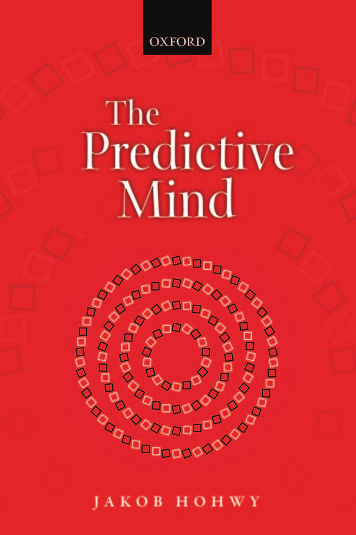
心智
雅各布·霍维
牛津大学出版社
牛津大学出版社是牛津大学的一个部门。它通过在全球范围内出版来推进大学在研究、学术和教育方面的卓越目标。牛津是牛津大学出版社在英国和某些其他国家的注册商标
© 雅各布·霍维 2013
作者的道德权利已得到确认
第一版于2013年出版
印次：1
版权所有。未经牛津大学出版社事先书面许可，或在法律明确允许的情况下，通过许可或在与适当的复制权组织达成的协议条款下，不得以任何形式或任何方式复制、存储在检索系统中或传输本出版物的任何部分。超出上述范围的复制查询应发送至牛津大学出版社权利部，地址如上
您不得以任何其他形式传播此作品并且您必须对任何获得者施加同样的条件
由牛津大学出版社在美国出版美国纽约州纽约市麦迪逊大道198号，邮编10016
英国图书馆出版物编目数据数据可用
美国国会图书馆控制号：2013953488
ISBN 978-0-19-968273-7 (精装) ISBN 978-0-19-968673-5 (平装)
由CPI集团(英国)有限公司印刷装订，克罗伊登，CR0 4YY
牛津出于善意并仅供参考提供第三方网站链接。牛津对本作品中引用的任何第三方网站所包含的材料不承担任何责任。
前言 viii
引言 1 论证 1 计划 3 背景 5 关于本书 9
知觉推断的约束 14 知觉与贝叶斯规则 15 知觉推断与双眼竞争 19 神经元如何知道贝叶斯？ 23 从推断到现象学 25 因果规律的层次结构 27 知觉变异与不变性 28 层次级别间的消息传递 31 层次推断的额外约束 32 关于贝叶斯规则 34 总结：层次神经推断机制 37 注释 38
统计说明 42 重新思考与世界的关系 46 被世界监督 48 更深层的视角 51 识别与模型反演 53 总结：预测中的知觉 55 注释 56
背景与不确定性 60 堵住漏水的大坝 62 预期精度 64 精度与预测误差增益 66 基本机制：相关问题 67 总结：被动的知觉者？ 73 注释 74
知觉中的主动推断 76 对智能体建模和行动 81 限制惊讶 84 主动推断：相关问题 89 预测误差最小化：挑战 92 总结：理解心智的工具准备 95 注释 96
绑定问题与因果推断 102 贝叶斯理论的初步申辩 106 从共同原因到感觉绑定 110 绑定、注意与精度 111 总结：误差最小化中的绑定 115 注释 115
认知渗透性：初步行动 118 不确定性增加下的认知渗透性 122 为认知不渗透性留出空间 124 认知渗透性的可能情况 129 总结：认知渗透性的平衡概念 137 注释 138
知觉与错觉的权衡 141 准确性与噪音 143 精度、采样与先验信念 145 现实检验 147 知觉的法庭 152 精神疾病与预测误差 156 妄想与预期精度 157 自闭症与预期精度 161 平衡被动与主动推断 165 总结：疾病与健康中的预测误差失败 168 注释 169
错误知觉作为预测误差最小化的失败 174 错误知觉与规则遵循 179 表征的层次模式 181 在贝叶斯房间里 185 总结：表征机制 187 注释 188
从心理聚光灯到精度期望 192 学习噪音与不确定性模式 194 注意中的预期精度模式 195 意志注意作为主动推断 197 注意盲视作为低增益与先验 199 内源性与外源性注意 200 注意与意识知觉 201 总结：注意与意识的统计方面 205 注释 206
从因果推断到意识？ 207 知觉统一 209 统一与全局神经工作空间的点燃 211 点燃、主动推断与统一 214 基于行动的统一与间接性 219 总结：统一与因果隔离 221 注释 221
真理追踪者还是仅仅偏爱误差最小化？ 224
感知是间接的吗？ [227]
[贝叶斯身体] [230]
脆弱性、内在性和情境性 [237]
[总结：一种令人不安却又令人安慰的感知关系？] [240]
注释 [241]
[12 进入预测性心理] [242]
[情绪和身体感觉] [242]
内省是对心理原因的推理 [245]
[互动中的私人心理] [249]
[作为感觉轨迹的自我] [254]
[总结：概率性和因果性心理] [256]
注释 [257]
[结语：预测中的心理] [258]
[致谢] [260]
[参考文献] [261]
[索引] [277]
我在这本书上的工作得到了澳大利亚研究委员会和莫纳什大学宝贵研究支持的资助。
我感谢来自世界各地的许多研究者给我的启发、富有成果的讨论以及慷慨的评论。
我在莫纳什的同事们影响了我、与我合作并在科学方面训练了我；特别感谢我的合作者Bryan Paton、Colin Palmer和Peter Enticott，感谢Steve Miller和Trung Ngo将我纳入许多项目和讨论中，还要感谢Naotsugu Tsuchiya、Anastasia Gorbunova、Mark Symmons、George van Doorn、Andrew Paplinski、Lennart Gustavsson和Tamas Jantvik。也要感谢我在哲学领域的同事们，他们中的许多人反复被拉去做预试验，还有那些忍受了实验室里数小时rubber-hand illusion敲击的参与者和患者们。
Andreas Roepstorff在奥胡斯的团队是蓝海研究的专家导航者，在很多方面启发并促成了我对这个领域的兴趣。除了Andreas，Josh Skewes也值得感谢，我们进行了许多小时的讨论。Chris和Uta Frith，有时也在奥胡斯，仍然是伟大、慷慨的影响者；他们是开放思维学者的典范，尤其是当数据即将呈现时。
我很幸运有哲学和神经科学领域的朋友们愿意忍受关于predictive coding和大脑的冗长讨论。Tim Bayne很早就鼓励我坚持写这本书，他在各个阶段广泛阅读和评论了手稿；我对他的学术慷慨极其感激。Thomas Metzinger同样远超职责范围，对这本书的草稿提供了慷慨的评论；我也从访问美因茨时与Thomas团队的同事和学生们的许多讨论中受益匪浅。在东京大学哲学中心的一周里，我与Yukihiro Nobuhara及其同事和学生们就这本书进行了非常有价值的讨论。我从Andy Clark关于我的著作和想法的许多富有启发性和鼓舞性的讨论和评论中受益良多。Ned Block对故事的部分内容提出了富有成效且必要的反对意见。Tim Lane和Yeh Su-Ling以及来自台北的同事们与我慷慨地讨论了这本书的许多方面。我与Floris de Lange、Sid Kouider和Lars Muckli进行了富有成果的讨论。出版社的匿名审稿人提供了大量富有洞察力的评论和批评。
前言 [ix]
我特别感谢Karl Friston，他的工作在很多方面启发了这本书。在无数场合，Karl耐心地对我的工作提供反馈。他阅读并广泛评论了这本书的每一章，他忍受了长途飞行参加跨学科研讨会，并在许多方面为我的工作做出了贡献，促进了我对假设检验大脑的理解。当我试图将这个框架翻译成哲学时，Karl以开放的心态对待我的尝试，这非常令人鼓舞，即使在翻译过程中丢失了许多数学严谨性和细节。当然，我仍然对任何不足之处负责。
这本书献给我的家人：Linda Barclay，感谢她鼓励我写这本书，预测我的错误，并与我同在；Asker和Lewey，感谢他们成为了优秀的rubber-hand实验对象和神经发育的灵感来源。
神经科学中一个新的理论正在兴起。这个理论越来越多地被用来解释和推动实验和理论研究，并且正在进入心理研究的许多其他领域。这个理论认为，大脑是一个复杂的假设检验机制，它持续参与最小化对其从世界接收的感觉输入预测的误差。这个机制旨在解释感知和行动以及其间的一切心理现象。这是一个吸引人的理论，因为强有力的理论论证支持它。它也很吸引人，因为越来越多的经验证据开始指向它的正确性。它具有巨大的统一力量，但也能详细解释问题。
这本书探讨了这个理论。它解释了理论如何运作以及如何应用；阐述了理论为何具有吸引力；并展示了理论背后的核心思想为什么以及如何深刻改变我们对感知、行动、注意力和心理其他核心方面的理解。
[论证]
我对心理及其感知世界的能力感兴趣。我想知道我们如何设法理解击中感官的感觉输入的多样性，当我们理解错误时会发生什么，什么塑造了我们的phenomenology，以及这告诉我们心理本质的什么。正是通过诉诸大脑最小化其预测误差的想法，我试图回答这些问题。
我在这本书中的整体论证有三个方面。第一个方面是，这个理念不仅解释了我们为什么感知，还解释了我们如何感知：这个理念直接应用于感知现象学的关键方面。而且，解释感知的这些方面只需要这个理念。我论证的第二个方面是，这个理念很有吸引力，因为它结合了令人信服的理论功能和简单的机械实现。此外，这种基本组合极其简单，却有潜力以非常细致的方式应用。论证的第三个方面是，我们可以通过将这个理念应用于心智问题来学到新东西：我们对感知机制有了新的认识，了解了感知的不同方面如何结合在一起，我们对自己作为感知和行动生物在自然界中的位置有了新的认识。
从考虑这个理论中得出的整体图景是，心智在预测中产生，并被预测塑造。这转化为心智的许多有趣的具体方面：
感知比通常认为的更积极地参与理解世界。然而它却具有奇特的被动性。我们与世界的感知关系受到感觉输入提供信息的有力指导。然而这种关系是间接的，并带有某种令人不安的脆弱性。进入大脑的感觉输入并不直接塑造感知：感觉输入更好地、也更令人困惑地被描述为对大脑发出的询问的反馈。
我们的期望驱动我们感知什么以及如何整合世界的感知方面，但世界对我们的期望能够摆脱什么设置了限制。通过测试假设我们正确认识世界，但这取决于优化丰富的统计过程织锦，其中小的偏差似乎能够使我们陷入精神障碍。心智既是法庭，也是假设检验者。
感知、行动和注意力只是做同一件事的三种不同方式。这三种方式必须彼此仔细平衡，才能正确认识世界。意识感知的统一性、自我的本质以及我们对私人精神世界的了解，从根本上建立在我们试图优化对持续感觉输入的预测上。
更根本地说，我们感知状态的内容最终不是建立在我们做什么或想什么上，而是建立在我们是谁上。我们对世界的体验和与世界的互动，以及我们对自己和自己行为的体验，既牢固地锚定在世界中，又危险地隐藏在感觉输入的面纱后面。我们只是因果结构世界中的齿轮，信息流中的漩涡。
这个理论不仅有望从根本上重新概念化我们是谁以及我们精神生活的各个方面如何融入世界。它在一个理念下统一了这些主题：我们最小化基于我们的世界模型生成的假设与来自世界的感觉传递之间的误差。一种单一类型的机制在整个大脑中重复，管理一切。该机制使用各种标准统计工具来最小化误差，从而产生感知、行动和注意力，并解释这些现象的令人困惑的方面。尽管对机制的描述是统计学的，但它只是一个因果神经机制，因此该理论与还原主义、唯物主义的心智观点很好地吻合。
具有这种解释前景的理论是极其令人兴奋的。这种兴奋推动了这本书。信息是该理论兑现了承诺，并让我们以新的视角看待心智。
我相信这种大脑和心智方法的许多其他方面可以而且将会被探索。这本书绝不会耗尽这种生活和心智方法的影响。我专注于感知中的关键问题，但很大程度上忽略了更高的认知现象，如思维、意象、语言、社会认知和决策制定。我也大多忽略了关于该理论与社会学、生物学、进化论、生态学和基础物理学关系的更广泛问题。这仍然为本书留下了大量工作要做。
这本书分为三个部分。第一部分依赖于神经科学和计算理论研究人员的工作，特别是Karl Friston和他的大型合作者团队的工作。在一系列章节中，预测误差最小化机制得到了动机、描述和解释。我们从一个非常简单的感知贝叶斯概念开始，以一个核心机制结束，该机制使贝叶斯推理对世界状态及其精确性的统计估计敏感，同时为上下文敏感性和模型复杂性留出空间。整体观点部分具有吸引力，因为它只诉诸于这一种机制——这是一个非常雄心勃勃的统一项目。
这个研究领域在数学上很重，这确实是其影响力日益增长的原因之一：数学方程提供了形式严谨性和可量化预测的可能性。然而，我的阐述是以最少的技术、形式细节完成的。我诉诸并解释了非常一般的贝叶斯和统计思想。这忽略了数学之美，但会使讨论易于理解，更容易应用于认知科学和哲学中的概念和经验难题。
我的主要关注点是阐述预测误差最小化机制的关键要素，特别是预测误差如何产生和被最小化的方式，对预测误差精度的期望是如何处理的，复杂性和情境依赖性如何发挥作用，以及行动如何成为该机制不可分割的一部分。此外，我阐述了这一机制如何在整个大脑中分层重复。这些要素是解释其他一切所需的，并且可以在没有过多正式细节的情况下相当好地传达。我在第1章末尾提供了贝叶斯定理的简要入门，并在第2章的注释中描述了一些基本的正式细节。我有时也提供一些非常基本的正式表达式，主要用作提醒，说明更复杂的要点如何与更简单的贝叶斯表达式相关；这些更正式的要素对整体论证的流程来说并非必不可少，但它们确实表明了这一理论背后的广阔数学背景。
预测误差最小化框架也可以推广为自由能最小化的基本概念。当我超越认知问题的简单的、专注于认识论的版本，即预测误差最小化的感知问题时，我确实间接地诉诸了这一概念，但我在讨论中通常不使用这一更广泛的自由能概念，也没有深入研究它的更广泛后果。这是因为我专注的心智方面通过首先和最重要地诉诸贝叶斯假设检验的更直接的认识论概念而最有意义。然而，从根本上说，这些正式框架之间没有区别。
第二部分探讨了基本预测误差最小化机制对认知科学中一些长期争议的后果，这些争议涉及我们对世界事态的感知：绑定问题(binding problem)，以及关于我们的先验信念(prior beliefs)在多大程度上塑造感知的争议。假设检验大脑理论能够在这些争议中找到有趣的路径。本书的这一部分随后阐述了现实测试和预测误差最小化精调的多面观点，这反过来又与精神障碍相关。
我将以足够细致的水平处理这些问题，以确立该框架对理解它们的有效性，尽管我没有对绑定问题、认知不可渗透性(cognitive impenetrability)、精神疾病等广泛文献的每个方面给出完整的解释。我用心理学和认知神经科学的实证研究例子来说明这些讨论中的许多内容，包括一些我自己直接参与的研究。
本书的这一部分表明，尽管在这种心智解释中只有一个基本机制，但其解释范围既非常令人印象深刻又富有启发性。第二部分的最后一章在一系列更直接的哲学争议中继续这一项目，涉及错误表征(misrepresentation)、规则遵循(rule-following)、表征(representation)和理解(understanding)。
在第三部分中，我探索了预测误差最小化机制能告诉我们关于精神生活中一些有趣方面的什么，这些方面在哲学和认知科学中引发了深刻而顽固的争议。再次，考虑到这一理论极端的解释雄心——它应该给出大脑的基本原理——我们应该期望它适用于心智的所有方面。
首先，我将其应用于注意力及其与意识感知之间不甚理解的关系。然后我在意识感知统一性的解释中诉诸这一理论，这是我们感知生活中一个有趣而令人困惑的方面。在倒数第二章中，我探索了这一理论框架如何能够给我们一种整体位置感，作为感知和行动的生物，与世界形成对比。
最后，我更加放松束缚，思考这一框架如何可能扩展到情感、内省、意识的私密性和自我。
该理论核心的预测误差最小化的简单概念既能够以有趣的结果解决这些深层问题，又重要的是，似乎能够在一个原理下统一我们精神生活的这些非常多样的方面。
总的来说，这使我们更接近一个统一的、自然主义的解释，它提供了对心智许多令人困惑方面的新的和令人惊讶的理解。将大脑构想为假设检验器使我们能够重新评估、重新校准和重新构想关于心智如何工作以及我们如何了解世界的整套问题和直觉想法。
尽管围绕预测误差最小化解释的正式机制最近才被开发出来，但核心思想并不新颖。它在一千年前就被Ibn al Haytham (Alhazen) (约1030年；1989年)所预见，他发展了”许多可见属性是通过判断和推理感知的”观点(II.3.16)。这个想法中肯定也有明显的康德元素，即感知产生于大脑使用其对世界的先验概念(空间和时间的直观形式，以及范畴等)来组织面对感觉系统的混沌感官杂多(Kant 1781)。我们的思维(或推理)与从感官传递的杂多内容之间的关系在康德的格言中得到体现：没有内容的思想是空洞的，没有概念的直观是盲目的：“理解力不能直观任何东西，感官不能思考任何东西。只有通过它们的结合，知识才能产生”(A51/B75)。
但是赫尔曼·冯·亥姆霍兹首先提出了大脑作为假设检验者的想法，这是对康德的直接回应。他担心的是，按照康德的思维方式，“我们如何从自己神经系统的感觉世界逃脱到真实事物的世界中”（Helmholtz 1855; 1903；关于与康德的关系，见 Lenoir 2006）。他的答案基本上是，我们受到自然在我们查询时所提供答案的指导，使用基于先前学习的无意识知觉推理（Helmholtz 1867）。正是这种推理将知觉锚定在世界中。
这个绝妙而简单的想法仍然是现代假设检验大脑的正式和实证探索的核心。亥姆霍兹的思想在整个20世纪以不同的节拍被采纳和发展。杰罗姆·布鲁纳的”新观点”心理学考虑了先验信念对知觉的影响（Bruner, Goodnow et al. 1956），这反过来受到杰瑞·福多和泽农·皮利申的挑战，尽管他们都接受基本的亥姆霍兹式的（低级）无意识推理概念（Fodor 1983; Pylyshyn 1999）。乌尔里希·奈瑟（1967）发展了综合分析的概念，这具有独特的康德式感觉；欧文·洛克（1983）进一步发展了这些想法，理查德·格雷戈里（1980）明确地将他的知觉理论建模于亥姆霍兹对假设检验的诉求（概述和讨论见 Hatfield 2002）。利用这些想法的正式机制由霍雷斯·巴洛预示（Barlow 1958; Barlow 1990），并由许多从事计算神经科学和机器学习的人发展，特别是拉奥、巴拉德、芒福德、戴扬、辛顿等人，而知觉的贝叶斯方法由克斯滕、尤伊勒、克拉克、埃格纳、马马西安等许多人探索和发展（有用的介绍和教材包括（Knill 1996; Dayan and Abbott 2001; Rao, Olshausen et al. 2002; Doya 2007; Bar 2011））。最近也有对该框架的阐述和讨论，例如（Bubic, Von Cramon et al. 2010; Huang and Rao 2011; den Ouden, Kok et al. 2012）。克里斯·弗里思的优秀著作《构造心智》（2007）讨论了假设检验大脑的许多方面，并提供了相关实证研究的大量例子。
与预测误差最小化故事相关的历史潜流涉及我们对因果关系和归纳推理理解的发展。大卫·休谟在这方面是一个关键人物，因为他将”原因定义为一个被另一个对象跟随的对象，并且所有与第一个相似的对象都被与第二个相似的对象跟随。换句话说，如果第一个对象不存在，第二个对象就永远不会存在”（Hume 1739-40: 146）。对休谟来说，因果关系因此既涉及提取统计数据，也涉及想象当世界以受控方式被干预时会发生什么。这种双重定义在刘易斯对因果关系的反事实处理中得到强调（Lewis 1973），并在伍德沃德（2003）关于干预下不变性的因果关系完整分析中得到发展，与皮尔关于休谟基本思想两个方面的开创性工作并行（Pearl 1988, 2000）。提取统计规律的概念和建模干预的概念在无意识知觉推理的概念中都占重要地位。
也许正是因果故事和假设检验故事的现代发展的汇合，使得发展和现在应用预测误差最小化概念成为可能，以至于我们可以看到它转变了我们对心智的概念。
尽管在过去60-70年中，心灵哲学和认知哲学中一直在讨论这类理论的各个方面，但对该理论最新化身的哲学工作却很少。部分基于德雷茨克的有影响力方法（Dretske 1983），在将表征的统计思想与传统哲学辩论联系起来方面的先驱是克里斯·埃利亚史密斯和马留斯·乌舍（Eliasmith 2000; Usher 2001; Eliasmith 2003, 2005）。里克·格鲁什在类似的方向上做出了贡献，并在此基础上发展了引人注目的理论，例如时间意识理论（Grush 2004, 2006）。安迪·克拉克目前正在以极其有趣的方式发展这个框架，展示其广泛的后果，并以关键的方式将框架引向与我在本书中论证的不同方向（Clark 2012a, 2013）。在认识论内，有一条有趣的相关研究路线，专注于汉斯·赖兴巴赫（1938）关于从立方宇宙内部推断外部世界存在的例子，最近由埃利奥特·索伯（2011）以贝叶斯和因果术语进行讨论，这预示了该框架的关键要素。
预测误差最小化理论在许多方面都难以分类：它既是主流的，又是完全有争议的。一方面，与al-Haytham和亥姆霍兹等人一起，它位于心理学和神经科学的历史核心，并且与格雷戈里、洛克、奈瑟和许多其他人一起，这种方法得到了主要的当代支持。另一方面，它具有如此极端的解释雄心，以至于相对较少的人会支持它，超出接受我们的期望和先验知识确实塑造或指导知觉。许多人会同意预测在知觉中发挥作用的一般想法，但很少有人会同意预测误差最小化是大脑所做的一切，行动和注意只不过是这种最小化。更少的人会同意这完全是像人类这样的有机体自组织方式的表达，而且，进一步地，这本质上建立在变分自由能的基础上，与统计物理学有直接联系！
在神经科学研究中，很少看到对这一概念的任何根本性认同；相反，教科书的描述主要从自下而上感觉信号的特征检测角度来解释感知，而没有为大脑中大量反向连接赋予强有力的作用，这些反向连接被认为是在预测误差方案中介导预测的。相比之下，计算神经科学和机器学习的教科书通常包含表征学习的章节，其详细程度远超我在这里讨论的理论方面。从受到这一观点启发或在这一观点指导下讨论其结果的已发表研究数量不断增加来看，我认为用不了几年，某种版本的理论将在神经科学中占据主导地位，但这一预言当然要受到经验证据的检验。
在认知科学和机器学习领域，如前所述，预测误差最小化方案的各种版本得到了广泛认可。该方案的部分内容起源于连接主义，特别是在构建具有反向传播算法的神经网络方面，这些算法是对输入数据进行分类的误差校正方法(Rumelhart, Hinton et al. 1986)。然而，
它与反向传播在核心方面存在差异，因为它不是监督式的（因此不需要标记的训练数据）。预测误差最小化使用以自上而下方式生成数据的模型，而不是对自下而上的数据进行分类，此外生成模型的使用在深度层次结构设置中效果更好(Hinton 2007)。这些方面清楚地表明该方案与早期连接主义思想的不同，它们是我在整本书中重点讨论的许多内容的基础。
预测误差方案似乎在认知科学的两种对立趋势之间占据了合理的位置。一方面是自上而下的方法，从认知过程的概念和功能分析开始，然后寻求逆向工程出大脑模型。另一方面是自下而上的方法，构建生物学启发的神经网络，并寻求了解这些网络实现了哪些认知功能(Griffiths, Chater et al. 2010; McClelland, Botvinick et al. 2010)。作为一名哲学家，我自然倾向于从概念分析开始，实际上本书也是以这种方式开始的。然而，该方案的一大吸引力在于它适合于非常机械化的方法。虽然需要更多证据，但它与大脑的整体解剖学和生理学事实以及大脑的工作方式很好地吻合。特别是，它受到大脑中相对独特的前向信号传导整体流动的启发，这与大量且更分散的反向信号相遇；它与大脑的功能分离和连接性很好地吻合；不同的功能元素非常适合大脑的不同类型的可塑性。这吸引了我内心的科学家。这种结合呈现了一个有吸引力的整体方案。
我自己走向假设检验大脑的旅程始于Ian Gold和我研究妄想形成理论的时候(Gold and Hohwy 2000)，并在2001年左右Andreas Roepstorff和我在奥胡斯开始合作时起飞。与一个杂乱的跨学科小组一起，我们开始解读这个框架，欣赏其解释潜力，并开始思考它如何适用于许多不同的主题。受到Chris Frith工作的启发，我首先通过神经精神病学问题探索了它(Hohwy 2004; Hohwy and Frith 2004; Hohwy and Rosenberg 2005)，然后关注更广泛的问题，如自我(Hohwy 2007b)以及对我们认知和感知功能概念的一般后果(参见Synthese特刊(Hohwy 2007a)，其中包含Eliasmith(2007)和Friston and Stephan(2007)的重要贡献)。从那时起，我研究了视觉感知、内省和情感的核心功能，以及注意力(Hohwy, Roepstorff et al. 2008; Hohwy 2011; Hohwy 2012)。在所有这些情况下，我都依赖于Friston、Frith和其他人的工作，并发展了特定问题的后果。显然，现在是时候不仅统一这些主题中的许多内容，而且后退一步，更全面地了解该框架对心智的看法。
本书面向哲学家、神经科学家、心理学家、精神病学家、认知和计算机科学家以及任何对心智本质感兴趣的人。不熟悉该框架的读者可以通过我对其核心基本机制的简化阐述，以及看到它如何应用于一系列不同的问题案例来了解它。已经熟悉该框架的读者将对它如何连接到心理学和认知科学整体的广泛主题以及哲学问题感兴趣。
我努力在没有太多哲学术语的情况下解释哲学辩论。经验哲学和神经哲学的主题贯穿全书，但我将更直接的哲学辩论大部分集中在第8章。有时我提供详细的论证，有时更多是以承诺性说明或邀请的形式进行进一步工作。我希望本书的优势既在于具体建议，也在于建议的综合组合。我也努力以直接和易懂的术语描述神经科学和心理物理学研究。尽管我在这里没有为该理论提供新的经验证据，但我相信我的处理确实通过提供广泛的、统一的解释来支持该理论，这种解释解决并阐明了心智哲学和认知科学中一些顽固的问题和辩论。
在每章末尾，我都放置了注释。这些注释提供了参考文献和进一步阅读建议，以及文本来源和相关额外经验证据的简要回顾。有些注释包含简短的讨论，虽然这些讨论对相关章节的主要论证并非至关重要，但它们确实涉及所讨论的更广泛主题的重要进一步方面。我将它们作为注释包含进来，以说明它们如何与本书的主题相关。最后，有些注释提供了概念框架所依赖的一些形式化和数学机制的基本描述。
机制
作为因果推理的知觉
我们的感官受到来自世界事物的输入轰炸。基于这种输入，我们感知到外部存在的事物。我们关注的问题是大脑如何完成这种知觉的壮举。
本章追求这样一个观点：大脑必须使用推理来感知——大脑是一个推理机制。第一个目标是说明为什么我们应该同意这一点，以及这种感知推理的关键要素是什么。第二个目标是说明推理如何能够支撑知觉的现象学。
对知觉问题一个非常基本且有用的表述是从因果关系的角度。世界中的事态对大脑产生影响——世界中的物体和过程是感觉输入的原因。知觉的问题就是使用这些影响——即大脑唯一能接触到的感觉数据——来找出原因的问题。这对大脑来说就是一个因果推理问题，在许多方面类似于我们日常的因果关系推理，以及科学的因果推理方法。
知觉之所以是一个问题，是因为仅从已知的影响推理回到其隐藏的原因并不容易。这是因为同一个原因可能对我们的感觉器官产生非常不同的影响。考虑我们从看自行车与仅仅触摸自行车，或从不同角度看它，或完整地看它与被灌木丛部分遮挡时所获得的非常不同的输入。同样，不同的原因可能对我们的感觉器官产生非常相似的影响。考虑来自不同物体（如自行车或仅仅是自行车的图片）的潜在相同的感觉输入，或被灌木丛遮挡的完整自行车与散落在灌木丛周围的分离的自行车部件，或更奇异的可能性，比如一群协调异常良好的蜜蜂造成了如自行车般的感觉印象。
在我们复杂的世界中，原因与结果之间并没有一一对应的关系，不同的原因可能导致相同类型的结果，同一个原因可能导致不同类型的结果。这使得大脑很难将一个结果（感觉输入）与一个原因（世界中的物体）匹配起来。如果大脑因果推理的唯一约束是直接的感觉输入，那么从大脑的角度来看，任何因果推理都和其他任何推理一样好。当输入不同时，如在看到和感受到自行车的情况下，大脑不知道是否推断输入的原因是相同的，或者是否存在不同的原因，以及一种类型的原因是否比另一种更可能。
关键问题是，如果没有任何额外的约束，大脑将无法对其感觉输入执行可靠的因果推理。我们实际上可以进行这种推理，因为我们可以感知。所以必须存在这样的额外约束，但它们可能是什么呢？
一种可能性是，额外的约束仅仅是偏见。尽管大脑无法可靠地推断出是一个而非另一个原因，但它只是碰巧偏向于其中一个。碰巧的是，当它得到某种输入时，它决定支持，比如说，自行车是原因。毫无疑问，自然界中存在可描述的、类法则的规律性，在某些待明确的条件下，如果像大脑这样的系统的某种感觉输入是由自行车引起的，那么它将偏向于将其感知为自行车。原则上，科学的各个分支都能够通过系统地将像大脑这样的系统暴露于自行车输入并跟踪整个大脑中的因果链事件来发现这些偏见。大脑似乎通过机会主义地偏向于在难以处理的众多可能的因果关系中选择其中一个来解决知觉问题。
但是，即使在某种描述水平上存在这些规律性，它也无法解决我们所理解的知觉问题。这种规律性不能为理解作为因果推理的知觉提供理解。推理是一个规范性概念，纯粹的偏见无法让我们理解推断回自行车而非例如蜂群是感觉输入原因之间如何可能存在质量差异。自然界中的纯粹规律性给我们的是关于系统会做什么的故事，而不是它应该做什么才能正确理解世界的故事。因此，需要的是对这种规律性作用的规范性理解。我们需要从规范性角度看待对因果推理的额外约束。
对具有规范性影响的额外约束有一个明确的首选候选者。显然，关于自行车等事物的因果推理依赖于大量的先验信念。这可能是让我们对某些候选原因（如造成当前感觉印象的蜂群）评级较低的原因。我们的先前经验告诉我们，蜜蜂实际上是
极不可能在我们身上形成这种感官输入模式。事实上，毫无疑问，感知因果推理需要先验知识的支撑，但这样做并非易事。一方面，如果我们所讲述的故事是我们只是发现自己拥有一套先验信念，那么我们毕竟没有超越单纯的偏见类型的故事。另一方面，如果先验知识本身是先前感知、因果推理的产物，那么我们就预设了我们要解释的东西，即感知因果推理——地毯下的凸起只是转移了位置。
我们现在可以看到感知问题的解决方案必须做什么。它必须具有引导效应，使感知推理和先验信念得到解释，并被解释为是规范的，一蹴而就，而不是通过超越颅骨限制的大脑视角来帮助我们找到答案（Eliasmith 2000; Eliasmith 2005）。这样一个解决方案的轮廓现在开始显现。它基于概率论——贝叶斯认识论——这是规范的，因为它告诉我们关于给定证据时我们应该推断什么的某些东西。
考虑这个非常简单的情景。你在一个没有窗户、没有书籍或互联网的房子里。你听到敲击声，需要找出是什么原因造成的（图1）。
这说明了基本的感知任务。你就像大脑，房子就是颅骨，声音是听觉感官输入。当你思考
?
16 机制
输入的原因时，你开始列出输入的可能原因。它可能是啄木鸟在墙上啄，风中树枝敲击墙壁，窃贼撬锁，街道远处的重型道路工程，邻居的大声音乐，或那些孩子投掷石头；或者它可能是一些内部因素，如松动的水管相互撞击。让你的想象力驰骋：可能是你的房子在夜间被发射到太空，声音是由流星雨产生的。可能的原因没有终点。将这些可能性中的每一个称为假设。感知的问题是如何塑造和选择关于世界的正确假设。
暂且不考虑一旦我们开始产生假设，就没有明确的原则来决定我们应该何时停止的问题。相反，考虑我们能够产生假设的事实，以及并非任何假设都会显得相关。例如，我们不会接受你房子上的敲击声可能是由遥远的数学家对哥德巴赫猜想的沉思，或昨天的天气产生的。这意味着我们能够理解假设与所讨论的效应之间的联系。我们可以说”如果真的是啄木鸟，那么它确实会引起这种声音”。我们可以对假设符合效应的可能性说些什么。这就是似然性：假设中描述的原因会导致那些效应的概率。很明显，评估这种似然性是基于对世界因果规律的假设（例如，啄木鸟的典型效应）。基于我们对世界因果规律的知识，我们经常可以根据假设的似然性对其进行排序，根据它们与我们试图解释的效应的联系紧密程度。这种排序可以说是捕捉了假设在解释或预测效应方面的好坏程度。例如，啄木鸟假设可能与撞击管道假设具有大致相同的似然性，而两者都比那些投掷石头的孩子的假设具有更高的似然性。
我们可以通过将自己限制在只考虑高似然性的假设来简化感知问题。仍然会有大量具有高似然性的假设，仅仅因为，正如我们之前讨论的，原则上很多事情都可能导致所讨论的效应。仅仅根据具有最高似然性的假设并不能确保良好的因果推理。这里有一个具有非常高似然性的假设：声音是由狡猾的神经科学家专门设计的敲击机器产生的，用来让你说明感知因果推理。这个假设与听觉证据极其吻合，但在很多实际情况下，它似乎不是一个好的解释。问题是，当狡猾的神经科学家假设在其本身被考虑时，在你听到敲击声之前，它似乎非常不可能。
因此，除了假设的似然性外，我们还需要考虑假设的独立的、先验的合理性。我们需要考虑假设在任何考虑其与证据拟合之前的概率。这就是假设的先验概率。也许基于其描述的事件频率，每个假设有多大概率存在某种客观真理。这种知识会很有用，但大多数时候这不是我们所拥有的。相反，我们假设你基于自己的背景信念和主观估计为假设分配概率（确保概率和为1，使排序有意义）。
通过诉诸你的先验信念，我们为你提供了两个工具来找出声音的原因：似然性，即在你目前正在考虑的特定假设下，你在房子里观察到的效应的概率；以及假设的先验概率（或简称”先验”），即你对该假设独立于你目前观察到的效应的概率的主观估计。
选择最符合观察到的效应但按该假设的独立概率加权的假设似乎是理性的。似然性和先验是贝叶斯定律的主要成分，贝叶斯定律是概率论的一个定理，被许多人认为是理性的范式。这个定律告诉我们，通过考虑似然性（即给定假设下证据的概率）和假设的先验概率（经过归一化使概率总和为1）的乘积，来更新给定假设（如啄木鸟假设）在某些证据（如听到某种敲击声）下的概率。对假设的这种概率分配被称为后验概率。那么最佳推理就是具有最高后验概率的假设。（本章末尾包含了贝叶斯定律的简要入门介绍）。
现在回到你在房子里听到的声音。有了似然性和先验，你可以得出一个好的假设：获得最高后验概率的假设。如果你在你的地区经历过许多啄木鸟，只遇到过少数窃贼，而且你真的不认为你的房子可能在一夜之间被发射到太空中，等等，那么你最终应该推理出啄木鸟假设（图2）。
即使在这个非常简化的表述中，贝叶斯推理为思考知觉提供了一种非常自然的方式。当然，我在这里说明这个问题的缺点是，头骨内没有聪明的小人有意识地执行因果推理。在我们将要发展的故事中，这可以追溯到亥姆霍兹，真正发生的是神经机制无意识地执行知觉推理。正如亥姆霍兹对导致知觉的”精神活动”所说的：
[它们]通常不是有意识的，而是无意识的。在其结果中，它们就像推理一样，因为我们从对感官的观察效应中得出关于这种效应原因的想法。即使我们实际上总是只能直接接触神经中的事件，也就是说，我们感受到效应，而从不感受到外部物体（亥姆霍兹 1867: 430）。

因此，我们将要谈论的是无意识的知觉推理。我们面前的任务是看看系统所做的如何能够有效地被conceived为一种推理形式。我们只需要接受亥姆霍兹的观点，即大脑能够无意识地经历我们为找出锁着的房子里听到的声音的原因而描述的那种推理。大脑使用贝叶斯定律推断其感觉输入的原因——这就是它感知的方式。核心思想相当清楚，并且具有令人愉快的普遍性：知觉问题本质上并不特殊，不需要全新的科学分支。相反，它不过是我们在科学和日常生活中经常面临的因果推理问题的一个版本。
虽然贝叶斯推理的知觉方法很有吸引力，但很快就出现了许多问题。首先，将知觉与理想理性的、概率的、科学风格的推理相一致，似乎相当智识主义。学习概率论和实施贝叶斯推理是困难的，但知觉是无意识和轻松的——这是成人、儿童和动物在不了解贝叶斯的情况下都能做到的事情。此外，有证据表明我们在显式贝叶斯推理方面做得不是很好——贝叶斯定律需要一些解释和练习，所以似乎对我们来说并不自然（Kahneman, Slovic et al. 1982）。说大脑”推理”或”相信”事物也有些奇怪。如果我们不知道贝叶斯，大脑在什么意义上知道贝叶斯呢？
就此而言，知觉的贝叶斯方法似乎并不直接涉及知觉现象学的全部丰富性，而更多的是输入原因的纯概念标记或分类（它似乎不是那么
关于视觉体验自行车，而更多的是仅仅将某些感官输入标记为”自行车”）。这种方法专注于分配主观概率，也没有立即开始为先验信念的来源提供令人满意的解释。正如我们将在这一章和接下来的章节中看到的，理论框架可以被发展来处理所有这些问题。
与知觉的推理图景形成对比的是另一种图景，在这种图景中，知觉不是假设检验大脑中推理过程的结果，而是一个分析性的、自下而上驱动的过程，其中信号从低级感觉刺激中恢复并逐渐组合成连贯的知觉。在这种替代性的非推理方法中，知觉是由大脑在从世界获得的输入中检测到的特征自下而上驱动的。粗略地说，输入的变化驱动知觉的变化，因此在任何实质性的、规范性意义上都不需要自上而下的推理。
关于特征检测方法与更具推理主义色彩的贝叶斯方法的相对优势存在很多讨论（综述和讨论见Rescorla（出版中））。不采用特征检测方法的一个原因是，它如何能够帮助解决我们上面提出的知觉问题并不十分清楚。这种理论争论在这里无法得到决定性的解决，但在下一节中，我将给出一个我认为很好的知觉效应示例，证明推理的必要性。
1593年，意大利博学家Giambattista della Porta报告了一种有趣的视觉现象：
[在双眼之间放置一个隔板，将它们分开，在右眼前放置一本书]
[进行阅读；如果在左眼前放置另一本书，不仅]
[无法阅读，甚至看不到页面，除非视觉能力]
[从右眼撤回并转移到左眼（Porta 1593；引自]
[Wade 1998: 281）。]
几个世纪后，Charles Wheatstone发明了立体镜，它使用镜子帮助分离呈现给双眼的图像，并在1838年也描述了这种在每只眼睛显示不同字母之间的知觉交替（Wade 1998；Wade 2005）。这种迷人的效应被称为双眼竞争(binocular rivalry)，在Porta之后的400年里，它仍然是视觉科学中许多研究的活跃焦点。其背后的神经机制仍然未知，它不断产生新的有趣发现。正如Porta生动地表达的，是什么使”视觉能力”在双眼之间交替？
这是一个令人惊讶的效应，因为人们会认为如果向双眼显示两个不同的图像，它们应该以某种方式相互融合。如果向一只眼睛显示房屋的图片，向另一只眼睛显示面孔的图片，那么人们当然应该只看到一个面孔-房屋。但正如Porta和Wheatstone以及许多其他人所描述的，这并不是所发生的。大脑似乎以某种方式决定那里有两个不同的东西，一个面孔和一个房屋——知觉相应地每隔几秒钟在看到其中一个或另一个之间交替，有时中间会有斑块状竞争的时期。
我们将在本书后面多次回到双眼竞争，但现在请注意它对知觉纯粹是刺激驱动的、自下而上的特征检测这一观念施加了压力。在竞争过程中，世界中的物理刺激保持不变，但知觉却在交替，所以刺激本身不可能是驱动知觉的因素。很难不将某种推理能力归因于知觉系统。就好像知觉系统拒绝接受对混乱输入的合理解决方案可能是世界上存在面孔-房屋混杂物。
用贝叶斯术语来说，这种混杂物作为我的知觉输入原因的先验概率极低。相反，选择了非常”修正性”的假设，每个假设都有效地抑制了大部分传入的感觉信号。就好像当看到面孔时，视觉系统说”这很可能是一个面孔，不要介意面孔假设无法解释的总输入的所有部分”；当知觉然后交替看到房屋时也是如此。这种推理过程究竟如何进行是另一个问题，但很难看出我们如何能够在不诉诸某种推理的情况下开始解释这种效应。
回想一下对贝叶斯推理方法的知觉似乎相当理智主义的担忧。对此的初步回应是，至少在某些情况下，某种程度的推理似乎是必要的。当然，大脑可能只需要在像双眼竞争输入这样的特殊情况下求助于这种推理。然而，如果大脑进化出高度复杂的推理过程来处理它主要在高度人工的实验室环境中遇到的知觉情况，那将是奇怪的（尽管关于它有多不常见存在争论，见Arnold 2011；O’Shea 2011）。假设大脑总是使用某种推理过程来感知世界，而竞争是一种简单地使大脑的日常推理过程更容易被发现的效应，这似乎是合理的。
双眼竞争的一些奇妙特殊方面加强了大脑参与相当复杂推理工作的假设。1928年Emilio Diaz-Caneja（Diaz-Caneja 1928）发现，如果将两个图像切成两半并组合，使得一只眼睛看到，例如，半个房屋和半个面孔，而另一只眼睛看到房屋和面孔的另一半，那么呈现给每只眼睛的内容之间不存在竞争，

[呈现的] [感知的]
[标准]

[竞争]
[时间]
[Diaz-Caneja]
[竞争]
[左眼] [右眼]
相反，这是在面孔和房屋的完整、未切割图像之间的竞争（图3展示了Diaz-Caneja使用的刺激类型）。
这是大脑的一个卓越成就。亲自体验这种现象也令人震撼。它表明，即使竞争在某种程度上是来自每只眼睛处理的非常低级别的原始竞争的结果，这也不能是完整的故事，因为半个图像从每只眼睛获取并组合成连贯的、相互竞争的知觉。
同样，神经科学领导者Nikos Logothetis实验室的研究表明，如果眼睛的图像每秒钟交换几次，竞争仍以相对正常的方式继续。因此，如果你目前看到的是显示给右眼的面孔，那么即使右眼中面孔的图像被交换为房屋的图像，你仍将继续看到面孔(Logothetis, Leopold et al. 1996)。大脑非常显著地推翻实际输入，以便理解世界。
我与Andreas Roepstorff和Karl Friston提出了一个简单的贝叶斯故事，解释为什么在双眼竞争中一次只能看到一个图像。视觉系统接收到不寻常的总输入，例如，一只眼睛看到房屋图像，另一只眼睛看到面孔图像。有三个相关的候选假设来解释可能导致这种感觉输入的原因：只是房屋、只是面孔，或者是面孔-房屋的混合。系统将基于以下因素选择其中一个假设：(i) 它们的似然性，即房屋、面孔或面孔-房屋混合导致这种输入的可能性有多大，以及 (ii) 它们的先验概率，即无论实际感觉输入如何，你现在应该看到房屋、面孔或面孔-房屋的可能性有多大。贝叶斯故事是这样的：组合的面孔-房屋混合假设具有最高的似然性，因为它比单独的面孔或房屋假设能解释更多的感觉输入。但这种高似然性无法克服面孔和房屋可能共存于同一时空位置的极低概率（你偶尔可能会遇到位于房屋前面的面孔透明图像，但很难想象完全不透明的面孔和房屋在空间中的同一位置）。因此，被选择的假设，也就是决定知觉的假设，要么是面孔假设，要么是房屋假设；图4 (Hohwy, Roep-storff et al. 2008)。

对这一假设的一些经验支持正在出现。如果贝叶斯故事是正确的，那么可以推断，如果其中一个假设的先验概率上升，那么这个增强的假设应该在竞争中占主导地位。Rachel Denison及其同事(Denison, Piazza et al. 2011)使用不同方向的线条刺激每只眼睛以诱发竞争，并通过在竞争开始前短暂显示停止在水平或垂直位置的旋转线条，成功地使先验概率偏向其中一只眼睛的刺激。正如预测的那样，参与者更有可能选择具有最高先验概率的刺激作为他们的第一知觉。Zhou Wen及其同事(Zhou, Jiang et al. 2010)通过向参与者呈现文本标记和玫瑰的图像来诱发双眼竞争。他们通过添加嗅觉证据让参与者也闻到玫瑰，从而增加了玫瑰的概率。正如贝叶斯故事所预测的，参与者因此花费更多时间知觉玫瑰图像。
正如我们稍后将看到的，这个简单的贝叶斯解释还需要更多工作。首先，它没有解释为什么在双眼竞争中图像之间存在持续交替（第10章回到这个问题，并在某种程度上修订了Hohwy et al. 2008中给出的提议）。到目前为止所呈现的解释只解释了如何只选择一个图像用于知觉。尽管如此，基本的贝叶斯思想至少开始理解竞争的一些本质特征。
关于贝叶斯方法对双眼竞争和感觉处理理解的贡献程度，评审团仍未达成定论（综述见Blake and Wilson 2011）。虽然我不建议对竞争的诉求会一劳永逸地结束这场辩论，但它强烈表明，即使我们没有人在知觉中有意识地知道和应用贝叶斯规则，我们大脑中的知觉系统也以某种方式无意识地遵循贝叶斯规则。大脑为我们所做的确实是推理性的。我认为双眼竞争为知觉推理的辩护提供了一个特别好的案例，尽管Hermann von Helmholtz和此后的许多其他人在为无意识知觉推理概念的辩护中诉诸了许多额外现象。
这个提议是，大脑在意识不知情的情况下参与复杂的概率推理。这听起来可能像是视觉皮层和整个大脑中的神经元群体知道并应用贝叶斯法则。这样描述事情带来了我们可能称之为神经拟人主义(neuroanthropomorphism)的风险——不当地将类人特性归因于大脑，从而混淆个人层面的解释和次个人层面的解释。正如我们所看到的，有强有力的理由认为知觉是由大脑执行的无意识推理，所以问题是我们应该如何理解这个想法而不屈服于粗糙的神经拟人主义。
这里埋藏着一个巨大的理论问题，我们不会完全解决。但由于我将继续用大脑”推理”、“相信”和”决定”事情的术语来谈论，简要解释为什么我认为这种用法没有特别的问题可能是有用的。希望在本书的余下部分中，这样的用法会显得自然。
一个类比这个问题的例子来自计算机科学和人工智能研究：计算机芯片的组件在任何普通意义上都不”知道”它们正在执行的程序的概念。因此，关于软件如何真正与硬件相关存在理论争议。这种争议也在心理哲学中上演，其中关于心理状态的功能主义者认为，心理状态由功能角色定义，该角色在给定某种内部状态的情况下指定某种输入-输出概况。一个简单的例子：如果你有身体损伤的输入和尖叫以及从火中抽出手的输出，那么在你处于渴望避免身体损伤并相信移动手会有帮助的内部状态下，你就处于疼痛的心理状态。然后功能主义者讨论这种功能角色与扮演该角色的物理物质之间的关系，在我们身上这是大脑中经常被标记为疼痛矩阵(pain matrix)的扩展网络。
各种术语如”实现”或”具现化”可以用来描述角色与扮演角色者之间的关系，以及计算机程序与计算机芯片之间的关系（我在本书中倾向于使用”具现化”）。关于这些概念的确切含义存在争议，但对我们的目的而言，这种松散性并不重要。关于功能主义在多大程度上独立于神经生物学细节也存在争议。一些功能主义者认为，理解现象的关键是功能角色而不是其具现化，其他人坚持认为具现化是关键的。关于计算方法如何与功能角色以及神经生物学机制相关还存在进一步的争议（关于解决这一争议的精彩讨论，见Kaplan 2011）。尽管本书讨论的框架背后有重要的功能考虑，但也有来自大脑结构的神经生物学细节的直接动机，即其层次结构和大脑内信息传递的性质；这强烈暗示了贝叶斯大脑，通过预测误差最小化来实现，正如我们将在下一章中看到的。
很少有人会声称计算机不进行计算，因为其内部的硬件不知道程序中使用的概念和规则。同样，我们不应该声称大脑不进行概率推理，因为组成它们的神经元不知道贝叶斯法则。相反，我们应该声称，只有当我们理解硬件如何能够实现计算机程序中设定的功能角色时，我们才能理解计算机如何进行计算。同样，只有当我们理解神经元如何能够实现贝叶斯法则形式设定的功能角色时，我们才能理解大脑如何进行概率推理。完全理解这一点不会是一项微不足道的任务，但这样描述在某种程度上消除了贝叶斯知觉方法是粗糙的神经拟人主义的担忧：如果是这样，那么声称计算机进行计算也会是如此。
当然，这是对将贝叶斯术语应用于大脑的相当简要的辩护。其基础是一个更实质性的观点，基于相当无争议的想法，即大脑参与信息处理，而信息论是用概率论来表达的，贝叶斯法则就是从概率论中派生出来的（见本章最后一节关于这种派生的入门介绍）。因此，如果大脑的处理不能以在某种描述层面上顺利涉及贝叶斯法则的方式来理解，那就很奇怪了。Chris Eliasmith在一个论证中很好地捕捉了这种情感，他认为我们对心智的概念已经准备好超越符号操作、连接主义和动力学的隐喻：“我认为，我们现在能够理解心智的本质：它是一个复杂的、物理的、信息处理系统——即大脑——动力学的结果”（Eliasmith 2003: 494）。
在许多方面，这条广泛的推理路线是本书的推动力：有汇聚的证据表明大脑是一个贝叶斯机制。这些证据来自我们对知觉的概念，来自知觉和认知的实证研究，来自计算理论，来自认识论，越来越多地来自神经解剖学和神经影像学。对这些证据出现的最佳解释是大脑是一个贝叶斯机制。所以，通过推理到最佳解释，它确实是。我发现诉诸推理到最佳解释作为通过这场辩论的方式很有吸引力——尤其是因为这种推理类型本身本质上是贝叶斯的。
到目前为止，本章已经为使用无意识概率推理作为感知方法建立了论证。现在是时候考虑这种看起来相当严峻的推理如何构建丰富的感知体验了。
我使用双眼竞争(binocular rivalry)来说明感知中需要推理概念。竞争也可以用来开始关于感知现象学的讨论。在竞争中发生的不是看到两幅图片的不变、令人困惑的混合物，而概念判断在交替——不是你看到面孔-房屋的混合体然后想”这是一栋房子…不，这是一张脸…等等，不，这是一栋房子…“。使竞争如此引人入胜的是，改变的是你实际看到的内容，也就是说，推理过程驱动着感知内容本身。
我自己第一次体验竞争是在做厨房桌子实验时。我在桌子上放了一辆蓝色和一辆红色的玩具车(一辆保时捷和一辆货车)，通过卫生纸纸筒卷观察每一辆，试图放松眼部肌肉使汽车出现在视野的同一位置。经过一番尝试和错误，它起作用了，让我屏息凝神。有一段斑驳的竞争期，我看到蓝车的碎片和红车的碎片，就像世界上的三个假设(在前一章中提到，见图4)在相互争斗。然后蓝色斑块中的一个开始扩散，突然我只看到蓝色保时捷，红色货车什么都没剩下，尽管我清楚地知道它呈现在我的一只眼睛面前。几秒钟后，货车的红色角落弹出来并扩散，抑制了蓝车的任何痕迹。
竞争的特点是实际视觉意识的非常戏剧性的变化。就好像大脑使用生动的心理颜料覆盖来自一只眼睛的图像。你看到的可能会让你做出概念判断，比如想”这是一辆蓝色保时捷”，但正是视觉感知本身在竞争中发生如此戏剧性的变化。用Helmholtz的话说，竞争是一个”奇妙的剧场”(“ein wunderliches Schauspiel”)(Helmholtz 1867: 776)。正是我们试图用概率推理来解释的那种感知现象学。
直接来看，感知推理的概念，穿着简单的贝叶斯外衣，似乎只是一个标签练习，可能让我们识别或分类对象。更难将其视为能够产生丰富感知内容的过程，实际看到一辆蓝色保时捷，或面孔的所有特征。似乎只有对所见内容标签之间的竞争(“我应该将这个输入归类为’蓝色保时捷’、‘红色货车’，还是’蓝红保时捷货车’？”)。所以现在的任务是：证明感知的推理方法能够适应感知本身的差异，而不仅仅是概念分类的差异。
这是一个重要任务，也是本书信息的核心。似乎我们刚刚做的贝叶斯移动如果我们只对解释关于感知的概念思维感兴趣，而不是解释感知本身，那就足够了。那么是什么使这成为专门关于感知的解释呢？
这个问题有答案。要看到这一点，有必要理解感知的层级概念。贝叶斯感知推理适用于感觉属性的所有层次，感知通常同时接受这些层次的广泛范围。这些感觉处理层次是按层级排序的，这是假设检验大脑解释的关键方面。
具体来说，这种感知推理的层级概念似乎能够捕捉到感知体验的核心内容，这使它与单纯的分类或标签区分开来，即感知总是从第一人称视角。不仅仅是我们看到一辆车，而是我们从自己的视角把它看作一辆车。当眼睛、头部或身体的运动改变我们对世界的视角时，我们视角体验的不同层次会协调变化。感知内容嵌入在皮质感知层级中，当我们的第一人称视角改变时，这种内容可能发生戏剧性变化。这告诉我们，我们对事物状态的描述，我们最终如何对它们进行分类，取决于在视角变化期间事物对我们来说更瞬时的样子。我现在阐述感知层级的概念，并试图捕捉我们感知现象学的这些方面。
世界充满了规律性。白昼跟随黑夜，季节相互跟随，权力大多会腐败，牛奶会变酸，有故障的刹车往往跟随事故，许多婚姻后面跟着离婚，等等。这些规律性具有因果性质：有故障的刹车导致事故，行星在太阳系中的旋转导致白昼黑夜的更替，许多隐藏的原因可以导致离婚。也有不规律性或噪音。牛奶变酸但确切何时发生有一些可变性，权力腐败但程度很难说。即使在最好的情况下，我们也必须接受一定程度的不可减少的噪音。感知要求我们从不规律性中提取规律性，从噪音中提取信号。在科学中，这通常通过在实验室中控制干扰因素并在因果链中明智干预来实现。在正常感知中，这主要通过跟踪和建模相关干扰因素来实现(并在行动、注意力和其他技巧的帮助下，我们将在第4章和第7章讨论)。
规律性存在于不同的时间尺度上，从几十毫秒到数百毫秒，到几秒、几分钟，甚至延续到几周、几个月和几年都保持稳定的规律性或规则。快时间尺度的规律性包括当你用手移动物体时阴影如何变化；较慢的规律性涉及你试图接住的气球的轨迹；更慢的规律性涉及人们倾向于如何回应你的请求；最慢的规律性涉及人们在金融动荡年份中的投票倾向。
通常，时间尺度与细节水平之间存在权衡关系。快速变化的规律性有利于细节；较慢的规律性更具一般性和抽象性。当我们考虑规律性允许我们预测什么时，这是有道理的。如果我想以很高的感知精度预测某事，那么我无法预测得很远，所以我需要依赖快速变化的规律性（出口民调比选举前一周的民调能更好地估计选民行为，但留给行动的时间更少）。另一方面，对更远未来的预测会损失精度，通常还会损失细节（根据我们目前的状态曲线，我可能预测我们在下周日对阵维京人队的比赛中会败北，但我只能在终场哨响前几秒钟才能准确预测我们会输多少分）。这种关系是复杂的，因为可能确实存在关于详细行为模式的长期规律性。例如，我可以预测每年九月墨尔本的报纸都会充满关于澳式橄榄球的词汇，即使我不知道这些词汇具体是什么。
规律性可以按层次排列，从快到慢。层次中的各个级别可以连接起来，使得某些缓慢的规律性在较高级别上与相关的较低级别、较快的规律性相关（例如，关于年度新闻周期中澳式橄榄球词汇频率的缓慢规律性与我最终阅读的词汇的快速规律性相关；如果我知道较慢的规律性，那么我对这些词汇出现就不会那么惊讶）。一个完整的这样的层次结构将揭示世界的因果结构和深度——原因如何在时空尺度上相互作用和嵌套。
因果结构和深度对感知至少在三个方面是重要的。因果相互作用通过阻止我感觉输入的原因与感觉输入本身之间的简单一对一关系，使感知推理变得困难，这在本章前面已经讨论过。物体之间以及感知者与物体之间的因果相互作用塑造了我们的第一人称视角体验（例如，当我们将物体举到阳光下时，阴影可能消失并揭示物体的真实形状）。最后，因果结构使我们能够根据我们所感知的内容来规划我们自己与世界的因果相互作用。
大脑以非常全面的方式响应因果层次结构的这种重要性：它在大脑皮质层次中维持的模型中重现了相互连接的层次结构。快速规律性在感觉处理流的早期得到处理（对于视觉感知，这发生在大脑后部的V1区域），然后随着感觉信号通过初级感觉区域向上传递到更高区域，处理的时间尺度不断增加。
层次结构还具有空间维度，这与我们迄今为止关注的时间维度自然契合。在层次结构低层级（如V1）中表示的快时间尺度规律性具有小的、专注于细节的感受野，只有几度，而后期处理区域具有更宽的感受野（例如，颞叶皮质中的20-50度）。感受野还具有相互连接的特征，使得宽感受野吸收在层次结构较低位置处理的较小感受野集合。
感知推理发生在这个高度相互连接的皮质层次结构中，因此可以直接利用其对无数因果关系的表征，在试图正确理解世界、构建第一人称视角以及为在世界中的行动定向能力方面（Friston 2008; Kiebel, Daunizeau et al. 2008）。我将首先探讨这个感知层次结构的一些特性，然后在下一章中解释它被认为是如何在大脑中产生的，以及它是如何被塑造的。
快速规律性在感知推理中以体验的变异方面的形式出现：感知捕获我们直接和不断变化的第一人称视角。每次第一人称视角发生差异时，例如当你的眼睛或头部移动或感知对象四处移动时，大脑需要为非常基本的感觉属性（如轮廓、阴影和方向）处理快速因果规律性。这些变化中的一些被抑制，如眼睛快速扫视运动引起的变化。但许多变化是有意识体验到的，如移动头部扫描眼前场景所引起的变化。
与此同时，感知中的慢速规律性以体验恒定方面的形式出现：感知取决于我们从即时波动的第一人称视角中抽象出来，并专注于对当前感官采样世界的具体方式不那么敏感的世界状态的能力。例如，尽管当你感知一个孩子打篮球比赛时，快速规律性存在显著差异，但你在整场比赛中感知到的是一个持久的对象，而不仅仅是一系列快速变化的混乱透视场景。正如Edmund Rolls——一个令人印象深刻的不变对象识别计算模型的架构师——关于视觉感知所说：
[大脑皮层视觉系统所解决的一个主要问题是建立视觉信息的表征，]
[这种表征允许对象和面孔识别相对独立于大小、对比度、]
[空间频率、视网膜上的位置、观看角度、光照等因素而发生。这些]
[由下颞叶视觉皮层提供的对象不变表征对于大脑中许多其他系统]
[的运作极为重要，因为如果存在不变表征，就有可能在单次试验中]
[学习关于对象的奖励/惩罚关联、该对象所在的位置，以及该对象]
[是否最近被看到，然后正确地概括到同一对象的其他视角等。]
[(Rolls 2012: 1)]
变异和不变感知之间的区别，如这里所定义的，最好被理解为程度问题，具有某种模糊的端点。随着感知越来越依赖于更慢的规律性，它变得越来越不变。例如，我们对人们作为持久对象的感知比我们对一个人对我们微笑时面部特征变化的感知更加不变。
在变异端的时间尺度有多快，或者我们即使处理了也能意识到的规律性究竟有多快，这并不完全清楚（有一些计算证据表明，非常基本和快速变化的感觉属性以贝叶斯方式处理，比如线条方向和长度的特征，见Rao和Ballard 1999）。在不变端的规律性有多慢也不清楚。为了说明，一个最大慢速规律性可能是整个宇宙的大爆炸-大挤压循环，但这种规律性很不可能，尽管我们可以用各种方式表征它，在调节持续的感知推理中发挥任何作用。
另一方面，光线通常来自上方这一相当恒定的规律性确实影响凸凹的感知推理（关于此的实验，见Adams, Graf et al. 2004; Morgenstern, Murray et al. 2011）。类似地，捕捉我们身体如何随着年龄增长和变化的慢速规律性被纳入我们对其他人随时间的感知中，并可能调节我们长期不见后看到他们时的惊讶程度。例如，我对那些似乎不会衰老的人感到惊讶。
因此，可以从表征因果规律性的时空层次角度思考感知中的不变程度。这产生了一个关于你第一人称视角的良好概念，即作为根据不变性排序和连接的实际感知推理。你的第一人称视角和我的将在我们进行不同短时间尺度变异推理的程度上有所不同，并且在我们在更长时间尺度上进行相似推理的程度上有所重叠。
这有助于解释感知体验的一个关键特征——它总是具有第一人称视角——从而帮助我们看到贝叶斯感知推理的概念如何涉及感知而不仅仅是对象分类。如果贝叶斯感知推理发生在因果层次的重现中，跨越广泛的时空范围，那么它既可以包含对识别和规划重要的不变感知，也可以包含更短暂第一人称视角特征的变异。
因果层次对于可信的感知推理解释至关重要。它提供了在一种过程类型内结合变异（第一人称透视）和不变感知的第一步。这一方面反过来涉及更多认识论问题，涉及我们了解世界事态以及我们自己如何在其中定位的能力。有时我们开始怀疑我们的感知推理是否正确，因为我们了解到它过度依赖我们的变异视角。这可能导致我们进行现实检验，并更好、更深入地从不同角度探索某些事态。在这种情况下，现实检验的目的是得出更有信心的感知推理，这些推理更牢固地锚定在不变感知中。类似地，我们对世界事态的感知知识取决于我们在世界中的个人轨迹，这是变异感知为我们提供信息的内容。变异信息的流动使我们能够跟踪我们如何相对于世界中的对象定位。因此，感知层次在我们如何构想自己的认识论角色方面发挥作用。这些认识论问题属于感知现象学的更深层面，它们似乎也与感知层次相关。我将在第7章中更详细地探讨其中一些问题。
知觉推理层次结构的基本思想是，在层次结构的每个层级上，我们都能更深入地探测世界的因果结构。但结构不仅仅是将不断增长的时间尺度层级一个接一个地堆叠起来。因果结构的一个关键要素与不同时间尺度的规律性之间的相互作用有关。这种相互作用以自下而上的方式运作，例如，支配轮廓、方向等的快速变化规律性帮助你更加确信你所看到的确实是属于一张持久面孔的鼻子。它也以自上而下的方式运作，即支配面孔的长期规律性（例如，它们往往附着在有头的身体上）有助于从面孔的输入中恢复快速尺度的变化（例如，当身体移动时鼻子投下的阴影）。要实现这种相互作用，必须在层次结构的不同层级之间进行广泛的消息传递。理解这些消息对于理解知觉推理如何运作至关重要（Lee and Mumford 2003）。
通过发展贝叶斯理论，Friston和他的同事（Friston and Kiebel 2009）提供了一个计算模型，该模型体现了跨层级的消息传递。一只鸟听另一只鸟的歌声时，正在提取歌声的快速时间尺度调制，并能随时间使用这些信息来提取关于另一只鸟的大小和力量的较慢时间尺度规律性；也许更强壮的鸟唱得更清晰、更有力，时间也更长。但相反，如果对唱歌鸟的大小和力量做出假设，那么这将有助于提取歌声快速尺度动态中的细微差别，否则这些差别可能会在噪声中丢失。低层级、快速尺度的规律性有助于在更高层级的假设中进行选择，而关于较慢规律性的更高层级假设则作为低层级规律性的控制参数。
这种类型的自上而下和自下而上的消息传递将知觉层次结构的各个层级联系在一起。视觉或听觉知觉的现象学本身并不仅仅是因果层面浅薄的感觉，然后我们可以随后用逐渐更深的因果结构的类别来标记——如果每个层级的处理在某种意义上是完整的，而消息传递只是将完全处理的产品发送到下一个层级进行分类的话，我们会期望这种图景。相反，图景要互动得多，具有强烈的自上而下对低层级活动的调制。也就是说，变异知觉本身浸润在因果结构中。我们发现很难将变化的光线和阴影的知觉与对其所属物体的知觉完全分离，整个知觉层次结构中的消息传递反映了这一点。
知觉层次结构各层级如何连接的这种图景因此依赖于层级之间的广泛消息传递。基于较慢时间尺度规律性的自上而下期望和较快时间尺度处理
以某种方式以自下而上的方式发送消息，可以指导更高层级的过程。图5提供了这一初步想法的示意图；在下一章中，更复杂的版本将阐释输入与期望之间相遇时发生的情况、先验期望来自何处，以及接下来会发生什么。
这种繁忙的并发消息传递模式是将在下几章中出现的假设检验机制的核心，只有到那时，知觉层次结构的力量才能真正被理解。
根据知觉层次结构的概念，我们现在可以重新审视关于知觉推理需要附加约束的问题。
知觉作为因果推理 33
为了在关于感觉输入原因的不同假设之间进行优先排序，系统需要诉诸先验信念。但先验信念需要比纯粹猜测更好，如果故事简化为先验信念直接基于我们试图理解的事物（即知觉推理），那么我们对它的解释将是循环的。也就是说，问题是在不产生循环的情况下解释先验信念。通过知觉层次结构中的相互消息传递，我们可以在某种程度上定位先验信念，尽管尚未解决这个问题。
一些先验信念体现在从更高层次传递下来的期望中。再次以鸟鸣为例，如果鸟类期望鸟鸣来自一个强有力的歌者，那么在层次结构中较低层次、更快时间尺度上提取单个音符的推理可以在这些长期期望的引导下进行。因此，先验期望是从层次结构中更高层次先前学到的最佳知识中提取出来的（这称为经验贝叶斯；简要介绍请参见Bishop 2007：第3.5章）。这可以以级联方式发生，其中非常高层次的期望通过中间层次的过滤，帮助塑造下面的许多层次。这意味着所需的额外约束并非直接从感觉信号中提取，否则会导致威胁性的循环或对启动过程的绝望尝试。
Helmholtz提到了一个有趣的先验案例，可以作为说明，在这种情况下是关于我们视野中不同部分的深度和颜色的长期视觉期望学习。他观察到天空中的云彩比地面上的物体深度透视要少，地面物体的颜色会根据它们是近还是远而发生变化。他似乎相当有趣地通过把头倒立来测试这一点：
[看起来，当头部倒立时，云彩获得了真实的深度]
[而地面上的物体看起来更像垂直表面上的绘画，]
[就像天空中的云彩【通常看起来的样子】。在这种情况下，颜色也失去了]
[它们与近处和远处物体的关系，并以其原始]
[差异向我们呈现。(Helmholtz 1867: 432)]
也就是说，当云彩出现在视野的下半部分时，它们立即获得更多感知的深度，当通常在地面上的物体出现在视野的上半部分时，它们失去深度以及由深度线索决定的颜色调制。许多人在飞行经过云层上方时都会体验到这种效果，注意到从这个角度观看时它们似乎获得了不寻常的深度和美感。对视野下半部分深度的长期期望允许从放置在那里的物体中提取信息，而对上半部分缺乏这种期望限制了我们提取深度信息的能力，即使对于放置在那里的熟悉物体也是如此。
这种层次化、嵌套推理的想法为解释感知推理所需的额外约束提供了第一步。这是贝叶斯讨论中标准做法的一个版本，当出现”先验从何而来？“这个问题时(Kersten, Mamassian et al. 2004; Friston 2005)。如果先验完全主观地设定，这是不令人满意的，如果不是完全主观地设定，那么我们似乎必须超越贝叶斯框架来提供它们。通过层次结构和经验贝叶斯的概念，我们可以说它们是从更高层次提取的。
但显然，这只能是解释的第一步。第二步必须涉及这些自上而下的先验是如何得出的，以及它们如何随时间变化。解释的这一步必须表明，嵌入在更高层次结构中的先验知识并非完全依赖于原始猜测。正如我们在下一章中将看到的，解释是先验本身由来自传入感觉信号处理的特殊反馈信号引导。
然后似乎出现了一个巧妙的解释循环：自上而下的先验引导感知推理，感知推理塑造先验。用如此简单的术语表达，这个循环显然不适合支撑感知推理：信息可以以完全空闲的方式传递，永远不会导致对世界的感知。诀窍是将这两个步骤视为连续执行（与其说是一个循环，不如说是一个螺旋），并赋予整个故事特殊的预测性特色。这是关键的预测误差最小化机制的工作，我将在下一章中讨论，它将解释先验从何而来。
贝叶斯规则是概率论中的一个简单结果，同时也是一个非凡强大的思想。首先看看这个简单结果是如何产生的，然后看看为什么它被选为理性和科学探究的典范，这可能会有所帮助。本节然后设置一些非常基本的正式符号，这些符号在后续章节中使用。
假设我们对两个随机变量D和C取特定值d和c的联合概率感兴趣。作为例子，假设我们对今年干旱会结束和我的电脑今年会坏掉这两件事同时发生的概率感兴趣。我们可以将这个联合概率写为
P(d, c)
转换这个表达式的一种方式是这样的：
P(d, c) = P(d|c)P(c)
这在直觉上是合理的，因为它只是说两个事件都发生的概率与在另一个事件发生的条件下一个事件发生的概率乘以那个另一个事件发生的概率相同。干旱结束且我的电脑坏掉的概率可以通过首先找出在我的电脑坏掉的年份里干旱结束的概率有多大，然后用我的电脑首先坏掉的概率来调整那个概率来找到。这是一种将概率链接起来的方式。
我们在这种表达式中串联概率的顺序并不重要。也就是说，我们同样可以问：在干旱结束的年份里，我的电脑坏掉的概率是多少，然后用干旱首先结束的概率来调整这个条件概率。因此我们可以说
P(d,c) = P(c|d)P(d)
但现在我们可以将这两个等式的右边结合起来，因为它们都等于P(d,c)，因此
P(d|c)P(c) = P(c|d)P(d)
然后简单地在两边同时除以P(c)
P(d|c)P(c)/P(c) = P(c|d)P(d)/P(c)
然后清理左边
P(d|c) = P(c|d)P(d)/P(c)
这正是贝叶斯定理本身。对于我们的例子，它说在电脑坏掉的情况下干旱结束的概率，等于在干旱结束的情况下电脑坏掉的概率，乘以干旱首先结束的概率，然后除以电脑首先坏掉的概率。
这个定理本可能只是作为概率论的一个结果而被遗忘，但贝叶斯、拉普拉斯和其他人专注于它，试图思考如何在新证据面前更新信念。下一步就是理解为什么应该抓住这个简单的结果来达成这些目的。我们将区分模型和假设，模型可以容纳多个竞争或备选假设。例如，我可以根据抛硬币或掷骰子来建模结果。硬币和骰子对应于观察结果的模型。对于每个模型都有许多假设——例如，在硬币模型下解释我的观察的最佳假设是硬币朝上是反面。在本书中，我们主要处理假设h，在相关主体假定的模型m下。为了当前的目的，我们暂时搁置模型而专注于假设。
因此，对于贝叶斯定理的应用，我们需要考虑两个东西：假设h和一些证据e。证据对假设的支持有多强？直觉上，这取决于两个因素。首先，证据与假设的契合程度如何；其次，假设本身有多大可能。这两个要素反映了我们批判性思考此类问题的方式，即使我们在实际计算时经常出错。
比如说我们面对一个关于9/11世贸中心袭击的阴谋论。大规模、隐蔽的、国家驱动的阴谋假设极好地解释了证据：如果真的存在这样的阴谋，我们很可能会观察到爆炸和许多其他相关证据。也就是说，在阴谋假设条件下，证据的概率很高，P(e|h)。这大概就是为什么有些人开始考虑这种阴谋论的原因。
但随后我们很快想到，在不考虑这个特定证据的情况下，首先就存在这样阴谋的可能性有多大。当然，这个概率P(h)绝对是微乎其微的。所以我们说，即使阴谋假设确实可以解释很多东西，包括竞争假设无法解释的证据片段，我们也不应该相信它，因为它一开始就极不可能。但这只是运用贝叶斯定理的一种方式：我们将给定假设下证据的（高）似然性乘以（微小的）先验概率。我们感兴趣的是我们是否应该在现有证据e（即袭击等等）的情况下相信阴谋论h，也就是说，我们问”P(h|e)？“，我们回答”P(e|h)P(h)“。
因此，贝叶斯定理捕获了我们在给定新证据时调整对假设信念的两个关键要素。为自己演练一个似然性P(e|h)很低但先验概率很高的例子，以及一个既有高似然性又有高先验的例子，可能会很有启发性。
下一步是将得到的后验概率P(h|e)与其他假设h’的后验概率进行比较。然后我们可以对假设进行排序，最终相信并根据后验概率最高的假设采取行动。
幸运的是，这种关于信念的自然推理方式被概率论的一个结果所捕获，因为它告诉我们这样做在某种程度上是理性的（例如，在投注场景中，依赖概率论确保人们不会非理性地接受某些保证会让自己赔钱的赌注）。
注意在这种启发式处理中忽略了贝叶斯定理的分母(P(e))。这是因为它通常以稍微不同的方式写出，
使得它的作用是将得到的后验概率标准化为0和1之间的值，这在概率论中是必需的（这就是为什么概率通常报告为例如0.1或0.8，而不是7或42）。这个技术细节可以通过注意到P(e)是边际概率来说明，也就是e在所有假设条件下的概率之和。
对于感知的目的，以及本书的主要主题，关键思想是e是感官输入，h和h’是大脑中维持的关于世界状态的竞争假设。被选择的假设决定感知内容，因此信念和行动由大脑如何评估似然性并用先验加权来决定；下一章将探讨实现这一点的机制。
本章以因果推理的角度呈现了知觉问题，并提出了解决这一问题的贝叶斯方法。知觉是推理性的这一观点可能看起来相当理智主义，但我通过指出双眼竞争现象来论证推理的必要性，这种现象似乎无法在不使用推理机制的情况下得到解释。我也简要说明了为什么我认为将大脑描述为从事推理活动是合适的。
然后我论证，贝叶斯知觉推理概念不仅有资源来捕捉我们使用知觉来识别和分类世界事务状态的能力，还能捕捉知觉体验的现象学丰富性。实现这一点的核心工具是知觉层次结构的概念。
这个层次结构中的互惠性、自上而下-自下而上的信息传递似乎能够容纳知觉的变化和不变方面，以及我们知觉体验的第一人称视角性质。最后，知觉层次结构使我们能够定位先验信念，知觉推理必须利用这些信念来指导其选择最佳假设。这个假设对应于编码关于世界中隐藏状态的信念的概率模型的参数。这个模型具有层次结构形式，其参数被选择以在多个描述层面上为世界提供解释。我们还注意到选择模型参数(如选择假设的感知大脑)和实际选择可能包含不同参数的模型(选择大脑)之间的区别。后者可能是发展或甚至进化时间尺度上的长期过程。在本书中，我们将主要关注选择特定模型(大脑)的参数，其中参数的每种设置代表一个不同的假设。
知觉层次结构将在后续章节的许多讨论中发挥核心作用。它由我们将在下一章看到的预测误差最小化机制的复制构建而成，信息传递是这种机制工作方式的关键部分。
本章为这本书的主要信息奠定了基础。一旦我们看到知觉是推理性的并且发生在因果层次结构中，我们就能够看到知觉如何成为预测误差最小化的问题。接下来两章的任务是探索大脑中的神经机制如何实现概率性因果推理。一个重要的步骤是重新构想这种推理，使其更明显地表明像大脑这样的器官可以成为推理机制，以及这如何体现知觉体验的完整丰富性。
[页面14.] 通过提及这些纯粹的规律性，我想到的是Armstrong提出的作为非推理知识模型的法则类陈述，并被Fodor讨论为内容理论的候选者(Armstrong 1973; Fodor 1990)。
[页面14] 知觉问题的规范性方面的观点在(Kripke 1982)对语言意义的讨论中被最有力地提出；第8章将对这项工作有更多讨论。
[页面15] 某人试图通过提取统计规律性从房间内部理解外部世界的简单场景可能被称为”Reichenbach房间”，以Hans Reichenbach在《经验与预测》(1938)中的”立方体宇宙”例子命名。Eliott Sober (2011)讨论了这个案例并预示了主动推理概念的要素，这将在下面第4章中讨论。
[页面18] 到目前为止，对知觉的贝叶斯理论的描述是大大简化的。研究人员已经广泛地制定了贝叶斯主义应用于知觉和认知的理论方面，并在实验室中测试了其中许多(综述见Clark and Yuille 1990; Knill and Richards 1996; Kersten, Mamassian et al. 2004; Chater, Tenenbaum et al. 2006)。除了专注于知觉的贝叶斯理论外，还有影响深远的、更多认知应用的贝叶斯方法，涉及我们如何学习概念、习得语言、掌握因果关系，以及更普遍地，大脑如何成功地从稀疏样本中概括并在不确定性下应用这些知识(Tenenbaum and Griffiths 2001; Tenenbaum, Kemp et al. 2011)。
[页面19] Helmholtz在类似于我在此处的基础上论证了知觉中推理的必要性。他没有使用竞争作为他的初始例子，而是使用了当我们以正常方式侧视时视网膜上光的运动的模糊性与当我们用手指强行推动眼球时的对比(Helmholtz 1867: 428)。Helmholtz在《生理光学》这一版本的末尾，从第766页开始，以注意但也相当推理主义的术语讨论竞争。Ibn al Haytham承认知觉推理的必要性，因为他意识到撞击眼睛的图像存在光学扭曲和遗漏，如果没有推理，这将使相似性和差异性、颜色、透明度和书面语言的知觉变得不可能(Lindberg 1976; Hatfield 2002)。因此al-Haytham (ca. 1030; 1989)说”并非视觉感官感知的一切都被感知”
[纯感觉；相反，许多可见属性是通过判断和]
[推理[三段论]以及感知可见物体的形式来感知的，而不是通过]
[纯感觉本身][”] [(II.3.16);] [”][物体的形状和大小] [. . .][以及此类]
[可见物体的属性在大多数情况下被极快地感知，]
[由于这种速度，人们不会意识到已经通过]
[推理和判断来感知它们][”] [(II.3.26).]
[第20页][. [][”][这是一个令人惊讶的效应] [. . .] [”][] 竞争现象在1800年代中期就像今天一样是一个热烈讨论的话题。例如，Wheatstone批评实验]
[哲学家Thomas Reid声称他体验到了类似融合]
[混合而非竞争的现象(Wheatstone 1838:] [}][14)。Helmholtz评论了这些争议]
[并指出了双稳态感知中显著的个体差异]
[(Helmholtz 1867: 437] [–][8).]
[第23页][. [] [”][正如我们稍后将看到的] [. . .] [”][] Helmholtz精彩地预见了关于竞争现象和双稳态感知的核心]
[贝叶斯理论。他指出]
[有时] [”][对感觉印象可能存在众多比较和相应的解释。在这种情况下，对[印象]的解释会摇摆不定，使得观察者对不变的视网膜图像产生不同的体验，一个]
[接一个][”] [(Helmholtz 1867: 438；我的]
[翻译).]
[第23页][. [][”][该提议认为大脑] [. . .] [”][] 开始了解个人层面和亚个人层面解释之间差异的好地方是(Davies 2000)。关于功能主义有一个有用的概述(Braddon-Mitchell and Jackson 2006)以及对神经元机制和解释层次的科学哲学的综合研究(Craver 2007)。对某些物理属性][”][实现][”][功能角色的不同解释导致不同的形而上学结论]
[(Melnyk 2003; Kim 2008).]
[第24页][. [][”][很少有人会声称] [. . .] [”][] 关于过于理智主义和神经拟人化担忧的进一步讨论，参见(Chater,]
[Tenenbaum et al. 2006)；批评见(Colombo and Seriés 2012)；相关]
[辩护见Rescorla (出版中)；另见(Phillips 2012)，他在讨论Jaynes][’] [早期概率方法时回应了这类]
[挑战.]
[第25页][. [][”][在许多方面，这] [. . .] [”][] 最佳解释推理与贝叶斯之间的关系在Peter Lipton][’][关于该主题的经典著作]
[(2004)的第二版中得到讨论.]
[第26页][. [][”][这是一个重要任务] [. . .] [”][] 有一种更深层的方式来处理关于感知内容决定的这类]
[问题，这涉及感知关系是否决定感知内容，或者它是否是与世界中事物的一种更]
[简朴的关系；参见(Schellenberg 2010)，她的观点似乎]
[与这里论证的观点相符；另见第11章的讨论.]
[第28页.] [[] [”][大脑对因果的这种重要性做出响应] [. . .] [”][] 关于听觉领域感知层次的一些证据，参见(Wacongne, Labyt et al. 2011)]
[他们显示低级别感觉输入的缺失可能令人惊讶，比]
[仅仅不同的低级别输入更令人惊讶，这种模式最好通过低级别输入与锚定在]
[较慢规律性的高级别表征之间的相互信息传递来解释。证据也由]
[Harrison等人提供(Harrison, Bestmann et al. 2011)，他们] [发][现] [”][视觉和顶叶]
[反应从过去的负担中解脱出来，能够对]
[事件展开时的波动做出敏捷响应。相比之下，额叶区域更关注]
[较长时间尺度内的平均趋势，局部变化就嵌入其中。具体来说，[有]证据表明在前额皮层内存在表征]
[背景的时间梯度，可能扩展到包括初级感觉]
[和联合区域.][”] [关于前额皮层的时间结构，另见]
[(Foster 2001).]
[第28页.] [[][”][感知推理发生在这种] [. . .] [”][] 在本节中，我描述了]
[我称之为感知层次的各个方面。除了我重点关注的Friston和]
[同事们的工作外，还有层次贝叶斯模型(HBM)的重要发展，这些模型涉及我在这里]
[提到的许多问题和例子(Tenenbaum, Kemp et al. 2011).]
[第30页][. [][”][因此可以想象] [. . .] [”][] 关于] [第][一人称视角]
[和感知内容的概念，参见(Metzinger 2009)以及(Schellen-]
[berg 2008; Jagnow 2012)中的讨论.]
[第30页.] [[][”][因此因果层次] [. . .] [”][] 在这里我提出，我们进行现实测试的倾向]
[锚定在感知层次的不同层级中。更]
[抽象地说，这似乎与我们感觉到表象与现实之间、事物看起来如何与实际如何之间存在差异有关。Metzinger]
[用我们表征]
[内容中出现一定程度的不透明性来描述这一点，并以与我的处理方式相符的方式建议，由此] [”][[表]象与现实的]
[差异本身成为现实的一个元素，现在]
[可以对其采取行动或思考，加以关注，并使其成为]
[更仔细检查的对象.] [”] [(Metzinger 2004: 176).]
[第33页][. [][”][Helmholtz提到一个有趣的] [. . .] [”][] 我对Helmholtz的翻译，]
[原始引用是] [”][Ja es kommt wohl vor, dass bei umgekehrtem Kopfe die Wolken]
[richtige Perspective bekommen, während die Objecte der Erde als ein Gemälde auf]
[垂直平面出现，就像天空中的云彩一样。因此]
[颜色也失去了与近处或远处物体的关系，现在]
[纯粹以其独特的差异呈现给我们。][”] [第34页][. [][”][贝叶斯][’] [规则是一个简单的结果] [. . .] [”][] 关于贝叶斯规则有着大量的文献和]
[研究。这一切都始于这个简单的直觉，即它捕捉到了]
[权衡证据和调整信念的基本内容（两个很好的入门资源是]
[Howson和Urbach 1993；Bovens和Hartmann 2003）。也有很多]
[关于我们在有意识贝叶斯推理方面表现不佳的研究（Kahneman,]
[Slovic, et al. 1982; Gigerenzer and Selten 2001）。]
[预测误差最小化]
无意识贝叶斯知觉推理是开始解决知觉问题的一个吸引人的方法。需要推理来克服大脑在颅骨中的封闭状态，并解释诸如双眼竞争等现象。它可以承受一些初步的担忧，即它可能过于理智主义，并且可以在不同时间尺度上规律性因果推理的层次结构中被利用。如果这种层次结构的各个层次以某种方式进行丰富的自下而上和自上而下的信息传递，那么它就可以开始捕捉知觉体验现象学中其他难以捉摸的方面。
所有这些要素在前一章中都已讨论过，它们使我们能够更具体地解决知觉问题。在本章中，我们将看到层次知觉推理的核心机制是基于内部生成模型的预测、模型参数的修正以及预测误差的最小化。
正如我们所看到的，知觉问题始于这样的观察：我们的感觉输入与其在环境中的原因之间不存在一对一的关系。同样的输入可能由不同的事物引起，不同的输入可能由同样的事物引起。举例说明，当你看到某人挥手时，可能是因为他们想向你打招呼，也可能是因为他们想招呼出租车，等等，而且他们可以用许多不同的方式向你打招呼，比如点头、挑眉、挥手等等。仅凭感觉输入，不可能确定是否找到了关于原因的正确假设。这个问题通过贝叶斯规则来解决：如果我们以某种方式对假设有先验排序，那么我们可以选择排序最高的假设，并用其似然性来加权，即它与传入感觉信号的拟合程度。
现在的问题是：这个过程是如何被约束或监督的？按照迄今为止的描述，很容易从假设先验概率的病理排序开始，并推断出世界中完全虚构事件的存在。这是之前提到的问题，即必须对这个贝叶斯过程施加一些额外的约束。
如果约束来自某个已经知道正确答案的权威机构，那么我们只是将知觉问题转移给了这个权威机构。例如，如果一个计算机程序员训练神经网络对苹果和梨进行分类，那么我们会问程序员是如何形成正确的水果相关知觉推理以及她是如何编码的。当然，我们在生活中所做和学到的很多事情都受到周围更明智的人的监督，但我们也能够直接从环境中提取信息而无需这种监督。此外，外部监督只有在我们能够基于来自监督者的行为、言语和书面信息，对其信息的意义（以及原因）形成知觉推理时才有益，所以监督本身依赖于对知觉问题的初步解决方案。但如果约束不是来自已经知道正确答案的东西，那它可能来自哪里呢？
这是哲学家和认知科学、人工智能领域的许多其他工作者广泛思考的问题。从纯粹的工程角度来看，监督系统是完全可行的。但是，以典型的哲学方式，我们不会满足于此，直到我们对知觉推理有了还原性分析。辩证法是这样的：推理过程要么受到约束，要么不受约束。如果它不受约束，那么正确和错误推理之间就没有稳定的差异，推理作为规范性现象仍然无法解释。如果它受到约束，那么约束的来源要么已经参与了正确的知觉推理，要么没有。如果它已经参与其中，那么将约束来源作为知觉推理的解释并不构成还原性分析——它是循环的或导致无限回归。如果它没有参与其中，那么再次就没有正确和错误推理之间的差异。所以看起来我们根本无法解释知觉推理，而不陷入循环或回归。
预测误差最小化可以开始解决这个问题——或者至少以有趣的方式转化它（见第4章和第8章关于它是解决还是转化问题的讨论）。基本思想很简单，可以用最基本的统计学概念来说明。
在统计学中，统计模型被拟合到数据上。一般来说，拟合得越好，模型就越好。例如，某个数据集的均值（或平均值）是一个模型（例如，给定一些降雨样本，我可以用这些样本的均值来建模日降雨量）。如果数据集的许多值都远离均值，那么这个均值模型拟合很差，而如果它们接近均值，那么拟合就很好。这意味着模型之间的差异
以及数据——误差——应该很小。因此，一般来说，数据等于模型估计值加上模型预测与数据之间的误差。这意味着我们越能最小化误差，模型拟合就越好。
误差可以通过两种方式最小化。一种方式是改变模型。例如，从简单的均值（这是一个常数，因此是通过数据的水平线）（图6a）改变为绘制通过数据点的直线但倾斜的线的模型（一阶多项式）；这个模型可能代表降雨量在全年中趋于减少，因此在一定程度上减少了困扰均值模型的大误差（图6b）。减少误差的另一种方式是更仔细地采样。例如，通过控制使数据点远离模型预测的混淆因子或噪声源。在降雨例子中，这可能是控制糟糕的采样方法；例如将测量计移离喷灌系统。我在这里更多地关注减少误差的第一种方式，将在第4章更多地讨论第二种方式。
统计模型可以用定量的方式进行比较。一个非常简单的统计方法是测量代表模型的直线到该直线上方或下方每个数据点的距离，将这些测量值平方以确保它们都是正数，然后求和。具有最小平方误差和的模型预期具有更好的拟合。在我们的例子中，平均降雨量模型比代表降雨量减少模型的一阶倾斜线具有更大的平方误差和。后者的模型更接近所有数据点，但三阶多项式会更好地拟合数据（图6c）。
将此应用于我们的感知案例，我们得出在那种情况下数据是感觉输入，统计模型是大脑中维持的关于世界原因的假设。简单地说，目标是找到一种机制，可以最小化传入感觉数据与假设所说数据应该是什么之间的误差。
到目前为止，统计图景一直相当静态且向后看的。但是像统计回归器这样的模型，它是一个函数，可以帮助我们更动态地预测接下来会发生什么。例如，回归器可能帮助我们准确地预期降雨量减少。
一个好的统计模型将以很高的准确性进行预测，一个差的模型准确性较低。例如，我的汽车运动统计模型允许我以一定准确性预测我是否能穿过街道。相比之下，我对板球和投球手的糟糕模型不允许我以任何值得注意的准确性预测如何击球。统计模型的预测与事情实际发生时收集的数据之间的误差就是模型的prediction error。这将是本书的核心术语。我通过看它产生多少prediction error来测试我的假设的质量，我能使它产生的prediction error越少，假设就越好。
44 The Mechanism
![A][B]
![C D]
![图6. 模型拟合。生成虚线的函数是10个浅灰色数据点的实际原因。实心黑线绘制统计模型。在A中，模型是数据点的均值，给出数据点和直线之间的大平均差异。在B中，拟合了一阶多项式，给出了具有更小误差的倾斜线。在C中，通过使用三阶多项式进一步最小化误差。在D中，对10个数据点进行了过拟合，使用九阶多项式完全没有误差，但似乎无法准确预测第11个数据点（图改编自Bishop 2007: 7）。]
可以假设是（或者，用贝叶斯术语，其后验概率越高）。
当感知问题的统计版本以这些更动态的术语提出时，目标是积极使用假设来预测接下来会发生什么，并找到最小化随之而来的prediction error的方法。
这种思维方式也允许我们关注通过误差最小化拟合统计模型的一个重要问题。在降雨例子中，道理是我们应该找到具有最小平方误差的模型。这个模型将是误差为零的模型，这将由通过所有数据点的非常弯曲的线表示（图6d；数学上n个数据点可以用n-1阶多项式完美拟合）。然而，由于过拟合，这不会是一个好模型。模型表现得好像数据点完全没有噪声，所以试图完美地拟合它们。但数据总是有噪声的，所以更好、更真实的拟合将是不太弯曲的线（在图6中，灰色数据点由虚线图中所示的函数生成，加上噪声）。
Prediction Error Minimization [45]
通过考虑对预测误差的影响，我们可以看到这一点。虽然拟合现有数据的误差为零或接近零，但过拟合模型几乎肯定会对下一个数据点提供糟糕的预测。模型的投影方式将对现有数据集中的噪声高度敏感，因此容易错过生成数据的潜在模式（如图6d所示）。因此，在选择模型时，必须小心权衡误差最小化与过拟合问题，以使预测误差保持较低。对这一过程至关重要的是人们对样本数据中噪声水平的预期，因为这影响了对模型何时开始过拟合的判断。从启发式角度来看，完美拟合数据的模型本身是高度不可信的，因为它违反了我们的先验信念，即噪声总是大于零。这是我们将在第3章以及后续章节中详细讨论的主题。
因此，一些非常简单的统计思想可以用来捕捉预测误差最小化的本质，从而实现感知推理。将这些简单思想应用于感知的过程是：使用内部模型中的先验信念来生成感觉输入的预测，然后修正模型的预测（假设），或改变输入，以最小化预测误差（受噪声预期的约束）。这重复了贝叶斯方法的基础，但增加了至关重要的预测元素，允许迭代逐步程序，其中选择一个假设，进行预测，然后根据预测误差修正假设，在修正假设的基础上做出新的、希望更好的预测。这个过程然后继续进行，直到预测无法进一步改进，这有时涉及关于过拟合和预期噪声水平的困难决策。
如果这一切都以相当优化的方式完成，那么得出的假设必须接近真实世界的事务状态，至少在感觉输入中得到信号：在给定假设的情况下，没有什么是令人惊讶的，这意味着一切都是完全已知的（比较一下，如果我对你给我的礼物一点也不惊讶，那么我已经知道它将是什么——也许因为我检查了信用卡账单）。
这种迭代地趋向准确模型确保了感知推理不会陷入威胁性的解释循环，即先验期望指导感知推理，而感知推理反过来指导先验的形成。由预测误差信号指导的假设修正塑造了先验，确保我不会简单地看到我预测的东西并预测我看到的东西：原因是预测误差是由世界中物体引起的客观纠正，它塑造了推理。换句话说，我的预测总是被感觉证据所细化。
论断是感知产生于预测误差的最小化。这是充实感知推理的更实质性方式。重要的是，我们可以开始了解大脑中的机制如何做到这一点，因为现在有一个具体的量——预测误差，可以被测量和最小化。在接下来的内容中，我将对这种机制给出启发性解释，这涵盖了它的一些正式和数学方面。首先，我给出这个想法如何连接到第1章简单贝叶斯方案的要点。
预测误差最小化的想法是在基于世界内部模型的感觉输入预测与实际感觉输入之间创造更紧密的拟合。这对应于对通过感官给出的证据感到较少惊讶。这告诉我们应该看贝叶斯规则中的似然项，P(e|h)，其中e是证据，h是假设。基本上，如果预测误差被最小化，那么似然就被最大化了，因为在假设和证据之间创造了更好的拟合。这反过来将增加假设的后验概率P(h|e)，这是贝叶斯感知推理的目标。如果我们将其构想为似然函数，绘制为其可以取得的所有值的曲线，那么最大化似然的想法是有意义的。这条曲线的峰值就是假设最适合数据的地方，确定这一点在数学上变得可行。这不仅仅专注于似然，因为选择的假设将是具有最高后验P(h|e)的假设，它与P(e|h)P(h)成比例，因此由先验P(h)加权。此外，对于这个迭代过程中的每一步，旧的后验实际上成为新的先验，这样先验可以随着每一步改变。正如我所说，这只是暗示了正式技术和贝叶斯思想；在后面的章节中，我会为描述增加一点复杂性。
基本思想是最小化预测误差是感知大脑的首要目标和理解感知必须遵循的原则。
关于大脑如何实现预测误差最小化以及这对我们心智概念意味着什么，自然还有很多要说的。这个想法在计算神经科学和机器学习中正迅速获得影响（参见本章末尾的注释了解其一些来源）；当我现在开始更详细地展开基本想法时，我依赖并解释这项工作。
一旦我们接受了知觉推理并不是一个过度理智主义的概念，它可能看起来是一个无害甚至不足为奇的感知机制提议。这只是大脑使用一种类似科学的试错方法，并从错误中学习的想法。这确实是
预测误差最小化 [47]
Gregory——假设检验大脑概念的主要建构者之一——所使用的广泛类比：
[继Hermann von Helmholtz之后，他将视觉感知描述为从感官数据和过去知识中得出的无意识推理，]
[感知被视为类似于科学的预测假设，但在心理上投射到外部空间并被接受为我们最直接的]
[现实。(Gregory 1997: 1121)]
这个类比是该框架的核心，我们稍后将以各种方式探讨它。然而，这个想法超越了与试错实践的简单类比。事实上，它深刻地颠覆了我们通过感官感知与世界关系的观念。标准观念是，感官传达丰富的信号，以某种方式代表世界事务状态，大脑以自下而上的方式被动地吸收这些信号。如果对传入数据有任何自上而下的解释，那这只是认知系统对关键自下而上信号的单纯反馈。在预测误差最小化观点中，这幅图景被颠倒了。世界事务状态的丰富表征在大脑感知层级维持的感官输入自上而下预测中得到信号传递。这些预测，可以说，查询世界并抑制预测的感官输入。结果是只有预测误差以自下而上的方式通过系统传播，并帮助修正模型参数（所以我们需要重新标记与图5中浅灰色向上箭头相关的自下而上感官输入为”预测误差”）。来自感官的自下而上信号的功能作用然后是对世界内部模型的反馈：
[皮质层级试图从高级原因生成感官数据。]
[这意味着世界的因果结构体现在反向连接中。前向连接仅通过传达预测]
[误差到更高层级来提供反馈。简而言之，前向连接就是反馈]
[连接。(Friston 2005: 825)]
这是一个具有挑战性和令人着迷的想法（另见Mumford 1992; Lee and Mumford 2003）。想想当我们早上醒来时会发生什么，感官数据开始以晨曦阳光、温暖被子的舒适、咖啡的香味、街上垃圾桶被倒空的声音的形式涌入。预测误差故事迫使我们将所有这些视为对世界神经模型的单纯反馈。相反，醒来时发生的是，大脑增加了对其假设的反馈范围，这些假设开始预测所有那些输入（关于睡眠和觉醒的这种观点，见Hobson and Friston 2012）。
在将大脑中的反向连接视为重要且在广泛贝叶斯框架内工作的研究人员阵营中，对于大脑中的前馈信号仅包含预测误差这一想法存在不同观点。其中一种观点是反向连接用于锐化传入信号，而不仅仅是用预测来抑制它（讨论见Kersten, Mamassian et al. 2004; Friston 2005; Kok, Jehee et al. 2012）。正如我们将在下一章看到的，我认为锐化中涉及的过程类型（特别是精度优化和注意）最好通过层级预测误差最小化来理解。
从某种意义上说，这种对标准图景的颠覆使知觉现象学与世界隔了一层。无论你感知到什么，都是通过处理误差信号而产生的。在你和世界之间插入了一个使用模型来解释感官输入的过程。你睁开眼睛看到一只鸟飞过：这种知觉内容通过预测感官输入并在飞行中对预测误差景观如何变化保持敏感而产生。
这意味着知觉内容是关于世界的当前最佳假设的预测。知觉推理总是试图使用其先验知识来预测和抑制系统正在接收的感官输入。这是我们将在本书中反复回到的主题。这种间接性已经在上面的简单统计例证中得到暗示。误差最小的假设是决定知觉内容的假设（图6c中的黑线），这个假设是内在的，受统计决策和噪声期望的影响，并且不同于构成感官输入样本的隐藏原因（图6c中的虚线）。
感知当然不是间接的，即不存在某种刻在心理屏幕上被某个小人观察的内在表征。这不是表征如何发生的非常吸引人的观念。它是间接的，即你现在体验的内容存在于你对正在进行的感官输入的自上而下预测中，而不是来自事务状态本身的自下而上信号。或者用我们简单的统计术语来说，它是间接的，即统计估计是从样本中提取的隐藏原因的数学表征（这种间接性主题在第11章中得到更多探讨）。
在预测误差最小化方案中，知觉必须与世界保持一定距离。但这种间接性并不意味着知觉缺乏监督，容易受到怀疑论攻击。回想上面的讨论，知觉需要额外的约束条件，需要某种形式的监督。同时也要记住，要想对知觉进行令人满意的解释，这种监督不能来自外部的知觉者——比如已经知道答案的计算机程序员。也不能来自知觉者本身（一个完全自监督的系统缺乏恰当的约束）。在采用间接知觉概念的预测误差最小化方法中，这个问题是如何解决的？
答案来自于我所认为的关于我们通过感官与世界关系思考方式的深刻逆转。决定知觉的内部模型的预测是由世界本身监督的。这源于将自下而上的感觉信号重新概念化为预测误差——作为对世界模型的反馈。预测误差本质上是一个反馈信号，告知大脑它还没有正确理解事物。
在传统的替代概念中，感觉信号被视为自下而上的驱动信号，用于检测世界的特征，我们无法辨别这种监督学习信号的基本概念。因此，我们要么通过采用外部学习类比（如计算机程序员）来寻找监督，要么徒劳地寻找某种自举式自监督。相比之下，只有当我们对预测输入和实际输入进行比较时，监督才会出现，因为我们可以根据它们之间的差异来修正内部模型参数。
这是解决知觉问题的一个特别优雅的尝试。我们在世界本身中找到了所需的额外约束条件——知识渊博的监督者。当然，这是最优解决方案，因为用一个简洁的口号来说：世界就是真理。反馈信号就是世界本身在我们身上引起的实际统计规律性。也许早期知觉问题概念中的错误在于寻找某种了解真理的监督者（程序员或系统本身）（关于此类错误的讨论，参见Eliasmith 2003；Eliasmith 2005）。预测误差最小化方法去掉了中间人，让监督者就是真理本身。
世界驱动的预测误差监督可以通过对世界快速变化状态的表征和对世界更缓慢变化参数的表征来实现。前者被认为发生在大脑的突触活动中（神经元在短期内相互作用的方式），后者发生在突触效能中（连接强度在长期内的设定方式）（Friston 2010）。第三种方式涉及精度(precisions)，或预测误差的可变性，这与突触增益相关（单元的内在兴奋性；第三章将解释这个概念；第九章将其与注意力联系起来）。
这意味着知觉内容虽然在前面解释的意义上是间接的，但受到世界非常密切的、逐时逐刻的监督。这种间接性并不会立即威胁我们与世界的关系，因为知觉被紧密地约束着。但间接性确实存在：知觉内容存在于我们的预测中，这正是允许世界传递监督信号的原因。稍后我们将看到，这对我们检验知觉现实的能力以及我们认为自己对世界知觉的鲁棒性有重要意义（第7章、第11章）。
现在我们可以回到知觉层次结构背景下的额外约束条件主题，以及先验知识的运用方式。在第一章中，我们看到额外的约束条件是从层次结构的更高层级向下传递的——这就是先验的来源。但我们注意到这本身还不足以构成解释，因为这些先验本身也必须有某些约束条件。必须有某种东西以有利于知觉推理的方式塑造它们。
我们现在可以看到，先验是通过它们的预测在接触来自真实世界的反馈时产生的预测误差来塑造的。我们没有推理塑造先验、先验决定推理这样的无意义解释循环，而是有一个过程，其中先验期望根据它们产生的知觉推理的质量逐步得到塑造。预测误差使我们能够打破解释循环，将其转化为知觉问题的实质性解决方案。
为了使这一点发挥作用，预测误差必须是大脑可以访问和评估的客观量。这似乎是可能的，因为大脑确实可以访问由其自身假设产生的感觉输入预测，大脑也确实可以访问作用于它的感觉数据。它需要做的就是比较两者，注意差异的大小，并以任何能够最小化差异的方式修正假设（或通过行动改变输入）。鉴于比较的两个事物都可以从颅骨内部访问，它们之间的差异也可以从内部访问。不需要不可能地跳出颅骨，将知觉与真实世界中的因果状态进行比较。这些原因仍然隐藏在感觉输入的面纱后面，只能通过推理来获得。
这里的基本思想在某种程度上非常简单。如果大脑的某种状态要代表世界中的某种状态，那么它就应该承载相关信息。也就是说，如果某个神经群体n要代表世界中的某个原因c，那么理想情况下，n应该几乎在c发生时才放电，反之亦然。在这种情况下，n和c将是彼此的强预测器——它们的互信息将非常高（我在本章末尾对这个信息论概念提供了简要的解释说明）。另一方面，如果它们彼此完全独立，使得一个的发生与另一个的发生毫无关系，那么它们的互信息将为零。显然，考虑到世界和大脑中的噪声、歧义性和不确定性，互信息总是不完美的（这些思想在Dretske 1983年的哲学探讨中得到了探索；关于批判性讨论和发展，参见Eliasmith 2000; Usher 2001; Eliasmith 2005; Piccinini and Scarantino 2011）。
为了尽可能好地代表世界中的原因，大脑很好地采用一种需要最大化互信息的方法——在上下文中使其尽可能高。但大脑只能接触到c的代理，即感觉输入u。因此，它最多只能希望做一些能够最大化n和u之间互信息的事情。一个最小化预测误差的系统最大化互信息是一个显而易见的结果：n中体现的假设产生的预测误差越小，n越能更好地预测u的发生——即它们的互信息越大，表征就越好。因此，如果假设被修正以最小化预测误差，那么它们在表征世界方面就得到了适当的约束（基于外部世界通过感官被揭示的反怀疑主义假设）。
我们可以看到，如果我们从预测误差最小化的故事开始，那么我们得到一个增加互信息的系统。在这方面，该解释与其他感知和学习的信息论解释有共同之处（例如，Barlow 1961; Linsker 1988）。然而，它在获得互信息的机制方面有所不同，即由大脑后向连接中的生成模型引起的预测误差最小化。还要注意的是，描述这种预测误差最小化系统的原理不能直接从互信息的信息论概念中推导出来。因此，我们在这里特别关注预测误差最小化机制的特性。
有必要为这个故事增加一层复杂性。否则，我们将错过其吸引力的一个关键部分。为此，我将提供Friston对感知推理观点的极其简化版本（Friston and Stephan 2007; Friston 2010）。上面我们援引了互信息的概念来描述感知任务，现在我们进一步深入一些信息论方面。神经系统是一个信息通道，因此感觉状态应该能够用信息论术语来描述。做到这一点的一种方法是描述当前感觉的自信息或惊异度(surprisal)（Tribus 1961）。这是衡量某个结果有多令人惊讶的度量。直观上，对于不太可能的结果，这个量应该很高，对于非常可能的结果应该很低。因此惊异度是概率的递减函数：当概率趋向于零时惊异度上升，当概率趋向于1时惊异度下降。（形式上，它是在给定世界模型P(e|m)下结果(e)概率的负对数，其中每个模型(m)可以在其参数方面容纳多个假设(h)。）
现在从像我们这样的有机体的角度来思考这个问题。你的感觉状态(e)本身，在所描述的意义上，或多或少是令人惊讶的。但惊异度必须相对于你是谁(m)。特定抹香鲸和你的感觉状态将大不相同，但对你们两者来说可能同样令人惊讶。因此，我们需要首先定义生物的期望状态，然后将那些使生物偏离其期望状态的状态视为令人惊讶的。用概率来说，如果我们观察像我们这样的生物以及我们可能处于的所有状态，那么我们发现在某些状态子集中找到我们比在其他状态中找到我们的可能性要大得多。举例来说，在1000米深处与巨型乌贼搏斗时找到你将是极不可能的。诀窍是将此颠倒过来，根据我们最可能占据的状态集合来定义我们是谁——我们的表型(phenotypes)。
现在我们掌握了惊异度。如果你正在偏离你期望所处的状态集合，你就处于一个”令人惊讶的”状态，正是因为在那种状态中找到你的概率很低。这就是惊异度中”惊讶”的含义。你所处的状态（例如，遇到另一个人）决定了你的感觉输入，因为它决定了从世界到你感官的因果输入，所以现在我们有了对该输入的信息论特征描述。这与感知的因果观点是一致的，即使它是相对于你是谁来描述的，即相对于你由期望状态定义的表型(P(e|m))。
如果surprisal取决于感觉输入，那么我们应该能够看到知觉推断在某种程度上是与surprisal相关的函数。这个函数可能是什么？考虑到从某种意义上说，surprisal对生物而言是意外的，并且我们已经讨论过最小化预测误差，也许生物应该直接最小化surprisal？然而这是不可能的。生物无法直接评估某个特定状态是否令人惊讶，要做到这一点，它必须完成不可能的任务——对自身的无限数量副本进行平均（在模型可能考虑的所有可能假设下），以查看这是否是它预期处于的状态。正是由于这个原因，转向预测误差最小化是必要的：它提供了一种间接的、可处理的方式来处理当前状态的不确定性。
我们可以用优化某个可以评估且总是大于surprise的东西来替代评估surprise的问题。这就是自由能，或者在一些简化假设下，就是前面描述的预测误差。预测误差总是大于surprise，使得预测误差 = surprise + 知觉分歧。它总是大于surprise，因为知觉分歧是非负的（形式上，它是Kullback-Leibler分歧；关于这个概念的解释请参见本章末尾的注释）。这种分歧测量当前选择的假设与我们模型下真实后验信念之间的差异，
P(h|e, m)。以这种方式表达，最小化预测误差可以看作是最小化知觉分歧，从而确保我们选择的假设尽可能接近真实后验。至关重要的是，同时，surprisal的界限变得更小，预测误差随后成为surprisal的代理——这是我们原本无法评估的东西（Friston and Stephan 2007; Friston 2010）。我在下一章、第4章的后半部分以及第8章中会扩展这些公式。
这就是知觉推断应该与用surprisal描述生物感觉输入的关系。由于surprisal是从环境中接收的信息，预测误差最小化将使整体预测误差接近这一信息。换句话说，感觉输入成为世界内部模型的越来越强的证据P(e|m)（我将在第11章回到这个概念）。
这是预测误差最小化吸引力的核心部分。最小化预测误差（或自由能）同时做两件事。首先，它近似surprise，使得给定生物体倾向于采样定义其表型的感觉证据。其次，它迫使表型选择关于其感觉输入原因的合理假设。预测误差最小化不仅描述了表征发生所需的条件，还为大脑提供了一个可处理的任务，涉及它可以获取的量。这反过来为我们在大脑中找到执行这项任务的机制开辟了可能性，即抑制自下而上预测误差的级联自上而下预测（故事会有一些转折，我们将在接下来的两章中看到）。据我所知，没有其他表征理论能够达到这种程度：一个关于知觉的正式理论、一个由智能体存在所要求的可处理优化任务，以及一个能够实现它的合理机制。
注意，严格来说，到目前为止解释的知觉推断并不会改变surprisal本身——它只是在其上创建了一个更紧的预测误差界限。要实际改变surprisal，系统需要一种改变它接收的输入的方式，从而确保它能够保持在其预期状态内。这就是行动的作用，我们将在第4章看到行动也可以用预测误差最小化来处理。此外，第二部分和第三部分的大部分讨论将涉及知觉和行动在预测误差方面的紧密耦合。
知觉问题被介绍为一个逆问题：如何从对感觉系统的影响推断回世界中的原因。我们试图通过最小化预测误差如何减少选择的假设与将假设或原因映射到感觉输入的真实后验P(h|e, m)之间的差异（分歧）来隐式解决这个问题。这个解决方案在预测误差最小化方案中利用了许多贝叶斯方法。还有一个相关方面需要研究来完善这一讨论。
到目前为止，我们有一个产生假设的内部模型——我们可以称之为幻想——关于预期的感觉输入。这就是生成模型，它有许多不同的参数，这些参数共同通过层次结构产生幻想（假设）。特定的幻想可能在匹配传入的感觉输入方面做得很好，因此应该决定知觉。但这只完成了一半工作。为了识别输入的原因，生成模型需要被逆转，使系统能够识别产生幻想的模型的不同参数。如果系统无法执行识别，那么推断就相当浅层：系统所知道的只是接收到了某些输入，但不知道什么原因合谋产生了那个输入。
在某些情况下识别是容易的。当贝叶斯规则以直接的方式适用时，生成模型的反演就会发生，因为它将关于似然性P(ejh, m)的表达式反转以获得后验P(hje, m)。但是当生成模型具有以非线性方式相互作用的参数时，问题就出现了。那时要像那样把事情颠倒过来是极其困难的。问题在于，生成模型假设的许多相互作用的原因可能产生各种幻想感官输入星座的方式有无法处理的大量数量，试图明确整理或解卷积这些相互作用对大脑来说似乎是不可能的计算任务。通过这种方式，识别呈现了一个问题，这是大脑在试图处理最小化惊讶问题时为自己创造的。但是因为现在一切都已经转移到大脑内部，情况并非绝望。
解决方案是分层委派工作，让模型的反演隐含在最小化层次结构所有级别的预测误差中。处理层次结构每个级别的预测单元预测相对简单的东西，每个单元由来自下级的预测误差指导，并使其推理可用于来自上级的预测。如果所有预测单元都这样做，那么总体结果是大脑当前的假设或幻想分布在整个感知层次结构中，当它们的预测被一起查看时，这构成了模型的隐含反演(Friston 2008; Friston and Kiebel 2009)。没有从可能原因推断输入的额外计算步骤；特定的感官输入模型出现在分布式的、个别的预测步骤中，这些步骤在层次结构的每个级别都是内部一致的，一直到感官级别。世界的感知表征不是在大脑中任何专门用于生成模型反演的特定区域汇集起来的。表征出现在整个预测误差最小化机制层次结构的持续
预测误差最小化 [55]
预测活动中。
在某种意义上，尽管是贝叶斯式的，这更多的是机械性的而不是推理性的。每个预测单元只是试图阻止感官输入的流动，尽可能好地预期输入结果证明是做到这一点的好策略。在阻止这种流动的过程中，大脑碰巧表征了世界。这让我们重新审视神经人类中心主义问题——大脑是否以及在什么意义上必须”知道”和”应用”贝叶斯规则。使用预测误差最小化的概念，很容易看出大脑如何感知以及为什么这最好被认为是一个推理过程：它符合贝叶斯的规范约束。但机制本身的”神经硬件”并不是字面上的推理性的：神经元群只是试图产生预期其输入的活动。在做这件事的过程中，它们实现了贝叶斯推理。
感知出现在预测误差最小化中，其中大脑对世界的假设逐步接近由世界中的事物引起的感官输入流。这是一个优雅的想法，因为它给了大脑提取世界中因果规律并使用它们预测接下来会发生什么所需的所有工具，以一种对当前传递给感官的内容敏感的方式。
这个想法可以用更复杂的术语来阐述——最小化惊讶以确保智能体采样其表型特征的感官输入。这可以用最小化假设或世界的概率表征与给定感官证据的真实后验概率之间的分歧来表达——这种最小化必然调用感知的贝叶斯大脑视角并将概率表征的作用置于中心舞台。这种视角提供了一个关于预测误差限制生物惊讶的整体方式的解释。这种惊讶界限的想法是我们将多次回到的。
下一章讨论神经元群可以通过依赖来自其他神经元群的上下文信息和通过优化感官信号的精度来优化这个过程的方式。第4章将视角扩展到预测误差最小化在agency中的作用。在那一章的结尾，我们将有完整的预测误差最小化机制核心部分的描述。这将为本书的第二和第三部分提供信息。
56 机制
[第46页][. [][”][基本思想是最小化预测] [. . .] [”][] 本节已经阐述]
[了预测误差最小化的关键概念。这个]
[想法有很多来源，它已经以不同的正式方式发展。如前所述，我主要]
[从Karl Friston及其同事的工作中得到]
[线索。他们的工作发展和]
[扩展了Mumford及其同事的重要工作(Mumford 1992; Lee and]
[Mumford 2003)以及Hinton、Dayan及其同事的工作(Hinton and Sejnowski]
[1983; Dayan, Hinton et al. 1995)，以及在机器]
[学习领域工作的其他人。一个重要的发展是Rao和Ballard的经典外]
[感受野模型(Rao and Ballard 1999)。这些想法也基于关于]
[‘分析通过综合’]概念的工作，见Neisser(1967)以及如文本中提到的Gregory——
[其中大部分深深受到Helmholtz的影响。其他早期工作见Jaynes，]
[在(Phillips 2012)中讨论和发展；以及Barlow(1958)和]
[Mackay(1956)的工作；相关的当代版本由Hawkins和]
George (Hawkins and Blakeslee 2005; George and Hawkins 2009). 一旦我们接受了科学推理的类比也是Jaynes相关形式概率框架背后的主要驱动力，该框架最近以类似于预测误差最小化方案的方式得到发展，参见如 (Phillips 2012)。
这个类比是该框架的核心。在这里，我将感知推理与更被动的自下而上的解释进行对比，后者可以追溯到经典的经验主义，如Locke (1690)。这也与视觉中更早的辩论相关，可以追溯到Lucretius和Ibn al-Haytham为内射理论的辩护以及对亚里士多德和其他哲学家的外射理论的反对，参见(Lindberg 1976)。Ibn al-Haytham因此论证视觉是光线击中眼睛的结果，而不是从眼睛发出某种射线的结果。如前一章注释中提到的，他也认识到感知仍然需要无意识推理。
这意味着感知内容是预测。尽管需要做更多的实验室工作，但已经有一些经验证据支持这些观点。一个预测是，当感知推理发生且一个模型获胜时，低层次的活动应该被抑制。有证据表明，在感知不连贯线段与感知连贯几何图形之间存在差异的研究中，对于后者，视觉流低层次区域的活动伴随着减少(Murray, Kersten et al. 2002; Fang, Kersten et al. 2008)；另见(Lee and Mumford 2003)。另见(Summerfield and Koechlin 2008)和(Muckli, Kohler et al. 2005; Alink, Schwiedrzik et al. 2010; Smith and Muckli 2010)。第3章和第4章给出了更多经验研究的参考文献。
这里的基本思想在某种程度上是。在这里我提到了互信息(mutual information)的信息论概念，其思想是最小化预测误差的系统增加了互信息。引入这个概念和其他几个概念可能是有用的，稍微更正式一些（这里使用的简化正式记号是为了启发目的；我忽略了离散和连续概率分布之间的差异以及其他区别；参见如Dayan and Abbott 2001: Ch. 4, 8, 10; Cover and Thomas 2006: Ch. 2）。
首先，考虑什么使某个事件令人惊讶的非常基本的概念。如果它是经常发生的事情，那么它就不令人惊讶。如果它是罕见事件，那么它就令人惊讶。因此，高概率事件，如明天太阳升起，并不令人惊讶。相反，低概率事件，如太阳在超新星中爆炸，是令人惊讶的。这种惊讶作为不可预测性应该在一个随着概率上升而下降的函数中得到捕获。其次，考虑关于多个事件惊讶的直觉。如果两个事件是独立的（你得到加薪，北极的冰层融化停止了），那么从了解两者中学到的惊讶应该只是它们各自惊讶的总和。也就是说，我们应该能够添加惊讶。事实证明，对数满足这两个约束。也就是说，事件r的惊讶，标记为h，是
h P(r) = -log P(r)
其中可以看到，随着概率上升，概率的负对数下降。这个概念，h，是惊讶度(surprisal)，在正文中有更多讨论。希望按事件的概率来平均惊讶度，以反映我们不期望不太可能的事件经常发生的想法。因此，当我们将惊讶度h(P(r))乘以事件的概率P(r)，然后将它们全部相加时，可以获得惊讶的整体视图，这给出了熵H：
H = ΣP(r) log P(r)
熵本身并不说明某些观察（如神经活动类型中传达的那些）携带关于其他事物（如感知事件）的多少信息。为此，需要互信息的概念。为了将观察或神经元反应r与事务状态z联系起来，我们考虑在给定z的情况下r的条件熵，并制定噪声熵
H_noise = ΣP(z)P(r|z) log P(r|z)
这捕获了观察r中由于噪声而不是由于z的存在而引起的变异性。H然后是r中不确定性或变异性的总量，H_noise是r中由于噪声（即由于其作为z的探测器的局限性）而导致的不确定性或变异性的数量。如果我们从H中减去H_noise，我们就会得到r中由于z的发生而导致的变异性数量。这就是r和z之间的互信息I的度量
I = H - H_noise
（顺便说一下，I是对称的，所以z携带的关于r的信息程度与r携带的关于z的信息程度相同。）
因此，互信息是一个有用的概念，用于定量理解神经活动模式之类的东西携带某些信息意味着什么。我们应该对增加我们的头脑与世界之间的互信息感兴趣。本章描述了一个最小化预测误差的机制将增加互信息这一显而易见的观点。
[预测器与其预测内容之间的信息。]
[页码 51][。[][”][有必要增加一个层级][。。。][”][]这里我讨论][’][惊奇度][’][的概念。]
[请参阅前面的注释以了解这个概念的基本阐述。][页码 52][。[][”][简单地说，我们可以替换这个问题][。。。][”][]这里自由能的概念]
[与预测误差相关联。允许这种简化的假设与识别密度编码的高斯形状以及]
[它所允许的方程有关。]
[页码 52][。[][”][简单地说，我们可以替换这个问题][。。。][”][] Kullback-Leibler散度]
[(KL散度，(][D][KL][)；有时也称为相对熵）对于预测误差最小化的正式]
[处理是核心的，因为它的正式性质（即，它]
[总是零或正数）确保预测误差是惊奇度的上界。]
[由于这是一个在正式文献中经常出现的概念，提供这些正式性质的]
[要点可能是有用的，更详细一些（参见，例如，教科书如Dayan]
[和Abbott 2001年第4、8、10章；Cover和Thomas 2006年：第2章；Bishop 2007年：第1、9、10章；]
[Trappenberg 2010年：第10章）。KL散度是两个]
[概率分布（或密度）(][P][和][Q][)之间散度的度量：]
D[][P][ð][r][Þ][ð][KL][P][jj][Q][Þ ¼][P][ð][r][Þ][log][Q][ð][r][Þ]
[当两个分布相同时，KL散度为0，否则它是]
[正数（即，][D][KL][ð][P][jj][Q][Þ][0][Þ][。它是散度而不是距离度量，因为它]
[不是对称的，所以][P][和][Q][之间的散度不必与]
[Q][和][P][之间的散度相同。]
[直观地说，KL散度的工作原理是这样的，因为我们感兴趣的函数类型（例如，][–]log[）具有或多或少的u]
[形图，因此连接这样图上两点的弦]
[永远不能低于它所覆盖的u形]
[图的部分。因此，KL散度等于或大于零，]
[这是作为惊奇度上界的关键性质，如主文]
[所述。]
[KL散度可以用之前注释中介绍的熵表达式来描述。如果熵是]
[平均描述随机变量][P]([)所需信息的度量，那么，如果其他变量][Q]([)是对它的]
[近似，其熵应该是描述第一个变量所需的信息加上它们之间的差异（参见Cover和Thomas 2006年：第2章）。]
[这样，如果最小化][Q][（例如，选择的]
[假设）和][P][（例如，真实后验）之间的KL散度，描述][Q]
[所需的信息必须近似描述][P][所需的信息。KL散度]
[就是熵的差异，或平均惊奇度。][页码 55][。[][”][有一种意义][。。。][”][]在说神经机制]
[不知道贝叶斯之后，我需要说明有一种方法可以继续这个辩论，]
[我将在第8章中简要涉及；这涉及信息]
[理论和统计物理之间的深层联系，这会引发这样的想法：实际上硬件]
[是信息理论的，因此从事推理活动（关于这类]
[问题的讨论，见Norwich 1993年）。]
感知推理是分层预测误差最小化的问题。自上而下的预测与实际感官信号进行比较，或与下层的推理进行比较，差异，即预测误差，被用作产生预测的内部模型的反馈信号。
这种方案听起来很像1950年代为压缩数据而发明的线性预测编码。然而，这些线性方案只有在世界只充满非常简单的、线性相互作用的原因时才会起作用。当然，世界充满了非线性相互作用的原因——这是让我们担心原因与效果之间关系不是一对一的部分原因。例子从简单的感知相互作用（如猫被篱笆部分遮挡）到深层复杂的规律性（如全球金融危机对应对气候变化努力的影响）。
至关重要的是，在产生感官数据时，不仅隐藏原因之间存在相互作用，而且世界的不同状态与由这些状态产生的感官证据相关的不确定性或噪音之间也存在相互作用。例如，视觉输入在白天比在黄昏时更可靠，鸡尾酒会上的低声耳语相对于安静月夜的交谈是对所说内容不可靠的指导。
感知体验充满了这些效果，因此预测误差最小化机制必须具有处理情境依赖性和情境敏感不确定性的能力。否则，预测误差最小化的想法将是不现实的简陋。
在试图适应情境和噪音时有一个指导约束：由于我们讨论的是一个仅通过感官从世界接收输入监督的系统，系统必须学习不同情境中的不同相互作用，并学习不同程度的噪音和不确定性。重要的是，这种关于情境、噪音和不确定性的学习必须仅基于可用的感官资源——我们不想产生感知问题的新迭代。
事实上，通过我们已经看到的感知层级，我们已经拥有了一些解释情境依赖性的工具。例如，考虑在栅栏情境中感知猫的任务。这种感官输入在时间和空间上的演化以非线性的方式依赖于猫及其情境之间的因果交互（以及观察者相对于它们的位置）。系统不能仅仅使用猫的假设属性来预测输入，它需要将栅栏的情境考虑在内。
对这种情况的识别需要机制具备在混合感官输入基础上分解两个原因的能力，使得获胜的假设是预测一只猫和一个栅栏的假设，而不是，比如说，一个栅栏和一些在栅栏板条之间排列的分离的猫片段。同时，预测的生成依赖于系统执行两个代表完整猫和栅栏的高层级模型参数的非线性混合的能力，使得预测符合实际的、混合的感官输入，通过层级向下传递，由部分被遮挡的猫在栅栏后面行走时引起。
在一个完全静态的世界中，原因的非线性混合和分解没有问题，因为输入在时间和空间上没有演化——完整猫假设和分离猫片段假设之间没有差异。但在实际世界中，关于世界的不同假设对输入的演化有不同的预测。例如，在完整猫假设下，会期待看不见的、连续的猫的部分随着猫相对于栅栏移动而变得可见。如果背景中的一点景观而不是猫的一部分变得可见，那么就会产生很大的预测误差。如果真的是一只完整的猫，那么完整猫假设会被青睐，但如果不是一只真正的、完整的猫，而是一组在栅栏板条之间整齐排列的分离猫片段，则不会。预测误差景观的演化有助于识别：正确的假设会随着时间作为最佳预测器出现。
在这个过程中，一个高层级的规律性被利用和精细化，涉及像猫和栅栏这样的物体的空间轨迹的交互。这种规律性可以在相对较长的时间尺度上预测感官输入，但不能非常详细。它可以预测一些猫的部分会变得可见，但不能预测这些部分具体会是什么样子。这些自上而下的预测作为低层级活动的先验，这促进了生成混合原因以匹配感官输入的非线性布局所需的过程。也就是说，在低层级，在板条之间看到猫的片段有很高的先验概率，这有利于低层级预测单元的某些活动胜过其他活动，从而隐式地有利于某些原因的某种混合胜过其他原因。
情境依赖性在很大程度上通过感知层级的时空特性和用经验贝叶斯术语描述的层级间消息传递来处理（回忆一下，经验贝叶斯是指先验从传入信号中学习和随时间形成的方法）。低层级相对”近视”，不能轻易看到情境，但得到相对”远视”的高层级的帮助，高层级反过来倾向于忽略精细细节。当各层级开始相互发送消息时，低层级的预测变得超参数化，也就是说，它们的活动部分由高层级决定，高层级的规律性通过不同原因的长期交互得到精细化。
很可能同一层级内的横向连接用于去相关预测单元，使得当特定假设开始作为具有最高后验概率的假设出现时，其他单元被逐步阻止影响推理（Friston 2002a; 2002b）。在不确定的情况下，例如当存在模糊情境或噪声时，许多不同的假设可以同时寻求预测输入，这可能是比逐个搜索假设更有效的策略。然而，当一个假设被认为足够好时，其他假设的活动应该开始消退，因为它们能成功预测的任何东西很可能只是噪声——这些假设被解释掉了。
类似地，来自”喂养”表现良好的预测单元的自下而上预测误差被青睐。也就是说，一个不断发展的预测误差信号如果能被特定假设持续地很好地解释掉，就可以假设是可靠的，因此在消息传递经济中应该被赋予更大的权重。正如我们稍后将看到的，根据预测误差的可靠性对其进行加权的这一概念对于系统如何处理噪声和不确定性以及注意的本质都是核心的（有关层级结构的背景和讨论，见Friston 2002a; Friston 2003; Lee and Mumford 2003; Hinton 2007）。
这些机制共同作用，突出层级感知中最佳预测因子和预测误差信号最可靠的部分。系统中仍然只有预测误差被向上传递，但存在帮助预测误差的正确部分与正确预测相匹配的机制。提出这些进一步的机制并不超出大脑所参与的只是预测误差最小化这一概念。相反，它们反映了预测误差最小化为了让嘈杂且依赖于上下文的感觉输入揭示世界所需的条件。要理解这一点，回顾前一章中预测误差最小化的统计核心以及统计学如何关键性地依赖于评估不确定性水平和置信度会有所帮助。
一个扩展的例子可以传达关于识别和生成如何在层级预测误差最小化中隐式出现的一些核心思想，使得世界的因果结构在大脑中得到重现。
想象被指派堵住一个大型、老旧、漏水大坝的洞。有许多种类的漏洞：大的和小的，持续的和时有时无的，等等。漏洞的发生、频率和性质都取决于另一侧的水压、水位、这一侧的消费、大坝的维修状态等等。但你对此一无所知。你的工作只是最小化整体漏水。你拿着有限供应的不同材料疯狂跑动，用来堵住不同种类的漏洞。
一段时间后，你开始注意到漏洞的模式：有些漏洞是大的喷涌式的，其他的更像涓涓细流，有些按特定顺序发生（“每当A位置出现有锯齿边缘的大喷涌时，大约十个涓涓细流会稍后在B位置出现”）。随着学习，你可能还会看到更一般的模式（“大喷涌往往会集体加剧”）。所有这些漏水模式的知识将让你更好地预期漏洞会在哪里出现并提前堵住。你甚至可能制作出有点像Rube Goldberg式的装置，用塞子、齿轮、轮子、绳子和长臂，可以堵住不同的漏洞模式。长期来看，你可能能够让装置的运作依赖于数月和数年的长期模式。这将捕捉长期季节性模式，如干旱、雨季等，当然你不知道这些是长期模式的原因。然后你可以让装置遵循诸如”如果预测B处的预堵塞到喷涌，也要在B周围预堵塞十个涓涓细流，除非过去几年整体漏水一直很低”等规则。
每当尽管你做了最好的预测，水仍然漏过时，你都可以调整装置。有时调整是在装置的局部臂上（“在B周围堵塞11个涓涓细流，不是10个”），有时调整涉及其更全局的特征（“漏水低于长期平均水平，所以不要担心涓涓细流”）。最终你将有非常高效的堵漏模式，机械装置的结构将携带关于作用于大坝另一侧的原因的因果结构的信息，包括局部水流和涡流的影响以及更长期的隐藏原因，如季节性变化和干旱，以及它们如何调节具体的漏洞模式。多层装置中的信息流将是双向的：持续的漏洞模式将增加长期季节性部分的活动，后者将反过来开始预期变化的漏洞模式。
我们因此得到了基于学习到的漏洞规律和关联而高度依赖于上下文的表征。它提供了大坝外水世界因果结构和深度的丰富模型。
然而，关键的一点是，在实现对大坝外世界因果结构的这种成功表征时，你不必试图表征它。你所要做的只是堵住漏洞，并在这项工作中受到未预期漏洞量的指导。同样，人脑表征世界所需的只是层级预测误差最小化。这里回顾前一章关于感知问题的更多信息论版本。这是预测误差是惊奇的界限，使得最小化误差抑制惊奇的想法。这就是我们在这里看到的想法的例子。大脑有点绝望地，但熟练地试图控制环境原因对有机体的长期和短期影响，以保持其完整性。在这样做时，世界的丰富、分层表征隐式地出现了。这是心灵和我们在自然中地位的美丽而令人谦卑的图景。
漏水例子开始变得勉强，但我们将继续使用它稍长一点时间。我们之前遇到的上下文依赖性概念，自然地从你使用漏洞模式中可用的所有统计信息来有效最小化漏洞的能力中产生。因此，这个例子有助于表明上下文敏感性不是预测误差最小化的外在因素。
当然，预测误差最小化并非从零开始。首先，进化和神经发育已经选择并塑造了一个大脑，即一个模型(m)，在这个模型下，假设(h)可以根据它们的预测误差最小化能力被选择出来（如前一章所述）。同样，我们可以想象漏洞修补者配备了一些修补漏洞的工具，然后这些工具必须被有效地选择和应用。一个更完整的说明会为漏洞修补者配备不仅是修补漏洞的工具，还有一系列相连的水坝闸门，必须以分层的方式进行控制和堵塞。
然而，这个比喻有其局限性。一个局限性是我们想象有人——你——在做所有的堵塞和统计推断。在大脑中，并没有一个主体在进行预测。它是一个自组织系统，遵循最小化预测误差的简单规则，以便抑制输入（或熵无序）。（我将在第8章末尾回到这个问题）。
这个比喻还受限制，因为它没有捕捉到我们主动探索环境来检验我们的预测，从而通过我们的行动改变我们得到的输入这一想法。在大坝比喻中，这相当于改变大坝的位置和河流的流向等等。我们在第4章回到行动和预测误差最小化这一关键问题。
64 机制
现在，我们来看看这个比喻的另一个重要限制。作为漏洞修补者，你工作的核心部分是尽可能精确和高效地进行修补，你需要能够确定给定的漏洞是某种模式的一部分还是更偶然的发生。此外，因为你的修补基于统计推断而非确定性推断，你需要根据你的信心程度以及你对整体漏洞模式中可能发生的其他情况的预期来决定如何使用你的修补工具。这表明预测误差最小化需要增加一种评估感知推断信心的方法，从而处理精确性、噪音和不确定性，正如我们在本章开头所预期的。这是下一节的主题。
让我们转向统计推断方面更严格的说明。预测误差可以用（生成性）统计模型如何捕获样本的部分而非全部可变性来解释。未捕获的部分对应于预测误差。另一种理解预测误差的方式是从两个分布之间差异的统计推断角度，其中一个是期望分布（例如，原假设），另一个是测试分布。如果测试分布与期望分布相距足够远，那么这就是证据表明某种实验干预产生了影响。在这里，分布之间的差异可以被理解为相对于原假设的预测误差（举例说明，“如果这种物质不致癌，那么我们预测处理组和未处理组小鼠的寿命差异很小；但实际上存在很大差异”）。
这是一个标准的统计故事，与预测误差的概念相似。然而，我们需要关注的是我们推断这两个分布不同或相同的信心程度。我们不仅需要评估分布的中心趋势，如均值，还需要评估围绕均值的变异。大的变异经常出现在很小的样本量和设计不良的实验中，或者使用差劣仪器的实验中。样本中大量的变异应该让我们对分布之间差异的判断信心降低(Cox 1946)。从图形上说，两个高变异分布的钟形曲线可能如此宽广，以至于我们不确信它们真的不同（或相同）。对于非常窄、精确的分布，差异判断更容易做出。这就是我们应该追求的：对世界采样的精确性。
预测误差、语境和精确性 [65]
这个统计说明所揭示的是，预测误差的评估取决于系统对预测误差是真实的且值得最小化的信心程度。如果感官输入及其处理中的可变性总是相同的，那么关于信心就不会有太多问题：那样的话，只有分布的均值会发生变化。但是可变性水平中存在很大的可变性：来自世界的信号中的噪音和不确定性取决于并随着世界和有机体的变化状态而变化。在一种情境下，信号的可变性可能足以认定某事物为真正的预测误差，而在另一种情境下，同样绝对数量的可变性可能会削弱我们对它是真正预测误差的信心。同样，相同的均值差异可以根据噪音得到不同的解释，比如我们说”昨天我确信这两组测量值是不同的，但今天有了额外的外在噪音水平，所以即使新的测量值与昨天有相同的均值，我也不确信它们是不同的”。
决定此类变异性推理的是我们在不同情境中对变异性的预期。这可以用前面使用的模型拟合术语来表达。回想一下，在尝试将统计模型拟合到一组数据时，应该最小化模型与数据之间的误差。但是如果对数据集的变异性没有先验预期（其倒数等同于其精度），那么就无法合理决定多少拟合才足够。如果这个决策不是最优的，那么基于该模型的预测就不会很好。
将所有这些放在预测误差最小化方法下，我们得到以下图景：(i) 为了实现自信且高效的知觉推理，预测误差最小化应该以精度为目标。(ii) 精度只有在我们对预测误差的精度产生预期时才能实现。(iii) 精度预期必须基于世界中精度的内部模型。
也就是说，为了优化预测误差最小化，我们需要学习和预测精度。这意味着能够预测在给定情境下，预测误差信号何时可能是精确的。这是一种二阶知觉推理，因为它是关于知觉推理的推理。然而，它仍然是一个知觉推理问题，所以大脑需要提取与精度相关的规律，并使用这些规律来优化知觉层级中信息的来回传递。通过这样做，它可以优化对精度的预期。正如我们所见，这包括某些情境提供精确信号而其他情境则不提供的方式。其他例子包括一个信号的精度如何预测下一个信号的精度（例如，如果我恳求你”看这里！“，那么这让你合理地预测那边的下一个信号，无论它是什么，也会相当精确）。
到目前为止，我们已经看到，为了最小化预测误差，大脑需要参与优化其精度预期的二阶统计。这是关于知觉推理的知觉推理问题。但我们还需要了解在更机械的层面上这是如何发生的，以及它如何与前面描述的基本预测误差最小化机制相适应。在这里，指导思想是学习精度不能仅仅是为识别世界中的原因而描述的”基本”预测误差最小化的延续。它应该被理解为一种独立调节预测误差在知觉层级中处理方式的机制。
精度处理的基本目的是使世界的内部模型活动能够由可靠的学习信号驱动：如果对信号有信心，那么应该允许它修正假设；如果信心较少，那么它应该倾向于承担较少的权重。因此，信心的评估应该影响通过系统向上传递的预测误差信息的强度。因此，精度预期被认为在调节大脑中预测误差单元增益的系统中得以实现（Feldman and Friston 2010）。预期的精度越高，相关预测误差的增益就越大，它对假设修正的影响就越大。相反，如果信号的可靠性预期较差，那么预测误差单元会自我抑制，抑制预测误差，使其信号在整体处理中的权重降低。
从隐式表征世界的预测误差机制的角度来看，这种机制非常有意义。基本思想是，如果这种修正应该使这些模型能够产生更好的预测，那么不精确的预测误差就不能用来完善世界模型。这种不精确的信号应该比相对更精确的预测误差更严厉地被抑制，后者则在整体模型中被分配更多影响力。然而，在这两种情况下，都有预测误差的整体最小化，因为严厉抑制也会最小化预测误差。因此，处理噪声和不确定性的能力并不是预测误差最小化之外的东西。
不精确预测误差的最小化被描述为”严厉的”：信号不是被解释掉，而是被认为信息量较少，因此被抑制。然而，这与知觉层级重现世界因果结构的想法有更深层的联系。如果精度预期得到优化，预测误差获得增益或被抑制的整体模式将反映世界中实际的状态依赖噪声和不确定性水平。尽管抑制是严厉的，并且没有伴随着对世界中独特隐藏原因的识别，但它增强了大脑维持丰富的多层世界模型的想法。也就是说，该模型甚至涵盖了世界中原因与有机体之间因果交流的质量。
从外部观察，大脑将会在自上而下的预测误差抑制和自下而上的预测促进之间产生复杂的相互作用。这使得很难预测在各种脑成像技术和生理记录中可能观察到什么。自上而下的活动在抑制预测误差时引发活动，而精度优化(precision optimization)与抑制相对抗，进而引发更多自上而下的预测活动。为了理清各种感知推理情况下的活动模式，研究人员最好考虑全因子设计，考虑到关于可预测性的因子和关于精度的因子（这方面的例子，请参见Floris de Lange及其同事的工作；Kok, Rahnev等2011；Kok, Jehee等2012）。
基本机制的关键部分和过程现在已经介绍过了：通过自上而下的预测来最小化预测误差，以响应精度加权的预测误差。这个基本机制连接任何两个层级，并作为遍及大脑感知层次结构的基本构建块重复出现，如图7所示意。
这种预测误差机制的组合构成了感知层次结构，维持着对世界的丰富表征。为了实现这一点，大脑感知层次结构的每个层级都不需要”试图”表征世界，也不需要被自身或外部感知者监督。它只需要相对于其下一层级最小化预测误差，这确保它被世界中事态在其中引起的统计规律性所监督——因此大脑得以表征世界的因果结构。
我们看到的是，所有这些部分都直接受到最小化误差的要求所驱动；没有一个部分需要诉诸不同的、独立的原则。我们可以坚持这一个规则。这种极端的简约性是整个框架最大的吸引力之一。
本章剩余部分预见了考虑这个基本机制运作所产生的五个有趣问题。在后面的章节中，这些问题将在被置于语境中并被探索时再次出现。
预测误差最小化的基本机制在大脑的感知层次结构中重复出现。它将每对皮层处理层级彼此连接，使得一个层级的最佳预测为下一个层级提供预测误差输入68机制
通过这种方式，在处理层级之间存在精度加权消息传递的级联，从局部和短期延伸到全局和长期。
许多因素控制着层级之间的消息流。一方面，产生的预测解释并字面上抑制了自下而上的消息。低层级的预测可以被层次结构中更高层级的模型进行（超）参数化。我们也看到与精度期望相关的预测误差增益控制着预测误差通过系统向上的流动：期望精确的预测误差比不精确、质量差的预测误差消息被赋予更多权重。
这暗示了关于感知层次结构中推理的一些非常基本的东西。当给定层级面临预测误差时，该层级误差单元的增益决定了该误差应该多强烈地驱动更高层级预测单元的变化。大的增益将确保在更高的某处产生强烈反应，较小的增益将把大部分修正工作留给当前层级和更低层级。我们对精度的期望控制着那个增益，因此调节感知层次结构中修正劳动的分工。
这转化为自上而下与自下而上的平衡动态。更全局、长期和一般的表征往往以大增益响应预测误差。相反，更局部、短期和特定的表征以较小增益响应预测误差。这里，预测误差被视为学习信号，其中增益调节学习如何进行。大增益倾向于全局意义上的学习，大脑寻求在相对宽泛、细节较少的概括中包含所发生的事情，这些概括看到的是模式而不是个体差异。相反，较小的增益更倾向于局部化学习模式，其中特殊事物的个体特征是重点，而不是将它们拟合到更大的模式中。这些主题在第7章中有更多讨论。
但是预测误差增益也可以被理解为贝叶斯推理中因子的加权。当预测误差的增益较低时，产生预测的经验先验期望在感知推理中将获得更多权重。例如，假设我处在一个嘈杂或模糊的情境中，我不期望过多信任来自世界的传入信号——比如说，一个喧闹的鸡尾酒会。同时假设我无法放弃推理，我必须得出一个感知结论（也许我正试图与我喜欢的人保持对话）。那么由于噪音的存在，我会给感觉输入很少的增益，感知推理将相对更多地由先验期望驱动（“他真的被我的小笑话逗乐了；很好，进展顺利”）。或者，举一个更阴险的例子，如果你期望人们在谈论你，那么你比平常更有可能体验到在嘈杂的鸡尾酒会上有人大声说出你的名字。
自下而上——自上而下动态的一个极端例子可以在一个著名的幻觉效应中看到：将一个乒乓球切成两半，分别放在每只眼睛上，听收音机里的白噪音并放松一段时间（例如30分钟）。许多人会经历一系列不同的听觉和视觉幻觉，如简单的听觉体验（哔哔声、滴水声、低沉的隆隆声、沙沙声、嘶嘶声），复杂的听觉体验（火车、笑声、瀑布、滑旱冰、音乐、聚会），以及简单的视觉体验（雾气、黑斑、闪光、蓝色和黄色的光）和复杂的视觉体验（救护车、飞机起飞、面孔、上涨的水）。人们也有身体体验（倾斜、下沉、失重、被压扁、脱离身体、漂浮）（Lloyd, Lewis等人 2012）。
这种效应通常被标记为”感觉剥夺”，但实际上仍然有白噪音对感官的刺激以及创造一个弥散明亮的视觉Ganzfeld（即，乒乓球填充整个视野的广阔空间）。真正发生的是信号质量严重恶化。从预测误差的角度来看，这驱使参与者期望不精确性并关闭预测误差的增益。反过来，自上而下的预测在感知推理中获得了过度的权重。这些推理现在不受当前感觉输入的精确监督，因此变成了幻觉。似乎即使在感觉输入条件极其恶劣的情况下，仍有进行感知推理的冲动，即使这种推理几乎完全不受监督。大脑会跳到任何结论来理解其环境。
预测误差最小化机制的这一方面对我来说似乎对理解心智的工作极其重要。对精确性的期望是学习风格和策略的核心，也是我们在感知推理中权衡先验信念与传入感觉信号的方式。它关系到我们理解世界的方式；例如，我们无法”只见树木不见森林”的情况。它也关系到我们在不同情况下是感官的奴隶，还是被困在我们自己的先入为主中的程度。此外，不同的个体在如何设置其增益方面可能有所不同，这可能有助于解释感知推理中的个体差异。例如，在上述感觉剥夺研究中（Lloyd, Lewis等人 2012），在关于其日常体验的幻觉问卷中得分较高的人在感觉剥夺条件下也产生了更多幻觉。最后，它关系到我们应该如何从最基本的角度理解心智——世界关系。
我们将在第7章、第8章和第11章中回到这些想法。现在请注意，即使我们仍然只是在处理最小化误差的基本命令，我们也可以开始看到这个简单想法对我们理解心智的相当广泛和深入的后果。再次注意，关于精确性的后验期望与关于世界隐藏状态的后验期望以完全相同的方式优化；即使用预测误差。然而，在精确性的情况下，预测误差是关于隐藏状态的预期预测误差量（平方和）与基于关于精确性的当前信念预测的量之间的差异。换句话说，最小化预测误差的命令在形成关于状态依赖精确性的后验信念时再次发挥作用。
自上而下预测和自下而上预测误差信息传递之间复杂的、精确性加权的相互作用标出了一个特定的功能角色。精确性期望调节感知系统聚焦的位置和方式。特别是，它决定哪个信号获得优势，它决定存在世界性焦点的程度，而不是内在的、更一般的、思考的或漫游的焦点。事实证明，这种功能角色极其适合注意力。这产生了注意力不过是分层预测编码中精确性期望优化的想法（Friston 2009）。我们将在第9章中更详细地追求这个想法。结果将是预测误差最小化可以开始为理解意识感知和注意力以及它们彼此的关系提供一个统一的框架。
注意精确性优化在这里被呈现为一个推理问题。大脑必须以某种方式从其处理局限于的感觉信号中提取关于精确性的规律性。这里有一些令人不安的东西。
回想一下，精确性优化的需要之所以出现，是因为来自世界的输入具有状态依赖的噪音和不确定性水平，必须提取这些信息以实现评估感知推理中置信度的二阶统计。如果我们无法评估置信度，那么我们就无法使用感知推理来了解世界。如果系统以这种方式参与置信度推理，那么它似乎也应该参与关于置信度之置信度的三阶推理：它对获得某种精确性期望的正确性有多少信心？但这种统计阶数的激增必须在导致回归之前终止，否则系统的感知推理能力将受到抑制，因为它在置信度评估中永远不会完全满意。
通过类比，在普通统计推理中，评估均值，然后评估关于均值的变异，以确定是否应该将分布视为不同。如果我们也开始过度担心我们对变异的评估，那么推理的回归就会构成威胁。这就是层次贝叶斯推理发挥作用的地方：在某个层次上，先验信念变得无信息性，不需要考虑任何进一步的层次。这在精确性估计中得到了很好的说明，通常，精确性的精确性的精确性被假设为广泛的（无信息性的）概率分布。关于精确性之精确性的先验信念有时被称为超先验(hyperpriors)。简而言之，无限回归意味着无限深的层次模型，这本身是高度不可能的，因此不太可能体现在贝叶斯最优大脑中。
这表明精确性处理比一阶预测误差处理本身更加粗糙。在不同情况下设置增益的方式更容易偏离轨道，因为它本身不受像一阶统计推理那样严格、层次深度约束的限制。这是感知系统作为统计机器的结果，它只能处理来自世界的输入。如果在估计精确性时出现问题，这将表现为长期平均中最小化误差能力的下降。但这可能很难纠正，仅仅是因为机器的那部分缺少制衡机制。
换句话说，如果精确性存在问题，那么可依赖的现实检验就更少，无法解决这些问题。具体来说，可能倾向于用世界中的事态(一阶统计)来解释问题，而不是与信息通道(二阶统计)相关的问题。这应该让我们期望精确性期望(因此注意力)涉及与现实检验相关的各种心理疾病，如精神分裂症。这将是我们在第7章关于错误理解世界的方式，以及精神分裂症和自闭症讨论的一部分。
我们通常区分一方面的感知和体验，另一方面的信念和思想。同样，我们区分知觉和概念。当我在花园里看到和听到树上的笑翠鸟时，我不是在思考它，而是在体验它。当我之后考虑它是笑翠鸟还是凤头鹦鹉时，我不再体验它，而是在思考或相信某些事情。我们可以说，体验由知觉构成，思想由概念构成。
这些表征世界的方式之间似乎存在质的差异。然而，感知层次并不表明存在这样的差异。它似乎将概念和思维纳入更广泛的感知推理方案中。此外，它似乎通过预测误差信号的层次调节将知觉和概念以亲密的方式联系起来。
这里埋藏着一些深刻而复杂的哲学问题，我无法开始解决(见，如McDowell 1994；关于经验问题的哲学讨论，见Chadha 2009)。但我确实想暗示从坚定的预测误差角度来看这些区别是如何的。知觉和概念之间的差异似乎表现为通过因果规律的时空尺度从变异到不变性的渐进运动。因此它们之间没有绝对的差异；知觉在具有短预测视野的细节丰富内部模型中维持，概念在具有较长预测视野的细节贫乏模型中维持。在中间有一些我们可能更不确定的表征，在某些情况下我们将它们标记为”知觉”，在其他情况下标记为”概念”。当然，我们可以问自己是否对非常低级的知觉(比如笑翠鸟独特的叫声)有概念，哲学家很难给出不同的答案。我怀疑这是因为这些假定类别之间没有明显的区别。
更基本的类别，感知和信念的基础，是期望。表征锚定在内部模型的期望中，期望直接基于概率函数。知觉基本上是短期期望，概念是长期期望。这表明它们根本上是同一种事物，但也提供了一些原则性工具来进行区分，这些区分可能符合也可能不符合我们将状态标记为知觉或概念的倾向。概率函数可以是离散分布或连续密度，可能
我们倾向于视为思想和信念的表征更多地与离散分布（关于分类实体）相关，而连续密度更自然地与我们称为感知和体验的内容（关于连续或参数化量）相符。
感知和信念之间的另一个差异通常被认为是，我可以对不存在的事物持有信念，比如我之前看到的笑翠鸟或独角兽，但我无法感知这些不存在的事物。再次，我不确定这是在缺乏感觉输入的情况下思考心理过程的最佳方式。思考不存在的事物与试图想象（在脑海中描绘）这些事物并没有太大不同。在这两种情况下，都可能是在缺乏预测误差的情况下生成预测的问题，尽管这些预测处于不同的时间尺度，存在于皮层层次结构的不同级别中。这为梦境提供了一个有趣的视角，将其视为一个在缺乏精确感觉约束的情况下进行的生成过程。
对我而言，重要的是感知层次结构最好被理解为包含我们喜欢标记为概念的状态，并维持信念，此外还有感知。在这种观点下，概念和信念本质上与感知和体验相同，即期望。此外，感知和概念以复杂的自上而下-自下而上的方式相互作用并相互调节，这取决于如何在整个层次结构中最好地抑制预测误差。这引出了概念如何以及在多大程度上能够改变感知并因此决定我们感知什么的问题。这将是第5章和第6章的重点。
现在到了一个关键点，感知的基本预测误差最小化机制的所有部分和过程都已经集结完毕。我们已经看到层次化预测误差最小化如何能够解决感知问题，以及在这个过程中世界表征出现的意义。
但是到目前为止，我所描述的系统奇怪地被动：它在后退等待暴露于感觉输入中。它就像一个不动的藤壶，粘在岩石上，只能记录和表征流过的世界。就我使用了更主动的元素而言，我还没有在机制中明确为其留出空间。
例如，在一开始，我举了一个例子，其中对自行车引起的感觉输入演化的预测通过主动绕着它走来测试，看输入是否以自行车假设参数预测的方式改变，而不是像仅仅是自行车海报时感觉输入演化的截然不同方式。这不仅仅是对世界的被动观察，而是与世界的主动互动，其中一个人的感觉输入根据自己的运动而改变。贝叶斯感知推理和预测误差最小化显然还没有准备好处理这个问题。
这个局限性至关重要，因为用主动假设检验的术语来思考感知推理是如此自然。例如，Helmholtz和Gregory都培养的与科学的类比强烈暗示了实验特征的那种对世界的主动干预的作用。正如我们接下来将看到的，在预测误差最小化方案中，行动确实有一个自然但也深刻的作用。
第67页。“从外部看…”这里我讨论了在预测和精度加权增益的相反功能下预测预测误差最小化的大脑活动模式的困难。尽管完整的图景仍在显现，我认为提到的研究与精度加权预测误差最小化是一致的，另见Fang, Kersten等人2008年；Summerfield和Koechlin 2008年；Alink, Schwiedrzik等人2010年；Todorovic, van Ede等人2011年；de Witt, Kubilius等人2012年。
第69页。“解释掉的冲动…”这里我在推测感觉剥夺现象。注意，关于在这些条件下发生什么以及为什么会有相当多的讨论；讨论见(Metzinger 2004: 102)。这种效应相对容易自己尝试。
第70页。“预测误差最小化的这个方面…”精度加权预测误差的证据来自例如一项研究，该研究观察了在通过在不同程度的噪音中呈现视觉和听觉刺激来操纵精度期望的条件下大脑的基础活动水平(Hesselmann, Sadaghiani等人2010年)：当期望精度时，增益似乎被调高，而当期望不精确时，增益被调低，自上而下的预测得到促进。
预测误差最小化作为大脑在感知推理中使用的机制的图景已经出现。这在许多方面都是一个极具吸引力的框架，包括以下特征：
它可以开始处理感知问题。预测误差最小化框架可以合理地回应为感知推理提供额外约束的挑战，以一种非循环的方式，没有恶性回归，也不过分理智主义。
通过诉诸感知层次概念，预测误差最小化可以开始适应感知体验现象学的各个方面，比如我们第一人称视角中变体和不变表征的混合。
当精度期望的概念和相应的
增益对预测误差的概念内置于机制中，这使得可以看到不同的整体处理模式如何产生，以及在不同情况下如何调节先验信念的参与。
所有这些的关键思想是让大脑——虽然被限制在颅骨内——不仅能够接触到输入的感觉数据，还能够比较这些数据与关于数据应该是什么样子的期望（在世界模型下）。两者之间的差异就是预测误差，这对大脑来说是一个可测量的量，并且可以作为反馈信号，影响其世界模型的选择方式和参数修正。
在上一章的结尾，我们注意到这呈现了一个相当令人担忧的、被动的画面，将我们作为感知生物。这个画面似乎让我们完全受制于各自的起点。一个显而易见的观察是，我们使用自己的能动性(agency)来改善我们在世界中的位置，当然，我们使用感知世界的方式来为能动性提供信息和指导。没有能动性，我们就会困在起点，无法改善我们在世界中的处境，很难理解为什么我们首先要花费精力来表征世界。
这表明预测误差最小化的想法至少应该与能动性的存在相一致。但不仅如此，感知推理应该被视为提供了使我们成为具有能动性的生物的重要组成部分。我们从事感知推理至少部分是因为我们需要对世界采取行动。
事实上，感知和能动性之间存在更深层的联系，这源于预测误差最小化的核心理念。感知和行动只是做同一件事的两种不同方式。
本章的计划是首先将感知推理与行动联系起来。这有助于强化感知推理很像科学假设检验的想法。这个故事的重要部分涉及我们的世界模型包含对自己的表征这一理念。然而，接下来会出现一些问题，促使采用更复杂和具有挑战性的信息理论方法。本章的第二部分旨在说明为什么行动对我们从根本上理解为什么以及如何进行预测误差最小化如此重要。随后探讨了从这种预测误差最小化的行动观点产生的问题。这有助于说明感知和行动如何在同一个预测误差最小化框架中统一。
本章以更一般的说明结尾，总结了预测误差最小化机制，并评论了为什么本书第一部分所呈现的框架具有吸引力，以及它面临的挑战。
感知推理被呈现为根据假设产生的预测误差来选择和调整关于世界的假设的问题。显而易见的结果是，大脑预测误差最小化活动的结果是增加心智与世界之间的互信息——使大脑的状态尽可能预测由世界事件引起的感觉输入。这种解释在很大程度上忽略了一个非常明显的点，即互信息也可以通过使来自世界的感觉输入更能预测大脑模型的状态来增加，也就是说，通过改变输入来适应模型，而不是改变模型来适应输入。
预测误差最小化的概念涵盖了两个适应方向。也就是说，感觉输入越能适应预测，模型预测的错误就越少。考虑到大脑的主要目标是最小化预测误差这一基本思想，我们应该期望它也利用这种不同的适应方向。也就是说，我们应该期望大脑通过改变其在世界中的位置和改变世界的状态来最小化预测误差，这两者都会改变其感觉输入。这可以用大脑使用行动来最小化预测误差的期望来概括。
确实，在感知中寻找行动的作用是很自然的。我们在感知世界的方式上显然非常主动。我们探索、检查、测试、仔细观察、感受等等，所有这些都是主动参与世界从而改变我们接收到的感觉输入的方式。这就是我从一开始就自然地描述感知的方式。在第一章中，我使用感知自行车作为初始例子，通过预测如果我绕着它走并且它真的是自行车而不是自行车的纸板海报，输入会如何变化，从而得出它是自行车在我面前的后验概率。找到一个没有主动元素的感知例子需要一些人为构造的情况，比如一个人被锁在房间里试图推断声音的来源，或者堵漏水的水坝的想法。这是有用的，因为我一开始就相当表征性的术语来关注感知。但现在行动需要恢复到我们对感知推理和预测误差最小化理解的核心位置。
在知觉中关注行动的另一个原因来自一个长期存在的类比，正如我们之前看到的，Helmholtz和Gregory都强调过知觉与科学假设检验之间的类比。科学假设检验典型地是一个实验问题，也就是说，科学家主动干预因果链以揭示因果关系。如果知觉像假设检验，我们就应该期待在知觉中有类似的干预概念。
更广泛地说，这与当代关于纯粹关联主义的统计推理和恰当的因果推理之间差异的辩论相关，后者基于以受控方式操纵独立变量的干预。尽管统计关联对因果推理是必要的，但仅靠关联能为我们提供多少因果知识是有限的。被动观察可以让我们猜测随机变量A和B之间的因果关系，但只有当我们主动测试它们时，我们才能知道是A引起B，还是B引起A，或者它们可能有共同的原因C（Pearl 1988；Pearl 2000；Woodward 2003）。
因此，在迄今为止所讲述的故事中，行动必须发挥作用：互信息可以通过行动得到增强，而行动显然参与了知觉。基本想法是大脑使用关于世界的特定假设，预测如果这个假设为真感官输入会是什么样子，然后主动选择性地采样世界以获得这种预测的感官输入。换句话说，大脑产生一个幻想，一组现在与当前感官输入不符的预测。这引发了一个预测误差，可以通过将幻想变为现实来最小化，也就是说，通过行动使自己进入预测的情境中。
这里有一个直接的挑战。依赖行动就是依赖于使感官输入符合我们的期望，这似乎使这个提议变成了与糟糕的科学假设检验更不吸引人的类比。如果大脑可以通过使用行动使世界符合其期望来完成其工作，那么它就应该采用容易实现的期望。例如，如果你预测黑暗，那么你通过闭上眼睛就能很好地最小化预测误差。显然，从长远来看，采用这样的策略是无益的。如果老虎正在接近而你通过闭眼来最小化预测误差，你的成功将是短暂的——当你关于不被吃掉的预测被违反时，你可能会经历其他预测误差。因此，我们需要弄清楚如何在预测误差最小化中适应这种适配方向，而不使整个解释变得不合理。
幸运的是，回答这个挑战很容易。回想一下，Bayesian推理的简单例子依赖于根据先验概率对假设或模型进行排序，然后用给定模型实际产生相关感官输入的可能性来权衡这个先验概率。这里先验概率为这种推理提供了所需的额外约束。在目前的情况下，也需要额外的约束，以免我们采用通过以上述短视和不合理的方式改变我们的感官输入而太容易确认的糟糕模型。不同之处在于，这次系统需要使用具有最高后验概率的层次假设，并将其投射到根据它主动测试世界。
因此，这个过程首先是根据后验概率对假设进行排序，这些后验概率来自前几章描述的知觉推理类型。然后系统主动采样世界，看看是否能产生符合首选假设的新感官证据。换句话说，我们应该选择性地采样符合我们预测的感官输入；关键是，我们预测这些感觉将最小化关于我们假设持续存在的不确定性。如果预测得到确认，那么循环继续——否则，产生这些预测的假设被丢弃，转而支持更好地最小化预测误差的更合理的假设。
例如，大脑接收到一些感官信息，通过使用Bayes规则，用预测误差最小化实现，它在给定输入的情况下，将正在看一张脸的假设排在任何其他假设之上。显然，如果它搁置这个假设而支持另一个假设，例如正在观察完全的黑暗，它就会在预测误差最小化中失败。这就是为什么假设的主动测试应该基于当前具有最高后验概率的假设的预测，在这种情况下是脸部假设。这排除了通过采用天黑的假设，然后预测黑暗并成功闭上眼睛来确认这一点，从而在行动中最小化预测误差的不合理和危险情况。该假设具有非常低的后验概率（除非是睡觉时间），因此不会是主动采样的良好基础。
情况是这样的。感知推理允许系统最小化预测误差，从而支持一种假设。基于这种假设，系统可以预测如果假设正确，感觉输入将如何变化。也就是说，它可以通过代理来测试假设的准确性，检验输入是否真的按照预测的方式发生变化。做到这一点的方法是停止更新假设一段时间，而是等待行动让输入符合假设。如果这没有发生，那么系统必须重新考虑并最终采用不同或修正的假设。例如，如果最高后验概率指向这是一个侧面男性面孔的假设，那么系统可能预测通过将视觉注视点向下移动到下巴，将获得符合这一假设的样本。如果确实如此，这进一步增强了这是男性面孔的概率；如果不符合，那么系统可能必须回去修正假设，使其期望输入的原因是女性或儿童面孔（关于面孔感知的计算建模，见Friston 2012; Friston, Adams et al. 2012）。
问题是，如果系统已经确定了一个假设具有最高的后验概率，为什么还需要进行这种主动推理？除了对假设进行排序，还有什么要做的吗？对此有两个答案，都与减少不确定性有关，即与预测误差最小化有关。
第一个答案是，在这些情况下，行动增强了推理的后验置信度。行动使得体面的推理变得更好。例如，在根据这一假设成功主动采样世界之后，我更加确信我正在看一张男性面孔。这有助于减少不确定性，特别是在获胜假设一开始并没有比其竞争对手高出太多后验概率的情况下。换句话说，行动可以帮助创造比单纯被动观察更强的预测误差最小化。
从这个意义上说，行动可以使预测更可靠——它可以使假设在竞争对手中更清楚地脱颖而出。仅仅感知本身无法做到这一点，它受制于传入感觉数据的变化，无法专注于一个假设并询问它是否真的正确。像往常一样，Helmholtz恰当地预见了这个想法：“我们不是被动地让自己只受到强加给我们的[感觉]印象的影响，而是我们观察[‘beobachten’]，也就是说，我们将我们的器官置于那些能够最精确地区分印象的条件下”(Helmholtz 1867: 438)。
注意这并没有违反贝叶斯理论。贝叶斯法则告诉我们如何根据新证据更新信念。我们在这里所做的是根据新证据更新对之前获得最高后验概率的假设的信念，即通过例如主动移动我们的眼睛所获得的证据。
对于系统为什么要费心处理已经支持的假设这一问题的第二个答案是，这样做是高效和快速的。到目前为止我所描述的听起来缓慢而费力：我被动地坐很长时间，尽可能多地收集感觉证据，耐心地根据先验和似然对假设进行排序，然后通过根据其预测采样世界来主动测试最佳假设。但通常更快的方法是快速形成排序可能是什么的印象，然后主动测试我仅仅推测是最佳的假设。在主动测试中，我可以选择一个由假设极可能产生但偶然发生极不可能的预测。如果这个预测成立，那么似然项被高度加权，后验概率得到加强。相比之下，在被动观察中，我必须等待假设强烈预测的观察发生。
有一个相关的、更系统的原因说明行动可以帮助减少不确定性。在许多情境交互和其他因果关系的情况下，仅仅观察无法区分两个随机变量之间存在因果关系的假设和变量之间协变存在共同原因的假设。统计关联可以同样好地支持任一假设，只有先验概率的差异允许一个获得更高的后验概率。即使在这些条件下有一个受青睐的假设，它可能也没有被强烈青睐。这使得系统缺乏对其推理可靠性的信心。这是一种可以通过主动干预有效减少的不确定性类型。例如，如果对A的干预未能不变地改变B，我就可以排除从A到B存在因果关系。鉴于我们实际上可以进行因果推理，并且鉴于仅仅观察无法区分这种因果模型，我们可以看到我们必须依赖干预，即主动推理。
到目前为止我们有的是这样。如果系统可以作用于世界来改变自己的感觉输入，那么它可以测试自己的假设。它可以通过主要测试那些具有高后验概率的假设来以贝叶斯方式做到这一点，这些概率来自被动感知推理。以行动中获得的证据为条件（例如，当一个人的眼睛四处移动时），给定假设可以增加其后验概率。通过行动，已经选择的假设可以变得更可靠，因为它们非常有效地最小化预测误差。从测试感知模型这个意义上的行动因此是预测误差最小化的一个时刻——它是主动推理。
用贝叶斯术语来描述行动，听起来好像在感知推理和主动推理之间存在着明确的区别。从某种意义上说这是对的，因为它们与非常不同的功能角色相关：它们在模型和感觉输入之间具有不同的拟合方向。同样非常清楚的是，系统必须将模型的更新与基于这些模型对世界进行采样的行动区分开来。但这并不意味着系统需要有明确的非活动和活动时期。只要与拟合方向相关的功能角色得到尊重，我们就可以接受系统大部分时间都在移动。因此，从整体上看，获得某种感觉输入的概率取决于世界中的原因以及系统本身的行动。这使得感知推理能够考虑到由生物体自身行动引起的感觉输入变化。
这一点很重要，因为如果系统具有主体性(agency)，那么它就可以作为一个隐藏原因与世界中的其他隐藏原因相互作用。因此，系统的世界模型需要包含一个关于自身及其在世界中轨迹的模型，就像它需要建模其他隐藏原因一样。
从这个意义上说，系统的自我模型与其对其他相互作用原因的模型之间并没有太大区别，比如我们之前考虑的猫和遮挡的栅栏。正如猫和栅栏之间存在非线性关系一样，像我们这样的行动系统与环境中的物体之间也存在非线性关系。例如，栅栏对猫的简单遮挡可以通过感知系统的视角以许多不同的方式进行调节（例如，关于栅栏后面是一只猫的推理考虑到了智能体在走过时不断变化的视角）。
这里再次需要引用感知层次结构。主体性发生在许多不同的时间尺度上，从眼睛快速注视新地方的极短微观扫视，到手部伸展运动，再到攀登山峰等长期努力。这些时间尺度上的行动对系统将接收到的感觉输入各自产生不同的相互作用效应。因此，智能体的内部表征需要适应这种层次结构，以便能够预测其行动对其感觉输入的影响；换句话说，使其自身的运动不会无意中增加预测误差。
在这里很难抗拒这样的诱惑，即认为这种多层次的内部模型在某种意义上是自我的模型——关于智能体是谁以及智能体是什么的模型（关于讨论，参见Metzinger 2009）。我确实会在后面的第12章中简要探讨这个有趣的想法。现在的重点是，内部生成模型需要包含一个关于自身的模型，这样它就能够解释自己的感觉输入，即使这种输入的变化部分是由自身引起的。这意味着系统可以学习并开始期待在给定某些行动时感觉输入如何变化的模式。例如，如果正在看的是一张脸，它可以预期在眼睛以某种方式注视时事物会如何变化。这些学习到的模式可以推动行动，因为它们本质上是对感觉输入将会是什么样子的预测，基于一个包含世界中隐藏原因参数的生成模型，包括作为自身的隐藏原因。
现在考虑在一个能够建模自身并能够行动的系统中行动是如何产生的。预测感觉输入的表征是反事实的，因为它们说明了如果系统以某种方式行动，感觉输入会如何变化。鉴于事物实际上不是那样的，就会产生预测误差，通过按照规定的方式行动可以使误差最小化。成为一个能够行动的系统的机制因此只不过是预测误差的产生和改变身体配置的能力，使得反事实的前提实际获得并且误差得到抑制。因此，行动并不是通过控制身体肌肉的运动命令的复杂计算产生的。简单来说，发生的情况是，只要存在预测误差，肌肉就被告知要移动。因此，身体的肌肉受制于大脑关于世界应该是什么样子但实际上不是什么样子的模型所产生的预测误差。预测误差因此是控制行动的简单机制。
对这种关于什么产生行动的说法的一个直接反对意见是，它暗示我们到达远端目标状态的路径存在很大的变异性。你可能预测如果你将手臂从位置A移动到位置B（或进行更复杂的行动，如攀登山峰）时你的感觉输入是什么样的，但到达目标状态将有多种方式。事实上，原则上有无限种方式可以将身体器官带入任何给定的状态。然而我们能够迅速且以相当统一的方式移动。对这种担忧的回应必须是，大脑不仅表征目标状态，还表征整个预期感觉状态的流动，即随着行为展开我们的感觉状态将如何变化。通过这种方式，行为可以通过预测误差以在线方式控制，在当前状态和目标状态之间留下很小的间隙。
在继续之前，我将做四个简短的评论来支持这种由对感觉状态流动的期待控制行动的想法。
首先，建模的感觉输入流动不仅涉及我们迄今为止一直关注的外感受性输入，即视觉、听觉和触觉输入。它还涉及内感受性输入，如唤醒状态、
心跳、本体感觉和动觉感知。这意味着，例如，如果本体感觉不如预测的那样，那么身体就没有按照正确的、预测的方式配置，预测误差将持续存在，直到反射弧成功实现预测。因此，预测误差可以通过这些更内在的感觉通道直接控制身体。我将以抽象的术语讨论这种控制，但请注意，它本质上涉及对生存至关重要的反射和内稳态，可以很容易地用最小化预测误差或偏离设定点的术语来表达。主动推理概念未来的一个关键解释任务在于将感觉运动预测的思想与更长期、更抽象的动机和行动概念联系起来。
第二，在控制层次结构的非常低的层级上，即在短时间尺度上监督运动的层级，很可能存在非常受限的、因此是自动化的身体配置参数repertoire。这将促进推理，因为对感觉输入如何变化的期望将被利用在这种简单的反射模式中，而不是从完整范围的可能运动模式中进行选择。这可能与低层感知推理似乎依赖于相当受限的模型参数类别的方式没有太大不同（例如，早期视觉皮层中不同细胞对受限范围线条方向的期望）。
第三，尽管动作是通过基于预期感觉状态流的预测误差最小化来控制的，但也可能为探索性行为留有余地。因此，运动有时可能以明显随机的”抖动”或向不同方向的游荡开始，以找出哪个方向能产生最佳的预测误差最小化。然后这个方向将被偏好，并最终导致目标状态。
第四，这个总体解释为如何触发动作创造了一个谜题，即代理如何从感知推理转向主动推理。这是因为对实际本体感觉输入和反事实本体感觉输入的评估之间会存在竞争。系统不是改变世界以适应反事实的预测输入，而是可能只是根据实际输入调整其本体感觉预测——它可能意识到自己实际上并不处于那种状态。这将阻止动作的产生。因此需要一种机制来确保代理性。一个有趣的提议是这种机制是注意性的，专注于本体感觉输入的精度(Brown, Adams et al. in press)。简而言之，如果反事实本体感觉输入预期比实际本体感觉输入更精确，即如果实际输入上的精度加权增益被调低，动作就会随之而来。这减弱了当前状态并使系统进入主动推理。成为一个代理者然后就归结为优化本体感觉的预期精度，这与我们对什么构成代理者的常识想法相去甚远。如果这是正确的，那么主动与被动运动应该以自生成感觉输入的衰减为标志。在许多领域都有这方面的证据，比如我们著名的无法给自己挠痒痒的现象(Blakemore, Wolpert et al. 1998)。这种挠痒效应应该是成为代理者的一个非常基本的方面，而不是能够被挠痒感觉体验中更表面的变化轻易破坏的东西。最近，George van Doorn、Mark Symmons和我(ms)通过观察挠痒效应如何在身体意象发生非常广泛、异常变化的情况下仍能存续，发现了这方面的证据：即使你与他人交换了身体，你仍然无法给自己挠痒痒。
到目前为止，我们有一个相当简单的解释，说明当适应方向是感觉输入被改变以匹配预测时，预测误差最小化如何解释动作。动作增强了对世界偏好模型的可靠性，当在包括行动系统本身的隐藏原因生成模型下，对感觉输入演变期望的预测误差被最小化时，动作就会产生。
这个提议有些奇怪。它是用通过对世界的感觉采样来测试预测的术语来表述的，但这个过程看起来更像是进行自我实现的预言。例如，系统的预言是它正在观看一张脸，这个预言引起一个预测误差，导致系统选择性地采样世界，直到误差被最小化。也就是说，通过预言它是一张脸这一行为本身，系统将做任何必要的事情来使自己进入预言得以实现的状态。
在自我实现预言的基础上构建感知听起来是错误的。然而，在本体感受和内感受层面，这正是生存的基础——这是生理稳态和生物自组织的基础（例如，维持体温和心跳）；我将在本节后面更详细地讨论这一点。在外感受层面，我们已经看到，即使存在这种自我实现预言的元素，这也不会立即造成损害。首先，作为世界采样基础的预言不是纯粹的、毫无根据的预言或一厢情愿的想法。它们是关于世界的假设，有支持它们的证据。其次，预言并不保证会自我实现。世界可能不会配合满足这些预测。例如，当我视觉采样认为是从灌木丛中出现的面孔时，我可能会遇到惊讶——在眼睛应该在的地方只有树叶。在这种情况下，我可以无休止地坚持直到预测误差被消除，例如让朋友在正确的位置从灌木丛中伸出头来。
但大脑更常重新审视感知推理，根据在主动采样中产生的新感觉输入进行调整，并提出新的假设，然后成为新的更好的预言。
然而，有一个更深层次的理解，在这个层面上，关于自我实现预言的担忧能否以这种直接的方式得到解决就不那么明显了。要看到这一点，请回想第2章中预测误差最小化框架被描述为一种计算机制，其目标是最小化惊讶（即感觉输入的长期平均惊讶度或负对数似然）。由于惊讶度无法直接评估，该机制通过生成预测和最小化预测误差来完成其工作。从机制上讲，这是通过在时序有序层次的多个层面抑制预测误差来实现的。
这表明该机制应该能够改变惊讶度。然而我们之前注意到，只要我们使用严格被动的感知推理，实际上并不清楚惊讶度本身如何能够改变。惊讶度是衡量观察到相关系统处于某些条件下或具有某种感觉输入会有多令人惊讶的指标。很明显，这只能相对于其正常状态（我们最可能发现它所处的状态）进行评估。这个量无法通过感知推理改变，因为感知推理改变的是关于感觉输入的假设，而不是感觉输入本身。粗略地说，感知推理可以让你感知到你正朝着海底疾驰，脚上绑着重物，但无法做任何事情来改变这种令人不安的感觉输入，这种输入正迅速将你带出你的预期状态。从这个意义上说，讽刺的是，仅仅感知推理对于其声明的主要目的来说是无能为力的。
改变惊讶度的明显候选者是能动性(agency)。具有能动性的生物可以做出有用的预测，并对其环境及其在环境中的位置采取行动，以确保它保持在预期范围内。一个更不幸的无法行动的生物原则上能够表征其环境，但无法改变它接收的输入。
但是，就我们迄今为止描述的意义而言，能动性真的足以最小化惊讶度吗？基于概率偏好模型的选择性采样形式的行动可以通过改变感觉输入来改变惊讶度，但很难看出选择性采样如何能够最小化惊讶度。问题在于惊讶度是根据生物的预期状态定义的，如果生物被发现在这些状态之外，那么选择性采样无法将其带回，它只能使用主动采样使其对高惊讶度环境的模型更可靠。
似乎只有一种方法可以解决这个问题。生物需要拥有将其与预期状态联系起来的先验信念。如果它长期期望处于实际上是其低惊讶度状态的状态中，那么它将采样世界以最小化这些期望与它实际发现自己所处状态之间的预测误差。在它能够最小化这个误差的程度上，它将最小化惊讶度，尽管当然它可能距离低惊讶度如此之远以至于无法找到回去的路（例如，在深海中脚上绑着重物）。这些期望定义了生物，因为它们告诉我们它的预期状态，从而告诉我们它的表型。
毫无疑问，这个想法是预测误差最小化框架中一个雄心勃勃且具有挑战性的部分。它断言，在某种描述层面上，所有相同表型(phenotype)的生物都共享着关于它们的感觉输入应该是什么的相同先验信念，这解释了为什么我们倾向于在某些状态而非其他状态中发现这些生物。但是，以一种听起来循环的方式，这个想法也断言，我们倾向于在某些状态而非其他状态中发现这些生物这一事实，解释了它们为什么有它们所拥有的期望。有趣的是，结果是表型是它们低惊讶状态的预测器（模型）。生物长期期望处于那些状态，所以它们必须有一个基于这些状态的模型，在此基础上它们可以生成感觉输入的预测，以维持它们处于低惊讶状态。这是自组织的原理和近半个世纪前Ashby及其同事提出的”良好调节器”假设，即从形式角度来看，像大脑这样维持环境最小熵（或惊讶）的系统必须对其环境进行建模(Conant and Ashby 1970)。
再次诱人的是用自我实现的预言来描述这一点。由于我们是谁，我们期望处于某些状态。所以我们预言我们将处于那些状态，通过预言那些状态的行为本身，我们诱发了一个预测误差，导致我们最终处于那些状态。通过预测它，我们让它成为现实。一个相关的异议是，它将我们描述为根本上保守的生物。我们不可避免地被吸引到我们期望发现自己所处的无惊讶状态，从不去新的和令人兴奋的状态。这可能听起来显然是错误的，因为我们中间有探险家、刺激寻求者和好奇的人。这也可能听起来显然是错误的，因为它似乎预测我们宁愿放弃生活中正常的、非刺激性的乐趣，如美餐和鸡尾酒会，而选择一个黑暗的房间(Friston, Thornton et al. 2012)。
但这些异议忽略了我们是保守的这一点在相当琐碎的意义上是正确的。考虑我们可能处于的所有可能状态，这些状态可以根据它们对我们感官的因果影响来定义。毫无疑问，平均而言，在某些状态中发现我们比在其他状态中更可能（我们很少会脚上绑着重物沉入海中）。说我们根本上是保守的，只是说我们平均倾向于在某些感觉状态而非其他状态中被发现。如果我们在这个意义上不保守，我们就会被期望在各种条件下被发现，而我们显然不是这样。类似的回应适用于关于自我实现预言的异议。如果我们可以做出任何旧的
预言，如果它们都是自我实现的，那么我们就会期望发现我们分布在世界的所有状态中。
各种探索性、刺激寻求和好奇的活动都与这种保守主义是一致的。似乎很可能我们期望为了平均保持在低惊讶状态，我们需要从事探索性行为，即使这种风险行为暂时增加惊讶。例如，为了保护自己免受风雨侵袭，我可能会探索不同种类的服装材料和住所，但不总是幸运。
探索性行为似乎特别适合像我们这样的生物，具有深层、复杂的感知层次，体现长时间尺度的表征。为了获得远程目标状态，必须学习高度复杂和依赖语境的感觉流期望。例如，为了测试一个科学假设，或者为了攀登一座高山，将期望一长串感觉输入，每一个都可能被其他感觉偶发事件以无数方式混淆。可能是学习这种复杂先验通过探索性、巡游行为得到促进。
同样，这种保守主义并不预测我们会在所有其他活动之上寻求黑暗房间。如果我们是黑暗房间生物，平均被期望在黑暗房间中被发现，那么这就是我们会期望并因此被吸引的（如果我们像有袋鼹鼠，这可能就是我们的故事）。但我们不是由黑暗房间表型定义的，所以我们不会最终处于黑暗房间。我们最终处于的正是我们平均被期望最终处于的情况范围。确实我们最小化预测误差，在这个意义上摆脱惊讶。但这是在不预测高惊讶状态的世界模型背景下发生的，比如我们长期居住在黑暗房间的预测（我在第8章回到黑暗房间问题，在那里我将它与关于误表征的哲学辩论联系起来）。
这个讨论开始时担心在关于行动在预测误差最小化中作用的初始故事中自我实现预言的气息。这种担心可以用相当简单的贝叶斯术语来处理，但促使了一个更深层、更具挑战性和雄心勃勃的框架来理解预测误差最小化。
可能诱人的是保持更简单、更直接的贝叶斯感知和主动推理账户，而把关于通过自我实现预言最小化惊讶的更深层故事放在一边。在许多方面，本书的其余部分可以以这种不那么雄心勃勃的方式来阅读。这是因为当我将框架应用于认知科学和心灵哲学问题时，我主要使用关于神经元预测误差最小化机制的更简单故事。然而，没有大脑做它所做的事情是因为它需要最小化惊讶这一想法，我们就无法理解这个机制是如何工作的。具体来说，预测误差界定惊讶，而
通过感知和行为最小化错误的做法隐含地最小化了惊讶。
这个问题触及了这一框架如此吸引人的核心原因。预测错误框架建立在预测错误限制惊讶这一数学思想基础上，这为大脑这样的系统提供了一个可处理的目标。如第2章所述，大脑所需要做的就是最小化概率分布（或密度函数）之间的分歧，这些分布由其生成模型预测的感觉输入与实际感觉输入（或识别模型）给出的分布之间的分歧。这听起来复杂精密，但可以通过组织神经活动以最高效的方式平均地在皮质层级的多个水平上抵消感觉输入，从而以机械上简单的方式实现。我们第一次能够用精确的数学术语看到并描述大脑不仅需要做什么，还能看到这是大脑作为神经机器实际能够做到的事情。如果我们抛弃关于惊讶、表型和自我实现预言的更雄心勃勃的叙述，我们就会失去这一点（关于计算模型和更多背景，见Friston and Stephan 2007; Friston, Daunizeau et al. 2009; Friston, Daunizeau et al. 2010; Friston 2012）。
在这个阶段，很明显人们可以从适应性和适合度的角度开始探索其中一些想法。为什么一些生物最终具有它们所拥有的表型，为什么我们有不同的物种，为什么一些物种比其他物种有更多的探索行为和更深的皮质层级？（关于进化的讨论，见Badcock 2012）。显然也可以讨论帮助我们保持在低惊讶状态的期望类型的遗传基础，以及这些期望可能是什么。同样，扩展到所提到的自组织动力系统思想的讨论也很诱人（早期陈述见Ashby 1947）。
我不会在这里直接讨论这些类型的问题。我主要感兴趣的是这种解释对我们理解世界以及我们作为感知者和行动者在其中的地位所说的话。对于这个项目，我们主要需要以下思想：大脑只关心最小化预测错误；预测错误可以通过感知推理来最小化，其中关于世界的假设根据其预测感觉输入的能力而更新；预测错误可以通过主动推理来最小化，其中对假设的信心根据感觉输入能够符合其预测的方式而更新。简而言之，我们根据感觉输入更新我们的世界模型，并根据我们的世界模型采样感觉输入。当在像大脑这样的器官中运用，具有适当的层级、层级间信息传递的结构以及响应变化输入的能力（即可塑性）时，这可以统一地解释感知和行为的本质。
行为被描述为一个推理过程，因为就像感知一样，它通过预测错误最小化进行。如果对其在感觉输入中的后果的选择性采样结果为真，那么具有高后验概率的假设在概率上得到加强。获得这些样本意味着相关的感觉系统四处移动或改变环境，这就是行为。在本章的这一部分中，我注意到从这些思想中产生的一些感兴趣的主题。这些主题预示了后续章节中的讨论。
欲望和信念。 行为主要是根据我们如何按照我们的想要、意图和欲望行动来描述的，考虑到我们的信念。那么问题就出现了，用预测错误最小化来描述行为如何能够容纳这些类型的心理状态。这个问题不容易快速回答。驱动行为的是预测错误最小化，而引起预测错误的假设是关于主体期望感知什么的假设，而不是主体想要做什么的假设。如果将这个想法扩展到欲望的标准例子，那么渴望一个马芬是对某种感觉输入流的期望，这种输入流主要涉及吃一个马芬。这意味着欲望的概念变得非常宽泛：任何与预测错误相关的假设都可以引起想要、意图或欲望，仅仅因为这种预测错误原则上可以通过行为来消除。
使对马芬的渴望成为欲望而不是信念的，仅仅是其适应方向。两者都是关于感觉输入的期望，而”动机”在两种情况下都是相同的，即最小化预测错误的冲动。对于行为来说，显然不需要奖励、价值或效用的概念来解释行为。我们通过强化学习行为的方式可以用预测错误最小化而不是对奖励的渴望来解释（Friston, Daunizeau et al. 2009）。那么很容易说强烈渴望的状态是与大量可靠的预测错误最小化相关的状态。这里有纯粹重新描述的元素。强化学习和最优控制理论并没有被预测错误最小化框架实质性地修正。相反，它们的奖励和成本函数概念被证明被吸收到预测错误最小化机制的先验中。这样做的重点是统一感知和行为，并显示一个机制，即预测错误最小化，如何能够解释两者。
将所有行动归结为一种类似于感知的推理过程似乎很奇怪。但这种表述方式实际上有些不够诚实，因为我们同样可以说感知归结为一种能动性(agency)。事实上，这些观点的早期表述来自运动控制的计算理论，可以推广到涵盖感知(Kawato, Hayakawa et al. 1993; 参见关于前向模型的进一步工作，例如 Wolpert, Ghahramani et al. 2001)。这种担忧在某种程度上是被误导的，因为起点是相关系统需要最小化其预测误差，然后观察到这可以通过不同方式实现。然而，坚持使用感觉术语是有原因的。最小化预测误差的两种方式的关键要素是在心灵与世界之间的感觉界面发生的事情（无论是外感受的还是内感受的）。
我认为这种欲望方法需要付出的代价是，从最根本的意义上说，我们无法选择我们的欲望——相反，是我们的欲望选择了我们。我们的表型决定了我们平均期望处于的状态类型，这些期望通过预测误差最小化的推理过程确保我们最终处于那些状态。我认为这个代价值得付出，因为在我们需要学习和选择的许多高度依赖语境的状态轨迹中，为了获得那些基本目标，有充分的个体差异空间。我们的个体起点和学习历史是不同的，这预示着为了达到我们的远程目标会有许多不同的策略选择。正如我们所看到的，这既允许探索也允许避免低感觉输入状态，比如黑暗房间。
与此相关的人类心智图像看起来与世界只有很间接的关系。如前所述，有许多不同的方式来实现远程目标，因此能动性依赖于学习到达那里的方式，这些方式与预测误差的长期平均最小化是一致的。在主动推理中，这需要关于人们可以期望接收的感觉输入流的先验信念。对于信念和欲望，重要的是事物”从内部”看起来如何：只要感觉输入如预期的那样，内部预测误差被最小化，无论一个状态是信念还是欲望，或者外部世界是什么样的，或者我们欲望什么事物，都无关紧要。从这个意义上说，像我们这样的有机体并不真正”理解”模型代表什么或我们期望发生什么事情。我们不是有目的地旨在表征世界或欲望世界以某种方式存在。我们只是最小化预测误差，从而获得信念和欲望。然而，尽管这是对心智的一个非常”内在”的视角，但它不会带来自我实现的预言以昂贵的方式偏离真相的令人不安的概念。当我们更新假设并对世界采取行动时，我们与世界中的事务状态深度协调——这就是预测误差构念给我们的。当我们糟糕地组织大脑、身体或世界时，预测误差增加，这迫使我们远离那些状态。
在本章中，基于现有的神经计算理论提出了一种特定的行动视角。潜在机制是预测误差最小化，尽管与我们在感知推理中看到的有不同的适合方向。现在我想引起对行动和感知组合的注意，并注意从预测误差最小化观念中出现的似乎非常基本的过程组合。
预测误差是有机体可以评估并试图通过感知推理（修订世界的模型和预测）最小化的惊奇界限。感知推理可以导致惊奇的紧密界限，但本身无法减少惊奇。相反，行动可以通过迫使我们占据不令人惊讶的状态来减少惊奇，但本身无法让我们选择关于世界的好假设（因为在行动期间假设保持不变）。基于信念行动不能确保信念的真实性，但可以通过最小化预测误差来减少对它们的不确定性。
不同的适合方向表明，为了最优地参与预测误差最小化，我们需要以互补的方式参与感知推理和主动推理。感知推理需要创造惊奇的紧密界限，以便主动推理有一个良好的起点。这显然至关重要，因为基于对世界是什么样子的不准确概念进行主动推理，从长远来看不太可能使有机体处于不令人惊讶的状态。如果你想躲避子弹而不是待在原地，你最好确切地知道子弹何时射出。
仅凭行动是不够的。行动往往引起新的预测误差，因为世界是一个复杂和不确定的地方。因此，暂停主动推理并回到感知推理是有益的，这样惊奇界限可以重新调整，然后再次采取行动。当你被令人惊讶的子弹击中时，你可能会短暂地暂停，更新你关于子弹何时射出的模型，然后重新考虑你的行动策略。仅凭感知也是不够的。从长远来看，仅仅以我们生成模型的正确性为目标是不够有效的——它无助于将我们置于低惊奇状态。
因此，我们应该致力于在知觉推理和主动推理之间交替进行。这种推理活动的交替在我看来是我们身份和行为的一个非常基本的要素。正确权衡这些推理过程对我们至关重要：如果知觉推理没有充分最小化惊讶的边界，那么行动就会受到影响。如果我们在行动前坚持最小化边界太久，我们就会变得不活跃，最终在长期内花费太多时间处于过于令人惊讶的状态。如果我们坚持主动推理太久而不暂停重新审视知觉推理，那么不准确性会增加，行动变得低效。如果我们在主动推理期间对不断增加的预测误差反应过快，我们就会迷失在过于复杂和详细的世界模型中。
很容易想象人们在如何管理知觉推理和主动推理之间这种微妙的交替上存在显著差异——这种变异性取决于对主动采样世界的信念的精确性。不同的遗传设置、不同的发展和学习模式，以及不同的环境可能使我们倾向于快速行动、缓慢学习，以及它们之间的不同振荡。也许这些问题涉及一些发展障碍和精神疾病，例如自闭症，患者似乎陷入知觉推理中，以及精神分裂症，患者可能使用不够优化的生成模型运作。我们将在第7章重新审视其中一些问题。
知觉推理和主动推理的处理方式与从预测误差最小化框架中涌现的其他过程之间存在复杂的关系。其中一个过程涉及期望精确性。我们期望预测误差精确性的程度决定了（在其他语境因素的影响下）我们采样世界的深度以及我们对先验信念的依赖程度。因此，如果期望精确性远非最优，那么我们可能过度或不足地采样世界，并且无法以有效的方式参与主动推理。另一个过程涉及优化模型的复杂性，以及如何平衡复杂性与内部模型的准确性。我们在第2章关于过拟合的讨论中触及了这个问题。一个非常准确的世界模型将为每一个发生的小事都有状态和参数。但这样的模型将极其复杂，维护成本高昂，并且可能导致过拟合。换句话说，它将无法泛化到新的设置中，并且随着时间的推移产生更多的预测误差。此外，许多表示的事态对于后续的主动推理将是无关的。因此，部署某种版本的奥卡姆剃刀是值得的，这样选择能够在长期内促进主动推理的最简单模型，而不会过度简化到行动期间的感官输入被预测得很差的程度。这要求我们参与某种形式的贝叶斯模型选择，它对复杂性有隐含的惩罚。再次，正确平衡复杂性和准确性将是一个复杂的、依赖于语境的事务。
我们当前的心理状态将取决于我们如何关注知觉、行动、精确性、复杂性和语境敏感性的所有这些维度，以及它们的组合如何在特定情况下实现预测误差最小化。作为对正常功能心智的非常粗略的特征描述，平均心理状态应该是这样的：如果参与行动，知觉重新评估永远不会很远；如果参与知觉，行动通常即将到来；知觉粒度的精细程度很少是极端的，也不会过度抽象；我们的知觉和主动推理过程大多被吸引向精确而非不精确的感官输入。
随着这些最后的评论，关于行动的讨论就结束了，连同本书第一部分的前几章，我已经将我们需要的一切都放在了桌上，为本书其余部分的讨论做准备。它呈现了一个有吸引力的包裹，显然具有巨大的解释潜力，并且可以通过多种方式进行探索。
当然，迄今为止提出的预测误差最小化框架面临挑战。这些挑战围绕两个主题聚集，我将在下面依次解决：
有什么证据表明大脑（仅仅）参与预测误差最小化？这个想法如何被测试？它预测什么？为什么我们应该相信它？
预测误差最小化原则能解释多少？预测误差最小化方案（鉴于其普遍性水平）如何解释任何事情？
该框架面临的主要挑战是容纳来自它所适用的许多不同研究领域的大量不同经验发现。这里的危险是框架以如此一般的术语表述，以至于很容易以一种恰好如此的方式适应各种证据。通过假设方便的先验和似然性，可以对几乎任何类型的行为做出贝叶斯”意义”（“为什么有些人自杀？因为那是他们最小化惊讶的方式”）。这意味着该理论可能显得不可证伪。
类似的问题可能针对进化论的最抽象表述提出。但这并不让我们认为达尔文从根本上是错误的。有大量支持进化的证据来自其更具体的预测（理论本身也在数据的光照下进化）（Dawkins 2009）。
预测错误最小化和更一般的自由能原理(基本上是说生物体行动以最小化时间上的预测错误量)可能也存在类似情况。它将基于特定计算模型的定量预测，以具体术语进行测试。当然，这样的测试已经开始了。我在前面的章节和注释中提到了相当多的研究，还有进一步的协调努力，例如，在脑成像中使用动态因果建模来辨别大脑是否按照预测错误最小化所预测的方式处理联想学习中的预测错误(den Ouden, Friston et al. 2009; den Ouden, Daunizeau et al. 2010)、重复抑制(Todorovic, van Ede et al. 2011)和失配负电位(Garrido, Friston et al. 2008; Garrido, Kilner et al. 2009)。同样，现在有许多定量计算模型，有时还补充了对其预测的心理物理测试，用于特定现象，如强化学习(Friston, Daunizeau et al. 2009)、注意力(Feldman and Friston 2010)、人脸感知中的眼动(Friston, Adams et al. 2012)和遮挡(Adams, Perrinet et al. 2012)，以及错觉感知(Brown and Friston 2012)。
有一种方法可以转换关于是否有网络证据的挑战。我们知道大脑的组织极其复杂和令人困惑，有数百种细胞类型、大量神经递质以及复杂的长短程神经元连接模式。这是反对简单机制在整个大脑中以重复乐高积木风格存在的证据(Koch 2013)。我希望随着时间推移，会有越来越多的证据表明这个复杂的器官实际上参与预测错误最小化(例如，在提取视觉皮层微柱皮层层中自上而下和自下而上的活动模式及其时间过程方面；也许采用使用多接触跨皮质电极的电生理学工作风格；关于此方法的例子，见Maier 2008)。这个挑战也可以通过注意预测错误方案的许多方面来应对，这是我在本书第一部分中一直关注的。尽管预测错误最小化的基本思想很简单，但机制的实现在需要许多不同类型的部分和过程方面是高度复杂的：需要一阶和二阶统计来优化大脑的精度；需要区分感知推理和主动推理及其不同的拟合方向；需要在多个时间尺度上维持假设，这需要不同种类的可塑性；需要维持一些整体平衡，例如感知推理和主动推理之间的平衡。似乎很可能有许多不同的神经部分和过程已经进化来维持这些功能，这些功能使预测错误最小化成为可能，并允许我们在感知、行动和注意中对其进行微调。
另一类挑战来自框架的解释野心。它意图适用于感知、注意和行动的所有方面。这意味着它应该能够为认知科学和心灵哲学中的顽固问题提供有吸引力的解决方案。这样做的挑战是避免事后解释的故事。这需要避免仅仅为了使其适合观察到的现象而假设的先验和似然性。为了避免事后解释的故事，任何特定的先验和似然性排序都应该得到独立证据的支持，这表明这种排序在各个领域都成立。大多数情况下，我将通过仅基于预测错误最小化机制提供的工具构建具体账户，而不是依赖任何特定的先验和似然性排序来寻求避免事后解释的故事。
解释可以因许多不同原因而有吸引力。也许它们解释了大量证据，或关键证据，或者它们能够非常精确地解释某些证据，或者它们在产生新的研究问题方面富有成果，或者它们简单，或者它们统一，或者与先前知识很好地整合，等等。因此，在决定哪种解释最好时，人们经常必须权衡这些解释优点。哪种评估政策最好并不总是显而易见的，不同的情境和兴趣可能需要不同的方法和优点之间的权衡。但总的来说，人们应该能够进行这种解释”最佳性”的权衡，然后进行最佳解释推理(关于最佳解释推理的优秀论述，见Lipton 2004)。最佳解释推理可以用贝叶斯术语来捕获：即哪个假设最好地解释了证据。因此，贝叶斯规则适用于贝叶斯大脑假设。实际上，就像自然选择一样，自由能最小化原理可以应用于自身。在这种元理论方法中，关于我们自己的模型和假设应该通过在最大化准确性(解释经验观察)和最小化复杂性(从而提供事实的简洁统一账户)之间的明智平衡来最小化自由能。
这里的具体挑战是如何正确评估本书所追求的解释性项目。显然，不能期望这个项目在所有解释性优点方面都表现出色。就个人而言，我被这个框架所吸引，因为它似乎能够从机制上解释关键的哲学问题，并将其统一在一个神经机制之下。这种解释有时是机制性的，展示现象如何从机制的属性中产生；有时是统一性的，重新描述现象以将其纳入预测误差的范畴，并展示它如何与其他现象相关联。当然，我在这里并没有提供太多替代性解释。部分原因是我不知道任何其他理论能够开始解决感知问题——竞争理论似乎都无法通过最佳解释推理候选者的最基本”最佳性”门槛，即首先成为解释的门槛。因此，本书的任务是证明预测误差最小化方案不仅仅是一堆糟糕解释中的最佳选择，而是其本身就很好。
现在我们可以开始形成对大脑中重复出现的预测误差最小化机制本质的系统性图景。这使我们能够为本书第二部分的项目”做好工具准备”，在那里第一部分中提出的框架将被付诸实践。
心智通过最小化预测误差来工作。这解释了感知推理，以及主动推理形式的行动。新兴的图景是，有机体需要在感知推理和主动推理之间交替；它需要最优地评估精度，以便有效平衡感官采样与对先验信念的依赖；它需要在模型的复杂性与其准确性和在主动推理中的有用性之间保持平衡。所有这些过程都涉及上下文依赖性，并依赖于先前的学习。在架构上，生成模型在感知层次结构中得以维持，这种结构解释了我们的第一人称视角，并重新将感觉输入在功能上理解为基于生成模型的预测的反馈信号。
总的来说，这呈现了简单的预测误差最小化理念的复杂实现。它为感知和行动提供了复杂的、分层的功能角色，神经科学可以通过层次化的、相互连接的突触连接模式、突触可塑性和突触增益来实现这一点。
有充分的理由认为这个框架很有吸引力。它具有强大的统一力量，承诺进行详细解释，可以用精确的数学术语建模，并且有证据表明大脑确实是这样工作的，尽管还需要进行大量的实证工作。从哲学角度来看，它很有吸引力，因为它提供了基于自然主义机制来解释感知、行动和注意的方法，这种机制似乎能够胜任这项任务。正如我们刚才看到的，也存在需要回应的挑战和需要避免的陷阱。
利用这些少而有力的工具，可以重新评估、重新校准和重新构思心理学哲学和认知科学中的许多问题。在某些情况下，这使我们能够看到解决长期问题的新型解决方案。
第75页：“在最后…” 这里我说我们使用感知来指导行动。这是一个常识，但实际上是有争议的，因为对我们使用有意识感知指导行动的程度存在讨论。例如，视觉错觉对运动的影响出人意料地小(Aglioti, DeSouza et al. 1995)。我在第7章中对此进行了进一步讨论。
第76页：“感知推理已经被提出…” 形式上，互信息是对称的，因此P(a)和P(b)之间的互信息与P(b)和P(a)之间的互信息相同。互信息是P(a,b)和P(a)P(b)之间的KL散度，虽然KL散度一般不是对称的，但在这种情况下是对称的(见第2章注释)。
第77页：“确实，很自然地要寻找行动在感知中的作用…” 这里我关注感知中的主动元素。这个想法已经被采纳并成为感知理解的核心，被称为enactive感知，并与具身化、情境认知相关。这有时被认为是对预测误差最小化所基于的内部表征概念的严重挑战(O’Regan and Noë 2001; Noë 2004)。然而，很明显预测误差方法可以包含感知的主动元素而不放弃内部表征。相反，尽管enactive方法有很多值得赞赏的地方，我认为它最终能否不需要这里描述的预测生成内部模型是令人怀疑的(见，例如，Block 2005)。
第77页：“关注的另一个原因…” Helmholtz的引文是我的翻译。原文全文是：“Wir überlassen uns nämlich nicht nur passiv den auf uns eindringenden Eindrücken, sondern wir beobachten, das heisst wir bringen unsere Organe in diejenigen Bedingungen, unter denen sie die Eindrücke am genausten unterscheiden können。”
第82页：“在继续之前…” 感觉状态流的预测在预测误差最小化方案中作为先验信念出现。它们扮演着…的角色
最优控制理论中的控制函数，但当被解释为先验时，它们可以与知觉以同样的方式处理(Friston, Samothrakis et al. 2012)。学习和塑造这些流动期望还有许多其他方面，包括探索性元素、从行动行为中学习，以及某些目标状态以触发重新探索和行动的方式被消除等想法(Friston, Daunizeau et al. 2010)。
“平衡知觉推理和主动…”振荡于知觉和行动之间的重要性也由Metzinger(2004: Ch. 6-7)在其理论和实践现象模型的意向性关系框架内进行了讨论。
“因此我们应该力求交替…”这里我描述了不被困在一种主动或知觉推理中的重要性。这与最近关于自组织系统访问状态的自我回避工作一致，换句话说，它涉及”动态稳定性和不稳定性的微妙平衡”(Friston, Breakspear et al. 2012: 2)。
“将会有一个复杂的…”复杂性减少的概念催生了一种有趣的睡眠和梦境方法，本质上是大脑利用光线往往较差的时期参与复杂性减少的机会，从而视觉输入的精确度降低了通过知觉和行动进行正常预测误差最小化的可靠性(Hobson and Friston 2012)。
“我们当前的心理状态…”这种中等水平知觉粒度的细腻观点在我看来与关于意识的提议兼容，即体验是一种中间层次的事务，在知觉层次结构中既不太高也不太低；参见(Jackendoff 1987; Koch 2004; Prinz 2012)中的讨论。
第一部分描述的预测误差最小化框架极其宏大——它为大脑功能提供了组织原则。因此它应该涵盖并阐明知觉和行动的所有方面，包括认知科学和心理哲学视为有问题或理解不足的方面。在本书的第二部分中，预测误差最小化机制因此被应用于认知科学和心理哲学中的长期讨论。这些讨论主要涉及心智对世界的把握——我们如何设法表征世界中的事态，以及我们有时如何误知觉世界。
在本章中，焦点是绑定问题，即大脑如何设法辨别世界中物体的属性并在知觉中正确地将这些属性绑定在一起。下一章探讨我们对世界的知觉在多大程度上被我们的先验信念所渗透，后续章节探讨误知觉、现实检验和精神障碍。第三部分深入研究心智的结构和本质，重点关注注意、意识、知觉的更深层本质和自我。
本章的项目是完全从预测误差最小化方案的角度为著名的绑定问题构建一个相当详细的回应。绑定问题涉及大脑尽管在整个大脑的不同区域处理感觉属性，却能够将感觉属性绑定在一起的能力。事实证明，预测误差最小化通过我在第2章中称为我们通常概念化感觉输入作用方式的深刻逆转来消解这个问题。大脑不是绑定不同的感觉属性，而是基于稀疏输入和先验学习假设绑定属性，并基于这种假设查询感觉输入——感觉输入的不同部分是对大脑统一假设的反馈。这为知觉绑定提供了一个有吸引力的理解：它正是大脑在任何情况下都参与的那种因果推理。具体而言，绑定是对共同原因的推理，位于世界因果层次结构的浅层端。它也是框架的一个重要试验场。如果它在这里得到令人满意的应用，那么我们有更多理由相信它是知觉体验的正确解释。
在第一部分中，知觉推理被呈现为利用学习到的统计规律和预测误差最小化来从感觉对我们的影响推断世界中的原因的问题。在某种意义上，这似乎可能让工作完成了一半。知觉不仅仅是用感觉属性的表征淹没知觉。某种程度上，这些属性被排序和综合，以便它们以正确的方式和正确的物体全部归属在一起。例如，当我看到一个红球和一个绿立方体时，颜色和形状的感觉属性至少部分在大脑的不同部分处理，然而感觉属性在红球和绿立方体的知觉中被整齐地绑定在一起，而不是绿球和红立方体，也不是仅仅漂浮的四个单独的感觉属性。大脑如何完成这种感觉属性绑定的问题被称为绑定问题(von der Malsburg 1981; Treisman 1996)。
然而，我们应该期待 binding 在预测误差理论中得到合理的解释。当引入感知层次结构时（在第1章中），我们理所当然地认为属性与其恰当的对象绑定在一起，因为在感知层次结构的更高层级上，存在着支配对象因果规律的表征，比如鸟类的健康状况与其歌唱模式之间的关系。这些表征被认为作为自上而下的控制参数，作用于关于歌曲中各个音符序列的快速变化规律。在这里，许多声音被绑定到一个知觉之下，例如，绑定到一只健康鸟类的知觉下——每个单独的音符并不是孤立处理的。关于视觉 binding 也可以讲述类似的故事，长期期望塑造了对低级感觉属性的感知。因此，binding 似乎自动伴随着感知层次结构而来，但尚不清楚它是什么或如何与 binding 问题相联系。
处理 binding 问题有多种方法（Roskies 1999）。通常，这种观点认为感觉属性是分别处理的，但被感知为绑定的，因此大脑中必须有某种机制负责 binding。然而，对于人们为完成这项工作而提出的机制类型，并没有达成一致意见。例如，这可能是一种自上而下的注意机制，它逐一检查场景中可能的绑定组合，然后决定哪些在时空上重叠，然后绑定那些重叠的组合（参见 Treisman 和 Gelade 1980；Treisman 和 Schmidt 1982 提出的理论类型）。这是一种有影响力且有前景的方法，但它似乎预测了一种缓慢且计算繁重的机制，这与大多数情况下毫不费力且快速的 binding 过程不符。另一种方法依赖于对象识别的层次化、自下而上过程，其中更高层级的单元编码不变的对象识别，并由表示时空敏感（变化）信息的首选低层级激活。这允许尽管低层级特征激增，仍能提取不变的对象识别，由于高层级单元挑选出低层级特征的子集，可以说它绑定了这些特征（Riesenhuber 和 Poggio 1999；Rolls 2012）。这也是有影响力且有前景的方法，但似乎需要为任何可能的绑定知觉提供高层级单元，这看起来要求很高。
从预测误差最小化方案的角度来看，两种方法都是相关的。基于注意的自上而下理论将与预测活动和预测误差的精度优化都有关。自下而上的层次化理论显然与感知层次结构相关，不仅适应不变的对象识别，还适应变化的、依赖于视角的绑定特征感知。那么问题就是预测误差方法是否为这场辩论带来了新的东西？
以下是我将采用的解释目标。我们要寻找的是某种合理的与预测误差相关的机制，能够解释为什么以及如何在感知中，感觉特征被绑定在一起，尽管它们在大脑中以分布式方式并以不同的处理速度被处理。理想情况下，这应该通过预测误差最小化来解释，而不在其他地方产生解释负担。
基本思想是这样的。分布式感觉属性通过感知层次结构中维持的当前假设参数中体现的因果推理被绑定在一起。例如，假设是外面有一个红色的弹跳球，那么预测将是红色和弹跳对象在时空上共现——它们是绑定的。binding 问题然后得到默认处理：系统假设属性是绑定的，然后通过皮质层次结构向下预测它们。如果它们在世界状态中确实是绑定的（如果球确实是红色的），那么这种自上而下的活动将最小化预测误差（在预期的噪声水平内），它们将被感知为绑定的（这个故事在 Hohwy 2007a；Hohwy 2012 中有所暗示；关于预期噪声水平的说明将是重要的，我们将在本章末尾看到）。这可以说将 binding 问题颠倒了，因为绑定知觉被预测，并在输入中寻找将确认预测的证据。我将在下面详细阐述这个故事。
原则上，当系统面对一些红色的东西和一些圆形的东西时，存在歧义：它们要么可能是独立的原因（红色的东西和圆形的东西），要么可能是依赖的原因——以某种方式绑定的原因（红色、圆形的东西）。这意味着两个假设的活动将竞争解释感觉输入：我们可以称它们为独立假设和绑定假设。从因果推理的角度来看，解决这种竞争是 binding 问题的核心。当然，我们可以通过引入自然场景中特有的更多感觉属性来使事情变得更复杂。然后我们将得到一个更困难的因果推理，因为这将增加事物可能绑定在一起的方式数量（所以如果还有一些绿色的东西和一些方形的东西，那么我们需要更多竞争模型来决定红球和红方块以及绿球和绿方块之间的选择）。但是两个竞争假设的基本情况在这里就足够了。
绑定情境中固有的模糊性在原理上与感知系统面临的其他类型模糊性并无不同。因此有两种基本方式来尝试解决它，以支持两个竞争假设中的一个。要么一个假设具有更高的似然性(能更好地解释输入)，要么其中一个假设具有更高的先验概率(“或”在这里是包容性的，所以两者当然都可以成立)。
具有更高似然性意味着能够解释更多的感觉输入，并且解释得更好。这意味着利用每个感觉属性的所有信息，并比较哪个假设能解释最多。一个假设能解释而另一个不能解释的输入将成为消歧信息。所以，例如，绑定假设会预测属性将具有恒定的时空重叠，而独立假设会预测它们不会有太多重叠(只有当独立实体的轨迹相交时才会重叠)。当这个预测在输入上得到测试时，可能会发现预测误差只有在绑定假设上才能最小化，其后验概率将上升。虽然这不是它们被绑定的确凿证据，但可能足以消除信号的歧义并证实绑定知觉。如果对哪个假设正确仍有疑问，那么可以更充分地引入主动推理：例如，试图接住球并弹跳它，看看颜色是否粘在球上。与标准贝叶斯推理一样，还会有基于先验概率的假设选择，例如绑定红球假设的概率比不相交感觉属性的概率高得多(就像磷光现象或残像盛行时可能出现的情况)。
这个过程与感知推理中消除信号歧义的其他尝试没有不同。它利用了统计规律性，即绑定属性倾向于在空间和时间中一起移动，相反，如果两个属性是独立的，它们在空间和时间中持续同步将是一个相当大的巧合。
我最喜欢的错觉之一可以用来说明在试图消除感觉输入歧义时对时空线索的依赖。在橡胶手错觉中，施加在你自己手上的触觉感受(你的手被隐藏起来看不见)被体验为绑定到放在桌子上的橡胶手。
绑定是推理 [105]
[图8.] [橡胶手错觉。星形代表感知到的触摸位置。在同步触摸期间，触摸被感觉为作用在分离的、可见的橡胶手上(左图)；在异步触摸期间，触摸被感觉为作用在真实的、隐藏的手上(右图)。]
这是一种令人震撼的体验，触觉被转移到一个明显不属于你身体的物体上(见图8)。橡胶手错觉是由Botvinick和Cohen发现的(Botvinick and Cohen 1998)，此后已经以多种方式被探索和发展(我们将在后续章节中重新审视其中的一些发展)。就目前的目的而言，重要的是基本错觉。
在诱发错觉时，真实的手和橡胶手都被同步触摸。感觉输入是这样的：有轻拍手指与位置R的橡胶手接触的视觉输入，有一个人的真实手被轻拍的触觉输入，以及有一个人的真实手在位置H的本体感觉输入。这种情况在上述意义上是模糊的：这些感觉特征存在相当多的绑定/独立组合，大脑需要确定哪种最可能。例如，一个独立假设是你在观看一只橡胶手被触摸，但它与你在隐藏的手上感觉到的触摸无关。一个绑定假设是你可以看到施加在位置R的橡胶手上的触摸也是你能感觉到的触摸。两者都与输入一致，除了输入的同步性在绑定假设上比在独立假设上更可能出现。这是因为，如我上面提到的，真正独立的属性系统性相关的可能性很小。也就是说，当输入在时间上共同出现时，我们有强烈的期望存在共同原因。这使得橡胶手情境的绑定假设成为更好的解释者，其更高的似然性促使它决定感知推理，从而解决歧义。结果是体验到了错觉。
相反，当看到的和感觉到的触摸不同步时，绑定(或共同原因)假设不会优于独立(或分离原因)假设。当你感觉到手上的触摸时，橡胶手没有被触摸，所以更容易接受世界上存在两个独立的原因，一个触摸你，另一个触摸橡胶手。

注意在体验错觉时，时间重叠比空间重叠的权重更大。毕竟在橡胶手被触摸的视觉输入与真实手部的本体感受输入之间存在空间差异，而触觉通常与该估计(typically)绑定（在这些实验中，橡胶手和真实手通常相距约10-20厘米）。但感知推理忽视了这种差异，而选择了时间重叠。事实上，这引发了一个后续的绑定情况：手部位置的本体感受估计本身是否应该与新绑定的视触觉估计的位置绑定？这是一个独立的问题，但似乎随着更强的视觉-触觉估计——你越是被错觉所迷惑——你就越倾向于拥有与橡胶手位置在空间上重叠的本体感受体验。本体感觉(Proprioception)经常重新映射到视触觉位置。
这一切并不意味着时间信息总是比空间信息权重更大，这完全取决于具体情况。如果真实手和橡胶手之间的距离增加，尽管它们之间存在同步性，也可能出现视触觉绑定减少或没有绑定（Lloyd 2007；另见Aimola Davies等人2013）。相比之下，我们在实验室中已经证明，如果它们之间没有距离，例如如果使用虚拟现实护目镜在真实手和橡胶手之间创造空间重叠，那么错觉就会增强（Paton, Hohwy等人2011）。关于世界的获胜假设是能够最好地平衡所有这些参数的假设。诱发错觉取决于以正确的方式利用这种平衡过程。
这是用支持共同原因假设而非独立原因假设的证据来解释绑定的开始：当两个感觉属性的原因被认为是共同的而非独立的，并且当感觉输入基于绑定假设得到更成功的预测时，就会发生绑定。需要对这个想法进行更多阐述，使其合理化，并揭示它如何与绑定问题的具体关注点联系起来。
这种解释诉诸于我们对空间时间重叠时共同原因有强烈先验期望的想法。这是一个非常强烈的期望，因为它压倒了情况的其他方面，这些方面具有低先验概率，比如在橡胶手上无法感受到触觉。正如我们在第4章末尾提到的，当调用贝叶斯框架时，
总是存在讲述合理化故事的危险：总是可能找到一个符合数据的假设或关于某个假设恰好具有更高先验的故事。因此，对于假设特定先验排序有独立理由是重要的。我们实际上确实有非常强烈的倾向在存在空间时间重叠时寻找共同原因；事实上这种倾向如此强烈，以至于我们经常无法接受某些事情只是在空间和时间上的巧合重叠。例如，这是对迷信信念广泛吸引力解释的一部分：我们没有意识到会遇到巧合的频率，所以当我们确实遇到巧合时，我们更愿意接受离奇的解释，而不是将其归因于偶然（例如，参见Gilovich 1993）。例如，我可能刚好想到了Yogi Berra，然后我看到一条相关的推文引用了他的一句令人愉快的话（“当你走到岔路口时，选择它”），这暗示我他的精神在指导我的思考。
我现在将概述橡胶手错觉的贝叶斯最优（预测误差最小化）解释。稍后，我们将在主动推理的约束条件和精度在分层推理中的关键作用方面重新审视这种解释所诉诸的许多重要主题。目前，我们必须问为什么共同原因假设胜过不同原因假设。答案在于给予关于我手臂位置的本体感受信号和外感受(extero-ceptive)（视觉和触觉）信息的相对精度——暗示我感觉的同步共同原因。通过实验设计，我无法获得关于手臂位置的精确信息，因为我无法移动它并测试关于它在哪里以及如何定位的假设。相反，通过实验设计，视觉和触觉信息是高度精确的，感觉信号具有丰富的波动。换句话说，我手臂位置信号的精度远低于同步外感受信号的精度，正是这些信号成功地让自己得到解释——通过选择共同原因假设。
因此，从橡胶手等多感官错觉的研究中发现，感知推理偏向于有效抑制预测误差，而不是遵从概念性先验信念。仿佛感知系统宁愿用概念上不合理的模型来解释精确的感觉输入，也不愿让一些精确的感觉证据（例如，同步性）得不到解释。当其他线索推向错觉假设方向时尤其如此；例如，证据表明当橡胶手（视觉上）呈手形时错觉会被启用（Tsakiris, Carpenter等人2010）。
从这种对错觉的解释中得出的相关教训是，某些类型的预测误差似乎被认为是非常可靠（精确）的信号，因此在推理中被赋予很强的权重。在错觉中，同步敲击条件下的时间重叠似乎是一个系统 108 世界
不能忽视，这使得它偏向于共同原因假设而非独立性假设。即使偏向的假设从根本上误解了现实，这种情况也会发生。在对世界的这种错误假设内，关于手的形状和其他特征的更精细的先验可能会发挥作用（我将在第7章和第11章中回到这些对现实的根本性误解的更广泛意义）。
关于binding的整体故事与双眼竞争(binocular rivalry)的某些方面相似。这样的类比有助于消除”恰好如此”的担忧，因为竞争表面上与binding不同：在竞争中，时空共现的刺激彼此分离而不是结合在一起。然而，尽管存在这种差异，却有一个相似的起点。在橡胶手错觉中，在同步条件下存在时间重叠，系统似乎无法忽视；在竞争中，图像存在空间重叠，系统似乎无法忽视。空间重叠使系统采用一个从根本上误解现实的假设，认为现实中在同一位置有交替的物体，尽管实际上物体根本不交替。在这个被误解的现实模型中，更精细的先验信念然后可以被看到在起作用。这发生在眼间知觉分组(interocular perceptual grouping)中，在用图9所示刺激诱发的竞争条件下（另见第1章图3中的例子）。
眼间分组中发生的是，经过一段混乱期后，知觉稳定为交替。然而，交替并不是在呈现的图像之间。相反，大脑倾向于构造两个它实际上没有被物理呈现的知觉，即图10中的那些。

[图9.] [双眼竞争中的知觉分组。实际呈现给眼睛的刺激。]
Binding是推理 [109]

[图10.] [双眼竞争中的知觉分组。产生交替的知觉。]
这是一个引人注目的效应。就好像大脑有神经元剪刀，将其眼睛接收到的图像切成两半，然后将”正确”的一半结合在一起，以更好地理解世界。当我在学生课堂上展示这个时，他们往往没有意识到他们被呈现了图9中的图像，他们相信自己只看到了图10中表示的图像。为了理解同一视觉空间中的冲突输入，就好像知觉系统在说（允许一点神经拟人化）：“我无法消除空间重叠，所以我将通过让图像交替来施加时间不重叠”。但是，大脑对这个解决方案变得不满，因为看到半房子-半脸物体的先验概率很低，所以它建设性地重新结合一切，使其感知到更常见的完整面孔和完整房屋。解释这一点的一种方式是，大脑首先看到如何在尊重物体不能在空间中重叠的先验信念的同时，尽可能多地抑制传入的感觉输入。这引发了竞争。完成这一步后，假设然后根据更精细的先验得到细化，这诱发了分组。在这个例子中，我们有一个权衡，不是在不同感觉模态的精确性之间（如橡胶手错觉中），而是在知觉层次结构的高层和低层精确性之间的权衡：双眼竞争表明存在某些以确信（高精确性）持有的高层信念，这些信念将在低层诱发预测误差——在这个实例中是一个半视野中视网膜拓扑映射的视觉皮层。通过这种方式，我认为可以建立其他情况，其中系统，如橡胶手错觉所声称的，倾向于抑制层次部署的预测误差，即使这导致误知觉。
110 世界
我试图将binding问题简化为解决有利于共同原因解释的歧义问题。在binding的广泛定义下，这并非不合理，因为它在属性被认为是共同原因的效果时将它们结合在一起（当不是时将它们分离，如在竞争中看到的）。
然而，一般的共同原因推理似乎过于宽泛，无法捕捉到binding范式例子（如红色弹跳球）的知觉方面。例如，当我们推断气压计读数和风暴都是共同原因（如低压系统）的效果时，我们几乎没有倾向说气压计和风暴在任何知觉意义上是结合的。
为了解决这个担忧，我们需要关注这样的想法：共同原因推理是对隐藏原因的寻找——感觉输入面纱后面的原因。我们的证据（例如感觉输入）可能受到我们无法直接观察到的某个原因的运作的影响。推断证据的正确隐藏原因将帮助我们更好地预测和控制我们的环境。有时原因深深隐藏，就像次贷抵押贷款解释全球金融危机完美风暴的许多其他独立方面的方式。有时它更浅显，就像寒流既解释了为什么我脚冷，又解释了为什么面团没有发起来。一般共同原因推理和特定感觉binding之间的区别在于，感觉binding情况下的原因是非常浅显隐藏的。我们在知觉中体验到的那种binding是当感觉输入的隐藏共同原因在我们周围的物体中可获得时，也就是说，当从物体到我们感觉知觉的不同属性之间存在非常直接的因果分叉时。
在橡胶手案例中，这相当于在可感知世界的”表面”上将视觉和触觉属性进行绑定，在这种情况下，就是橡胶手。这是一种错觉，因为它源于一个误导性的共同原因推理。实际上，这种同步性具有讽刺意味地可以用一个共同原因来解释，即恶作剧的实验者控制着敲击。但是这个共同原因在因果顺序中比橡胶手触摸这个更表面的共同原因隐藏得更深。
当然，我们接下来需要一个故事来解释为什么从根本上不合理的、表面的故事比更深层的、真实的故事更受青睐。一种可能性是，在体验橡胶手情况时，两个故事都能很好地解释感官输入，但真实的故事比错觉故事更复杂。正如第三章中讨论的，存在一种偏向，即远离复杂的、潜在过度参数化的假设，而倾向于具有较少层级和参数的简单假设。如果两个假设都能解释感官输入
绑定即推理 [111]
那么最好选择更简单的假设，在这种情况下，它恰好导致对表面的、隐藏原因的错觉推理。为了让这种复杂性与简单性的诉求起作用，至关重要的是将其限制在特定情况下。在橡胶手错觉中，这种受限情况是指按照实验者的指示坐在桌前静止不动并被动接受感官输入时发生的事情。在逃离实验室进入外部世界后，如果仍坚持关于转移触觉的简单但错觉性假设，预测误差会大幅增加，最终使关于所发生事情的更复杂假设变得更有吸引力。
现在回到非错觉性、知觉绑定的一般概念，基本思路是绑定是对相对表面的隐藏共同原因的推理。我们可以用变异和不变性来阐释其中的一些内容。当隐藏的共同原因深度隐藏时，就不存在知觉绑定，因为在这种推理中需要的客体表征相对不变，不依赖于第一人称视角（如次贷和金融危机的例子）。相反，当共同原因是表面的时，就存在感官绑定，因为此时需要的客体表征是变异的，体现在快速变化的动态中，并且依赖于第一人称视角。知觉绑定因此归结为在相当变异的客体表征下对隐藏的共同原因的推理。
这一概念可以重新表述为：当感官输入的最佳解释源于预测第一人称视角依赖的感官属性的共同原因模型时，就发生知觉绑定。相反，当感官输入的最佳解释源于层级中更高层的共同原因模型时，就发生非知觉类型的绑定，该模型预测更多视角无关的感官属性。这是有道理的，因为我们在第一章中使用知觉层级来总体容纳第一人称视角的概念。第一人称视角与预测能够捕获通常直接冲击我们感官的详细、快时间尺度规律性的程度有关，这与知觉绑定的概念相关。
因此，如果我们使用通过预测误差最小化获得的工具，那么就有可能解释感官绑定是如何产生的。关键是将绑定视为只是一种知觉推理。这一解释与前面提到的绑定的自下而上层级解释有共同之处。它在很大程度上依赖于客体识别的层级性质，将知觉内容视为由多个层级给出并包含不变和112 世界
变异客体表征。但知觉推理依赖于层级中”向后”的预测，所以它不是一个纯粹的自下而上过程。相反，它是一个过程，其中较低的变异单元受到较高的更不变单元的调节，使得绑定依赖于习得的联结和从中流出的期望。该解释也与绑定的自上而下注意解释有共同之处，因为在不同可能的隐藏原因之间存在选择过程。然而，在预测误差最小化解释中，自上而下处理本身并不是注意性的。它是对感官输入最佳解释的无意识推理问题——一个采用贝叶斯先验和似然概念的过程。
然而，注意在解释知觉绑定中确实有发挥作用的空间。这是因为预测误差最小化的一部分涉及精确度的优化（这在第三章中被预示为注意的基础，精确度和注意之间的这种联系将是第九章的主题）。关于注意在绑定问题中的作用，我们现在只假设注意基本上与预测误差最小化中的精确度优化相同，然后简要看看注意以这种精确度处理形式在绑定中可能发挥的作用。
我们通过考虑歧义性案例引入了绑定是一种知觉推理的观点。例如，输入可能在共同原因假设（导致绑定）和独立原因假设（不导致绑定）之间存在歧义。当然，在大多数情况下，我们先前对绑定属性的接触意味着处理可以非常快速且毫不费力。我们之所以能够快速选择正确的假设，部分原因是竞争假设的先验概率非常低。在某些实验室案例中，通过移除能够迅速暗示一种模型优于另一种的上下文线索，以及非常短暂地显示视觉展示，来操纵歧义性。在Treisman和Schmidt的经典研究中(Treisman and Schmidt 1982)，不同颜色的不同方向线段阵列显示约200毫秒。在这种条件下，参与者开始感知到错觉绑定，例如，绿色被绑定到水平线上，即使实际上没有水平线是绿色的。如果绑定是知觉推理的结果，这并不令人意外，因为这是预测误差最小化受到压力的情况。
Treisman合理地论证说，这种绑定失败的原因是在这样的杂乱显示中，在这种时间限制下，注意力无法被调配。因此注意力似乎对绑定是必要的。一个更谨慎的结论是，随着歧义性增加，注意力对绑定变得越来越必要，但在相对明确的日常情况下，注意力本身并不需要。这里我说注意力”本身”是因为预测误差方法允许一种调和这两种解释的方式。
在预测误差方法中，注意力是预测误差的精度优化，这将是一个适用于所有歧义程度的过程。例如，在Treisman和Schmidt的研究中，短暂的呈现时间限制了注意力在杂乱场景中精确化时空估计的作用——人们无法对图形的方向和空间位置非常确信。重要的是，精度优化机制在日常案例中也会发挥作用，比如看到一个弹跳的红球。运动和颜色以不同的保真度处理，因此在试图让它们相互绑定时会存在一定程度的不精确性。
这给出了一个可学习的不精确模式（“对于在这些类型条件下的球和颜色，估计均值存在这个数量的不确定性”），这个模式产生了对感觉信号（即来自世界事态的预测误差信号）精度的期望。从机制上讲，这些期望被认为调节预测误差单元上的突触增益。基本上，这个想法是当误差被期望是精确的时，比当它们被期望是不精确的时，系统中会有更多的预测误差被分流上去（我们在第三章结尾简要涉及了正确平衡的重要性）。这种预测误差机制的效果是，当系统学会期望不精确时，自下而上的驱动信号在知觉推理中被赋予较少权重，而自上而下的期望被赋予更多权重。
我正在建立这样一个观点：在典型的绑定情况下，由于每个估计的不同变异性，存在相对较高的不精确性。这种变异性通常是预期的，因此预测误差的增益降低——预测误差被限制。相反，允许这些感觉属性相对时空位置的先验和更”清理过的”假设主导推理。这个模型允许整洁的知觉绑定，例如，红色被精确地映射到弹跳球上。尽管对单个估计存在不确定性，绑定仍然得以维持。精度优化——对精度的准确期望的使用——因此通过掩盖某种程度的不确定性，允许绑定在日常情况下发生。通过依赖先验信念，绑定因此在绑定过程中锐化了个体感觉属性的表征——并明智地利用了期望精度。
相反，当绑定情况中的不确定性高于预期时，这种自上而下控制的知觉推理可能会偏离轨道并导致错觉绑定（错觉结合）。这可能是上述Treisman绑定失败案例中发生的情况。在这种情况下，自然会将注意力聚光灯——内源性注意力——指向刺激，以重新校准期望精度并使绑定回到正轨。从预测误差最小化的角度来看，这是有意义的，因为根据该理论，内源性注意力包括对预测误差单元增益的意志性增加，期望它们是精确的（见第九章）。由此我们可以回到Treisman关于注意力对绑定是必要的理论，以及更谨慎的观点，即意志性、内源性注意力仅在相对高不确定性条件下对绑定是必要的。结合观点（或对Treisman的证实）是注意力对所有绑定都是需要的，理解为注意力是对预测误差期望精度的优化。
我使用了隐喻——“清理”和”锐化”——当我声称绑定依赖于精度优化时。我将给出一个我所想到的例子，尽管我不知道有任何研究专门针对绑定的典型例子进行过这种考察。基本观点是，大脑可以预测其自身的信噪比水平，并相应地调整感知过程，有时这样做是为了减少噪音（和不确定性）。正是这一点已在诸如图11所示的方向模式感知中得到了论证(Morgan, Chubb et al. 2008; Ross and Burr 2008)。
模式(b)与模式(a)的差异程度，等于模式(c)与模式(b)的差异程度。然而我们感知(a)和(b)几乎完全相同，所有元素彼此对齐，而(c)与其他两者非常不同，其元素指向不同的方向。因此，感知推理中的噪音处理是非线性的。Ross和Burr将我们对(b)的特殊感知效应描述为一种默认条件，其中”视觉系统在缺乏相反证据的情况下，选择清晰的解决方案——锐利的边缘、无斑驳的表面、’良好’的格式塔；并且[…]它了解自己的噪音”。此外，与我上述的解释一致，这一过程依赖于”正则化假设，实际上就是贝叶斯先验”。我特别喜欢Ross和Burr将这一锐化证据与感知作为推理过程联系起来的方式：“关键在于[…]它暗示我们所看到的不是视网膜图像的精细加工版本（如Marr的表征
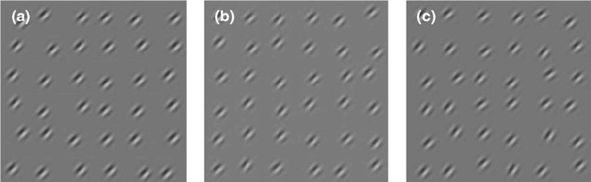
[图11.] [45度方向的Gabor斑块随机模式，周围有一定程度的抖动（噪音），使得(a)在45 + 0度周围有抖动，(b)在45 + 2度周围有抖动，(c)在45 + 4度周围有抖动。解释见正文（参见Morgan, Chubb等人2008；图改编自Ross和Burr 2008）。]
那样），而是我们根据图像内容的统计描述构建或想象的事物”(2008: 363)。
本章是对第一部分提出的预测误差机制的一个测试案例。在那里，我们依靠计算神经科学的发展构建了一个雄心勃勃的大脑功能解释，以感知推理为中心，并完全涵盖行动。
这一框架的核心特性被用来重新构架关于认知科学中一个特定基本问题的大部分讨论，即绑定问题。这是一个推测性的解释，需要经验和理论研究来全面证实。它确实表明预测误差解释至少在原则上适用于这一特定的棘手问题。但在我看来，我们也通过预测误差最小化的棱镜获得了对绑定现象更深层理解的前景。
我们可以将绑定与一般的感知推理统一起来，我们可以使用感知层次来理解绑定与共同原因推理的其他例子有何不同，我们可以使用期望精度来解释为什么绑定看起来如此整洁、为什么会失效，以及注意力如何融入整个故事。我们最终提出了绑定本质上是一种基于统计的内在幻想，由大脑对世界的生成模型塑造的观点。
本章的另一个目标是看到预测误差解释的实际应用，并通过考虑不同类型的案例来了解它，如绑定的典型案例以及更模糊的、跨模态绑定和竞争中感知分组的错觉案例。
在下一章中，预测误差最小化将被应用于关于认知不可渗透性的辩论。
[第105页]。[“相反，当看到的和感觉到的触摸…”] 在敲击不同步时，橡胶手错觉中可能发生其他错觉效应，但在不同步触摸下，错觉通常不太令人信服。在我们的实验室中，我们发现一些参与者可能对麻木的橡胶肢体或其他更神秘的体验有奇怪的感觉。我在第11章进一步讨论这些问题。
[第106页]。[“注意，当体验错觉时…”] 实验上，橡胶手错觉中的本体感觉变化通过漂移测量进行评估，参与者指出其真实手的感觉位置。当他们体验错觉时，位置趋向于向橡胶手漂移。然而，错觉和漂移可能分离，支持这些与不同感知推理相关的观点，参见(Rohde, Di Luca et al. 2011)。
[第109页]。[“这是一个引人注目的效应…”] 在这个关于双目竞争的贝叶斯解释的讨论中，我借鉴了我们早期工作中的一些观点(Hohwy, Roepstorff et al. 2008)。特别是我诉诸一般先验的概念（有时非正式地标记为”超先验”），比如两个物体预期不会有时空重叠，以及融合的”面孔-房屋”具有低先验；另一个有助于解释竞争的超先验是世界变化（或先验递减）的持续期望。这就是合理性担忧出现的地方，正如第4章末尾讨论的；另见Clark’s (2013)，其中对此类一般先验的使用受到批评：这些先验似乎不仅是临时的，而且是错误的。我在正文中通过诉诸不同感知现象的类比来回答临时性指控。但我也不认为所建议的先验是错误的信念。当然，我们可以看到一个具有两个时空重合的物体——
属性，比如红色的球；我们也可以看到面孔的透明图像叠加在房屋图像上。但这只有在有线索暗示那里不存在两个不透明、独立物体时才会发生。众所周知，当对比度下降时，竞争开始停止，允许以叠加的方式进行解释；同样，当图像的局部和全局元素共同允许以一个物体和共存属性的方式进行解释时（例如，右眼中的眼睛和嘴巴，左眼中的鼻子），竞争停止，融合接管。但对于具有强烈局部和全局重叠元素的全对比度图像，有强烈的线索表明这里有两个不同的物体，对它们来说，这个先验似乎合理地成立。同样，虽然在正常观看条件下我们确实可以看到物体长时间持续存在，但这种对我们期望事物会改变的先验的反对忽略了一个事实：当主动探索和凝视被限制时，感知实际上会快速衰减，这在Troxler衰减和稳定视网膜图像中可以看到。正是在这种静态推理的条件下，先验似乎成立。这在竞争条件下是有道理的，在那里也可以预期主动推理会被限制，因为它需要眼睛彼此独立移动（我在第10章会回到这个想法）。如果允许主动探索，例如以注意固定的形式，那么优势期可以显著延长。因此，这个先验在被正确理解时也似乎是合理的。一般来说，先验是否成立是一个实证问题，所以我们关于这些先验存在的假设最好通过实验来检验。注意，作为比较，还有其他我们通过实验发现和探索的先验例子，我们可以通过实验了解它们的应用条件（例如，光线来自上方的一般期望，或者事物移动缓慢而不是快速，在下一章中简要讨论。（感谢Colin Klein对这些问题的讨论）。
如果感知依赖于先验信念，那么这是否意味着我们感知到我们期望感知到的东西？我们的感知体验是我们预测的产物吗？如果是这样，我们的感知在多大程度上可以基于我们的预测而不是世界中的事态？
这些显然是预测误差最小化框架的重要问题。该框架说感知体验依赖于感觉输入的自上而下预测，所以它似乎暗示如果预测改变，那么感知推理也会改变，即使输入保持不变。但同样明显的是，最终的故事不可能是简单的。不是任何预测都能够决定感知，也没有预测能够完全决定它。这是因为感知推理由预测误差指导，使得预测误差塑造了用于生成预测的假设，并且因为感知内容由最能抑制预测误差的假设决定。因此，随机选择的假设几乎没有机会决定感知到什么。此外，有强有力的独立理由怀疑在某些方面感知实际上对高层次期望是不可渗透的——信念通常被阻止决定感知。
因此我们应该期望解决这些问题不会那么直接。这些问题的重要性，以及回答它们的困难，早就被Helmholtz注意到了，他自然地将这些问题与哲学史上经验主义和先天论之间的关键辩论联系起来：“[我们应该]承认经验、训练和习惯对我们感知的广泛影响。可能无法完全和充分地界定这种影响到底有多大”（Helmholtz 1867: 431）。
这些问题在哲学中不断重现，至今仍伴随着我们。它们是科学哲学和认识论的核心：观察是理论中性的，还是理论负载的？如果是后者，科学在什么意义上可以是客观的努力，我们如何才能真正了解世界的本来面目？
神经科学、心理物理学和认知科学应该能够为这场辩论提供启示，因为它们关注感知的潜在机制。世界118
确实已经有了大量的理论和实证研究，通常围绕感知是否具有认知可渗透性或不可渗透性这一问题。然而，Helmholtz的预言已被证明是正确的，因为目前没有明确的解决方案，对于科学地回答这些问题需要什么条件，存在很多困惑。因此，对这些问题的实验研究通常可以用多种方式解释。
本章探讨了预测误差最小化框架对先验信念在多大程度上决定感知这一问题的看法。该框架为自上而下的期望和自下而上的预测误差都有明确的角色，这让它能够在这些问题中规划出合理的路线；此外，这两个看似对立的过程相互作用的方式让我们看到为什么这些问题如此难以回答。基于这个框架，有一种方式我们的期望以有趣的方式调节我们的感知。然而，这主要发生在不确定性增加的条件下，以及在某些方面比标准定义更包容的认知可渗透性定义下。
我们所相信的东西在某种程度上决定我们所感知的吗？如果你回答是，那么你相信认知渗透性(cognitive penetrability)；如果你回答否，那么你相信认知不可渗透性(cognitive impenetrability)。这是认知渗透性问题的简化版本。这个问题在Fodor (1983)和Churchland (1979)之间的辩论中，以及在围绕Pylyshyn对这些主题的发展(1999)的讨论中获得了显著地位。(Hohwy 2009从预测误差的角度简要探讨了这个问题；关于最近的讨论，见Macpherson 2012; Stokes 2013)。
渗透性可能有几种含义，这些并不是我在这里想要关注的辩论的核心。作为一个简单例子，考虑这样一种情况：两个身体状况相似的个体都面对一颗红色草莓。人R期望草莓是红色的，而人B由于某种原因期望它们是蓝色的。问题是这些不同的期望是否会对他们各自的感知过程产生影响；特别是，B的蓝色草莓期望是否有可能开始影响来自草莓的感觉输入的处理方式，也许使其开始显得有些蓝色？在本节中，我将讨论四种可能的情况，讨论它们的有趣方面，但最终将它们搁置一边；在此基础上，第五种情况作为我们的目标情况出现，我将在下一节中讨论。
这里有一种大多数人都会同意不是认知渗透性的情况。人B期望草莓是蓝色的，并将其感知为
蓝色，但这仅仅是因为肿瘤以某种方式导致有这种期望的人产生那种感知。这种情况当然是哲学家的思想实验，但重点很重要：即使期望和感知之间存在因果关系，但对于我们的目的来说，这是一种无趣的关系。需要的是一种连贯或有意义的关系，使得期望的内容和被渗透感知的内容之间存在某种合理的关系（关于讨论，见Pylyshyn 1999）。不过，请注意，这仍然允许许多不同类型的情况。例如，如果我的精神病导致我相信自己被困在颜色倒置的世界中，这导致我将草莓感知为蓝色，我们可能会接受这作为渗透的一种情况。
接下来考虑R和B仅仅对情况做出不同判断的情况。他们都有红色草莓的意识体验，但之后B做出概念判断认为草莓是蓝色的，而R在被问及此事时确认它是红色的。大多数人会同意这样的情况确实发生，尽管在像草莓这样戏剧性的情况下可能很少见。附近有一些有趣的问题，比如在这种情况下可以涉及多少自我欺骗。例如，我强烈期望我最喜欢的马获得第一名，并判断情况就是如此，即使旁边的赌徒也看了比赛并得出了不同的判断——我对自己诚实吗？但是，至少从表面上看，这种情况使感知体验本身不受影响，所以这不是我们在这里感兴趣的情况类型。
作为第三种情况，考虑B由于她的期望将草莓移到不同的光照条件下，这有利于将草莓看作蓝色，因此将其看作蓝色。显然，这不是一种有趣的情况，因为现在R和B的感官输入本身就不同了。总的来说，我们不应该将输入发生变化从而感知体验也随之变化的情况算作认知渗透性。这将排除很多情况，因为不需要太多就能以某种方式改变感觉输入。例如，如果我因为期望某物是某种方式而更仔细地关注它，那么我可能既改变感觉输入又改变感知体验。
注意，如果我们严格遵守这一点作为认知渗透性的条件，那么预测误差最小化框架几乎肯定排除任何真正的渗透类型。感知推理与主动推理协同工作，以至于内部模型通常基于感知者的运动生成预测，包括眼部运动、头部运动和身体在环境中的运动。很难找到任何感知推理完全不受运动影响的情况，因此很难找到感觉输入没有变化的情况。更是如此，因为我们应该期望不同的感知推理嵌入在不同的主动推理轨迹和不同的预测误差景观中。
在这个阶段，我们可以简单地得出结论，预测误差最小化框架几乎肯定排除任何类型的认知渗透性。然而，这将过早地终止讨论。原因是，正如我在本章一开始就指出的，似乎该框架必须诱发某种渗透性。因此，最好对辩论中的这个特殊条件采取更宽松的立场。也就是说，我们应该接受有趣的渗透性情况在原则上的可能性，即使在我们比较的情况中感觉输入存在某种程度的差异。换句话说，我们应该接受这样的可能性：即使这种调节也导致感知者通过不同方式改变输入来寻求确认这些预测，预测也可以调节感知体验。因此，给定的感觉输入变化是否排除或包含一个情况作为感知体验的有趣变化，更多的是判断问题而不是原则问题。这就是我们从现在开始进行讨论的方式。
作为第四种情况，考虑期望在低级感知推断中的作用。一个很好的例子是来自上方的光线期望，它在我们看到物体是凹面还是凸面时发挥作用。如果系统假设光线大致来自上方，那么阴影会落在突出物体的下方和凹进物体的上方内侧，见图12。
即使是强烈反对广泛认知渗透性概念的人（如Fodor）也倾向于允许在感知层次的低级水平内进行感知的自上而下调节。对于这些评论者来说，讨论的焦点是高级信念是否以及在多大程度上能够渗透这种低级过程并在那里改变感知推断。在来自上方光线先验的例子中，合理的做法是将
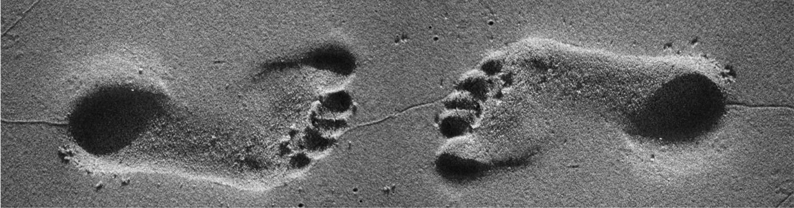
[图12.] [来自上方光线先验的说明。左右脚印是相同的图像，但由于来自上方光线先验而被感知得不同；]（改编自Morgenstern, Murray et al. 2011）；照片由Manuel Cazzaniga提供[(][fl][ickr.com/ezioman).]
这种先验分配给这样的低级感觉过程。这意味着正如该例子所描述的，它实际上并不是认知渗透性的有趣案例。
认知不可渗透性的最强论证来自高级信念显著无法改变感知推断的情况，即使在那些推断被感知者已知为错觉的情况下也是如此。我们稍后将详细讨论这些情况。现在，我们需要搁置低级渗透的情况，这些不是争论焦点的有趣案例。大多数人也相信低级渗透并不意味着观察在任何强烈意义上是理论负载的或主观的。可以合理地假设我们都基本共享我们的低级期望，这些期望被认为是从现实世界的规律性（如光线主要来自上方）中提取的，因此促进而非阻碍客观推断。有问题的情况反而是更主观持有的高级信念渗透下去，这些信念更容易因一时兴起而改变，并且给感知体验加载理论内容。
这实际上为prediction error minimization框架提出了一个很好的挑战。可渗透性反对者的观察是，即使在低级处理内存在一种自上而下的渗透性，但这些低级过程对高级信念似乎存在不可渗透性。不清楚为什么在容纳prediction error minimization的感知层次内，高级和低级处理之间应该存在这样的不可渗透性。
这里需要考虑一个相关的区别，即认知渗透性的时间框架。认知渗透性最戏剧性的情况是共时性情况，其中当前的感知体验直接依赖于给定的高级信念。我现在看到的是因为我当前的高级信念。不那么戏剧性的情况是更历时性的情况，其中较长时间框架内的感知体验被信念塑造，而这些信念本身以动态方式变化（讨论见McCauley and Henrich 2006）。例如，如果你被移到一个光线主要来自下方的环境中，那么随着时间的推移，你会获得光线来自下方的信念，你对凸面和凹面的感知也会相应改变。但这些变化是协同发生的，因为整个感知层次的参数都会响应prediction error处理而重置。历时性情况不那么明显是认知渗透性的有趣情况，因为它看起来不像是高级信念向下渗透并改变感知体验。当然，附近有一个有趣的问题，即是否存在一些由于进入新环境而无法改变的低级期望。
在接下来的内容中，我将主要关注更多的共时性情况。我将对历时性情况的讨论限制在以下观察：从prediction error minimization的角度来看，我们应该期待历时性调整低级、一般期望（如来自上方光线先验）的某种可能性。同时，我们应该期待这种调整的限制，至少对于被置于根本性新环境中的个体。这是因为我们根据一组基本期望定义表型，因此不应该期待在该描述水平上有大量可塑性，除非可能在进化时间尺度上。
到目前为止，我们已经考虑了认知渗透性的四种候选类型情况，发现所有四种都有缺陷。所有这些都让我们来到第五种情况，它最终让我们定义了一种相关的、有趣的渗透性。在这里，两个人R和B在关于草莓颜色的相对高级信念上有所不同，通过适当的语义、自上而下的路径，这些信念影响了他们对面前草莓的当前感知体验。特别是，即使B面对的是红色草莓，她也体验它为蓝色。她不是体验到红色草莓然后判断它为蓝色；她也不是以任何戏剧性的方式改变环境使草莓被体验为蓝色而非红色。
第五种情况是我们主要关心的：这是你多少带有主观性的先验信念直接改变你对世界的感知体验的情况。正如我在开头提到的，预测误差最小化框架在如何处理这类情况上似乎举棋不定。一方面，有这样一个论证：
感知推理总是依赖于对感觉输入的自上而下预测。
在理论上或解剖学上，没有边界阻止自上而下的投射从感知层级的高层传递到低层。
当感觉输入的影响被从高层到低层处理的自上而下输入改变时，就会发生认知渗透性。
因此，应该期待认知渗透性的发生。
这正是认知渗透性的反对者认为非常罕见或不可能的情况。另一方面，还有这样一个论证：
因此，如果驱动感知的期望存在差异，那么预测误差必须存在差异，也就是说，自下而上的输入必须存在差异。
认知渗透需要不同的期望和相似的自下而上输入。
因此，不可能存在认知渗透。
我在上面声称第二个论证可能过于限制性。特别是前提3应该放宽，使得认知渗透性原则上可以在信念存在差异且感觉输入存在一些差异时发生。然后需要根据具体情况判断感觉输入的差异是否具有排除认知渗透的性质。
然而，还有第二种逃脱这个论证的方法，它质疑前提2。这个前提相当难以置信地将自下而上的感觉输入等同于预测误差，忽略了不确定性和噪声的作用。在相对嘈杂和不确定的条件下，感知输入可能无法充分决定感知推理，并产生这样的情况：期望使感知产生差异而无需系统性地抑制预测误差。我将在下面进一步探讨这个想法。
现在，从认知渗透性的考虑中，预测误差最小化框架面临的一系列清晰挑战开始显现。我们需要找到一种指定框架的方法，使我们能够解释为什么认知渗透是可能的，甚至是高度期待的，但却经常受到限制，使其不会过度普遍地发生。重要的是，这种规范需要尊重这样的观点：预测误差最小化机制的工作方式使得找到期望不同而输入保持相同的情况并非易事。
幸运的是，有一种简洁的方式来完成这个多方面的任务。这集中于前面提到的观点：在不确定性日益增加的条件下，自上而下调节有更大的空间。
回想一下，从第3章的结尾，在系统已经学会存在高度不确定性的情况下，预测误差单元的突触增益会降低。也就是说，当系统开始期待来自世界的信号不精确，因此不是感知和主动推理的有效监督信号时。也许有时我们可以承受暂停推理并可以说是默认接受不确定性。但推理通常仍然必须参与。在这种情况下，感知层级的更高层被赋予更大的权重：你无法信任来自世界的信号，但必须得出结论，所以你依赖于你的先验知识。考虑到必须做某事的要求，这是理性的做法——更糟糕的选择是仅仅猜测。
这提供了一类原则性的情况，我们应该期待认知渗透性的有趣案例出现。当不确定性很高时，我们应该期待更高层次的先验信念决定意识体验的能力增强。我认为这在经常被用作认知渗透性例子的情况类型中得到证实：这些情况通常涉及嘈杂的或其他不期而至的感觉输入，或尚未被适当学习的感觉输入，或幻觉，其中大多数基于本质上模糊的刺激。在本章的最后，我将通过讨论许多典型案例来证实这一声明。然而，首先的任务是解释这个建议如何能够为认知不可渗透性的案例留出空间，即使在似乎存在某种程度不确定性的情况下。
建议是认知渗透性的有趣案例往往在不确定性增加的情况下发生。然而，这并不能更容易地为似乎支持不可渗透性的案例留出空间。事实上，由于感知推理中总是存在一些不确定性，似乎总是存在某种程度的认知渗透性，即使它只是非常轻微的。那么，什么会导致不可渗透性发生呢？
在这里我们可以使用一个处于辩论中心的例子，即Müller-Lyer错觉，图13。两条垂直线实际上长度相同，但其中一条被感知为比另一条长。即使我们有强烈的先验信念认为它们长度相等，我们仍然感知一条比另一条长。所以这里的意识体验似乎是不可渗透的：更高层次的信念未能调节感知。预测误差最小化对此能说什么？
对于这类案例的第一个观察是，我们之前提到过，在这种错觉中可能存在认知渗透性(cognitive penetrability)，发生在相对低级的感觉处理过程中。关于这种错觉有许多不同的解释，但最流行的一种——不适当的大小恒常性解释——将其视为关于深度线索的先验信念决定意识感知的结果。错觉中右侧垂直线上向外指向的翅膀向视觉系统暗示它比左侧线条更接近我们，因此应该被感知为比左侧线条稍大一些，而左侧线条的向内指向翅膀使其看起来更远。见图14的示例。
对这类解释并没有普遍的共识，但它有一定的支持度（参见Gregory 1998; McCauley and Henrich 2006）。这种解释将错觉转变为低级认知渗透性的案例，其中相关的先验信念占据了早期视觉系统内部层级的水平。
然而，深度解释本身并不能回答我们开始时提出的问题，即为什么更高级的关于等长度的先验信念不能渗透并创造出对长度的真实体验？然而，这是预测误差最小化解释可以处理的问题。
在Müller-Lyer错觉中存在模糊输入：线条要么是相同长度，要么不是。翅膀提供的上下文触发了相当低级的先验信念，导致推断它们长度不同。
而不是得出它们长度相同的竞争性推断。这意味着由模糊性引起的不确定性在视觉系统中相对早期就得到了处理。错觉的稳健性表明了这一点，这表明人们对其感知推断具有高置信度(precision)。早期解决模糊性的结果是，很少有剩余的预测误差被传递到系统的上层，因此任何更高级的先验信念几乎没有工作要做，包括线条等长的真实信念。
提议认为，当预测误差在相对早期的处理阶段被充分抑制时，就会出现认知不可渗透性(cognitive impenetrability)。即使更高级的信念是生成预测模型的一部分，这些预测产生的预测误差也很少，因为较低层级的活动已经很低。不需要特殊机制或解剖结构来解释不可渗透性，只是碰巧在给定一定程度的不确定性和某些先验信念时，预测误差在很早期就被有效抑制了。这一提议的一个预测是，如果在情况中引入更多噪音，例如通过降低刺激质量或提供暗示增加模糊性的上下文，那么关于等长度的先验高级信念可能被分配更多权重。
我试图说明为什么在Müller-Lyer错觉所揭示的这类案例中认知渗透性会受到阻碍。但我认为有一种更深层和重要的方式来加强这个论述。预测误差最小化论述提供了一种原则性方式来说明并非所有信念都可以在所有情况下认知渗透感知。简而言之，预测误差最小化限制了哪些先验信念可以渗透以及何时渗透。
让我们简要回到上一章讨论的橡胶手错觉。在那里同样引人注目的是，人们在使用其先验信念来破坏错觉方面表现相当差。参与者很清楚这个错觉中发生了一些奇怪的事情（我们通常不对他们保密实验设置）。然而，这种先验信念通常不会渗透下去并让观察者保持在现实中。
在我们实验室中经常看到的是，人们有一种强烈的冲动要移动他们的手、摘下护目镜或以其他方式干预过程。例如，我们测试的一个人不得不用另一只手物理地固定她的手以防止其移动。其他人疯狂地寻找能让他们不体验错觉的线索，比如他们的手和橡胶手所放置表面纹理的细微差异。有些人抱怨实验者的触摸位置稍有偏差，或需要更用力。这表明人们正在努力让他们关于情况的先验真实信念渗透并改变他们的意识体验。但他们做不到，因为实验者阻止了所有这样做的方法。也就是说，我们阻止参与者进行由某些特定先验信念驱动的主动推理(active inference)，而这些信念恰好
是真实的。这意味着人们只能依靠其他能够最好地最小化误差的世界假设——而那恰好是一个更低级的、错误的假设。
Müller-Lyer错觉也是如此。我们可能试图启用关于两条线等长的真实先验信念，但我们失败了，因为情况受到限制。也就是说，我们可能试图基于关于如果信念为真且我们以某种方式干预会对感觉输入产生什么影响的信念来做出预测。但在适当的、受控的实验设置中，这些预测都无法在去语境化的线条图画上获得支撑。如果这些条件放松，那么我们可以通过干预来破坏错觉；见图15的一种可能方法。
我们在这两种错觉中都能看到，即使关于世界的先验真实信念存在，环境也可能阻止其通过主动推理得到确认。因此真实信念从未被测试，并且被拒绝获取本来可以确认它的感觉预测误差。这阻止了它决定意识体验，从而提供了认知不可渗透性的案例。重要的是，这种不可渗透性与层级中稍低层次的其他信念的认知可渗透性共存，这些信念能够参与预测误差。
这个想法可以推广。对于感知层级中的任何高层状态要认知渗透，或者如我更愿意说的，解释掉从下方传来的预测误差，它必须能够以正确的时空精细度进行预测。它必须能够与感觉

[图15.] [试图破坏穆勒-莱耶错觉的尝试。我主动测试了它们长度相同的先验信念，从而改变了我的意识体验。]


128 世界
输入产生预测性接触。如果不能，那么它将在概率上处于闲置状态。这是我在其他地方考虑过的想法，在讨论妄想的背景下，患者会坚持诸如”恶魔控制着我的动作”、“我的医生读懂了我的想法”、“除非我带着紫色枕头，否则人们会进入我的身体”、“我闻起来像粪便”等信念(Hohwy and Rosenberg 2005; Hohwy 2009)。当前的想法可以用这些案例来说明：一些患者意识到他们的信念在某种程度上非常bizarre(怪异)，他们实际上可能患有精神疾病。但他们无法让这种相当粗糙的(不变的)关于精神疾病的真实先验信念与被认为引起这些错觉的细粒度(可变的)预测误差建立适当联系。问题在于很难准确弄清楚”我的大脑受损”这种自上而下的信念如何能够解释掉比如我的感觉运动系统中被认为是某些类型妄想形成基础的细微不匹配。(我们将在第7章回到妄想的话题)。
那么一般的教训是，信念修正在整个皮层层级中受制于预测误差最小化。这意味着我们可能会陷入虚假信念，因为它们能够在层级中更高效地解释掉预测误差——它们比竞争的真实信念提供了对实际感觉输入更好的控制。这说明了在认知可渗透性或不可渗透性的争议案例中可能感受到的那种失调：一方面我陷入了虚假甚至bizarre(怪异)的信念，另一方面我有一个相当有根据的信念，即事情不可能是这样的(例如，我知道我被送进了精神病院，或者我知道橡胶手设置在欺骗我)。关键的是，我们通常通过主动推理对世界的干预来解决这种失调。但如果主动推理受到阻碍，那么就找不到解决方案，失调就会持续存在(并在哲学辩论中不断出现)。
然后我们可以在预测误差最小化方案中容纳不可渗透性。关键要素是预测误差可以在感知层级的不同层次上被不同程度地抑制这一想法，以及注意到自上而下的解释掉必须匹配低层次时空精细度的限制，特别是当主动推理寻求提高争议假设的准确性时。
在非常一般的意义上，该建议强调了一个要点，我们将在本书后面多次回到这个要点，即我们的心理状态以及我们如何表征世界和自己深深受制于我们在给定情况下最小化预测误差的能力。很容易产生这种能力受到限制的情况(用橡胶手错觉、穆勒-莱耶错觉，也许还有妄想来说明)，然后我们就会体验到更多地根植于我们某些而非其他先验信念的世界体验。
预测就是看见吗？ [129]
我所提倡的认知可渗透性观点预测，当感知情况相当充满不确定性时，我们会发现有趣的可渗透性案例：当我们仍在学习时，或者当存在噪音或模糊性时。由于这种模糊性，感知推理中往往会有低置信度，所以该建议也预测在这些情况下将有内省不确定性和关于实际体验内容的替代解释的余地。以下案例说明了这一点。它们也说明了认知可渗透性的有趣案例可能出现的非常广泛的情况范围。在每个案例中，我将尝试说明为什么我倾向于认为它们是认知可渗透性的有趣案例。
尺度错误。1.5到2.5岁的儿童会表现出令人困惑的尺度错误。在Judy DeLoache（DeLoache, Uttal等人，2004）的一项有趣研究中，这个年龄段的儿童首先有机会玩真实尺寸的玩具，比如可以坐的塑料椅子、可以滑下的滑梯，或者可以坐进去并开着转圈的汽车（“Little Tikes Cozy Coupe”）。随后，他们有机会玩同一玩具的微型模型。现在他们表现出尺度错误：他们有时表现得好像没有注意到尺度的变化。在Cozy Coupe的案例中，他们试图爬进微型汽车，并会持续这种行为一段时间，对他们的好玩具不再配合感到有些困惑。
很难确切说明是什么导致了这些错误的发生。DeLoache和同事合理地将其解释为大脑中感知和行动路径之间的分离。我在这里提到这项研究，是因为从某种程度上，玩真实尺寸模型时获得的先前学习经验似乎持续指导着他们对世界的感知，尽管物体的尺度发生了显著变化。
很容易说这揭示了认知可穿透性：他们体验到汽车比实际更大，因为他们持有它很大的信念。然而，正如预期的那样，有趣的案例很难解释，很难说随着信念的改变，意识体验可能发生什么变化。也许在这种情况下，儿童体验到一辆真实尺寸的汽车，或者体验到自己具有相同的尺寸。然而，这些似乎是体验的非常剧烈的变化。或者也许他们只是没有注意到他们体验中从真实尺寸汽车到微型汽车的变化。那么故事就会是他们相信微型汽车是真实尺寸的——这根本不会是穿透性的案例。但不知为何，很难相信另一个仅仅假装试图将脚伸进微型汽车的孩子，与一个犯尺度错误并真的相信她能进入汽车的孩子会以完全相同的方式体验世界。尺度错误行为似乎太戏剧化了，不能仅仅归结为假装与信念的区别。似乎没有130世界
简单的方法来确定这是否是认知可穿透性的案例或其他什么。
双稳态图形。在认知可穿透性的文献中，鸭兔图经常出现，还有其他双稳态图形，如年轻/年老女人图和鲸鱼/袋鼠图，见图16（Churchland 1988; Fodor 1988）。这并不奇怪，因为双稳态图形本身就是模糊的，所以是我们应该期待认知可穿透性的情况。如果我相信它是兔子，那么我看到它是兔子；如果我相信它是鸭子，那么我看到它是鸭子。然而，这里产生的担忧是，不同的眼动和注意状态带来不同的输入序列，确保这不是原始定义下的可穿透性。正如Fodor反对Churchland将鸭兔图作为穿透性例子的用法：
人们不能通过改变假设来让鸭兔图（或内克尔立方体）翻转；人们通过（例如）改变注视点来做到这一点。相信它是鸭子并不能帮助你看到它是鸭子；想要看到它是鸭子也没有太大帮助。但知道注视哪里可以有帮助。注视那里，然后翻转是自动的。（Fodor 1988）
我一直在论证一个更宽松的定义，根据这个定义，我们可能会将这些算作认知可穿透性的案例，仅仅因为在这些类型的案例中，我们应该期待一个新假设完全不伴随注视差异的案例非常少。
然而，更一般地，Fodor论证导致感知翻转的不是改变的假设而是改变的注视；我通过主动推理的概念论证的是，改变的注视在正常情况下不是一个独立于人的假设的因果因子。当然，我们可能会站在Fodor一边，因为我们可能判断总的来说鸭兔式案例可能是
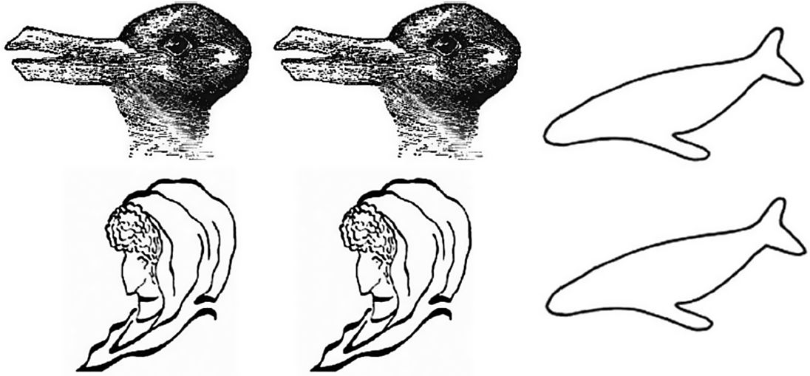
图16. 成对的双稳态图形。每对图形似乎同时切换吗？进一步说明见正文（图片来源Jensen and Mathewson 2011；经伦敦Pion Ltd许可转载）。
预测是看见吗？131
认知可穿透性相对不那么有趣的例子，这取决于每次注视转移时输入有多少变化。
完全撇开这个讨论不谈，我们可以做一些事情来诱导这些类型的错觉产生某种程度有趣的穿透性，或者在我看来是这样。注意每对图形似乎同时切换：要么你看到两只兔子要么两只鸭子，其他两对也是如此。
如果存在认知可穿透性，也许我们可以通过改变我们对情况的信念来改变这种同时翻转的模式。我将通过给你一些额外信息来调节你的信念：鸭子即将吃掉兔子；袋鼠即将跳到鲸鱼身上；年轻女士在看着老妇人。发生了什么？一些读者应该能够，也许通过一些努力，停止同时交替，而是同时看到两个图形（Jensen and Mathewson 2011）。就我自己而言，我有短暂的时刻能够同时看到兔子和饥饿的鸭子。
再次，在这里很难依赖内省，正如我们对认知渗透性的有趣假定案例所预期的那样。从预测编码的角度来看，我倾向于将其归类为认知渗透性。就好像新的因果信息让知觉系统在短时间内能够对场景产生新的假设。
我发现这个案例很有趣，还因为让我们中的一些人能够同时看到不同图形的信息明显是因果信息（例如，鸭子正在吃兔子）。因此，新信息在因果背景下利用感觉输入，使得更复杂的高级模型参数能够应用于初始的低级识别任务。这与知觉层级中体现的因果规律性概念相符。
我们之前已经涉及过感觉整合。橡胶手错觉中就有感觉整合的元素，当视觉输入开始将触觉输入的位置拖向自己时，而本体感受估计又开始被拖向视觉-触觉估计。一个被很好描述的整合案例是腹语术错觉。这当然从真实的腹语术中广为人知，玩偶嘴巴的视觉输入似乎捕获了来自腹语术者本人的听觉输入。当我们看电视时也会发生类似现象，我们将声音的来源定位在能看到说话头部移动嘴巴的地方，而不是扬声器的不同位置。
在实验室中探索的一个更无聊的版本是，一束闪光和一个声音在空间位置上有偏移，但似乎来自同一位置。这种效应遵循贝叶斯定理，两个输入的整合权衡每个输入的精确度，总是导致更精确的整合位置。通常声音更多地被拖向光线而不是相反，因为视觉在空间维度上比听觉估计更精确。如果视觉刺激被降级，那么位置就更多地被拖向听觉估计（见本章末尾的注释，以及Alais and Burr 2004；这种感觉整合的贝叶斯方法可以在预测误差框架内正式容纳（Friston, Daunizeau et al. 2010））；（见图17）。
这里似乎存在一定程度的认知不可渗透性。即使我们怀有玩偶不会说话的真实信念，我们仍然体验到声音来自它。似乎先验信念不能胜过感觉整合。
尽管在这种情况下存在不可渗透性，但在我看来，在重要方面也存在一定程度的渗透性。这是因为这些错觉，例如每次看电视时你体验到的错觉，利用了我们感觉估计中固有的不确定性。这种不确定性使得存在共定位的自上而下假设能够在推理中发挥作用。如果我们的听觉和视觉估计都非常精确，那么我们就不会体验到错觉。这是因为我们无法被说服两个输入的原因在世界中是共定位的——那样的话看电视就会令人沮丧地分离。同样，如果两个刺激相距很远，我们不会体验到错觉。这意味着我们依赖于关于感觉输入精确度的先验期望和关于给定时间同步性下共定位可能性的先验学习之间的相互作用（其中同步性是指闪光和声音在时间上共同出现；或者声音和嘴部运动是同步的）。如果这些先验信念被触发，那么意识体验就是空间中的共定位，其中共定位是由无意识推理中精确度的权重确定的。如果先验信念没有被触发，那么意识体验就是不同定位的感觉属性，例如某物在那里发出声音而某些光在这里闪烁（讨论见Körding, Beierholm et al. 2007）。
共定位估计和不同定位估计产生非常不同的体验，这些体验根据触发哪种信念而变化。我倾向于将此允许为一种认知渗透性。尽管自上而下的信念不在知觉层级的最高层，但它足够高以成为多感觉的，也就是说，它不仅在低级单模态模块中运作。毫无疑问，这也是意识体验的差异：它涉及享受好的腹语术者和坏的腹语术者之间的差异。体验这样的错觉并不是仅仅拥有单独定位的知觉估计，然后简单地判断它们在某处之间是共定位的。
但是，正如预期的那样，要证明认知穿透性(cognitive penetrability)的存在并非如此容易，这是由于感知情况中的不确定性。在我们讨论的多感官整合类型中，我们应该期望人们失去对个体感官估计的获取，而倾向于他们意识到的整合估计。当然，如果这是认知穿透性的一个案例，那么变化应该发生在意识体验本身，使其得到顺畅的整合。但是，人们似乎可以保留关于个体估计的一些信息，就像它们在整合前的状态一样(Hillis, Ernst et al. 2002)。因此，简单地声称整合体验——那些实际上并非来自同一来源的估计——与那些确实来自同一来源的估计的整合体验是相同的，这并不完全直接。例如，在电视上观看说话的头像在声音和视觉共定位的现象学方面，可能与体验真实的人对你说话并不相同。在前一种情况下，个体估计在某些情况下似乎在某种意义上仍然可获得。另一方面，对于感官内整合，似乎无法获取个体的、非整合的估计。例如，在3D视觉中整合的双眼视差没有意识感知。
有趣的是，这有一个发展方面的特点。儿童必须学会整合感官估计，在他们学会之前，他们对个体估计的意识获取比成年人更好。因此，他们在评估个体感官属性方面可以超越成年人(Nardini, Bedford et al. 2010)。代价是他们无法通过整合来减少不确定性：他们无法从感官整合特有的精度的最优贝叶斯加权中受益。这表明关于共定位的先验，它们调节整合，是从世界的统计规律中学习的。这当然与预测误差理论一致，并表明意识体验随着这些先验的学习而改变。
再次，这是否是认知穿透性的一个案例很难确信地回答。在我看来，理由的平衡倾向于认知穿透性。
考虑图18中的噪声图像。那里有什么东西，还是只是噪声？
大多数人在其中一个中看到了什么（一艘船？），而在另一个中看不到太多。然而，当人们被引导想到他们感到失控的情况，或者被引导想到股市失控这样的想法时，他们更倾向于在噪声中看到实际上并不存在的东西(Whitson and Galinsky 2008)。有趣的是，相信超感官知觉(ESP)的人也在噪声中看到更多有意义的模式(Brugger, Regard et al. 1993)。这是认知穿透性吗？大脑的输入是相同的，但意识体验不同，这取决于先验期望。鉴于噪声和不确定的刺激，我们应该预期穿透性。此外，当初始不确定性被增加时，即通过引导（这里，失控暗示不确定性），我们应该期望增加的穿透性。
但是正如我们所期望的，这里也没有简单的答案。担忧在于，事情失控的先验期望与意识感知（例如，在噪声图像中看到房子）之间没有连贯的、有意义的联系。回忆一下，这是真正的穿透性案例的要求(Pylyshyn 1999)。这里可能不满足这个要求。被引导想到失控也许看起来有点像被重击头部，因此开始体验到别的东西。事实上，用经颅磁刺激强制改变大脑活动，这在某些方面等同于被重击头部，可以减少对噪声中模式的感知(Bell, Reddy et al. 2007)。类似地，当刺激仅仅显示给他们的左视野时，人们在噪声中看到更多模式，这同样似乎与适当的认知穿透性问题有些距离(Brugger, Regard et al. 1993)。如果我们想要将失控案例视为认知穿透性的案例，那么我们需要显示经颅磁刺激和左视野案例与失控案例不同。
再次，支持或反对渗透性的论证都不是明确的。从预测错误的角度来看，这种说法可能是这样的。当一个人真的处于失控状态时，他在主动推理中未能最小化预测错误，未能根据反应修正假设——所选择的轨迹造成很多错误，似乎没有更好的轨迹可用。这是一种主动推理中存在比预期更大的不精确性且没有明确修复方法的情况。在这种情况下，让先验信念指导感知推理是合理的：与其被感官引导至失败，不如降低输入的增益(精度)，更多地依赖先验信念。在无约束的情况下，这可能意味着循环通过多个先验信念，直到找到一个具有某种预测能力的信念，无论多么微小。因此，当被启发处于失控状态时，参与者会在噪音中看到更多模式，因为他们合理地让先验信念更多地决定他们所看到的。虽然失控信念的内容与随后感知的内容之间可能没有直接关系(比如在嘈杂图像中看到一只老鼠)，但失控信念与感知过程之间存在有意义的、理性上可接受的关系。因此，我倾向于认为这些情况下存在认知渗透性。
注意力渗透性。我将通过从预测错误最小化的角度探索注意力对意识体验的影响来结束这个有趣认知渗透性潜在案例的列表。这将预示第9章对注意力的更全面处理。回想一下，在传统的认知渗透性定义下，由注意力焦点变化引起的意识体验变化被排除在认知渗透性之外。这是因为人们认为注意力的变化会引起感觉输入本身的变化。然而，在我所倡导的更广泛的渗透性定义下，确实存在一些注意力案例看起来像
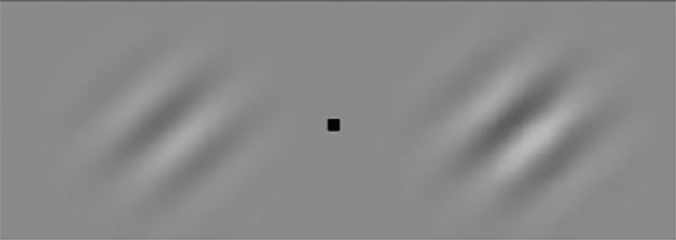
[图19.] [保持][注][视黑点；当黑点左侧较弱的光栅被提示时，注意力被吸引到它上面(即使][注][视仍然在黑点上)，然后] [被提示的光栅将看起来比实际对比度更高，两个] [光栅将看起来具有相同的对比度(改编自Carrasco, Ling et al. 2004)。]
有趣的渗透性例子。其中一个案例来自Marisa Carrasco的实验室，如图19所示(Carrasco, Ling et al. 2004)，在(Block 2010)中也有广泛讨论。
这里的任务是保持注视中央注视点(小黑点)，然后隐蔽地注意注视点任一侧被提示的光栅。效果是被注意的光栅增加了其感知对比度强度。由于显示中没有任何变化，眼球运动保持稳定，很难在这里论证感觉输入本身发生了变化。这与鸭兔错觉的情况不同，后者体验的转换伴随着眼球运动。也似乎没有理由怀疑Carrasco已经识别出意识体验中的差异，因此这不是在不同认知判断下相同意识体验的情况。因此，这是由自上而下的原因(即隐蔽注意力焦点)驱动的意识体验差异。这使它成为认知渗透的案例吗？反对的理由是，像注意力这样的一般执行功能与所讨论光栅体验的具体内容没有连贯的关系。在这种观点下，这里的认知渗透性大约相当于一个人决定闭上眼睛从而改变意识体验。
通过诉诸预测错误最小化，实际上可以论证这里存在认知渗透性。这是因为自上而下的注意机制与体验内容之间存在连贯的、有意义的关系。正如我们稍后将更详细看到的，注意力最好被理解为预测错误最小化中预期精度的优化。这个提案的细节现在不需要关心。关键在于，在像Carrasco这样的案例中驱动注意力的是对高信号强度输入的期望，这种高强度输入具有更多精度。这些期望基于学习的或先天的规律性，将中央高强度提示(例如指向左侧的箭头)与外围高强度输入(如光栅)联系起来。这种学习的规律性然后增加来自被提示区域的感觉输入的增益，导致对更强对比度光栅的意识感知。因此这是一种错觉，因为
预测是看见吗？[137]
光栅实际上并不具有期望的高信号强度。然而，先验期望似乎与意识体验的变化连贯相关：对强信号的期望调节了所体验内容的强度。现在这符合认知渗透性的所有条件，尽管这是一个注意力效应。这也是一个会有增加不确定性的案例，正如预测的那样。隐蔽地注意远离注视点的东西不仅是一种相对不寻常的情况(通常我们会将目光转向我们注意的东西)，精度期望本身也被注意区域中的弱对比度光栅所违背。我并不声称所有注意力效应都提供有趣的认知渗透性案例，但重要的是要注意到有些确实可以合理地说提供了这样的案例。
我们研究了一系列有趣的认知penetrability可能案例。目的是表明当输入相当不确定、嘈杂或模糊时，这些案例往往会发生。我倾向于认为这些案例中的大多数确实是认知penetrability的有趣案例。这些案例的多样性也很突出。它们的范围从最基本的视觉感知到多感官整合，再到事物的感知尺度——甚至包括注意力效应。考虑到我的论证一直是有趣的案例会在不确定性高时发生，而这可能发生在任何类型的环境中，这种案例类型的多样性并不令人惊讶。因此，预测误差最小化的理论似乎为认知penetrability与impenetrability的争议提供了不同的视角。特别是，这是一个能够同时容纳这场辩论双方观点的视角。
我从中得出的主要教训是，信念以先验期望的形式，能够以相当深刻的方式决定感知内容，这在高不确定性的情况下尤其明显——在这些情况下，精确度很低并且会被估计为如此；从而减弱预测误差在层级相应水平上的影响。这并不是说意识体验完全由先验信念决定，而是说意识体验是大脑渴望对当前感官输入做出最佳理解的结果，即使这意味着给先验信念赋予很高的权重。这符合意识体验像是为了抵御感官输入而构建的幻想或虚拟现实的想法。这不同于真正的幻想或虚拟现实的意识体验，我们在心理意象或做梦中享受的那种体验，138 世界
因为这样的体验并不是为了抵御感官输入。但正常感知仍然与它所代表的现实世界相隔一步。
围绕认知penetrability的问题与误表征和现实检验的问题密切相关。我将在接下来的两章中转向这些问题，在此过程中我将再次回到认知penetrability，以完善对penetrability限制的处理，即充分重视坚持认知impenetrability的一方。
第117页：“因此我们应该期待它”…我对Helmholtz的翻译；原文引用是”Dergleichen Thatsachen lassen den ausgedehnten Einfluss erkennen, welchen Erfahrung, Einübung und Gewöhnung auf unsere Wahrnehmungen haben. Wie weit ihr Einfluss aber wirklich geht, dies vollständig und genügend abzugrenzen möchte vor der Hand unmöglich sein”(Helmholtz 1867: 431；另见第435页及其随后关于经验主义和先天论的讨论)。
第119页：“现在考虑R和B的情况”…我表达这个案例时相当谨慎，因为预测误差最小化发生的感知层级可能会使我们的判断复杂化。特别是，在预测误差理论中，概念判断和感知推理并不能清楚地分离，而只是感知层级不同水平上的推理过程(如第3章所讨论的)。这意味着对当前感知内容的概念判断预期会向下渗透，并作为较低水平感知处理的模型参数发挥作用。即使是我在例子中给出的后验判断的案例，也不明确是纯粹概念性的：也许当人B判断草莓是蓝色的时候，她自动生成了蓝色草莓的感知幻想(关于与这个想法一致的计算模型，见Hinton 2007)。
第120页：“即使是强烈反对的人”…光从上方的先验可以通过少量训练进行调节(Adams, Graf et al. 2004; Morgenstern, Murray et al. 2011)。类似的发现已经发表关于其他先验，比如我们对周围运动有些缓慢而不是快速的不太明显的先验期望(Sotiropoulos, Seitz et al. 2011)。因此，即使在一些被接受的低层次penetrability案例中，一般期望中也有依赖经验变化的空间。
第124页：“这给出了一个原则性的类别”…这里的建议是自上而下的调节在高不确定性条件下得到促进。这种建议也出现在关注部分意识条件的研究中，见(Kouider, de Gardelle et al. 2010)。
第129页：“1.5到2.5岁之间的儿童”…关于尺度错误的案例，见所引文章补充材料中的视频，也见Deloache的网站http://www.faculty.virginia.edu/childstudycenter/researchprojects.html。感谢Uta Frith让我注意到尺度错误。
第129页：“很难确切说出”…在尺度错误实验中，儿童首先接触全尺寸玩具。应该注意的是，有许多来自父母关于这种行为自发出现的报告(Ware, Uttal et al. 2010)。尺度错误随着发育迅速下降，但有趣的是成年人也可能通过橡胶手错觉的全身版本而被引导弄错世界的尺度(van der Hoort, Guterstam et al. 2011)。
第131页：“在实验室中一个更无聊的版本”…这里我描述Bayes最优感觉整合。为了理解它是如何工作的，值得说明
整合发生的简单规则。整合将各个估计值相加，按其精度加权：
S ^ ^ ¼ w S ^ X X þ w Y S Y
这里，Ŝ 是整合估计值，wX 和 wY 是权重，ŜX 和 ŜY 是各个估计值。各个权重 w 由精度决定，即各个估计值方差 ó 的倒数。因此，要计算听觉估计 ŜX 的权重 wX，我们需要估计两个估计值的方差（óX 和 óY）：
w 1 =s 2 2 X s Y X 2 1 = ¼ s X þ 1=s Y s 2 X þ s 2 Y 2 ¼
w 1 =s 2 s 2 Y X Y 2 1 = ¼ s X þ 1=s 2 Y s 2 X þ s Y 2 ¼
精度是方差的倒数（也就是说，估计值变异越大，精度越低）。一个估计值的权重由其自身精度与另一个估计值精度的比例决定。例如，ŜX 的权重 wX 会随着分母中 ŜY 的精度（即 1/sY²）增加而减小。这个表达式告诉我们，随着视觉估计精度的提高，听觉估计的权重就会下降。这样整合估计值就会向视觉估计值靠近，反之亦然。需要注意的是，关键在于必须根据预期精度来估计方差或精度，以便以贝叶斯最优的方式对感觉证据进行加权。
感知和行动由一个简单的原则驱动：最小化预测误差。这发生在第一部分描述的感知层次中。尽管核心思想很简单，但这个机制有多种不同的方式来最小化误差。也就是说，预测误差最小化不仅仅是预测P然后等待看P是否发生的问题。不仅存在感知推理和主动推理之间的差异，还有精度和复杂性的考虑，而且一切都可能在层次的不同层面、在不同的因果互动环境和不同的不确定性水平中发生。
本章探讨了我们必须处理预测误差最小化这些各种相互作用方面的多种不同方式，以防止错误感知。这进一步阐述了前两章的主题，其中许多核心案例涉及世界被错误感知的情况，例如错误结合(illusory conjunction)和多感官错觉。
事实证明，有许多需要平衡的因素，以及可以调节的概率”旋钮”，以优化或未能优化对世界的表征。例如，可能存在权衡，允许一定程度的错误感知，以便有效地解释其他地方的感觉输入；也可能存在精确与不精确、感知层次的高层次与低层次之间的权衡，正如我将在本章末尾重点关注的，被动感知推理和主动推理之间需要获得关键的平衡。
因此，感知和错误感知的整体图景是复杂的，正确感知世界并不总是在所有处理层面都尽可能精确和准确的问题。感知主体沿着通向真理的不稳定路线前行，许多因素都可能扭曲我们的感知。
在本章的最后几节中，我考虑了预测误差最小化机制的这种图景如何应用于精神疾病的各个方面，特别是精神分裂症的妄想和自闭症的感知障碍。
不稳定的预测
事实证明，预测误差最小化框架出人意料地能够容纳广泛的感知错误和系统可能出错的方式。有时，相当小但难以解决的错误和故障似乎能够以戏剧性的方式级联，这似乎是处理某些精神障碍的一种简约方式。
总的来说，这加强了预测误差机制不仅仅是感知基础的计算机制这一主张——它深度参与塑造感知的现象学本身。
错觉源于应用某些类型的感知和主动推理，这些推理在大多数情况下本应产生真实的表征。例如，我们常规地将听觉言语与视觉嘴部运动整合在一起就是这样的情况。然而，有时情况会共同作用，使感知推理变成错误感知的问题；例如，当我们看到腹语表演者表演时。错觉似乎寄生于大脑在非错觉情况下所做的、并且做得很好的事情。从这个意义上说，错觉感知代表了拥有相当低层次、自动机制来有效处理嘈杂或模糊类型感觉输入（例如，单模感觉估计中的不确定性，如在与其他输入隔离的情况下定位声音来源）的成本。
这表明在一个人可以受益的自动处理类型与一个人可以承受的错觉规模和类型之间存在权衡。我们应该预期错觉很少见，不至于超过拥有自动和快速工作的低层次感知处理的优势。
情况似乎如此。许多错觉主要出现在控制良好的实验室条件下（例如，体验橡胶手错觉），或者在知觉推理与主动推理没有实质关联的情况下（例如，静坐看电视，或在台上观看腹语术表演）。错觉的特征是它们主要在现实检验形式的主动推理受到抑制时起作用。例如，参与者在橡胶手错觉中不被允许移动他们的真手，或者在Müller-Lyer错觉中不被允许测量线条。这表明在现实中的日常生活中，现实检验较少受到限制，错觉情境会更加短暂和难以捉摸。我们与世界的接触是主动的，如果低置信度的知觉推理对我们很重要，我们有许多方法来评估其准确性。
这符合主动推理的功能作用，主要能够提高对假设的置信度（第4章）。错觉在以下情境中蓬勃发展：142 世界
在这些情境中，如果允许主动推理，它将无法使初始假设更加可靠。
此外，知觉系统可能包含一些恰好使其免受某些类型错觉影响的结构，从而使前述的权衡更加可以承受。我将用关于大小恒常性的推测来说明这一点。考虑Ebbinghaus错觉（见图20），其中两个中心圆盘看起来大小不同，尽管它们实际上大小相同。
人们总是错误地感知左侧中心圆盘比右侧中心圆盘大。这种错觉是由周围圆盘的背景驱动的。第6章中针对Müller-Lyer错觉所建议的大小恒常性解释可能也适用于这种错觉。也就是说，错觉发生是因为较小的周围圆盘给出了中心圆盘比较大的周围圆盘更远的线索。这使得视觉系统将前者表示为比后者更远，并在大小恒常性中对此进行补偿，尽管它们的视网膜大小相同。
自然会假设这种视觉但错觉的知觉指导后续行动，例如如果用可以抓握的木片制作Ebbinghaus错觉的版本，那么人们会错误地估计中心圆盘的大小，通过他们伸手动作的开口幅度来测量。然而，这不是实际发生的情况。运动系统似乎不受错觉影响：人们的伸手动作不直接受到错觉的影响（Aglioti, DeSouza等人，1995；另见Skewes, Roepstorff等人，2011；Plewan, Weidner等人，2012）。
这是一个重要发现，表明用于知觉的视觉与用于行动的视觉是不同的。一个突出的解释是，用于知觉的视觉关注场景处理，整个视觉阵列很重要，因为它可以提供消除歧义的线索。相反，用于行动的视觉
对整个场景的关注要少得多，而是用来提供以对象本身为中心的伸手计算——因此它较少依赖于背景，较少受到错觉效应的影响（Aglioti, DeSouza等人，1995）。
这一发现是腹侧和背侧视觉系统之间非常有影响力的区别的基石之一（Goodale和Milner，1992）。流之间的分离似乎提供了对错觉的偶然免疫，使得即使人们在视觉上体验到错觉，它也不会直接干扰行为。
这与合理的权衡一致，一方面对相当模糊的刺激进行低级的、自动的知觉推理，另一方面体验这些机制往往使我们承受的错觉。知觉系统似乎可以容忍错觉形式的相当大的误感知范围，只要存在诸如快速、自动处理等潜在益处，并且只要错觉从长远来看不会渗透并增加其他知觉和主动推理的预测误差成本。也就是说，许多错觉只产生短暂的和相当局部限制的偏离预测误差最小化，因此可以被控制。
总的来说，这种对错觉存在的方法也延续了我们之前看到的主题，即知觉系统对真实性本身并不感兴趣。相反，它对尽可能平均最小化预测误差的最有效途径感兴趣。从这个角度来看，视觉系统容忍某种程度的错觉似乎是相当合理的。
我们讨论过的许多错觉都依赖于感觉整合。例如，在腹语术中，存在对不同视觉和听觉输入的估计位置的感觉整合。在橡胶手错觉中，存在视觉、触觉和本体感觉估计的整合。整合通常是最优的，因为整合估计（例如，声源和视觉的共定位）按各个估计的相应精度加权，并且本身比任何一个原始估计都更精确，见图21。
因此，随着视觉估计的精度提高，听觉估计的权重会下降（参见第6章的讨论和注释）。这样一来，根据它们各自的精度，对其共定位的整合估计会来回移动。因此，感觉整合是有益处的：对世界的估计更加精确。
此外，这些整合估计应该准确跟踪感觉输入的隐藏原因。在视听整合的情况下，这是两个感觉输入的共同（共定位）原因。在错觉整合的情况下，精度得到保持，但准确性受损。共定位并不在它看起来的地方——不是玩偶而是腹语表演者是视觉和听觉输入的（更深层隐藏的）共同原因。
如果两个感觉估计极其精确，或相距很远，那么就不会尝试感觉整合。这是因为我们依赖于关于何时应该期待共定位原因的学习或天生规律性。正如我在第6章中提到的，当估计足够不同时，共定位的先验期望不会被触发。
现在我们可以看到，正确跟踪隐藏原因在某种程度上依赖于精度加权和精度优化。一方面，知觉层级底层各个感觉估计的精度不应该太差。如果太差，那么共定位的假设会被不当触发。这是因为两个噪声估计的特征是宽泛的感觉分布，更可能被认为如此接近，以至于它们很可能来自同一个共同原因。另一方面，各个估计的精度也不应该太高。如果太高，那么共定位的假设在应该被触发时会无法触发。这是因为两个非常精确的估计的特征是两个狭窄的分布，更可能被认为是不同的；换句话说，对于这种精确的感觉信息，两个来源是更合理的解释。因此，如果知觉层级底层的整体噪声水平被估计为太高或太低，那么层级更高层表示的因果规律性就会被错误感知。过度精确或过度不精确的估计可能掩盖潜在的因果结构。
这给我们带来了知觉层级中在试图正确理解世界时的权衡，即底层精度和高层精度之间的权衡；换句话说，层级中不同层级精度之间微妙但关键的平衡。
在某些情况下，假设底层不精确可能是有益的；但相反，有时在底层有不精确本身并不有益，因为它会让我们错过重要的区别。总体教训是某种反直觉的：知觉系统不应该自动在所有层级追求最大精度。在分层预测误差最小化机制中，在一个层级购买精度可能以其他层级表示的不精确和不准确为代价。
底层精度和高层精度之间的基本权衡连接到第3章引入的优化期望精度的基本要求。这种优化对于找到信任感觉输入因而继续采样世界，与不信任感觉输入而更多依赖先验信念之间的平衡至关重要。
我们这里关注的预测误差最小化机制的部分是误差单元根据其期望精度门控预测误差的方式。期望精确的预测误差不会被严重门控——它被允许驱动层级更高层假设的修正。效果是对世界的采样可以继续不受阻碍，因为信号被信任。期望不精确的预测误差被更多门控；它被抑制，效果是对世界的采样减少，而先验期望被允许更多地决定知觉推理的结果。
这是推断世界因果结构的理性方法。当信号良好时，我们继续采样，并用它来驱动推理。当信号不好时，我们采样更少，而是依赖先验期望来得出关于世界的结论。
这种机制捕捉到认识论上本质的东西，这与我们在第6章关于认知可渗透性的讨论相关。我们对世界的知识在多大程度上是由感官驱动还是由我们的先入之见驱动？没有任何先入之见来调动感觉输入，充其量是过度特殊、支离破碎的嘈杂声，最糟糕的是完全无序、混乱的流形。但当先入之见被赋予太多权重时（或被喂入太少感觉输入），知觉推理就与世界脱节，我们开始看到不真实的联系和关系。在它们之间找到正确平衡对知觉质量至关重要。换句话说，最小化预测误差依赖于在信任感觉输入和依赖先验之间找到正确平衡。
至关重要的是，我们正在研究的机制依赖于我们对精度的预期，从而依赖于我们学习精度规律的能力。这将反映在当平衡出现偏差时对感知产生的影响上。假设在层级的每个层面都存在一个最佳的整体预期精度水平：这是当世界中的精度规律被精确准确地学习时的情况。偏离这个最优点的个体将以不同的方式错误感知世界。
预期精度过高的个体往往会更加挑剔地采样世界，他们会在其他人允许一定不精确度的情况下努力追求更精确的低层次感觉估计，他们会牺牲对某些高层次因果结构的表征（即不会被高层次的先验信念(prior belief)所指导）。简而言之，相比那些预期精度在整体预测误差最小化方案中更优的个体，这些个体会更加成为感觉的奴隶（低层次感觉属性的奴隶）。这种系统的倾向将是最小化短期规律的预测误差，而在长期规律控制短期规律变化时表现出较差的最小化效果。
与此形成对比的是，相对于最优水平预期过多不精确性的个体——那些预期世界比实际更嘈杂和不确定的人。他们倾向于对世界采样不足，较少依赖感觉，更容易依赖先验信念来得出关于世界的估计。简而言之，相比预期精度更优的人，这些个体更容易陷入内心世界。感知推理将更偏向于高层次因果结构，但由于这种高层次表征缺乏感觉采样的良好监督，它在最小化整体预测误差方面可能表现较差——如果这种预测误差能够被适当引出的话。
因此，无法优化预期精度的个体面临着相当深刻和普遍的认识论缺陷的风险。这是一个有趣且经常被忽视的错误感知视角。当我们将精度优化本身视为对世界中（精度）规律的感知推理问题时，似乎也开始出现一个无限回归的威胁（如第3章所提到的）：为了首先进行感知推理，我们需要评估精度，但如果评估精度依赖于更高层次的感知推理，那么我们就应该评估精度的精度（你有多确信这是在这里期望的正确精度？）；但如果这是必需的，那么感知推理就依赖于一个永无止境的精度优化过程。显然，我们不会也不能开始这种无限回归。相反，我们必须假设我们会缩短这个过程——也许在一两个统计推理层次后，就像科学中的统计推理方式一样。然而，缩短推理精度的过程应该会导致这样的后果：如果预期精度实际上一开始就没有被优化，那么这将很难纠正。
岌岌可危的预测[147]
因此，我们应该预期在预期精度领域的推理和学习困难相对顽固：这种估计难以学习，当没有正确学习时也难以修正。此外，我们应该预期这种精度优化困难在不确定性和模糊性高的情境中会更加突出。这是因为这些情境最需要获得对自己估计精度的访问，也是最不应该仅仅依赖简单均值的情况。在本章后面，这个问题与精神疾病的某些方面相关。
现在我想指出的是，我们都需要获得这种正确的平衡。我们经常处于不确定性增加但必须做出感知决策的情况中。我们在这些情况下如何反应取决于我们如何处理不确定性以及我们认为什么是不断增加的不确定性水平。当我们搞错这个平衡时就会出现错误感知：当世界的整体模型偏向低层次感觉属性而牺牲高层次规律时，或者反之，它开始承载关于真实世界的更少信息。
从预测误差最小化方法中产生的有趣观点是，这种错误感知可能不是由证据的错误处理引起的，而是由关于证据的证据的错误处理引起的（关于这一领域的两个相关研究，见Yu and Dayan 2005; de Gardelle and Summerfield 2011）。
有时我们开始怀疑感知推理出现了偏差，然后必须测试其真实性。这可能从平凡的情况（如向一个被误认为朋友的陌生人打招呼，然后意识到自己的错误）到更阴险的情况（如一位女性听到声音并检查房子寻找声源，最后得出她在幻听的结论）（Hammeke, McQuil-len et al. 1983）。我不会在这里尝试对感知现实检验进行全面论述，但将通过我们已经涉及的一些问题来探讨这个概念。
在第6章中，我论证了当更高层次的表征能够在足够精细的时空尺度上解释掉更低层次的预测误差时，认知可渗透性(cognitive penetrability)就会发生，特别是在不确定性不断增加的条件下。认知不可渗透性(cognitive impenetrability)则是指更高层次的状态未能与其应该渗透的低层次状态建立这种特定的联系。根据这一观点，认知可渗透性并无原则性障碍，只是某些关于世界状态的假设不如其他假设那样符合低层次知觉内容的时空分辨率，因此它们作为解释性假设的效果就不那么好。
这个简单的想法与一种现实检验有关。有时知觉内容是意外的，或者出人意料地不确定；有时我们随后从他人那里，或从后续证据中得知，某个知觉推理是被误导的。在这些情况下，我们必须进行现实检验，我们必须检验事物是否真的如它们看起来的那样。也就是说，我们必须在根据其他信息修正过的假设下重新进行推理。这种新信息理想情况下应该能够纠正知觉。为了说明这一点，请观察图22。它看起来就像一群毫无意义的黑白形状的集合。
但我告诉你图22中确实有某个真实的中等大小物体的图像。既然你知道有某个物体，你能看出它是什么吗？大多数人无法利用这条平淡的新证据来有效地重新进行知觉推理（或有意义地进行主动推理）。我们在图像中四处寻找，但仍然看不出它是什么物体。所以让我们用更详细的信息来改善情况：它是一根香蕉，立在尖端上并向左弯曲。这给了你新的证据，让你能够在修正的假设下重新处理知觉信息。
如果你有了”啊哈”时刻，那么你的知觉推理就会改变，你会忍不住把它看作那种水果。（如果你还在纠结，那么偷看一下第150页的图23）。这是知觉现实检验的一个简单例子。使其起作用的原因是，香蕉假设的修正参数能够与图像的低层次感官属性建立适当的”联系”。你第一次理解图22的尝试已经足够好地最小化了预测误差，考虑到你当时贫乏的假设。但是当你被告知存在”某个中等大小的物体”时，预测误差增加了。只有当你获得了关于该物体的语义和时空相关证据时，你才能够再次最小化预测误差：你的知觉系统能够具体处理图像中的每个黑白
斑块，并将它们纳入来自更高层次假设的预测之下，这些预测是关于香蕉而不是mere blobs看起来应该是什么样的。
我们一直在做这种事情。我们探索世界，利用多种证据来源修正我们关于世界的假设；然后我们根据所有可用证据重新探索世界，并寻求在更丰富的假设下以及在更新的主动推理下掌控感官输入。我们试图在已知的基础上理解世界。但这是一个高度受限的过程，这有充分的理由。如果我们能够基于错误的、被误导的冲动来调节知觉推理，那么错误知觉就会泛滥。例如，如果上面文本中偷偷溜进了一个错字，将”香蕉”改成了”斑点狗”，那么它不应该让你改变知觉体验的方向，使你只能将其看作一只斑点狗。如我们之前所见，约束来自新证据帮助产生能够一直向下抑制知觉层级中预测误差的预测的能力。
现在我们可以看到现实检验如何失败；我们如何未能对世界做出良好的、真实的理解。这可能发生在独立的、可靠的证据表明某个知觉推理是错误知觉，但仍然未能与该推理相关的低层次感官输入建立适当的预测性联系时。这大概经常发生在新证据相对于时空精细粒度的感官输入流过于一般或抽象（或被判断为不精确）的时候。也就是说，当我无法将高层次预测转化为对其下各个后续层次的预测时。在这种情况下，系统中存在得不到回应的预测误差：我知道相关的知觉推理可能不是真的，我知道应该能够解释掉它的更可能的假设，并且可能高度信任这个假设，但我仍然无法让预测误差消失。在这种情况下，关于世界状态的劣质假设可能会介入来最小化预测误差。让我给出一个例子来说明这一点，这同样来自我们对橡胶手错觉的研究。
如果我们使用虚拟现实护目镜来设置橡胶手错觉，如图24所示，那么这种错觉很容易诱发，并且可以以引人注目的方式进行调节（Hohwy和Paton 2010）。
在我们研究的一个变体中，我们只是将手指从看到的橡胶手上抬起，同时继续敲击参与者的真手，而真手是看不见的。所以当他们感觉到真手被敲击时，他们看到的是图25所描绘的场景。
感知推断的情况现在是这样的。我们首先使用同步触觉来诱导参与者通过在橡胶手上定位触觉来最小化预测错误，他们确实体验到触觉是由他们在虚拟现实眼镜中看到的实验者的手造成的。然后我们让这种错觉变得完全不可信，根据所有参与者关于宇宙如何运作的背景知识来判断，通过在实验者的手指和橡胶手之间引入一个可见的间隙。触觉的因果关系在如此远的距离上发生是极不可能的。所以最初的（错觉的）感知推断现在应该在参数下进行现实检验，即看到的手指毕竟不是触觉的原因。这应该破坏错觉。参与者应该开始体验他们在眼镜中看到的东西与他们完全无关——这就像他们在电视上看到的东西，而有人恰好触摸他们真实的、看不见的手。
[图23.] [图22的线索（Frith and Dolan 1997；经皇家学会许可转载）。]

[图24.] [虚拟现实橡胶手错觉。]
但这不是发生的事情。如果有什么不同的话，参与者会更深地陷入错觉中，感受得甚至更强烈。他们现在报告真正奇怪的、听起来超自然的事情：

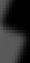


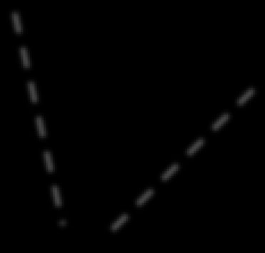
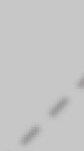

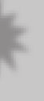
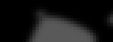


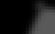


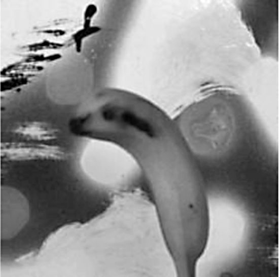

[图25.] [虚拟现实橡胶手错觉中的悬空可见触觉。箭头表示实验者手指的上下移动，它没有与橡胶手接触；星号表示感受到触觉的位置。]
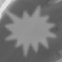
“手指和皮肤上有相对的磁铁”
“这是磁场对我的手臂产生影响”
“这是巫术……这是黑魔法”
“手指上有一个无形的延伸”
“这是ESP”
“这是心灵感应”
“一个魔术师让我的肌肉收缩”
“这个手指是一把幽灵枪”
在这里现实检验失败了。关于世界真实本质的已知和可信的高层假设未能涉及感觉输入的时空精细程度，因此它无法用来最小化预测错误。相反，一个不同的假设跳进来承担预测错误的缺口：它是一把幽灵枪，或者是手指的无形延伸延伸到橡胶手并在那里产生触觉。尽管这个假设的先验概率很低，但它被青睐，因为它比其竞争者更好地最小化预测错误——它在更多层面上更好地阻止错误。
当然，这个实验中的参与者并不真正相信幽灵枪和ESP。他们都完全意识到他们对超自然事件的报告与他们的背景知识之间的冲突。有趣的是，尽管如此，他们无法避免体验超自然触觉。这是一个我们有认知渗透性(cognitive penetrability)的案例，因为”超自然”假设改变了事物的体验方式，但我们也有认知不渗透性(cognitive impenetrability)，因为关于情况的真实信念未能以正确的方式改变知觉。因此，关于认知渗透性的辩论与现实检验问题直接相关。
到目前为止我们讨论的主题对于讨论精神障碍中的感知推断将是重要的，这将是下一节的主题。然而，我想首先强调现实检验的一个方面，它再次与认知渗透性和现实检验相关。
我可能给人一种印象，认为自上而下的解释消除比实际情况更像是一个自由放任的过程。我曾说过，认知穿透性的约束是在可获得的预测误差的低级时空细粒度上进行预测的能力。这是正确的，但似乎低估了感觉系统的功能分离。系统的不同部分专门从事不同的任务，似乎相对不受其他过程的阻碍（这与Fodor（1983）的信息封装认知模块概念相关）。神经科学研究人员一次又一次地在大脑的相同区域发现相同的高度特异性处理类型，跨越情境和个体。如果认知穿透性是一个自由放任的过程，那么也许我们不应该期望如此强的规范化和模块化？
我将尝试从预测误差最小化方案中的现实检验角度，对这一担忧给出部分答案。目标是说明一种部分分离的架构如何有利于感知推理。
现实检验有点像参与一个认识论法庭。一些感知推理被置于怀疑的语境中，在其他支持或矛盾证据的光照下接受质询。同样，在法庭上，某个被告的声明正在其他支持或矛盾证人的光照下接受质询。对于审判来说，不同证人的独立性是至关重要的。这就是为什么不应该允许证人在走廊里谈论案件或在作证前与被告会面的原因。如果证人在相关案件方面不独立，那么我们就不能信任他们的证词。同样，法官需要公正，陪审团也需要独立。例如，陪审团成员不应该是偏执狂，不应该在审判开始前接触过大量媒体报道；法官不被允许影响任何证词。如果法官和陪审团在这种意义上不独立，那么我们就不能信任他们以公平的方式评估和权衡证据。这对法律系统施加了一种证据架构：制衡机制确保独立性。当这种机制失效时，公平性就被违反了。
我认为大脑中的现实检验也是如此——实际上，预测误差最小化的整个要点是通过特定的证据架构最大化贝叶斯模型证据。不同的证据来源需要成为相对于所讨论事件的独立证人，高级期望需要以
平衡的方式评估来自较低级别的证据。如果来自一个感觉源（例如听觉）的证据受到来自另一个源（例如视觉）的证据影响，那么你听到的内容就不应该被用作现实检验的指导。假设你可能看到了一只狗。如果听觉估计本身至少部分是由你看到一只狗的感知推理引起的，那么你就不应该使用你听到的内容来支持那个感知推理（这就像询问另一个证人你应该作证什么）。同样，如果你无法弄清楚面前是什么，你就不应该完全依赖高级期望来确定感知推理（这就像询问法官应该作证什么）。
这可以应用到我们之前遇到的一些例子中。在腹语术错觉中，如果听觉位置估计是由视觉位置估计引起的，而不是对环境中因果源的独立估计，那么对视觉和听觉输入源共定位的估计就会出错。在观察噪音中的模式研究中（第6章图18），对于那些在可证实的纯噪音图像中看到模式的人来说，会出现误感知；尽管让先验的自上而下期望解决不确定性是合理的，但当实际上根本没有可辨别的信息时，这样做是不正确的。
这表明，为了作为现实检验机器有效工作，大脑很好地实现了某种证据架构。特别是不同的感觉模态，也许还有一些感觉内的证据流，需要在证据上相互屏蔽。这预测了”垂直”流之间的证据绝缘。同样，感觉过程——感官提供的证词——需要屏蔽来自高级表征的不当影响；高级水平需要能够在不考虑当前证据的情况下得出先验期望。这预测了”水平”处理层级之间某种程度的证据绝缘。
感知层次结构，以及在其每个层级实现的预测误差最小化机制的迭代，似乎适合在水平层级之间提供证据绝缘。每对重叠的层级形成一个功能单元，其中较低层级将预测误差传递给较高层级，较高层级将预测传递给较低层级。较高层级反过来又是下一个层级的较低层级：它向上传递预测误差，并从下一个层级接收预测（见第3章图7）。
从这个意义上说，每对层级中的上级只”知道”自己的期望，只被告知这些期望是如何错误的，从来不会直接被告知下级”知道”什么。同样，上级从来不会告诉下级传递什么消息，它只是期待下级会告诉它什么。由于这个原因，正确的水平证据绝缘自然地伴随着层次结构而来，正如我在前一章关于认知穿透性中所预示的那样。
154 世界
一如既往，这些条件会有所放松。在法庭上，法官和陪审团被允许了解案件的要点；律师可以在出示证人及其证据被详细审查之前先陈述案件；法官也被允许了解类似案件的判决结果。随着案件的发展，所有这些先验证据会根据新证据进行修订和权衡。同样在大脑中，如果高层次必须在整个假设搜索空间中搜索才能找到正确答案，那么将浪费大量时间和精力，因此场景的要点可能可用于指导后续证据的询问方式。决定最终感知推断的是不断演化的期望与感官证言提供的细粒度信息之间的契合度。这类似于法庭案件，最终判决应该反映来自独立证人的实际证据如何与解释这些证据的竞争假设相符（例如，有罪与无罪的假设）。
关于垂直证据隔离，也有一个概率故事可以讲述。让多个证人提供事件证据，比仅使用相同的感官模态在相同条件下反复收集相同证据，能更有效地增加后验概率(posterior probability)（讨论见Bovens and Hartmann 2003）。这一原则也反映在贝叶斯最优多感官整合的案例中（上图21），只有当两个证据源整合时，才可能做出更准确的估计。增加证人的效果相对快速地递减，因此为同一事件增加大量证人流并不利于现实检验。预测误差最小化将因拥有多个但不是太多的独立证据源而得到极大帮助。这完全符合我们拥有五个主要感官的事实——每个感官对环境中相同事件的不同信息通道都很敏感。
当然，这种对独立感官证据的一般需求也适用于感官告诉我们的信息存在分歧的情况（就像适用于法庭案件中的证人一样）。因此，如果我在黑暗房间里通过触觉得出某种结论，那么一旦灯光重新打开，我得到矛盾的视觉证据时，这个结论就会受到很大质疑。因此，拥有独立证人对于触发进一步的现实检验至关重要。
我并不是在论证我们拥有这些感官的唯一原因是它们作为感知推断的独立证人。毫无疑问，我们也受益于感官利用相同事件的不同方面，使它们能够在不同情况下以不同方式相互补充（例如，在明亮的日光下与黄昏时）。但我认为对独立证人的需求可能是感官进化的重要驱动力，实际上也是我们在不同环境背景下对其个体可靠性进行排序能力的驱动力。
在感知推断仅依赖于一种感官模态的情况下，更容易出现难以处理的糟糕感知推断。在这种情况下，我们可以预测现实检验的范围会缩小，因为提示感知推断错误的独立路径较少，而且后验概率没有得到进一步独立证人的提升。这将适用于现实检验被人为限制的情况，如实验室控制的错觉（例如，橡胶手错觉）。这也适用于不受五大主要感官（听觉、视觉、味觉、嗅觉和触觉）支配，而更多倾向于内在的、接触其他感官不易触及区域的情况：本体感受(proprioception)（身体感觉）、平衡、加速度、疼痛、温度感觉和内感受(interoception)的一般情况（源自身体内部的感觉）。鉴于精神疾病通常以难以处理的、糟糕的感知推断为特征，我们应该期望这些内在感官在精神障碍中占据核心地位；我们将在下一节讨论这一点。
在第6章中，我论证了认知渗透性(cognitive penetrability)的有趣案例往往在不确定性增加时发生。我也为认知不渗透性(cognitive impenetrability)的情况提供了空间，我建议我们对渗透性的理解与现实检验的问题相关。现在可以更好地看出这是如何结合在一起的。认知不渗透性与证据隔离相关，这种隔离既由感知层次结构中上下信息传递的性质所施加，也由对不同感官形式的独立证人的需求以及可能的个体感官内流所施加。这种证据架构对自上而下和横向调节施加了限制——这不是一个自由放任的情况。然而，预测什么以及预测得多好决定了什么信号通过层次结构向上传递，从而决定了得出什么感知推断。
我们可以再次求助于法庭类比来说明这样一个观点：当不确定性不断增加时，认知渗透性(cognitive penetrability)往往会发生。渗透性的有趣案例就像简易法庭案件。必须匆忙做出判决，陪审员让他们的先入之见在传达给法官的判决中比证人的证据更有分量。同样，在不确定性下通过层级向上传递的低级预测误差较少受到世界中实际原因的影响，而更多受到偏好假设的预测影响——受到我们先入之见的影响。再次，我们看到认知渗透性和不渗透性似乎与现实检验和贝叶斯推理有着千丝万缕的联系。这正是预测编码框架以及与之相关的知觉层级概念强烈暗示的。这是一个有吸引力的观点，因为它从认识论角度看待认知渗透性问题。
在预测误差最小化与法庭之间的类比中，我专注于知觉推理，而没有过多谈论主动推理(active inference)。然而，主动推理很容易被纳入其中。法庭案件在试图在不确定性下进行推理（达成判决）时（即当对两种假设都缺乏信心时）与证据有着高度积极的互动。反过来，控方和辩方都在各自不同的假设下审问证据，假设的是发生了什么。不仅得到证据最佳支持，而且也最成功地用于审问证据的假设最终被认为更可靠。就像大脑中的主动推理一样，控方和辩方必须假设关于世界的假设，并积极寻找符合其假设的证据——更不用说他们在传唤专家证人（和选择陪审团）中的关键作用。
无意识知觉推理的支持者经常将知觉比作科学假设检验。正如Richard Gregory在题为”作为假设的知觉”的文章中所说（Gregory 1980）：“知觉可以与科学中的假设相比较。获得科学知识的方法为研究知觉过程提供了一个工作范式。”我们所看到的是，将法庭的法律背景作为知觉的工作类比也可以获得很多东西，正如本书所论证的，两者本质上都是基于证据的。我在第12章中再次回到这个类比，在那里我用它来激发对意识体验私密性的观点。
到目前为止，在本章中，我们已经汇集了许多调整预测误差最小化的方法，因此它可能是次优的。如果我们假设精神障碍至少部分由或多或少系统性的错误知觉所特征化，那么我们或许可以通过考虑预测误差最小化来了解更多关于此类障碍的信息。在这里，我用精神疾病的特定方面来举例说明：精神病中的妄想形成和自闭症中的感觉缺陷。目标是利用到目前为止关于预测误差机制所说的内容，并探索这在多大程度上可能开始为急需的精神障碍投下一些光亮。
以下是我们迄今为止研究的”调节”预测误差最小化机制的方法：
这提供了可能错误的丰富图景——多种相互作用的调节失败类型。在这两种情况下，都不容易给出如何调整推理的各种制衡的明确规则。推理的这些方面中的一些已经与精神病和自闭症有关。我将在接下来的两个部分中追求一些主题，首先是妄想，然后是自闭症中的感觉问题。目标是从概念上分析预测误差与精神疾病之间可能存在什么联系，并开始将这一领域不断增长的实证文献置于情境中。预测误差机制表明，对于精神疾病的某些方面，只需要相对较小但顽固的”调节”错误就能引发严重和致残的功能失调连锁反应。
妄想是不寻常、奇异的信念，尽管有相反的证据和证词，仍然顽固地坚持。长期以来一直怀疑不寻常的体验可能引发妄想(Maher 1974)，尽管关于不寻常的体验是否足以完全形成妄想或是否需要进一步要素存在争论(Davies and Coltheart 2000; Coltheart, Langdon et al. 2011; McKay 2012)。
预测误差框架的扰乱已经在这些理论中被直接或间接地涉及（Frith 1992; Hohwy 2004; Stephan, Friston et al. 2009; Corlett, Taylor et al. 2010）。预测误差机制是解释妄想的有吸引力的候选者，因为妄想似乎涉及感觉输入和我们用来理解输入的先验期望之间的微妙相互作用。当患者相信例如医生要害他们，或者他们身上有粪便的气味，甚至当他们相信诸如黑手党在他们牙齿里放了一匹马这样奇异的事情时，似乎正是这种相互作用受到了干扰。
有不同的方式可以描述导致精神病和妄想的预测误差扰乱类型。我们希望朝着这样一种扰乱类型努力：(i) 扰乱相对领域一般性（即，同一机制适用于不同的处理模块），这样精神分裂症中看到的妄想现象的异质性可以以简约的方式得到容纳；(ii) 扰乱是高度顽固的，因此它可以反映治疗精神分裂症和妄想性障碍的困难；(iii) 扰乱能够捕捉妄想的特征，如其奇异的内容以及尽管有大量相反证据，它们仍被顽强地相信的方式。在这里，我将描绘一个似乎能够满足这三个约束条件的说明路径。重要的是，这个说明将只依赖于我迄今为止强调的关于相对顽固的预测误差aberrance的内容。具体而言，该说明将集中在期望精度优化的三个方面。
我在上面（以及第3章中）关注的一个想法是，对于期望精度的优化，现实检验可能存在可行性限制，否则会以统计推断的无穷回归告终。系统拥有评估其感知推断置信度的方法是至关重要的，但显然，置信度估计搜索的深度存在限制，否则系统会崩溃。实际上，系统很可能很快就必须简单地相信它正确地进行了置信度估计。因此，如果精度优化存在问题，那么预测误差最小化机制将很难纠正这一点。也就是说，精度优化的问题可能很容易变成慢性的和根深蒂固的。此外，系统尝试的解决方案可能会表现出相当大的波动，因为不同的置信度评估策略被试验。
正如我所注意到的，期望精度和相关的置信度估计对自下而上的感觉证据和自上而下的期望之间的非常一般的平衡起着关键作用：当预测误差预期是嘈杂的时，它就被抑制，系统反而依赖于自上而下的先验。这告诉我们，期望精度的慢性问题可能产生正确平衡的慢性问题。具体而言，对噪声和不确定性的持续、夸大的期望将导致不精确的感觉预测误差，这种误差由感觉输入的低增益和对自上而下先验的依赖增强所介导。一个不断期望感觉信号比实际更嘈杂的个体将倾向于陷入他或她自己对输入的特殊解释中，并发现很难纠正这些解释。这产生了精神病和妄想源于这种错误的不确定性期望的想法。
我也强调了拥有独立证据来源如何促进现实检验。因此，即使期望精度在一个感觉领域是次优的，原则上它们可以通过其他感觉来源提供的证据得到纠正。例如，如果听觉感知是次优的，它可能通过来自视觉和触觉估计的更优估计得到调整。
这种调整的一个障碍是，如果优化期望精度的问题是全局性的。在这种情况下，添加额外的证据来源几乎没有帮助，因为它们都受到了损害。另一个障碍可能是，如果问题在一个没有其他相关感觉信息来源的感觉通道中持续存在。这说明了大量妄想可争论地发生在感觉领域，在这些领域很难获得多个独立的证据来源，这些证据来源将直接在适当的时空细粒度上参与预测误差。因此，情绪的、代理相关的、本体感受的、身体的和自我相关的内容经常容易产生妄想，并属于这种证据绝缘的类别。也可以想象，当这些绝缘感觉领域中顽固的解释成为一个人的信念基础的一部分时，它们可以导致更多产的妄想系统。
试图将这三种不同的精度相关现实检验线索结合起来，我们可以开始看到妄想形成的一般说明轮廓，这可以开始满足这三个约束条件。该说明假设次优精度优化，使得对嘈杂预测误差存在持续的夸大期望。这意味着预测误差被抑制，自上而下的先验在推断中权重更大；此外，被抑制的误差信号在先验信念的持续修订中是一个效率较低的监督者，使得这些先验更可能偏离现实。当这种有问题的感知推断是全局性的，或者当它发生在相对”单一证据”的内部领域时，其他感觉证据无法帮助纠正失败的精度优化。
在这些条件下，预测误差最小化会因为不当的先验权重分配而受到损害。差异也可能因为整个预测误差景观的整体抑制而出现。例如，其他人通常会被相对较小的预测误差所引导，但这些可能仅被呈现为噪声；这会给学习和注意力分配带来问题。此外，相对于其他人，较大的预测误差可能显得更加异常，因为它发生在整体更加抑制的预测误差背景下；这会比其他人更多地吸引注意力，并使解释它变得更加迫切。
我们还看到，现实检验（和可穿透性）取决于待测试假设匹配感知层次结构中低级预测误差的时空粒度精细度的能力。160 世界
一个高度可信的假设（“医生告诉我我的大脑有问题”）在这方面可能会失败，留下可信度较低的假设（“是一个女恶魔在移动我的手臂”）来填补空白，并满足我们在描述的每个层次级别上抑制预测误差的需求。这与患者无法使用背景知识和家人及护理者的证词来对抗他们的妄想有关；背景知识和证词没有在正确的时空尺度上解析来解释异常误差（Hohwy and Rosenberg 2005）。那么可以预期，在具有次优期望精度的患者和健康个体之间，最终进行某些错误最小化工作的假设选择会有所不同。尽管我们都偶尔会落入这个陷阱，但妄想个体落入其中的方式有所不同。
精度优化是这种妄想形成通用解释的自然焦点，因为它是现实检验的核心，并且因为在感觉推理的高阶区域中学习预期会特别困难。它在特定意义上也是领域中性的：要评估信号的精度，我们不需要知道它是什么的信号。这意味着对妄想的解释不绑定到特定的表征内容，这可以在一定程度上解释精神病症状的高度异质性，其中妄想以许多不同的方式被详细阐述。
所有这些自然地引出了精度优化失败如何产生的问题。有一些有趣的理论将精度优化与长期以来被怀疑与精神分裂症有关的多巴胺紊乱联系起来（Fletcher and Frith 2009; Corlett, Taylor et al. 2010）；去甲肾上腺素似乎也参与其中（Yu and Dayan 2005）。还有证据表明精神分裂症有遗传成分，这与多巴胺如何调节信噪比（即精度）有关（Winterer and Weinberger 2004; Rolls and Deco 2010）。
这种妄想形成的通用解释表明，在某些情况下，可能只需要很少的因素就能以深刻和普遍的方式扰乱感知推理。也许所需要的只是一种遗传倾向，期望世界比大多数人期望的要稍微嘈杂一些，然后不幸地处于不确定的（例如，虐待性的）环境中（或有其他可能的发育问题），使得预测误差以难以暴露于现实检验的方式变得意外。从预测误差的故事中，人们得到的印象是，即使感知推理是非常一致的并且受到感官输入的密切监督，它也不是非常稳健的。它受制于世界的均匀性如何适应统计推理以及统计推理本身对感官输入可靠性的基本感知。这指向了对我们在自然中地位的有趣理解；我们将在后面（第11章）继续讨论这种稳健性的主题。
岌岌可危的预测 [161]
还需要做更多工作来证实这个解释。在这里，它用来展示预测误差机制的次优”调整”如何导致对妄想的简约理解。
自闭症谱系障碍是一种神经发育障碍，其特征是存在社交缺陷、刻板行为和受限兴趣、语言异常以及重复行为（Frith 2003）。此外，自闭症个体还有许多较少探索的感觉和运动差异（Rogers and Ozonoff 2005; Simmons, Robertson et al. 2009）。这个谱系存在很大的异质性，症状范围从令人心碎的残疾和无法交流的患者到高功能个体。
这个领域的大量研究致力于自闭症谱系中的感觉和运动差异如何与更突出的社会认知缺陷相关的问题。由Uta Frith、Francesca Happé及其同事提出的一个有影响力的观点是，存在对全局、上下文依赖处理的偏见（Happé and Frith 2006）。这种弱中央融合性(weak central coherence)的特点是在一定程度上无法将不同的、相对局部的世界方面估计纳入更高级别、更全局的规律性和原则之下。因此，它可能开始解释一些社交缺陷，因为正确理解社会世界依赖于对全局、一般语言惯例和社会习俗的理解。
从预测误差最小化的角度来看，这个观点很有吸引力，因为它直接涉及自底向上和自顶向下处理之间的平衡，这是感知层次推理的关键。它立即表明，可能存在期望精度控制感官输入的问题，从而阻碍全局融合。
基本想法是这样的。一个期待非常精确预测误差的感知者会增加自下而上预测误差的增益，相比于期待世界更加嘈杂的感知者，会相对更多地依赖感官而不是先验信念。这将导致感知者更多更长时间地采样世界，较少诉诸高层参数来尝试对特定感知推理进行泛化，因此在尝试解决输入中的不确定性时较少依赖上下文影响。如此描述，感知者开始符合自闭症谱系特征的感觉感知特征。存在一种被感官奴役的状态，对局部感觉内容的专注，延长采样，对环境变化的不容忍，以及在全局模型下缺乏连贯性（也就是说，忽略预测长期规律性的需要，当它们调节常规时感到惊讶）。
因此，预测误差理论在这里承诺的是一个相当简洁的机制，仅使用分层精度优化的概念来触及自闭症中感知推理的各个方面。
精度优化理论应该反映在学习过程中，因此可能涉及自闭症的发展方面。特别是，似乎增强的期望精度可能导致一种特殊主义学习风格，其中基于更一般的期望，样本之间没有插值。每个样本都与下一个样本隔离处理，期望能够非常精确地表示它。为了支持这一点，我将简要考虑两个与精度优化是自闭症核心方面这一想法一致的理论观点。
在预测编码框架中，学习只是根据预测误差对假设的长期修正。因此，学习风格的差异应该反映感知推理的差异。一个比大多数其他人期待更多精度的个体将更多地被特定感觉输入引导，较少倾向于尝试在先前学习的更一般规律性下泛化该输入——实际上很难学会更全局的规律性。自闭症学习风格将更加特殊和感官导向，较少一般化和全局连贯。这种学习视角很重要，因为它涉及自闭症的发展方面。
最近，正是这种学习风格的差异被提出作为自闭症的统一理论（Qian and Lipkin 2011）。Qian and Lipkin没有使用预测误差最小化来发展他们的理论，而是用神经元调谐函数来表述他们的理论，这些函数描述特定神经元或神经元群体如何响应特定类型的刺激，即它们如何承载关于特定刺激的信息。他们的主要假设是，典型发育的大脑偏向于泛化主义、插值学习（宽调谐曲线），而自闭症个体的大脑偏向于特殊主义、查找表学习（窄调谐曲线）。我认为这种学习偏差的差异可以很好地用精度优化的差异来理解。
接下来考虑预测误差最小化框架如何应用于心理化（了解他人心理）的特定情况。这是自闭症个体有非常明显缺陷的认知领域。具体地，我们想考虑在假设自闭症中精度通常期望很高（因此学习风格偏向于特殊主义查找表风格）的情况下，心理化会发生什么。
心理化是对隐藏原因进行因果推理的练习。实际上，对我们许多人来说，他人的心理状态是隐藏的典型例子。这是几个世纪以来推动哲学中他心问题的观察——关于当我们不能直接观察其他生物的心理状态时，我们如何知道它们是否有心理的怀疑主义问题。
John Stuart Mill著名地提出了这个问题的解决方案，即我们通过与自己心理和行为的类比推理来了解他人的心理。我们看到其他生物在做什么或说什么，然后我们考虑在那种行为下我们自己的心理状态会是什么，然后我们推断他人的心理状态基本上与我们的相同（Mill 1865）。这是一个推理过程，将预测误差最小化应用于心理化本质上只是这个一般想法的扩展。我们试图基于内部模型预测他人的行为，部分由我们自己心理状态和行为轨迹的知识推动（也就是说，它由我们的自我模型推动，参见Metzinger 2009）。如果预测是正确的，那么我们将识别模型中隐含的心理状态归因于心理状态。（这在（Kilner, Friston et al. 2007）中得到了更详细的阐述；另见Wentzer and Frith（待发表））。
知觉推理在心智化过程中工作得特别努力：正如欺骗和舞台表演告诉我们的那样，表面感官属性与心理状态之间没有稳固的一对一关系；语言解释中也存在广泛的情境敏感性（比如试图解释”啤酒？你知道冰箱在哪里！“时所涉及的情境敏感性）；总的来说，心理状态在多个时间尺度上作为自上而下的参数影响行为，这使得行为模式呈现非线性且难以预测（例如，对啤酒的即时渴望，由于啤酒与纸牌游戏之间的关联而产生的长期避免啤酒的愿望，以及意志薄弱程度的波动）。心智化中对情境和全局语境的这种依赖预测，在心智化方面采用查找表学习风格对这一社交领域的正常发展特别有害。
简单的想法是，在自闭症中，由于期望精确度的优化失败，存在向特殊主义知觉推理的偏向。也就是说，在自闭症中，世界的大部分被正确表征，但被因果关系浅层的假设所驾驭，这些假设错过了长期规律性，无法很好地预测深度隐藏的原因。我认为这个提议与Friston、Lawson和Frith（2013）最近的提议一致，他们用相反的术语来表述，即自上而下预测的精确度降低（这相当于对传入预测误差的权重增加，即期望它是精确的）。
我们可以预测，这种标志性的学习风格和知觉差异在不确定性水平升高时会特别突出。这是因为，正如我们所见，当不确定性增加时，人们应该更少依赖感官，更多依赖背景知识。自闭症个体应该违背这种模式，而是更长时间地依赖感官，164 世界
尽管存在不确定性，仍试图继续对世界进行采样，也许偶尔通过这种广泛的采样最终得出更优的特定估计。在不确定性增加的情况下学习和知觉推理特别受损的预测，可能在一定程度上解释了为什么在自闭症（和精神分裂症）研究中经常有相互矛盾的发现。两项都研究自闭症中同一错觉感知的研究可能得出不同的结果，因为它们没有以相同的方式控制不确定性水平。
我认为我们在自闭症谱系障碍患者橡胶手错觉方面的研究开始支持自闭症中高精确度期望的概念（Paton, Hohwy et al. 2011）。尽管这一领域需要更多研究，但现在有证据表明，在精神分裂症中，橡胶手错觉比健康对照组更早出现，而在自闭症中，它出现较晚，似乎特征是随后视觉触觉估计与本体感觉估计的多感官整合较少（Peled, Ritsner et al. 2000; Peled, Pressman et al. 2003; Paton, Hohwy et al. 2011; Cascio, Foss-Feig et al. 2012）。这些结果共同符合这样的观点：在精神分裂症中，传入信号被认为是不精确的，被信任程度较低，采样减少，而在自闭症中情况相反。
我们还探索了在自闭症谱系量表上排名的人们在经历错觉后如何伸手去拿物体。作为期望精确度的替代指标，我们测量了运动的急动度(jerk)，即加速度的变化率。推理是，期望伸手运动不精确的人会比期望它精确的人更多地改变加速度的变化率。就主动推理而言，经历橡胶手错觉应该引起关于伸手目标相对于真手位置的一些不确定性，从而使参与者期望在运动中最小化的本体感觉预测误差不精确。换句话说，他们应该更多地摸索，以便通过动作有效地最小化预测误差，产生更多的急动度。这正是我们的发现；在自闭症谱系上得分较低的人在经历橡胶手错觉后比没有经历时有更多的急动度，而在谱系上得分较高（但非临床）的人没有急动度差异（Palmer, Paton et al. 2013）。尽管这一领域需要更多研究，但这为这里提出的假设提供了一些证据。
就像在妄想的情况下一样，我们再次看到这样的观点：可能需要一些非常微不足道的东西来深刻地扰乱知觉推理。稍微错误地获得感官输入的期望精确度至少在原则上可以引发知觉推理中的级联效应，这些效应似乎能够捕捉自闭症的可怕方面。知觉推理在表征世界方面非常好，但在推理开始严重崩溃之前，不需要出现太多错误。
在这一节和上一节中，我们考虑了在从事预测误差最小化时错误感知世界的多种方式
不稳定的预测 [165]
如何应用于妄想和自闭症。特别是，我们考虑了这样的观点：在妄想中，对感官输入的不精确性存在夸大的期望，而在自闭症中，对感官输入的精确性存在夸大的期望。当这些期望精确度调节构成知觉层次的预测误差机制时，似乎可以容纳这些障碍的关键特征。
这远非心理病和自闭症的统一理论，这些是具有异质症状群的极其复杂的综合征。然而，这是对预测误差框架令人着迷的解释潜力的说明。
到目前为止，我们主要从感知推理的角度讨论现实检验和误表征，将主动推理搁置一边。然而，正如我们在多处提到的，感知推理和主动推理之间确实存在一个非常基本的平衡需要把握。这最后一节将讨论这种平衡，并简要探讨它可能如何与精神疾病相关。
回忆一下，感知推理是更新个人内在信念以最好地解释感官输入的被动过程。通过最小化惊奇界限来最小化预测误差，使得界限越紧，个人的假设越接近匹配实际输入。主动推理不改变假设以适应输入，而是将预测视为理所当然，通过改变世界和主体在世界中的位置来最小化预测误差，从而改变实际输入。
考虑到惊奇的紧界限意味着对世界的准确感知。另一方面，惊奇的松界限意味着对世界的某种不准确模型。这样的一个显然结果是，预测误差越多，模型承载的关于世界的信息就越少。这应该意味着如果感知者在非常紧的惊奇界限上行动，那么她遇到惊奇的可能性就较小。另一方面，如果感知者在非常松的惊奇界限上行动，那么她在行为中遇到惊奇的可能性就更大。
这就是我所想的平衡：在我们行动之前，通过感知推理的惊奇界限需要多紧？多少界限优化是最优的？过早行动意味着我将在行动过程中产生更多预测误差。过晚行动可能意味着我错过了时机，或者我不必要地消耗能量使模型过于准确。也许平衡也会反过来起作用：在我们回到感知推理之前，通过行为的惊奇界限需要多紧？世界是一个变化的地方，所以基于日益过时的假设持续采样世界平均来说可能不是最优的。
要正确把握这种平衡将是困难的。这似乎需要对整体预测误差演化的长期模式进行困难的学习。也就是说，要优化我们参与预测误差最小化的方式，我们需要表征我们最小化预测误差的方式，并制定策略来找到正确的平衡。我们必须发展对预测误差如何演化的期望，并学会在感知推理和主动推理之间切换以控制其演化。
什么算作正确的平衡将高度依赖于上下文。在某些稳定的上下文中，长时间参与相同的行动模式可能是最优的，而在其他更多变的上下文中，这可能不是最优的。在正确把握平衡方面，时间尺度之间将存在相当大的权衡（例如，现在探索细微的感知细节可能在长期泛化方面付出代价）。类似地，精度方面也会有权衡：有时粗暴地忽略不精确性对于巨大的准确性好处是有益的（例如，不纠结于细节以便更根本地改变个人的环境）。调动所有这些要素，跨越感知和主动推理，是一个巨大的任务。正确做到这一点似乎也意味着将自己表征为世界中的自主agent(主体)，一个对预测误差最小化策略有控制权的自我，对何时行动何时退后有选择权。
所有这些可能给人留下这样的印象：正确把握这种平衡在某种程度上是一个由大多数意识努力指导的非常明确的切换过程。但这不可能是事实。感知和行动之间存在恒定的快速切换交替。考虑我们的眼睛以扫视saccades(眼跳)不断移动的方式。Saccades是主动推理的时刻，然后非常频繁地在非常快的时间尺度上发生。这将导致在更新假设和有选择地采样世界以测试这些假设之间非常快速和自动的切换。随着推理通过感知层次向上移动，切换会放慢。很难说有意识的深思何时开始发挥作用，但主要观点是在任何层面都会有一个需要正确把握的平衡。正确把握它将基于学习适合该时间尺度的感知和行动中的预测误差轮廓。
贯穿全书，我们一直在操作这样的想法：感知推理和主动推理都涉及预测误差最小化，尽管具有不同的适应方向。现在我们可以看到，在这两类过程之间正确把握平衡本身就是成功表征的手段——持续抑制预测误差（隐含地，惊奇）。这以有趣的方式扩展了错误感知的概念。成功的感知不仅仅是良好的贝叶斯推理的问题，或以正确的方式调整预测误差机制的不同方面的问题。这是在适当紧的惊奇界限上行动的问题（不要过早行动也不要太晚）；类似地，感知是知道何时停止对世界行动的问题（不要过早放弃，不要持续太久）。
当然，这里没有任何与预测错误最小化无关的东西。感知和行动之间的平衡受到同一个统一机制的指导，即预测错误最小化。例如，对于像我们这样受限的个体来说，似乎可能存在不同的、同样好（或坏）的方式来优化这种平衡。在相对宽松的惊讶边界上行动的人，可能比那些对行动有更保守阈值的人更早在行动过程中遇到预测错误的增加。但如果他们在进行过程中适当地调整平衡，两者都可能成功。例如，保守的行动者在了解到行动中产生的预测错误非常小时应该变得不那么保守，而不那么保守的行动者必须在过程后期花费精力”清理”产生的预测错误。
现在我们可以思考如果感知推理和主动推理之间的平衡不够优化会发生什么。如果相关个体不能很好地优化感知和行动之间的平衡，就应该会出现慢性预测错误问题。例如，如果他们持续在非常宽松或过度严格的边界上行动，那么预测错误就应该会随时间增加。同样，如果个体在回到感知推理之前采样过多或过少，那么预测错误就会倾向于随时间上升。
这种推测很诱人，即这些干扰可能出现在精神疾病中。这样的推测可以这样粗略开始，符合我们上面关于精度优化差异的推测。在精神分裂症中，有在宽松边界上行动的倾向，这意味着行动产生了大量预测错误；感知推理很快被重新审视，但只是在开始新的主动推理之前被草率地修订。在自闭症中，对行动有非常保守的阈值，导致只在非常严格的边界上行动的倾向，一旦基于过度精确的模型启动行动，它产生很少的意外；因此感知推理不会被经常重新审视，反而世界被重复采样以符合模型。
将精神疾病与主动/被动平衡联系起来很有吸引力，因为它涉及到像精神分裂症和自闭症这样的疾病中令人困惑的东西。一方面，它们的特点是感知和推理问题及差异，另一方面，存在对自主性、行动力和自我意识的干扰。专注于感知干扰的研究往往忘记了令人困惑的法医和个人干扰。很难在这两个方面之间建立桥梁，因此也许应该考虑一个将感知和行动置于同等地位的框架，比如这里提出的框架。
这些想法在这里当然只是简要地呈现，但我到目前为止所建议的至少有助于说明一旦我们考虑整个预测错误最小化体系所提供的统一解释途径的类型。在我看来，这是一个被忽视的候选者，用于理解什么导致了精神分裂症和自闭症等疾病——以及什么塑造了我们的现象学。
本章关注对预测错误最小化机制的探索，旨在解释推理可以被调整以正确表征世界的多种方式，相应地，误知觉可能出现的多种方式。结果证明，这是我们在与世界和彼此的日常互动中需要导航的丰富而复杂的可能错误集合。该机制似乎具有丰富的潜力来适应感知错误的类型，并指出解释和统一它们的新方法。令人高兴的是，像预测错误最小化机制这样简单的概念具有如此丰富的资源，在我看来，这为我们与世界的认识互动提供了现象学上和生态学上有效的图景。
然后我试图将预测错误框架，以及我们未能最优化预测错误最小化的多种方式，与两种关键精神疾病的一部分联系起来。当然，我没有呈现这些疾病的综合理论，这更多是一个概念之旅，部分试图用预测错误最小化的术语重新描述精神病和自闭症的方面，部分建议预测错误机制可能在哪些方面出错，以能够解释更慢性的误表征世界的方式。在下一章中，我将深入探讨关于误表征本质的一些更理论性和深层哲学问题。
总的来说，本章指出了不稳定预测的图景。尽管我们大多数人在大多数时候都能正确处理大多数事情，但似乎不需要太多就能以深刻的方式扰乱整个系统，使其偏离真实表征的路径。在这背后的想法是，神经系统似乎更感兴趣于抑制预测错误，而不是正确地表征世界。我们将在后面的章节中回到这些主题。
不稳定的预测 [169]
[第143页。] [[][这][一发现是基石之一][…] [”][]
[预测错误最小化的观点来看，在Ebbinghaus错觉中伸手触碰中央圆盘所涉及的主动推理偏离感知]
[错觉是有意义的：在这种情况下，运动比更被动的视觉更好地最小化中央圆盘的预测错误]
[。然而，这产生了两个解释任务。首先，]
[为什么在这种情况下主动推理不受视觉感知推理的更多指导？]
在我看来，最佳答案是它确实受到了引导，但是以更加微妙的方式，与动作中预测误差快速最小化的方式一致。在Müller-Lyer错觉中有相关证据（Bruno and Franz 2009; Skewes, Roepstorff et al. 2011）。第二，为什么主动推理的正确结论不会渗透到后续仅视觉感知的错觉中？我们在前一章中用来适应认知不可渗透性的方法的一个版本可以用来回答这个问题。主动推理没有渗透，是因为它没有足够的资源来最小化与侧翼圆圈相关的预测误差——手部运动无法更新这些参数。这让基于错觉、视觉的假设重新成为最佳的整体误差最小化器，因为它可以将侧翼的上下文纳入考虑。
更一般地说，预测误差方案为什么应该允许感知和动作处理流之间的这种分离，可能并不立即清楚。尽管感知和动作都在致力于最小化预测误差，但假设它们在不同的约束下这样做似乎是合理的，这反映了我们在世界中移动时由身体和感觉配置产生的规律性。感知以感觉属性的大带宽运行，这些属性在多个时空尺度上相互作用，感知经常需要摒弃先验假设以便对新情况保持开放。身体动作关注的是完成任务，它需要更小的感觉属性带宽，在更少的时空尺度上运行，需要受到更多先验假设的约束，在最小化预测误差时只能承受很少的在线杂乱。可以想象，这种对面向动作情况的更窄范围的可能解释，将有助于避免当我们例如试图抓取或避开逼近物体时的代价高昂的延迟。
整体想法是，运动的先验期望比感知推理中的先验期望受到更多约束，因此对上下文的敏感性更低（Friston, Daunizeau et al. 2010）。这预测在动作中会比在感知中有更少的错觉：当不确定性增加时，走不同道路的余地更少。（感谢Josh Skewes和Bryan Paton对这些问题的讨论）。
在这里我建议感知和主动推理之间的关系是微妙的，这种方式解释了错觉发现。所选择错觉的特定方面可能通过激发动作和感知之间更强的分离来强化这个故事。例如，可能是产生Ebbinghaus等错觉所涉及的因果规律性不适用于与产生特定类型的伸手行为相关的时空尺度。我们假设产生错觉的大小恒定性效应，可能只与相对较大的距离相关，而不与伸手运动覆盖的短距离相关。也就是说，相关的深度线索通常可能控制与相当远的、触不到的物体大小相关的规律性。这种远距离深度线索与动作无关将是一个可学习的规律性，这将以一种比前一节描述的方式更不偶然的方式，使系统免受这种错觉效果的影响。
总体而言，Metzinger对真实性提出了类似的观点，尽管他认为真实性被牺牲以最大化全局一致性（Metzinger 2004: 237）。
无意识知觉的支持者提出的问题在于，是否合理将法庭描绘为贝叶斯机制？答案似乎是肯定的。许多贝叶斯理论化都是以准法律术语进行的（Bovens and Hartmann 2003），重要的是，有一个协调的努力将法律术语重新表述为贝叶斯术语，并相应地分析法律案例（Lagnado, Fenton et al. 2012; Fenton, Neil et al. 2013）。
有不同的方式可以处理这个问题。一个与预测误差最小化相关的非常有影响力的模型基于前向模型的概念，主要适用于异己控制妄想（例如表现为”女恶魔正在控制我的运动”的信念）。起点是我们可以很好地预测自己运动的感觉后果，但无法预测他人控制我们运动时的感觉后果（例如，有人从后面推你的胳膊）。这意味着对于自己的运动，预测误差应该非常小，但对于他人控制的运动，预测误差应该很大。如果在比较运动的预测和实际感觉后果时出现问题，那么可能会产生虚假的预测误差，错误地将自己的运动与我们学会期待的那种不受我们控制的运动的预测误差联系起来。这种不寻常的体验随后引起了一个人的运动实际上受他人控制的妄想（Frith 1992; Hohwy and Frith 2004; Fletcher and Frith 2009）。关于这样的不寻常体验如何能引起完全的妄想，存在广泛的辩论。我相信预测误差异常在感知层次结构中的级联方式足以解释这一点。
包含了围绕妄想形成和其他异常体验的大部分现象（Hohwy 2009, 2013）。我不会在这本书中试图完全论证这个立场。相反，我致力于一个更通用的、专注于预期精度的解释。值得注意的是，被认为与异己控制妄想有关的那种自主运动感觉后果的预测，已被证明表现出这种解释所预测的那种不精确效应（Synofzik, Thier et al. 2010）。需要调整这个解释来说明经典单主题妄想与精神分裂症中更典型的妄想之间的差异；关于这个问题的一些讨论，见Hohwy 2013。关于妄想辩论的完整哲学讨论见Bortolotti（2009）；关于一种贝叶斯解释见Coltheart, Menzies et al.（2009）。
简单的想法是，在自闭症中……最近，Pellicano和Burr（Pellicano and Burr 2012）提出了一种有趣的自闭症方法，其中自闭症的知觉推理受到弱化先验（“低先验”）的影响，这些先验使他们对世界的感知较少受到先前知识的影响。这是一种有吸引力的贝叶斯方法，与精度优化解释和Qian和Lipkin提出的学习风格解释（在本节中讨论）都有关联。我认为精度优化解释提供了更深层的分析，因为它锚定在产生知觉模式的机制上；它还预测知觉差异特别在不确定性水平高或波动时出现，这将解决自闭症患者在受控情况下测试时往往不显示知觉准确性或精度差异的问题。对于与橡胶手错觉相关的例子，结果显示自闭症患者具有与对照组相同的本体感受准确性和精度（Fuentes, Mostofsky et al. 2010），表明他们在这些条件下的先验是相同的。因此，差异可能只在不确定性增加时才出现；另见Brock（2013）和Friston, Lawson, and Frith（2013）对Pellicano和Burr的评论。
有时我们会错误地感知世界。哲学家喜欢这样的例子：你在黄昏时光线昏暗的情况下，在远处的田野里遇到一只狗，你错误地将其感知为羊。我们也可以使用前面章节中的错觉例子。当你在米勒-莱尔错觉中感知其中一条线比另一条线更长时，你就错误地感知了世界。同样，当你由于服用药物或头部受伤而体验到周围奇怪的彩色图案时，你也可能错误感知。
有时我们可能会意识到某些东西是错误感知，并试图在现实检验过程中获得真相，如前一章所讨论的。例如，我们可能会拿起东西仔细观察，或询问其他人他们看到了什么。我们可能经常假设，我们没有意识到我们的错误感知。例如，我可以轻松地度过一生而不注意到我在看电视时经历的微妙的腹语术错觉。
这告诉我们，大脑并不是一个完美无瑕的理想预测误差最小化器——相对于某个知道感觉是如何引起的神奇大脑而言。这也告诉我们，必须表征世界因果结构的内部生成模型并非始终是世界因果结构的完美映像。如果是的话，那么错误感知就不会发生。这很好，在许多方面是无争议的：我们知道人类受到我们生物学和嘈杂环境的限制，因此我们无法达到理性推理的理想。惊讶的预测误差或自由能界限永远不为零。
心智和语言哲学家对如何在各种感知理论中容纳错误感知感兴趣。是什么使某些东西成为错误感知？这不仅仅是我们如何能够相信我们错误感知的问题（例如，是什么可能使我们等到天亮去检查那只狗，或听到它吠叫而不是咩叫）。这是关于是什么使得将狗错误感知为羊的情况不是引入一个落在拼凑的或析取的概念狗-羊下的新的混合感知的问题。尽管我们当然可以引入这样一个新的拼凑概念，但一些知觉推理可能是错误感知是至关重要的。如果不是这样，那么错误感知就被排除了，然后这个解释就完全不再是关于感知的了。这是我们在第1章开始时提到的观点，即感知概念是一个具有规范性核心的概念。
这是一个令人惊讶的困难挑战（Kripke 1982; Fodor 1990; Cummins 1991）。一个令人满意的回应需要以还原的、非循环的方式显示，获胜假设的某些特定状态和参数如何确定这些状态所指的环境原因，以便我们可以说当知觉推理是某些东西是羊而实际上是狗时这是一个错误。因此我们需要考虑在预测误差最小化方案中如何做到这一点。关键是，这必须以明确我们避免所谓的错误感知与真实感知析取事态无法区分的情况的方式来完成。幸运的是，Eliasmith和Usher（Eliasmith 2000; Usher 2001; Eliasmith 2005）在这个方向上的相关工作已经开拓先河，我将在这里利用。
在这个问题的背景中，有一个非常普遍的问题，即感知层次结构如何表征世界中的事态。心理表征的本质也长期困扰着哲学家：凭借什么，心智的内在状态指向或关于世界中的某些事物？关于性(aboutness)似乎不是一个明显的自然主义关系，因此用还原主义术语来解释它是一个挑战。
哲学家通常在表征问题上分为两个阵营：要么说关于性是世界中的事物与心智状态之间的因果关系，要么说它是当心智状态独特地符合或描述世界状况时产生的关系。尽管我将建议的预测误差方案中有强烈的因果元素，但第二种类型的解释也很有吸引力。这使得预测性心智看起来比最初出现时更加内在且远离世界。
本章最后简要讨论了认知科学和心智哲学中一个非常著名的问题，即Searle的中文房间论证。这个论证旨在表明，受AI启发的心理状态解释无法实质性地解释心理状态。我认为预测误差最小化解释可以舒适地置于对这个问题的合理答案类别中。
本章深入探讨了这些相当深层的哲学问题。尽管意图是使这些材料广泛可及，但这是书中最需要哲学背景知识的章节。目标不是提供这些问题的全面处理，那需要更多空间。相反，目标是指出预测误差最小化框架与这些更严肃的哲学问题之间的接触点。这很重要，因为这些接触点有助于告诉我们预测误差解释是什么类型的解释——它告诉我们心智的本质以及心智在世界中的位置。它有助于将这个方案置于哲学景观中。
考虑一个生物从事感知推理的整体图景，其目标是最小化预测误差。这是一个移动的、最终无法实现的目标，因为在一个噪声系统中误差不能为零。但是，对于一个相当成功的生物来说，有对这个移动目标的持续近似。在这个图景下，误感知可以是使生物偏离这个目标的感知推理：误感知是当预测误差增加时。
然而，这个想法无法如其所示的那样工作。我们试图为之留出空间的误感知测试案例通常出现在预测误差实际上似乎被最小化时：那边田野中的那个东西是羊的假设比它是狗的假设更好地最小化了此时此地的预测误差，所以你最终（错误地）感知它为羊。这是一个合理感知推理的时刻。这就是哲学问题：我们想说它是误感知，但导致感知的过程似乎遵循了正确推理的所有规则。然后我们只能将其视为误感知，因为我们预设了那个心理状态表征狗而不是羊。问题是，那么这个解释最终不是还原性的——为了讲述这个故事，我们必须预设基本的语义关系。
在统计推理框架内，解决这些问题的最佳方法是诉诸模型参数在特定情况下（如黄昏时在田野中看到一只狗）携带的关于某事物的信息与该参数在所有刺激条件下平均携带的信息之间的差异（Eliasmith 2000: Chs. 4, 5, 8; Usher 2001: 326）。这种区别允许误感知：在那些特定情况下将狗感知为羊是误感知，因为平均而言，在所有条件下，羊感知携带的是关于羊而不是狗的最多信息。如果我们以这种方式将感知的内容或意义与概率分布对齐，那么我们就有了一个标准来比较单个感知推理。这提供了一种将某些推理视为错误的方法，即当它们将感知与平均而言不是最佳配对的环境原因配对时。这个想法有一个规范性维度，因为平均携带信息的能力是有机体的一个目标。因此，当推理在这方面失败时，似乎有理由将其视为错误。
回想第2章中携带信息的能力是拥有互信息的问题，预测误差解释的一个平凡结果是当预测误差被最小化时，互信息增加。这种关系意味着排序互信息的概念可以用预测误差最小化来表述。使所讨论的感知推理成为误感知的是，尽管它是预测误差的局部最小化，但平均而言，预测误差的最小化通过将所有且仅将狗感知为狗来最大化。也就是说，感知者应该将狗感知为狗，因为这是随时间平均最好地最小化预测误差的感知推理。
这是关于感知者的一个事实：给定感知者过去关于某些模型参数的推断，可以描述一个概率分布，它建立了对未来推断的期望；例如，狗被感知为狗。相对于这个期望，将狗感知为羊是不正确的。换句话说，从长远来看，如果允许像黄昏中的狗是羊这样的推断扩散，预测误差最小化会受到影响。例如，这种推断不会促进对绵羊和狗各自长期规律性的真实表征的形成；它也无法在涉及与狗和羊互动的许多主动推断中最小化预测误差。一个无法最小化时间平均预测误差的简单例子是，如果那个四足动物——你认为是狗的——然后开始吃草。
从这个角度看，对错误感知问题的回应与对如果大脑感兴趣于最小化惊讶，那么我们应该总是寻找黑暗房间这一异议的回应没有什么不同（在第4章中讨论）。对该异议的答案是，长期寻找黑暗房间不会最小化长期的平均预测误差。关键是惊讶值(surprisal)的概念，它是根据生物的期望状态定义的：寻找黑暗房间从长远来看会将像我们这样的生物从其期望状态中移除。将狗错误感知为羊类似于黑暗房间场景：从长远来看，无法区分狗和羊将增加预测误差——它会使我们远离期望状态。
当然，狗的案例不如黑暗房间案例那么戏剧性。但潜在情况是相同的。一个是感知推断的案例，另一个是主动推断的案例，在这两种情况下，暂时的预测误差获胜都会以长期预测误差为代价。因此这些推断都是错误的。在两种情况下，当生物进行这些推断时，某些事情对生物来说都是真实的，即它的期望状态是什么。错误感知是将生物从这些状态拖离的推断。
这可能听起来相当目的论，仿佛大脑旨在维持生物处于其期望状态。这将是有问题的，因为瞄准某个目标似乎预设了对目标状态的表征。如果是这种情况，那么错误感知毕竟会以非还原性的方式得到解释，因为该解释将依赖于内部表征与其目标状态的先前协调。然而，第2章讨论的一个关键要素是大脑本身不能直接估计惊讶值，这意味着它不能直接将其期望状态表征为目标。相反，它维护其期望状态的模型，相对于该模型最小化误差，并根据无法解释的感觉输入修订其假设。这可以在不预先知道感觉输入的外部原因的真相或能够表征其目标的情况下完成。因此，该解释中没有立即威胁的循环性。在下一节中，我将更深入地探讨这个复杂的问题。在此之前，我将提出这种错误感知作为破坏平均、长期预测误差最小化的推断这一观点的四个有趣方面。
如果坚持某个感知推断会以平均预测误差为代价——如果它会产生关于世界的总体更差假设，那么该感知推断就是错误感知。使这个想法更具体的一种方法是考虑整个世界模型中的错误感知，该模型在大脑中随时间维护。因此，错误感知可能是低级别、快时间尺度预测误差的最小化，这将以高级别、慢时间尺度预测的平均代价为代价（例如，当预测”羊”明天会在哪里时）。或者它可能是高级别、慢时间尺度预测误差的最小化，这将以低级别预测误差增加的平均代价为代价（例如，将狗和羊的表征合并会在更精确信息的情况下破坏预测）。类似地，为了最小化快时间尺度预测误差而寻找黑暗房间将以较长期惊讶为代价（例如随着人变得越来越饿）。在许多情况下，识别错误感知似乎需要考虑整个模型的总体、长期平均预测误差最小化。
从整个内部模型的平均预测误差最小化角度考虑，显然错误感知必须是程度问题。该框架是概率性和有噪声的，所以即使是最佳总模型也永远不会携带关于世界的完美信息。这是一个实质性的承认，因为它基本上说所有感知推断在某种程度上都是错误感知。因此，当我们认为羊推断是错误的时候，我们真正说的是它比推断狗是狗更错误。换句话说，即使在关于狗的多层感知推断中也必定存在一些误差。如果它们都是误差，那么排名必须涉及它们距离真相有多近——它们在真实性(truthlikeness)上如何排名。
真实性是一个在哲学上令人困扰的概念(Oddie 2008)，但在预测误差方案中如何处理这一概念是清楚的，即根据描述真实输入的概率分布函数和描述预测输入的函数之间的平均差异来处理。真实性以一种平凡的方式从这种测量中得出：完美预测的东西携带完美信息，必须是真实的表征，所以说平均预测越好，表征越接近真实，这似乎是合理的。
正如我们应该预期大多数（如果不是全部）感知推理中会有一些错误一样，我们也应该预期许多感知推理中会有一些真实性。就互信息而言，许多我们可能认为是错觉的感知推理平均来说与世界中相关事态的互信息会大于零。在将狗误认为羊的情况下，多层感知中会有一些元素实际上很好地携带了信息。在这个具体例子中，可能会有一些快时标、变化的感官属性被正确感知（如存在模糊的灰色毛发）；类似地，可能会有一些慢时标、不变的属性被正确感知（如将物体分类为活着的四足动物）。
表征中正确的部分似乎是单独来看会导致模型拟合不佳的部分。对于相当不变属性的非常一般模型，存在一些预测误差最小化，但我们知道这种非常一般的模型伴随着很大的预测误差。对于相当变化属性的非常具体模型，也存在最小化，但我们知道这种模型本身往往过度拟合，在最小化预测误差方面表现不佳。因此，坚持这种模型对长期的预测误差最小化是不利的，即使它们携带一些信息。它们是错误的正确方式。
这些错觉案例中似乎缺失的是对相对中等层次感觉属性的良好预测误差最小化，比如这是某种外观的狗。在给定情况下，系统某种程度上被低层推理（“它是灰色毛发”）和高层推理（“某种四足动物”）误导到错误的中等层次推理（“它是羊”）。当然，错觉不一定是由于在中等层次属性上出错而产生的。它也可能是由于在非常高层或低层上的错误分类而产生的（例如，将一些树枝的影子误认为活的生物）。但模型拟合考虑表明，一般来说，正确的感知涉及使用在过于一般和过于具体之间精细平衡的模型来最小化预测。
换句话说，大脑最小化平均预测误差的努力预测，其最佳表现假设中的活动将出现在整个感知层次中。这一预测重新审视了第4章中的评论，并与关于意识神经相关物的发现相符，这些发现表明内侧颞叶的重度参与以及整个层次中更微妙的广泛活动(Leopold and Logothetis 1999; Quiroga, Reddy et al. 2005)。这似乎也与更理论化的意识感知内容提议一致，这些提议强调中等层次表征(Jackendoff 1987; Koch 2004; Prinz 2012)。这些简短比较表明，有可能将对意识感知的相当不同的方法与使用预测误差最小化机制进行模型拟合这一相当简单的想法联系起来。
在迄今为止的大部分讨论中，焦点一直在感知推理及其可能出错的方式上。主动推理只是间接地出现（例如，在现实检验依赖选择性采样的方式中）。如第4章所述，感知和行动只是最小化预测误差的两种不同方式。因此，我们应该预期错觉会有与行动相关的类比。
这种”行动失败”应该根据预测误差最小化来分析，但要反映行动特有的不同拟合方向。这似乎很简单。行动是通过操纵个体在世界中的位置或世界本身来使感官输入拟合关于世界的现有假设，从而最小化预测误差。如果这成功了，那么行为（包括在世界中引起的变化）就携带关于模型的信息。这类似于在感知中模型携带关于世界信息的方式，但在不同的拟合方向下。
行动失败就是未能最小化预测误差的行为，也就是减少行动能够告知假设程度的行为。同样，我们需要根据平均的、整体的预测误差来分析这一点，因为单个行动可以在此时此地最小化预测误差，但平均来说未能如此，使其以与错觉可能失败的相同意义失败，尽管拟合方向不同。因此，这种方法概括了上述关于经典哲学错觉问题与dark room问题之间关系的简短评论。
我认为应该可能为错误行为的情况发展类比，类比我在前一章中讨论的许多破坏预测误差最小化的感知方式。如果预测误差最小化方案不仅能统一感知和行动，还能统一感知和行动失败的方式，这将是其一个吸引人的方面。
无法克服的怀疑主义。尽管到目前为止已经说了很多，但没有保证通过预测误差最小化机制实现的模型会接近真理——真理相似性并不能得到保证。我们可以构造出这样的情况：平均预测误差被最小化，但我们直觉上会说这是误知觉。这种情况发生在怀疑主义
（类似《黑客帝国》的）场景中，来自黄昏时的狗（被误知觉为羊）和真正的羊的感觉输入，被巧妙地设计得无法区分。也就是说，对一个对象的感觉属性的预测不可能与对另一个对象的感觉属性的预测有所不同。那么世界的整体模型对一个对象携带的信息不会比对另一个对象携带的更多，因此将狗知觉为羊并不是误知觉。我认为对于这个本质上是怀疑主义的问题没有直接的答案。我同意Fodor、Usher和Eliasmith等人的观点，即简单地将其搁置是合理的。用Usher的话说，“按照假设，这样的错误表征超出了主体检测它的能力，因此它不会造成同样的问题[如上面讨论的排除析取知觉的误知觉问题]”(Usher 2001: 326)。
这种怀疑主义问题的持续存在不应该让我们感到惊讶，因为我们在本书第一部分中反复注意到，世界的状态对观察者来说是隐藏的，因此在知觉推理中被直接解释掉的是近端感觉输入中的统计模式，当然，这对它是由世界中真实的不同对象引起的，还是由一个恶意科学家操纵我的”缸中之脑”产生我倾向于预测的感觉输入这样的巧妙伪装的共同原因引起的，是不敏感的。知觉推理只能辨别感觉系统刺激中的统计模式，从而携带关于这些规律性的信息。我们自然地假设，它携带信息的对象是世界中（以及身体中）真实的远端事态。但据我们所知，它可能是关于一个根本性怀疑主义场景的信息；我的状态与邪恶科学家的恶意机器协变。
即使我们决定搁置完全成熟的怀疑主义担忧，这种图景确实将心智呈现为参与一种内部斗争，以使其状态与输入相符，而不是与世界相符。可能有人认为将行动加入这个图景会有所帮助：如果我能操纵对象来检验我关于世界的假设，那么它们必须存在。但这不会有助于减少怀疑主义的担忧，或使心智与世界的接触变得不那么间接。这是因为，当然，行动是主动推理，它同样由感觉输入的预测驱动——它同样是一种使假设和输入相符的内部斗争。
最后一节在预测误差方案内解释了Usher和Eliasmith对误知觉的解释，并展示了这如何很好地契合了前面章节的许多讨论。因此，它看起来是一种有吸引力的解释类型。
正如我在上面标记的，然而，狗-羊误知觉问题有一个更严重、更深层的版本。这与Kripke(1982)版本的Wittgenstein(1953)所谓规则遵循考虑之后兴起的辩论有关（在Kusch 2006中有记录和讨论）。简要探讨这场辩论的目的是引向预测误差最小化解释中的一些深层问题，这些问题很重要，值得理解。
这场辩论从与之前相同类型的案例开始：关于我，现在，有什么非语义的东西使得当我说这只狗是羊时，我对世界进行了错误表征？关于我有什么非语义的东西使得我应该说它是狗？也就是说，我能否讲述一个非循环的故事，说明是什么使我的话语（或心理表征）“羊”意味着羊而不是狗或羊？
从我们迄今所说的来看，最初的答案是相当清楚的：现在对我来说，通过避免称这只狗为”羊”，或在知觉情况下，知觉推理它是羊，有更多的平均预测误差最小化收益是真实的。但来自规则遵循考虑的问题是严重的，因为它声称这个答案只是转移了地毯下的隆起。它说我应该遵循的规则是：减少预测误差。但关于我，现在，在完全非语义的术语中，有什么可以说使得我通过最小化预测误差而不是不最小化它来正确遵循那个核心规则？换句话说，我为什么应该最小化预测误差？答案不能是这样的：你应该最小化预测误差，因为它导致真实的表征。这个答案是用”真实表征”的语义术语表达的，所以它是循环的。一般来说，对这个问题的自然主义解决方案的尝试都未能获得广泛认同。
在地平线上有一个有争议且具有挑战性但也极其引人入胜的答案，这个答案来自于第2章中讨论的以惊讶度为表述的预测误差最小化方案。那里的观点是，通过最小化总体预测误差，有机体会自我组织以占据有限的状态范围，因此通过期望在特定条件而非其他条件下找到它，从而作为其表现型出现。如前所述，这个观点可以被推广，即目标是最小化预测误差的总和，这个量大致可以标记为自由能，在生成模型下(Friston 2010)。自由能是一个信息理论术语，它本身类似于(或许等同于)统计物理学中的概念：自由能是系统的平均能量减去其熵。通过沿着这个类比，我们得出这样的观点：有机体要最小化自由能(从而最小化预测误差)，就要将自己组织在远离平衡的状态中，从而暂时地(且总是不完美地)将自己与热力学第二定律描述的熵无序隔离开来。这是一个非常雄心勃勃但也很美妙的思考角度。
通过对核心观点的这种解释，我们得到了对棘手的Kripke-Wittgenstein问题的以下解决方案。我应该最小化预测误差，因为如果不这样做，我就无法将自己从熵无序和最终将伴随熵而来的相变(即热寂)中最优地隔离出来。表面上看，这听起来像是目的论的，因为我有不屈服于热寂的目标。然而，我认为目的论的解释并不吸引人。它只是用另一个规范性规则替代了一个规范性规则(追求避免死亡而不是追求真理)。但这也不是必要的。有一个更根本的方式来得到答案。回想一下，生物的存在就是占据不令人惊讶的状态(第4章)。也就是说，我通过存在而承载关于世界的信息，因为我的表现型是根据我能占据的状态来定义的。因此，最根本地说，我并不试图以任何常规意义遵循规则，我只是存在。由于我存在是关于我的一个事实，我占据不令人惊讶的状态就是关于我的一个事实，因此我最小化预测误差。也许我们可以这样表述：错误表征是默认或平衡状态，而我存在的事实就是我遵循感知规则的事实，但说我为了存在而遵循规则是错误的——我就是我自己存在的证明。
此外，我存在的事实是关于我的一个非语义事实，所以这个答案是真正非循环且自然主义的。它将表征直接联系到统计物理学，所以它几乎不能更自然主义了！当然，这也朝相反方向发展，因为这是对物理学本身的信息理论方法。如果关于共同信息理论基础的这种推测被推进得足够远，我们可以看到描述性的(物理学)和规范性的(语义学)之间的界限如何变得模糊，从而新类型的关于我们如何遵循规则的规范性问题的答案开始出现。就这个角度而言，它暗示了对辩论内容的根本性重新概念化。它将感知转变为一个极其广泛的范畴——如此广泛以至于死亡成为了终极的错误感知！
正如我所强调的，这是有争议的。我确实认为将其提上台面是重要的，因为Wittgenstein的恶性版本的错误感知问题是哲学中真正顽固的问题之一，可能需要对整个辩证法进行更激进的重新概念化才能得到解决。此外，这些考虑揭示了预测误差最小化解释的一些理论核心：与统计物理学的深层联系。
我们现在能够对表征如何在感知层级中实现说得更多一些。哲学家们通常以两种不同方式思考表征关系。182 世界
一方面有表征内容的因果理论。根据这个理论，某串词语，或某种内在的神经活动模式，通过其部分与世界部分之间的因果关系，得以拥有”我面前有一杯果汁饮料”这样的内容。例如，词语”cordial”之所以意味着cordial，是因为它的符号(token)主要是由周围有cordial存在而引起的。
另一方面，有意义和内容的描述理论。根据这个理论，某串词语或神经活动模式得以拥有那种内容，是因为它与一组明确的描述或表征模式相关联，这些描述唯一地挑选出世界中的对象和属性。例如，词语”cordial”之所以意味着cordial，是因为它与包含类似这样内容的明确描述相关联：有颜色的水状物质，味道甜美，孩子们喜爱，有时由水果和浆果制成，但更多时候由无名的化学物质制成，等等。这两种表征理论通常被视为竞争对手，尽管有人尝试统一它们(关于一些讨论和统计框架的情境化，见Eliasmith 2000)。
到目前为止，感知推理已经用因果术语来表述，这当然邀请我们沿着因果理论的路线来看待感知推理。这有其正确之处，因为感知系统的目标是微调内部模型状态与感觉输入中揭示的世界事务状态之间的因果关系，使它们倾向于预测彼此的出现。
然而，随着感知层级结构和其丰富结构化的感知属性表征方式，我们很容易从描述理论的表征模式角度来理解它表征世界事务状态的方式。对于世界中给定的物体或事件，感知层级会构建一个高度结构化的定义描述，试图精确识别出这个特定的物体或事件。
例如，我面前的这杯果汁饮料是一个具有如下特征的物体：它具有由这些快速时间尺度规律性所支配的某些低级变化属性，具有由这些中等级属性所支配的某些中等级属性，以及具有由这些长期规律性所支配的某些高级属性。也就是说，当使用不变标签”果汁饮料”来识别这杯果汁饮料时，这是由多个层级的感官描述符所驱动的，使得一杯果汁饮料被表征为满足这些特定描述符的事物。从这个意义上说，我们很容易将定义描述视为层级预测误差最小化假设的具体体现。
重要的是，感知层级将所有这些单独的描述符在因果统计结构中联系在一起。这确保了物体的表征模式是由其在世界因果结构中的位置驱动的，而不仅仅是属性的简单聚合。这个想法可以
惊讶与误表征 [183]
半形式化地表达如下：果汁饮料是世界中的事物，对于属性x、y、z等，它的低级属性x与其中级属性y存在某种统计关系，并且两者都受到高级属性z的统计支配，以此类推（对于其他属性也是如此）。如果这是理解感知层级中表征的正确方式，那么它通过结构化的、因果信息驱动的定义来识别世界中的事物。就好像大脑构建了一个世界模型，为每个感知对象提供独特的因果推理角色描述。当然，这正是我们一直描述层级预测误差最小化的方式。
这可能听起来奇怪地抽象且远离实际世界，因为我们实际上不需要定义属性本身，只需要定义它们的相互关系。例如，我们不需要过多说明果汁饮料是什么，而是要说明这种果汁饮料物质如何与其他事物（如味道甜美、深受儿童喜爱）相关联。反过来，这些属性——味道甜美和深受儿童喜爱——也是通过它们的关系属性来定义的。剩下的就是一组随机变量的统计网络分析。这确实很抽象，但请注意，世界的层级模型元素反映了我们对果汁饮料等事物感知的每一个感官属性，比如玻璃的光线反射和果汁饮料中色彩的微妙变化。这在一定程度上避免了抽象化，因为果汁饮料的内在表征也捕捉了变化的低级描述符。
这里还重要的是，我们构建这种分层世界模型是在来自世界的因果输入——预测误差的形式——的密切指导下进行的，这正是使我们与表征的因果理论保持一致的要素。因此，这种解释并非危险地脱离现实世界。然而，基于结构化表征模式的解释确实倾向于一种相当间接的表征图景。表征就像查询：选定的假设（表征模式）期望存在一种事务状态，通过感官输入揭示，唯一满足一组统计结构化描述符。它通过测试这些期望来完成其工作。表征为真意味着正是这种事务状态实际上具有那些属性。
如我们所见，感知层级及其对因果规律性的关注，与语义学和语言哲学的基础问题相关联。尽管许多细节仍有待完善，但有趣的是，内在感知层级的结构可能能够与语言哲学家关于表征的思考方式相协调。这是一个需要考虑的重要话题，因为它涉及我们基于推理的感知如何与世界接触并表征世界：事实证明，这不仅仅是因果关系的问题，而是大脑中维持的因果指导表征模式的问题。184 世界
在最后几段中，我考虑了这种看似抽象的统计网络分析表征概念与实际现象学的契合程度。我想通过给出更多理由来结束这一节，说明为什么这种形式的预测误差最小化能够容纳现象学。这回到了第1章和第2章，我在那里强调感知推理不仅要阐明事务状态的区分和分类，还要阐明伴随感知而来的主观现象学。
我将通过借用另一个大型而困难的辩论来解决这个问题。这是关于意识体验从根本上是否具有表征性的辩论。我这样做不是因为我在这里有兴趣讨论意识的形而上学，而是因为我想表明感知层级的表征结构与研究者声称的现象学范式结构相似，即意识感知体验。为此，我利用了Frank Jackson（2003）在为意识表征主义辩护中关于表征与意识的讨论。
Jackson提出了五个要求，描述了”当某物看起来或感觉起来以某种方式时所发生的表征有什么特殊之处[即，具有第一人称现象学并被有意识地感知]“（Jackson 2003: 269ff）。以下是这五个要求，每个要求后面都有我对预测误差最小化框架如何满足这些要求的说明：
（1）”这种[有意识的]表征是丰富的[即，具有许多感知属性]“。这通过感知层次结构较低层级中快时间尺度因果规律性所表征的第一人称视角感知的方差来体现。
（2）”[这种有意识表征]是不可分割地丰富的[即，它不是原子感觉属性的简单聚合]“。这通过丰富的分层结构感知推理（包括绑定、渗透性和感觉整合）来体现；没有感知层次结构来适应经验贝叶斯，就没有感知推理。
（3）”有意识表征是即时的”。这通过感知基于一个模型的想法来处理，该模型的预测查询正在发生的感觉输入。
（4）”[有意识内容]中有一个因果元素。[…]感受某物就是部分地感受它与我们身体的接触。视觉将事物表征为位于我们看到它们的地方，位于它们通过我们的视觉影响我们的位置”。这在感知响应由给定生成模型的感觉冲击产生的预测误差这一想法中得到体现，以及感知是根据我们预测感觉上的因果冲击如何通过在世界中行动和移动而改变的方式来塑造的想法。
（5）”感觉经验发挥着独特的功能作用[最好从主体的后验信念状态如何依赖于他们的先验信念状态与感觉经验的结合来理解]“。这当然直接在感知的分层贝叶斯方法中得到体现。
这些评论为心灵哲学中被视为有意识感知现象学核心的事物类型，与我们在此考虑的计算框架所提供的内容之间提供了令人安慰的比较点。完成一些建立这种联系的工作，将使我们更容易看到计算文献中描述预测误差最小化的方式确实捕捉到我们体验世界的方式。
我已经论证了预测误差方案可以解释错误感知。我已经阐述了在这个方案中表征意味着什么，以及这似乎如何也体现了有意识经验的现象学。然而，有一个深层问题是这些论证都没有直接处理的，即大脑是否真正感知或把握它所表征的世界状态。这个问题让人想起以计算机是否真正理解为中心的人工智能讨论。应用于大脑，问题是大脑，作为一种生物计算机，如果它根据某种算法处理输入，它是否真正理解？
这个问题是认知科学中也许最被讨论的哲学论证的焦点，即Searle著名的中文房间论证(Chinese Room Argument)（Searle 1980）。在Searle的故事中，说英语的Tex被锁在中文房间里，只接收中文笔记作为输入，并查阅英语表格或计算机程序，这些给出了如何将中文输入字符与中文输出字符结合的指令。从外部看，中文房间似乎理解，然而Tex根本不懂任何中文，尽管他实施了看起来像人工智能的东西。因此，根据Searle的观点，算法不足以产生心理状态，心智因此不像程序。
以下是我们如何用我们偏好的无意识感知推理术语来设置这个问题。假设我们有Hermann，他在贝叶斯房间里。Hermann遵循贝叶斯法则，但他真正感知吗？也许Searle会说他感知得就像原始中文房间中的Tex理解中文一样少。难道他不是只是盲目地遵循规则，对这一切意味着什么毫无概念，对世界上真正存在的东西毫无概念吗？
关于中文房间的辩论是巨大的，概念景观已经被开采到极致程度。所以我无法提供快速而无争议的答案。但是，演示以预测误差最小化为规则的房间中故事如何展开是有用的。本书的起点是一个简单的想法：感知必须通过大脑如何理解其感觉输入而产生，从颅骨内部，没有外部帮助。这类似于Searle思想实验背后的想法。只是在这里，没有查找表或程序，而是在给定生成模型的情况下对感觉输入进行统计推理。
基于本章内容，这里有一个直接的论证，得出赫尔曼确实感知或理解世界的结论。如果房间里的赫尔曼最小化预测误差，那么他确实在感知，因为通过最小化预测误差，他将增加其世界模型与世界状态之间的互信息。这是因为基本思想是表征是一个增加互信息的问题（这由最小化预测误差所蕴含）。此外，我们已经假设，对于一个系统要感知世界，必须存在一种它可能误感知的意义，这就是当平均互信息减少时。根据这些表征标准，房间里的赫尔曼确实表征了世界。
如果我们问赫尔曼他感知到了什么，他可能会因为无法回答而困惑。这就像中文房间里的特克斯一样。如果我们问特克斯他正在操作的中文符号实际意味着什么，他将无法回答（因为他不理解他操作的中文字符）。赫尔曼也是如此。这里的一种回应方式是说，不应该期望执行感知推理的机制本身具有感知世界（或理解中文）的现象学或意识感觉。对理解或感知的描述并不意在捕获现象意识(phenomenal consciousness)(Block 1995)。因此，反对意见必须以另一种方式来解释：不仅仅是缺乏感知的意识感，而是根据其他某些标准缺乏感知。然后可以通过否认存在赫尔曼在感知方面失败的任何标准来处理这个反对意见。我认为正确的标准就是我们上面讨论的那些（携带信息并有可能无法携带信息），根据这些标准，赫尔曼确实感知了。
当然，这里的根本错误是首先认为房间里有一个智能的感知者，比如赫尔曼或特克斯。如果我们要求
实施感知推理的系统本身就是一个感知推理系统，那么事情很快就会变成小人(homunculi)的回归。因此，当我们问赫尔曼是否感知时，我们不应该要求一个小人式的答案。非小人式答案的第一次尝试可能是这样的。在一段时间内，赫尔曼已经建立了一个复杂的世界模型，很好地预测了房间的输入。赫尔曼得到一个输入，注意到它如何偏离相关假设的输出设置，调整参数以希望最小化偏差，转动齿轮，并得到一个新的输出消息，预测下一个输入应该是什么（可以为主动推理讲述一个类似的故事，以便用预测误差最小化来涵盖输出阶段；也许与机器人赫尔曼结合）。当我们问赫尔曼是否真正感知时，他所能做的只是默默地指向他建立的世界模型。但这个图景仍然不太正确。正如我们在第2章中看到的，大脑中没有明确的模型反演。赫尔曼不必明确地弄清楚要期望什么。反演隐含在实际的预测误差最小化中。赫尔曼的模型应该更像我们的鲁布·戈德堡式(Rube Goldberg-esque)水坝堵塞（在第3章中详述），这样模型的输出直接对抗输入。这是一个自组织的问题——就像在熵的冲击中求生存的游戏——不需要赫尔曼。所以我们需要问的问题是这个系统是否感知？在摒弃了赫尔曼并固定了一套表征和误表征的标准之后，我看不出有什么理由要拒绝这个神经系统的感知。
我已经讨论了预测误差最小化方案如何允许误感知、表征、现象学和理解。尽管这些讨论很简短，还需要做更多工作，但我希望我已经说了足够多的话来表明这个方案是这个更严格的哲学领域中一个可行且有趣的竞争者。通过这种方式，我为预测误差最小化框架的可信度增添了色彩，因为我们有理由认为它能够克服一些关键的哲学障碍。重要的是，通过展示计算项目与顽固的哲学辩论之间有趣的接触点，我们了解了预测误差最小化机制：关于它出错时会发生什么，关于它如何设法捕获世界，以及关于它与所表征世界的间接关系。
188 世界
第173页。这是一个令人惊讶的困难挑战…也许与这个
在现有哲学文献中对误感知描述的最佳匹配是与Churchland
(1998)的观点，Usher (2001)对此进行了讨论。
第177页。换句话说，大脑的…这里我建议与
意识科学领域有合理的契合。值得注意的是，这里考虑的非常一般的想法（即在过于一般的表征（抹去特定信息）和过于特定的表征（对事物之间的关系视而不见）之间找到平衡）暗示了整合信息(integrated information)的概念。
这是一个对这种平衡敏感的信息论量。整合信息被提出作为意识的关键概念
(Tononi 2010)，看到预测误差最小化如何推动这一点是很有趣的
[朝向我们可能怀疑具有高整合信息的模型。] [第180页。] [[] [”][初始答案已经足够清楚] [. . .] [”][] 其他对]
[规则遵循问题的自然主义回答已经被尝试过。例如，我们应该称呼狗为] [’][狗][’]
[因为这对应于这些心理状态的适当功能，其中心理]
[状态][’]的适当功能是现在对我来说为真的东西，并且可以用]
[非语义术语来分析；这是有问题的，部分原因是] [’][适当功-]
[能][’] [的概念很][难][以定][义][（这是] [’][目的语义学][’][，见Neander 2006中的讨论）。] [第181页][. [][”]现在我们可以说一点] [. . .] [”][] 表现模式被]
[创造为] [’][Art des Gegebenseins][’] [在Frege][’]该领域的开创性论文中（Frege 1892）]
[并由Russell（1905）形式化为定][义][描述；这两个理论的并置]
[在Kripke][’]的经典（1972/1980）论述中清楚地显现，这]
[引发了关于它们相对优点的激烈研究。描述理论模式的更复杂]
[版本可以在Jackson（2007；另见]
[Schroeter and Bigelow 2009中的讨论）中找到。]
[第182页][. [][”]重要的是，感知层次结构联系] [. . .] [”][] 这些长的结构化]
[定][义][描述是] [Ramsey句子] [（Lewis 1970），它们通过]
[将定][义][描述中的谓词转换为属性名称并量化]
[它们而得出。然后Ramsey句子可以用] [主题中性]
[术语描述事务状态（这个术语由Jack Smart在他的开创性论文] [’][感觉和大脑]
[过程] [’] [（Smart 1959）中创造）：我们不][’]需要知道] x [和] [y] [和] [z] [等在]
[世界中代表什么，我们只需要知道它们是如何相关的（在我们的情况下是统计相关的）。] [第184页][. [] [”]我将通过借用来解决这个问题] [. . .] [”][] 当然，说意识体验和预测误差最小化之间存在]
[相似性也可能是表征主义者关于意识的]
[论证的][第][一步，他们会很好地采用预测误差最小化框架。]
[表征主义者认为所有有意识的感知都是表征的，因此]
[如果我们能够解释表征，我们就能解释有意识的]
[感知。这不是一个容易维持的观点，对它的充分讨论会]
[让我们过于深入混乱的形而上学水域。但重要的是要注意，迄今为止呈现的]
[预测误差故事似乎勾选了Jackson和]
[其他人作为关于]
[意识的实质表征主义要求而列出的条件。]
[[心灵]]
[[精确性、注意力和意识]]
构成本书第三部分的章节采用了与第二部分不同的视角，第二部分专注于解释预测误差最小化如何与感知表征相关。现在的目标是将注意力更多地转向内部，探索预测误差框架如何在理解心灵的深层和令人困惑的方面发挥作用。
在本章中，我讨论了注意力的本质及其与有意识感知的令人困惑的关系。在下一章中，我将预测误差与意识理论和感知统一联系起来。第11章然后基于前面各章的讨论，确定预测误差最小化以及感知在哪种意义上具有脆弱性和间接性的特征；最后一章探索情感、内省、心灵的私密性和自我的概念。
本章的起点是注意力。我们关注事物和被事物吸引注意力的能力是我们心理生活的一个关键方面。我们不仅感知世界，而且在不同程度的注意力集中和注意力负荷下进行感知。这也是心理学、神经科学和哲学的核心研究领域。人们非常关注注意力的神经机制，以及揭示其多方面的功能作用。
预测误差框架能够涵盖关于注意力的许多核心发现，并在预测误差最小化的更广泛教堂内为它们提供统一的框架。这让我们能够以新的视角看待注意力，并为其在我们整体心理经济中的功能作用提供替代概念化。
最近，人们非常关注注意力与有意识感知之间的关系。似乎在某些情况下它们具有相反的效果，但它们似乎又密切相关。预测误差框架可以解决这种令人困惑的情况。因此，它不仅建议了一种统一的注意力本身的方法，还包括其与有意识感知的关系。
注意力的预测误差最小化理论在理论上是有充分动机和基础的，而经验证据仍然相对192 心灵
稀少。本章使用哲学家的工具，通过对最佳解释的推理来支持该理论。在这种对注意力的预测误差最小化解释的推理中，“最佳创造者”正在增加，使其值得认真考虑（关于解释的”最佳创造者”列表，见第4章末尾；本章借鉴了(Hohwy 2012)，其中对一系列经验研究有额外讨论）。
[从心理探照灯到]
[精确性期望]
当然，捕捉注意力本质的最著名尝试来自威廉·詹姆斯：
[每个人都知道注意力是什么。它是心灵清楚地]
[和生动的形式，在几个似乎同时可能的对象或思维序列中选择其一。聚焦、集中，]
[这些是意识的本质特征。它意味着从某些事物中撤离，以便有效地处理其他事物，]
[这是一种与混乱、晕眩、思维散乱状态截然相反的状态，在法语中被称为] [分心][，在德语中称为] [Zerstreutheit]
[(James 1890: Vol I: 403–4).]
詹姆斯试图在这里捕捉关于注意力的一些平凡之理（“每个人都知道什么是注意力”）。毫无疑问，如果一个关于注意力的解释未能至少捕捉到詹姆斯概念的精神实质，那它就不会令人满意。这种将注意力视为通过在某些而非其他状态上投射心理聚光灯来聚焦心智的概念，在非常现代的注意力研究方法中也很明显。因此，正如van Boxtel、Tsuchiya和Koch在其重要著作中所述(2010: 2)：
[视觉系统不断受到信息轰炸，导致无法实时处理的数据洪流；每秒约有]
[一兆字节的原始信息从视网膜输出。因此，视觉注意力的主要目标]
[是选择信息以满足当前的行为目标 [. . .] 。根据]
[定义，这意味着对未]
[受关注的位置或特征的处理资源相对减少。]
这被认为与有意识感知形成对比：
[意识被推测具有与注意力几乎完全相反的功能。它不选择信息。相反，]
[意识被提出的角色包括总结与生物体及其环境当前状态相关的所有信息，]
[并使这个紧凑的摘要可供大脑的规划阶段使用，检测异常和错误，决策]
精确性、注意力和意识 [193]
[制定、语言、推断其他动物的内部状态、设定长期]
[目标、建立递归模型和理性思维。(同上)]
Van Boxtel等人用这个口号总结：
[从这个观点来看，我们可以将选择性、聚焦注意力视为分析器，]
[将意识视为综合器。在接受注意力和]
[意识具有不同功能的程度上，我们必须接受它们不可能是]
[同一过程，并预期两者之间的分离。(同上)]
正如我们将看到的，确实有一些证据支持注意力和有意识感知之间的这种分离。但是，从常识角度来看，功能分工的明确划分并不容易理解。很自然地，我们会通过说我们关注我们有意识感知的事物（我怎么能关注我无意识的东西？）和我们有意识感知我们关注的事物（我怎么能在不关注的情况下意识到某事？）来构想两者之间的关系。这表明我们对注意力的解释应该既允许与有意识感知的密切联系，也允许它们各自的功能角色。
有理由认为我们的无意识感知推理概念很好地阐明了注意力，并且可以适应注意力的各个方面。一个早期线索来自无意识推理概念的主要发明者Helmholtz。他提出注意力是负责双眼竞争的机制。但他似乎并未选择类似詹姆斯式的注意力概念。相反，他从活动、新颖性和惊奇的角度来解释注意力，这预示了预测编码如何应用于竞争（见第2章，以及Hohwy, Roepstorff等人(2008)），从而暗示注意力和感知推理密切相关：
[我们注意力的自然、不强迫状态是游移到不断新出现的]
[事物上，所以当一个对象的兴趣耗尽时，当我们无法]
[感知任何新事物时，注意力会违背我们的意愿转向别的事物。]
[[…] 如果我们想让注意力坚持在一个对象上，我们必须不断在其中发现新的东西，]
[特别是当其他强烈感觉试图使其分离时。(Helmholtz]
[1867: 770)]
用预测误差最小化理论提供的概念工具来发展Helmholtz的动态注意力概念是很诱人的。特别是，我相信我们需要关注精确性的优化。
在迄今为止的讨论中，期望精确性的概念已经多次出现。这是感知推理（和主动推理）的一个基本要素：在不考虑精确性的情况下进行预测推理，就像在不考虑均值方差的情况下进行均值统计比较一样危险。当代预测误差方案的主要建构者Karl Friston及其同事的建议是，注意力就是层次预测误差最小化中精确性的优化((Friston 2009; Feldman and Friston 2010), 另见(Spratling 2008; Summerfield and Egner 2009; Summerfield and Egner in press))。关键思想是，感知推理应该集中于可靠、精确的信号传递，而这种情况的发生方式映射到注意力的合理功能角色。我现在将尝试解析Friston思想的要素。
统计学家有时可能想要比较均值并推断它们是否不同。如果样本非常嘈杂，那么推断的置信度可能很低，因此具有小方差的样本通常有利于推断。这就是统计学家的命运。想象一下一个所有样本都具有相同变异性的世界。在这样的世界中，统计学家每次需要进行统计推断时都会浪费时间担心样本的方差。我们的世界不是这样的原因是噪声和不确定性是状态依赖的：世界的不同状态具有不同程度的噪声和不确定性。这就是为什么统计学家需要始终估计其样本的变异性。
对于统计学家来说是这样，对于大脑来说也是如此。如第3章所述，预测误差最小化机制需要考虑其感官估计的变异性或精度。如果在这方面失败，那么它将倾向于进行错误的感知推断，因为它忽略了感官信号的可靠性。这也是为什么期望精度在危险预测的讨论中占重要地位的原因（第7章）。
预测误差机制相关部分的工作是评估传入信号的精度，在这个框架中，这个信号当然被认为是预测误差。因此，预测误差的精度必须以某种方式得到优化。在机制上，这是通过构成每个层次误差单元的神经元群体来完成的，如我们之前所见，增加或减少预测误差的增益。精确的预测误差比不精确的预测误差在更大程度上被允许向上传递通过层次结构。关键问题是机制在什么基础上设置预测误差的增益。
如前所述，预测误差精度是状态依赖的。某些类型的状态通常与比其他状态更多的噪声相关联。也就是说，噪声水平的差异是自然界的规律性，因此原则上是可以学习的（例如，在黄昏时视觉精度比在充足日光下要低；或者，醉酒的人比清醒的人具有更多的感觉运动不确定性
的人）。如果学习了这些噪声和不确定性的模式，那么它们可以用来预测噪声水平，从而用来指导如何设置预测误差的增益。因此，产生预测的内部模型需要表示关于预测误差的期望精度。该机制同时执行两项工作，预测误差报告内容的一阶统计推断（类似于估计均值），以及预测误差精度的二阶统计推断（类似于估计方差）。
现在想象这个预测误差最小化的分层景观，其中最小化努力由期望精度塑造。努力被投入到预测误差信号预期精确的地方。这是有意义的，因为精确的信号是可靠的，将导致最佳的平均预测误差最小化，以及对世界的最佳表示。对于一个能够优化其精度期望的系统，努力的模式将随着状态依赖噪声的模式而波动。
结果是预测误差最小化努力在预测误差景观内是选择性的。这最基本地解释了为什么它符合注意力的功能作用。注意力因此是在分层感知推断中优化预测误差精度的过程（Friston 2009）。在这种概念下，注意力需要学习噪声和精度的状态依赖模式，然后使用这种先验信念来设置预测误差的增益。这个提议意味着关于注意力的实验发现可以用期望精度来解释。
空间注意力的典型实验设置是Posner的经典空间提示任务，通常被称为Posner范式（Posner 1980）。参与者保持对中央注视点的注视，然后出现一个提示（通常是箭头），它在80%的时间里预测箭头方向上的外围目标刺激；20%的试验有无效提示，其中箭头不指向目标刺激位置（图26）。
有效但非无效的提示允许注意力聚焦在目标位置并加速目标的检测。在每次试验中，眼睛的输入保持相同，因此加速检测的解释似乎是有效提示提供的对目标区域的空间注意力。这里涉及的注意力类型是内生注意力，其中提示给出了关于在哪里引导注意聚光灯的信息。
这里有一个简单的精度规律性可用：提示预测高精度刺激，即点。这种规律性可以用来增加来自提示区域的预测误差的增益，这加速了检测 196 心智
目标出现的先验概率。实际上，会发生两件事情。目标出现的先验概率增加，且增益也增加了。在无效试验中，目标区域既不会发生这两种情况，也没有检测速度优势。为了支持这个观点，使用带有预期精度的预测编码模型对Posner范式进行计算建模，已被证明能很好地复制心理物理学和神经生理学发现（Feldman and Friston 2010）。
因此，这种内源性注意被建模为由增强的先验和对预期精确的空间属性的上加权预测误差所驱动。较强的预测误差比那些不被期望精确的竞争性误差更有可能驱动感知推理——从而导致该预测误差的后续抑制。类似的精度规律也适用于基于特征的注意，其中被提示为精确的不是出现在特定空间区域的刺激，而是特定类型的感觉属性。提示-目标关联的精度规律也可以解释注意在同时呈现刺激时偏向竞争中的作用（参见Desimone and Duncan 1995；见Feldman and Friston 2010）。
还有直接支持内源性注意作为精度加权作用的经验证据（Kok, Rahnev et al. 2011）。正如我们所见，在没有注意的情况下，刺激被预测得越好，其相关信号就越应该被减弱。注意应该逆转这种减弱，因为它放大了预测误差。然而，注意依赖于刺激的可预测性：不应该强烈期望未被预测的刺激会是精确的。因此，对于未被预测的刺激，注意诱发的预测误差增强应该比被更好预测的刺激要少。Kok等人使用fMRI，非常优雅地为早期视觉皮层（V1）中的这种交互作用提供了证据。
与内源性注意形成对比的是外源性注意，注意不是被引导的，而是被某种事物抓住的。这就是当你的注意被大声的噪音或突然的运动吸引时发生的情况，或者一般来说，是在某个特征空间中突然出现的刺激。即使你的内源性注意正专注于别处，这种情况也会发生。构想突然性的最简单方式是就信号强度而言。相对较强的信号会突出并吸引注意。如果我们比较在某种噪音背景上的弱信号和强信号，那么较强的信号将具有更高的信噪比，即更高的精度。这又是自然界的一个规律，即较强信号更精确的规律（见Feldman and Friston 2010: 9; Appendix）。当感觉系统暴露于高强度信号时，它应该因此(i)期望高精度，(ii)增加与该信号相关的预测误差的增益，以及(iii)优先解释掉这个感觉输入：系统然后被该信号抓住了注意。这为精度优化解释处理外源性注意提供了一种方式。
这就是预期精度如何融入整体预测误差最小化努力中，以及不同类型的学习到的精度规律如何映射到在Posner范式等典型例子中发现的内源性和外源性注意的概念作用上。这不是关于带宽限制、某种内在显著性或某种占有事物的心理探照灯的故事。相反，这是关于感知推理的一个基本部分的故事：在具有状态依赖性噪音的世界中，系统如果没有以这种方式理解的注意，就无法有效地进行预测误差最小化。这是使这个提议具有吸引力的部分原因。我们不必在故事中添加注意，注意会自然地产生：我们有注意是因为否则状态依赖性噪音会破坏感知推理。
也许这个故事还没有捕捉到James的”心智占有”观念中的主动元素。内源性注意似乎经常带有一种意志元素，这在Posner范式中相对无意识的提示引导中并没有完全体现。我们决定注意某个特征，然后依据该决定行动。在预测误差的语言中，这将意志性注意与主动推理对齐。问题是，我们能否构想主动推理使其适应对精度的期望？
我认为我们可以。对空间区域的意志性注意（例如，试图发现树顶是否有东西在移动）可能是一种选择性采样世界以符合关于它的假设的情况。假设是在该区域会出现具有高精度的东西。这提高了该区域预测误差的增益，使得如果真的有东西出现在那里，更有可能被快速检测到。正如我们之前在Posner案例中所做的，我们可以补充说，如果对可能发现的确切事物有先验信念（例如，树顶可能是一只galah(凤头鹦鹉)），那么这会促进发现正是那些事物。
这种情况下的相关精确度规律性与内源性Posner案例并没有太大不同。这里有一个提示，在这种情况下是从该区域采样的决定，还有一个目标，在这种情况下是树顶上移动的动物。两者之间还存在一种习得的关联，即当我们决定从某个区域采样时，通常那里会有一个高精确度的目标。这是一种习得的规律性，而不完全是自我实现预言的情况，这一点可以从以下事实看出：如果在被关注的区域内在合理时间内什么都没有发生，注意力就很难维持——以主动推理形式存在的注意力无法最小化预测误差，因此无法维持。
所有这些在原则上似乎与我们之前遇到的主动推理没有什么不同：一个反事实假设引发预测误差，导致我们改变与世界的关系。这是一个略微不寻常的行动实例，因为我们改变与世界关系的方式是增加空间中某一区域的感觉增益。区别在于，主动推理不是由我们期望的预测误差驱动，而是由期望预测误差的精确度驱动——正如我们可以选择性地采样预测误差一样，我们也可以选择性地采样它们的精确度。
对于某些意志性注意的案例，这可能是自我实现预言的故事（另见Phillips 2012）。决定注意就是期望精确度，这种期望提高了预测误差增益，这使得在该区域感知到某些东西的可能性更大。所以我期望看到某些东西的期望可能让我真的看到它。但这并没有什么不当之处：当然，我对冰淇淋的渴望使我最终得到冰淇淋的可能性更大。这并不会使它在任何有害意义上成为自我实现的预言。世界需要配合才能使预言实现。同样，如果世界不配合，不提供期望的高精确度信号，那么我最终也不会从该区域感知到太多东西。
有一种情况可能看起来是更有问题的自我实现预言。这在Carrasco关于隐蔽注意的有趣发现中可以找到，该研究显示隐蔽注意增加了在外围观察到的弱光栅的感知强度（见第6章；图19）。这里感知到某些东西是因为它被期望，而不是因为它是真实的（即高精确度内容）。但正如我们当时论证的那样，当允许注视直接指向弱光栅时，系统会自我纠正。同样，这种效应在几秒钟后就会消失，大概是因为系统被允许从被关注的区域采样更多，并发现真实的刺激强度。可能存在一个短暂的时期，预言是自我实现的，但从长远来看，系统中有足够的现实检验资源，使这成为一个可忽略的问题。在这个动态过程中，管理提示
精确度、注意和意识 [199]
精确度期望的规律性（即一个位置的高精确度提示预测另一个位置的高精确度目标）随着更多证据的出现而被推翻。
[非注意盲视作为低增益和先验]
如果一个信号的增益被调高，那么其他信号的增益必须调低。否则增益的概念就没有意义：权重必须总和为一。因此，当精确度期望调高一个预测误差的增益时，其他预测误差的增益就会调低。此外，提示可能会增加有效提示目标的先验概率，正如我们在讨论Posner范式时看到的那样。如果一个较弱的低精确度刺激仍然在非提示区域显示，那么它将既要对抗低增益又要对抗低先验概率。结果，这个刺激可能永远不会被感知。在注意事件中管理精确度和知觉推理的因果规律性因此可能共同阻止对其他事物的感知。这很好地映射到被称为非注意盲视的现象。
在非注意盲视范式中，指向某个任务的注意导致对其他原本显著刺激的盲视。例如，如果要求参与者在不断变化的背景上追踪一些在其他移动圆盘中移动的黑色圆盘，那么他们将对在背景中短暂出现70毫秒的自然场景视而不见；没有注意任务时，这样的背景变化很容易被发现(Cohen, Alvarez et al. 2011)。
同样，在一个著名的研究中，Simons及其同事证明了在要求计数篮球训练中传球次数的注意要求任务期间，对一个非常显著的穿着大猩猩服装的人的非注意盲视(Simons and Chabris 1999)。这种效应的现实版本是该研究小组的一项新研究，他们证明了当参与者追逐其他人时对正在发生的拳打脚踢的盲视(Chabris, Weinberger et al. 2011)。
完全投入到注意任务中，例如追踪移动的圆盘，伴随着对被关注区域和特征的高精确度期望，因此需要调高与该特定任务相关的预测误差增益，以及增加任务事件的先验概率。这提高了感知其他事件的阈值，可以解释这种非注意盲视的实例。因此背景图像系列的变化被忽视。同样，当注意追逐某人时，与被追逐者输入相关的预测误差增益被调高，
200 心智
为其他在途中发生的事件留下很少的期望精确度，因此增益也很少，即使这是一个原本高度显著的殴打某人的事件。
[内源性和外源性注意]
通过降权和先验差异来解释注意盲视似乎是在预测错误最小化框架内容纳注意盲视最直接的方式。然而，为什么增益和先验概率会如此之低，以至于使自然场景、大猩猩和打斗等事物完全不可见，这种极端的削弱并不完全明显。我认为还有另一种方式可以运用预测错误机制，这能够使实际的失明更有可能发生。
对注意盲视的这种额外解释诉诸于上面讨论的观点，即注意是主动推理中的一个时刻：人们在高精确度预期下有选择性地采样世界。这种采样发生在感知推理已经提供了对惊讶的充分紧密约束的基础上。回忆第7章末尾提到，必须在感知推理中最小化惊讶约束和通过有选择性地采样世界来最小化预测错误之间找到适当的平衡。保持这种平衡包括能够适当地从主动推理切换到感知推理。为了确定如何有选择性地采样世界，关于世界的假设应该保持相对固定；如果我对世界的假设不断变化，我就无法知道如何在世界中行动。但是，如果世界的假设没有足够频繁地更新，它可能会错过世界中那些原始模型未包含的重要变化。过早切换到感知推理将阻碍主动推理；而过长时间坚持主动推理可能导致对某些事物的失明。内源性注意的功能作用可能是延长主动推理，以便能够参与预期高精确度的任务，尽管这会增加注意盲视的风险。将内源性注意视为主动推理将作为注意盲视的额外贡献因素。这很有吸引力，因为在延长的主动推理期间预测会出现失明，此时模型必须无法更新。
这背后有一个令人愉悦的解释，说明了内源性和外源性注意的相对功能作用，两者都通过预期精确度来阐述。内源性注意是对预期高精确度刺激的选择性采样，这意味着系统对环境变化的敏感性会降低。这促进了非常高效的预测错误最小化，本质上是因为世界模型保持恒定，所以选择性
采样往往会成功。内源性注意的功能是保持给定假设足够长的时间，以最大化这种高效的错误最小化——它确保人们不会过早地跳回被动的感知推理。另一方面，外源性注意的功能是确保不会错过非预测的高精确度刺激——它的功能是确保人们不会沉迷于主动推理中，至少不会太长时间。
注意在维持感知推理和主动推理之间的上述平衡中发挥着双重作用。内源性注意基于预测精确度延长主动推理，确保我们不会过分坚持感知推理；外源性注意基于预测精确度延长感知推理，确保我们不会过分坚持主动推理。
注意盲视的案例利用了我们试图使用注意来维持这种平衡的更极端情况。给定主动推理的某种参与水平（即要求非常高、持续的注意任务，这种任务在实验室环境中经常使用），即使是在某些特征空间中非常突然的刺激也可能无法产生足够的增益（即外源性注意）来迫使系统回归到感知推理并更新原始模型。我声称这些是更极端的情况，这似乎是合理的，因为一旦实验任务具有良好的生态效度，比如Simons和Chabris的研究，经历注意盲视的人比例就开始下降。
到目前为止，我试图解析和进一步发展注意是预期精确度优化的观点。正如开头所建议的，注意和意识之间的关系并不明显。因此，值得问一问这种注意解释是否可能有助于阐明其与有意识体验的关系。
要尝试这样的回答，我们首先需要对有意识感知如何适应预测错误最小化框架有某种把握。这很容易，但需要一个免责声明。有意识感知是无意识感知推理的结果。我们并没有有意识地根据新证据对我们的先验进行贝叶斯更新，也没有有意识地进行感觉输入被预测然后被减弱的方式。有意识的是推理的结果——结论。也就是说，有意识感知由关于世界的假设决定，这些假设最好地预测输入，从而获得最高的后验概率。更具体地说，由于生成模型的反演是隐含的，有意识的是在整个感知层级中当前表现最佳的预测的相互连接集合（下降到某种预期的感知粒度精细程度）。
这个观点很好地追踪了有意识感知的特征：绑定(binding)、可穿透性(penetrability)、现实检验(reality testing)、错觉(illusions)、不可分离的丰富体验和第一人称视角都是有意识感知的方面，在本书前面的章节中都已经在预测错误最小化的范围内得到了解释。
需要说明的是，这并不是一个旨在解释为什么感知状态具有现象意识而非不具有现象意识的提案。这仅仅是一个描述哪些状态是有意识的提案：它们是那些当前最能预测感官输入的世界表征。我在这里无意触及形而上学的心身问题——意识的”困难问题”(Chalmers 1996)。
从预测误差最小化的角度来看，原则上有可能在没有注意的情况下拥有有意识的感知。这是因为对注意的根本需求来自于噪声和不确定性是状态依赖的这一事实。在遥远的可能世界中，如果噪声和不确定性总是相同的，就不需要优化精确性期望，因为精确性总是相同的。一个生物可以最小化预测误差，并且是有意识的，而不需要注意。重要的只是预测误差的大小，而不是围绕它们的方差。也就是说，在这样一个可能的世界中，给定内部模型的预测越能抑制预测误差，模型就越准确。这至少在原则上表明，注意和意识是可分离的，我们不应该期望它们必然相关。
当然，在我们实际生活的嘈杂世界中，感知推理需要二阶统计量，结果是感知不仅由预测误差的幅度决定，还由它们的精确性决定。这表明系统需要它们之间的某种关联。这个想法是，感知推理在由预测误差准确性和预测误差精确性共同决定的空间中移动。如果我们将预测误差准确性设想为随预测误差本身的逆幅度而增加，将预测误差精确性设想为随围绕预测的随机波动的逆幅度或预测的不确定性而增加，这可以用简化的方式描述；见图27。
这指向了有意识感知与注意之间关系的统一解释。它们彼此之间的关系如同一阶和二阶统计推理。在我们这个状态依赖噪声的世界中，两者实际上都需要来最小化预测误差，它们共同决定有意识的感知。这一图景立即提出了预测误差最小化的两个方面之间相互作用的可能性，以及它们如何共同决定有意识感知。
并不是说总是最准确和最精确的感知推理决定有意识感知。相反，我们必须将预测误差最小化想象为一个由山丘和山谷组成的景观，其中感知由最深的山谷决定，但山谷深度可能来自出色的准确性加上高精确性，或来自出色的准确性和一般的精确性，或来自一般的准确性加上高精确性。因此，我们可能同时拥有复杂的山谷星座。换句话说，可能存在这样的情况：一个山谷由高准确性加上一般精确性创造，另一个山谷由较低准确性加上高精确性创造。这两个山谷可能竞争决定有意识感知，景观中的小波动可能决定事情如何结束。例如，提高精确性或先验概率可能以不同方式决定感知。
这可能就是产生Van Boxtel、Tsuchiya和Koch在上述引用中预期的（并且也已证明的）有意识感知与注意之间分离的原因。合理地说，如果高精确性预测误差创造了一个山谷，但更深的山谷由高准确性但低精确性创造，那么较浅的山谷是有注意无意识的情况，更深的山谷是有意识无注意的情况。然而，这里的关键是，这种分离不是两种完全不同机制的结果：有意识感知仍然有一定程度的注意，因为精确性将成为那个更深山谷推理的一部分，而被注意的状态有一定程度的感知（尽管是无意识感知），因为那个较浅山谷的推理有一定的准确性。
这一点通过一项研究得到了说明，该研究结合了双眼竞争的一个版本与Posner范式的一个版本（前面已描述），使用吸引外源性注意的线索。如果一只眼睛看到某物（如面孔）的静态图像，而另一只眼睛看到快速变化的重叠几何图形图像，那么静态图像可以被长时间地从意识中抑制。这被称为连续闪烁抑制(continuous flash suppression)（Tsuchiya and Koch 2004）。Jiang及其同事（Jiang, Costello et al. 2006）利用这种效应来抑制在目标位置呈现的吸引注意的Posner式线索。有效的被抑制线索是一张裸体图像；无效的被抑制线索是一张混乱图像。尽管由于抑制作用，人们并没有意识到这些线索，但裸体图像（而不是混乱图像）促进了对后续目标刺激的检测（图28）。
这表明一个范式性的注意机制，即在Posner范式中识别的那个机制，在没有意识知觉的情况下起作用——
[左眼]
[双眼]
[右眼]
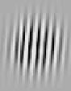
[被抑制的线索]

[目标]

[闪烁模式]
[图28.] [被知觉抑制的线索抓住的外源性注意。] [向一只眼睛呈现800毫秒的裸体图像吸引注意并促进] [后续目标检测，尽管该线索被] [向另一只眼睛显示的闪烁模式从意识中抑制] [（改编自Jiang, Costello] [et al. 2006）。]
我们不必意识到我们所注意的事物。当存在竞争模型时（源于连续闪烁抑制的竞争条件），意识知觉由在抑制预测误差方面总体最佳的假设决定。在这里，这将是预测移动和闪烁模式高度动态刺激的模型。虽然预测裸体图像的模型在这方面无法竞争，但它仍可能为特定区域诱发与精确性相关的增益。因此，尽管对被抑制刺激的区域可能存在高精确性期望，但整体预测误差景观有可能不支持该刺激的假设胜过另一只眼睛中突然闪烁的蒙德里安模式的假设。结果是裸体图像没有被选择进行意识知觉，但对其视野区域仍然存在高精确性的期望，这解释了这种效应。
我们追求了这样一个观点：注意是在层级知觉推理中对期望精确性的优化。Friston及其同事的工作表明，这是解释注意研究中关键发现的一个合理候选。此外，它很好地符合关于注意的一系列进一步发现和考虑，包括不注意盲视(inattentional blindness)、外源性和内源性注意的功能作用，以及注意的意志方面。最后，它在同一个框架内以自然的方式涵盖了注意与意识知觉之间的关系：我们可以将它们视为维持知觉推理整体统计过程的不同方式。我们再次看到预测误差方案具有相当大的统一解释前景。
关于注意的解释很有趣，因为它将注意简化为学习自然界中精确性规律的简单问题。这意味着它可以与我们开始时的知觉问题本身同等对待，尽管这是在关于预测误差方差的二阶统计推理层面上。有趣的是，正如我所论证的，注意也可能在维持知觉推理和主动推理之间的关键平衡中发挥重要作用。
通过这种方式，注意的预测误差解释帮助我们理解我们所经历的知觉波动，因为我们的心灵占有了世界，而世界也占有了心灵。
第193页。“有理由认为我们的……”我对Helmholtz的翻译，原文是”Der natürliche ungezwängte Zustand unserer Aufmerksamkeit ist herumzuschweifen zu immer neuen Dingen, und so wie das Interesse eines Objectes erschöpft ist, so wie wir nichts Neues mehr daran wahrzunehmen wissen, so geht sie wider unseren Willen auf anderes über. Wollen wir sie an ein Object fesseln, so müssen wir eben an diesem selbst immer Neues zu finden suchen, besonders wenn andere kräftige Sinneseindrücke sie abzulenken streben。”
第202页。“提到的免责声明……”在这里我解释了我的解释并不打算作为心身问题的解决方案。这一点是，尽管讲述了完整的预测误差故事，但似乎在设想一个具有预测误差最小化所有机制的生物时并不存在矛盾，该生物进行与我们相同的知觉推理——无论我们愿意指定到何种程度的自然、神经细节——但却没有现象意识(phenomenal consciousness)。当然，我们会期望这个生物是有意识的，但物理故事中的任何内容都不能确保它会是这样。这意味着意识是否是超越物理的东西仍然是一个开放的问题。这个提议的这种局限性本质上是一个形而上学关注，对我们理解意识在自然界中的地位很重要。对于我们理解意识知觉之间的关系来说，它并不那么重要
和注意力。在假设相关生物是有意识的，以及相关机制能解释它们拥有这种而非那种意识知觉（例如，丰富的知觉而非现象学上贫乏的知觉）的前提下，可以继续探索这个问题。在这些关于意识形而上学的评论中蕴含着大量讨论，更多内容请参见Nagel (1974)、Levine (2001)和Chalmers (1996)的重要著作及其后续辩论。
在情绪刺激的处理中，有明确的实证证据表明，快速的显著性处理（可能调节精确度期望的优化）可以与较慢的知觉分类分离(Vuilleumier, Armony et al. 2003)。这种分离的证据基于视觉通路的差异，在处理速度和空间频率方面，这些差异可能使刺激的显著性在其内容之前得到处理。
本章探索了上一章提出的预测误差最小化与意识知觉之间的联系。它阐述了为什么可能存在这种联系以及为什么这种联系可能很有趣的原因。然后我讨论意识知觉的一个特殊属性，即其统一性。这是我们现象学中重要但难以捉摸的部分。要解释它，至少需要处理两个方面：(1) 为什么意识统一的要素是统一的，即它们如何结合在一起；这个问题回到了第5章的绑定问题，但在这里得到了更一般的处理；(2) 为什么意识统一是单一的，即为什么只有一个总体的知觉状态包含所有其他状态，而不是更多。通过诉诸预测误差最小化，特别是主动推理的概念，对知觉统一的这两个方面提供了有趣的解释。
知觉是推断感官输入原因的工作。这一壮举是由一种预测误差最小化机制完成的，该机制在大脑中分层复制。分层推理中的预测误差最小化能够捕捉我们第一人称视角的大部分内容；它为感官属性的知觉绑定提供了空间，以及先验信念能够渗透知觉体验的方式，以及知觉可能被干扰的方式。它为理解注意力以及注意力如何与意识体验相关提供了框架。至少这些是我在前面章节中一直在论证的内容。我也在第8章中观察到，预测误差机制能够容纳的这些知觉方面，在意识知觉的典型方面列表中排名很高。因此，进一步追求这样的想法是很诱人的：虽然知觉推理本身是无意识的，但其结果是意识体验。
我发现这对于对意识本质感兴趣的人来说是一个很好的立场。我们不是带着揭示意识本质的意图出发，而是在研究一种通过诉诸内部生成模型来解决知觉问题的机制，我们发现这种机制可能恰好具有我们认为是意识特征的那些方面。Thomas Metzinger很好地捕捉到了这类想法：
看待人脑的一种富有成效的方式是将其视为一个系统，即使在普通的清醒状态下，也不断对世界产生幻觉，作为一个系统，不断让其内部自主的模拟动力学与持续的感官输入流发生碰撞，积极地对世界做梦，从而生成现象学[即意识]体验的内容。(Metzinger 2004: 52)
这种解释潜力是预测误差最小化想法如此吸引人的部分原因。但在处理意识问题时需要谨慎。如果问题是直接的——预测误差最小化是否是大脑中解释为什么某些知觉内容是有意识的而不是无意识的机制，那么答案是”不是”。要解释这个答案，我们需要回顾上一章的免责声明：没有什么理由认为我们能够解决最棘手版本的意识难题(Chalmers 1996; Levine 2001)。
但是，我们可以做其他事情来回答预测误差最小化是否是大脑中解释为什么某些知觉内容是有意识的而不是无意识的机制这个问题。我们不会解释为什么生物会有某种感受，但我们可以通过关注意识知觉的属性来回答这个问题。在”…为什么某些知觉内容是有意识的而不是无意识的…“这样的表达中使用”意识的”应该理解为”意识的，即以第一人称视角为特征、具有不可分割的丰富性、感官绑定、认知上可渗透、受幻觉和现实测试影响、与注意力等有密切关系的知觉推理”。
因此，意识感知的概念由从我们常识意识感知概念的概念分析中产生的核心描述符集群组成，并且这与关于认知心理学（寻找绑定机制）、心理物理学（解释错觉）和精神病理学（mental illness）中持续项目的相对广泛的经验信息相结合。这个想法是，我们应该探索产生这些特征的潜在机制，因为它足够接近捕捉我们在意识体验中关心的许多事物。如果我们能找到一个解释所有这些特征的机制，那么我们将在意识的本质上取得进展。
在我前面的章节中，有一个意识体验的特征我没有讨论过。这就是意识感知的统一性。预测误差最小化还有一个方面我还没有在意识感知的特征上大量应用。这就是主动推理(active inference)。本章将试图纠正这一点，因为我认为主动推理是理解意识感知统一性的关键。
当你内省时，你会发现你的心智被意识体验填满。有感觉、感知、情绪、思想的持续流动。一个显著的特征是，在任何一个时刻，所有这些意识方面都被绑定在一个统一的意识场中。当我们内省时，我们似乎从未发现两个或更多完全不同的意识流。这就是现象统一性(phenomenal unity)（‘phenomenal’意思是’意识的’，但挑选出一个特别涉及意识质性方面的特征，而不是与个人身份相关的其他统一性概念，或仅仅的表征统一性；我将专注于这些状态中感知的子集）。
Tim Bayne令人信服地论证意识总是现象上统一的。以下是他解释这个概念的方式：
[让我们说一个主体有统一的意识，当且仅当他们在相关时间的每一个意识状态都与每一个其他意识状态现象上统一。我们可以将这样的主体视为完全统一的。当主体完全统一时，我们可以说他们享受一个单一的总意识状态。总意识状态是一个只被自身包含的状态，其中一个意识状态包含另一个意识状态，如果前者将后者作为’部分’或’组成部分’包含。这个总状态将捕捉成为相关时间主体的感觉。在指定主体的总意识状态时，人们因此提供了主体特定意识状态的完整规范。相比之下，如果我们正在处理一个意识不统一的生物，那么就不会有单一的意识状态’包含’他们每一个特定的意识状态。] (Bayne 2010: 15)
Bayne论证意识在那个意义上是统一的：
[人类拥有这种意义上的统一意识有多常见？在我看来相当常见。拿你目前享受的任何一组意识状态——视觉体验、听觉体验、情感体验、身体感觉、意识思想，或其他什么。无论这些状态彼此之间可能在表征上统一到什么程度，我敢打赌，它们将彼此在现象上相互统一。你可能直到我提醒你注意这种统一性才意识到它，但] [210 The Mind]
[既然我已经提醒你注意它，我相信你在自己的体验中认识到它。(ibid.)]
他用这个来提出统一性对意识是本质的：
[稍作概括，我们可能冒险猜测，这种意义上的统一性是正常清醒体验的一个深层特征。实际上，我们甚至可能走得更远，建议这种统一性不仅仅是正常清醒体验的特征，而且还表征了其他类型的意识背景状态，如那些存在于REM梦境、催眠和各种意识病理学中的状态。人们甚至可能冒险思考，这种统一性是意识的一个本质特征——一个它不能失去的特征（至少对于像我们这样的生物而言）。(ibid.)]
这就是统一性论题，即”任何体验主体在任何一个时间点享受的意识状态都将作为单一总现象状态的组成部分出现——一个统一的’现象场’“(Bayne 2010: 75)。Bayne的策略是提出论题，诉诸内省来为其辩护（并为此辩护反对异议），然后展示所谓的不统一案例如何未能令人信服或有效地针对统一性论题。
我认为Bayne所陈述和辩护的统一性论题是真实的，并且捕捉了我们意识的一个本质特征。我将考虑预测误差最小化机制如何以及在多大程度上能帮助我们理解现象统一性。也就是说，为什么像我们这样的预测误差最小化系统应该有统一的而不是不统一的意识状态？
在开始这个任务之前，需要一些预备说明。首先是一个限制。Bayne讨论了所有意识体验的统一性；我只考虑意识感知。这是因为我们迄今为止主要考虑感知推理，而对于其他意识体验（情绪、情感、思想）在多大程度上可以通过预测误差来解释保持沉默（关于情感的尝试，参见Hohwy 2011; Seth, Suzuki et al. 2012; 以及第12章）。因此，我将讨论一个更有限的概念，我称之为感知统一性。转换到Bayne的习语，这是一个观点，即任何体验主体在任何时候享受的意识感知状态将作为单一包含性总体现象感知状态的组成部分出现。
第二个预备说明是，统一性命题，尽管被提供为关于意识的本质性内容，实际上是关于我们意识的偶然真理。对统一性没有概念压力——仅仅是先验的、对意识概念的概念分析并不导致统一性命题。积极构想真正非统一的意识状态会是什么样子可能很困难，但这似乎并非像方形圆圈那样不可能。因此，为我们保证统一性的机制可以非常特定于我们的神经机制，并允许在相对接近我们的可能世界中的生物可能无法拥有统一的意识。
这是试图定位统一性时的一个重要方面。这意味着我们可以寻找我们恰好拥有的真正因果属性，而不是任何有意识的生物必须拥有的东西，无论它居住在哪个逻辑上可能的世界中。这也意味着我们可以将感知统一性归因于我们自己，但可以拒绝将其归因于其他生物，即使我们允许它们有意识的可能性。最后，偶然性而非必然性带来更多脆弱性的风险。尽管Bayne是对的，我们实际上都总是享受感知统一的体验，但仍然可能，至少在原则上，不需要太多就能颠覆现象学的平衡并产生非统一的感知。诀窍是解释为什么这实际上似乎从未发生在我们身上。
如果一个意识理论能够解释感知统一性，这将强烈支持该理论。意识理论化仍然处于某种婴儿期，但在更发达的理论中，Bayne特别指出Tononi和Edelman的动态核心理论是最有可能容纳统一性的理论(Edelman and Tononi 2000)。正如Bayne指出的，这并不令人意外，因为这个理论是少数几个以统一性作为理论约束开始的理论之一(Bayne 2010: Ch. 10)。根据这个有趣的理论，丘脑皮质回路（即大脑皮质和更深层丘脑结构之间的循环神经通路）维持意识场，在其中感知内容得到统一。
我想对意识理论再做一步推进。激发动态核心理论的基本思想包含在Stanislas Dehaene、Jean-Pierre Changeux和Lionel Naccache及其同事正在发展的全局神经元工作空间理论中。动态核心理论建立在信息重入的概念之上，这是编码同一物体不同方面的平行皮质图谱之间信号的双向交换。根据这个理论，这有助于构建统一的感知。Dehaene和同事试图将这个想法与意识的更广泛特征（如执行监督和有限容量）整合，为此引入了全局神经元工作空间理论：
我们提出全局神经元工作空间(GNW)模型作为能够整合监督、有限容量和重入特性的替代皮质机制。[…] 全局广播允许信息得到更高效的处理（因为它不再局限于非意识回路的子集，而可以被许多皮质处理器灵活共享），并能够被语言报告（因为这些处理器包括那些参与制定语言信息的处理器）。非意识刺激可以沿着自动化或预先指导的处理路径快速高效地处理，然后在几秒钟内迅速衰减。相比之下，意识刺激的特征是它们缺乏专门过程中的”封装”，以及它们向各种语言报告、评估、记忆、规划和意图行动过程的灵活循环，在它们消失后许多秒钟内仍然如此。我们假设这种信息的全局可用性就是我们主观体验的意识状态。
(Dehaene and Changeux 2011: 210)
这个想法发展了Baars (1989)早期的意识全局工作空间理论，根据该理论，一旦内容进入全局工作空间就是有意识的，因为在那里它获得了向一系列高级认知消费者系统广播的能力，用于执行控制、运动控制、报告等。
全局神经元工作空间理论很有吸引力，因为它遵循了试图精确定位大脑中赋予感知内容一系列被认为对意识至关重要的属性（包括感知统一性）的机制的策略。它也很有吸引力，因为在一系列极其令人印象深刻的研究中，这些研究者正在提供关于什么控制感知内容进入全局神经元工作空间的经验证据。他们发现的是
人类神经影像学方法和意识获取过程中的电生理记录，在各种范式下，一致揭示了相关感觉活动的晚期放大、beta和gamma频率的远程皮质-皮质同步，以及大规模前额叶-顶叶网络的”点燃”。(Dehaene and Changeux 2011: 209)
例如，在一项使用颅内脑电图（直接测量大脑皮质表面电活动）的研究中，Gaillard及其同事比较了对遮蔽视觉刺激的意识和无意识处理，观察到一种神经元活动模式，该模式”符合全局工作空间模型，该模型假设一旦表征被意识获取，一个广泛的分布式网络，特别涉及前额叶皮质，就会点燃并广播其内容”(Gaillard, Dehaene et al. 2009: 486)。
这里的关键问题是什么是”点燃”，为什么某些内容会点燃而其他内容不会。对这个问题的好答案也应该帮助我们理解为什么知觉体验是统一的而不是分散的。据我所见，全局神经工作空间理论的支持者主要在描述性意义上使用”点燃”，来捕捉前额叶和顶叶皮质活动快速传播的特征，这是意识知觉的标志。然后如上述引文所述，这正是如果工作空间理论正确我们应该期待的激活模式。但请注意，这种描述性方法尚未解释点燃是什么或为什么它应该维持知觉统一。
这种描述性方法并不能真正解释什么是点燃，也不能说明为什么它应该维持知觉统一。
Dehaene从证据积累的角度对点燃提供了更实质性的解释：
意识获取将对应于分布式全局工作空间内证据积累跨越阈值，这是一组具有长轴突的递归连接神经元集合，能够整合并回传来自多个大脑处理器的证据。在无意识处理过程中，证据将在专门的子回路内局部积累，但无法达到全局点燃所需的阈值，因此无法意识报告。(Dehaene 2008: 89)
为感觉输入的两个或多个竞争解释中的一个何时积累了足够的支持证据设定阈值，当这种情况发生时，它进入全局工作空间。这个提议在精神上与使用贝叶斯概率工具来解释知觉的想法相近（尽管严格来说它产生的预测与预测误差方法不同，见Hesselmann, Sadaghiani et al. 2010）。
让我们尝试将此转换到预测误差最小化框架中。当关于世界的假设比其竞争者更能解释输入，因此达到更高后验概率时，就实现了全局点燃。什么算作更能解释输入受到噪声和不确定性预期水平的调节。总的来说，这就是设置点燃阈值的因素。点燃后，知觉内容可供整个大脑的消费系统使用，可以指导行动和决策制定，并可以内省报告。因此，它接近于在上一章关于注意力及其与意识关系的讨论中所讨论的意识知觉方式。
这个提议很有吸引力。它不仅很好地契合了全局神经工作空间理论，对消歧和不确定性降低推理的关注重复了我们关于绑定和认知渗透讨论中的主题。然而，这似乎还不能以令人满意的方式完全解释知觉统一。当然，就全局点燃与某种重入(re-entrance)相关联而言（参见动态核心理论），它可以被声称能解释知觉统一。在他关于自我的广泛工作中，Metzinger考虑了一条与此相符的推理线：
原理是从高级到低级区域的几乎连续的反馈循环创造了一个持续的循环，一个嵌套的信息循环流，其中几毫秒前发生的事情被动态映射回现在正在进入的内容。以这种方式，即时的过去持续为现在创造背景——它过滤现在可以体验的内容，[…] 如果我们将这个想法应用于大脑对整个世界的统一描绘，那么意识体验的动态流就表现为大脑对当前情况先验知识的连续大规模应用的结果。(Metzinger 2009: 30)
这很吸引人，但忽略了解释的概率方面，这对于首先理解点燃是至关重要的。在我看来，需要的是统一性与点燃的概率解释之间更实质性的联系。我们需要知道为什么从知觉推理的角度来看，统一性会出现。这将提供一个关于意识知觉，特别是知觉统一的更深入、更令人满意的提议。下一节将尝试这个解释任务。
点燃的想法很重要，因为全局主导暗示统一性，我们必须将这个想法置于预测误差最小化机制的背景下。首先要问的问题是，当最能解释感觉输入的假设被选择时，为什么应该发生点燃？
我们在前面章节中描绘的预测误差最小化图景聚焦于误差最小化的两个方面。一方面是感知推理，另一方面是主动推理。在各个要点上，我都提到了这两个过程之间的交替。重要的是要同时进行这两个过程，并在它们之间取得正确的平衡。我认为点燃反映了从感知推理向主动推理转换时发生的情况，因此意识感知特别与主动推理相关。我希望证明这为预测误差术语中的感知统一性提供了一个合理的候选解释。
像我们这样的生物维持着一个感知层级结构，它模拟了一个具有深层因果结构的世界。在找到一个良好的假设，其预测能够有效地最小化对惊讶的预测误差界限后，接下来要弄清楚如何进行主动推理是一件非平凡的事情。也就是说，对世界的变化或一个人在其中位置的变化可以与关于世界的偏好假设相互作用以最小化预测误差的方式有很多种。智能体的轨迹本身就是其自身感官输入的隐藏原因，当智能体与环境互动时，这种轨迹可能以非线性方式演化。因此，在给定能动性的条件下对感官输入流的预测将涉及感知层级结构多个层面上的许多假设和参数。
这样描述的话，从感知推理转向主动推理的情况需要类似全局工作空间的东西。这里有一个日常例子来说明这一点：你感知到面前有一家咖啡馆，并体验到了口渴。
现在可以通过从咖啡馆买些东西喝来最小化预测误差，但也可以通过等到回家后喝杯水来最小化预测误差。一系列考虑因素可能使这成为一个困难的决定（对我们这些稍微有点神经质的人来说）：是否值得花这个钱，如果去咖啡馆会不会摄入过多咖啡因，在咖啡馆遇到友善社交互动的可能性有多大，如果被耽搁会发生什么等等？如果你和同伴在一起，你可能需要口头汇报其中一些考虑，或者如果你预计会迟到，你可能需要给某人打电话。对于这些考虑因素中的每一个，都有一个复杂的计算，涉及虚构行动和跨多个时空尺度的反事实预测误差成本。因此，这种广泛的场景生成对主动推理很重要。也就是说，主动推理似乎需要将选定假设点燃到一个全局空间中，在这里预测可以在给定某些行动的条件下被下级（消费者）系统评估。如果我们根本没有能动性——如果我们没有办法响应预测误差来改变我们采样世界的方式——那么似乎就不需要点燃到这样的全局空间中。简单地说，我们一次只能做一件事，这件事是由我们关于我们正在做什么的单一假设所规定的。这必然需要在整个层级结构中内部统一的预测——在全局意义上。
那么提议是，将关于世界的一个假设确定为最佳预测误差最小化器会导致点燃，因为系统将使用这个假设来为其作用于世界时感官输入流的预测提供信息。点燃将是系统在给定特定上下文的情况下，对假设的后验概率感到满意（或者用Dehaene的术语来说，当积累了足够的证据）的时间点，以保证转向主动推理和产生介导行动的下行本体感受预测。
这为阈值思想——点燃——对意识呈现的核心地位提供了理由。需要一个阈值来确保从感知推理向主动推理的转换，即在假定世界是某种样子的情况下，模型被固定并最小化预测误差的点。点燃与全局广播相伴是有意义的，因为弄清楚在给定行动的情况下如何最小化预测误差是一项复杂的任务——这项任务需要沿着多个维度生成预期的感官后果流。当然，阈值的设定方式将高度依赖于上下文：计划的行动及其显著性很重要，预测误差的预期精度以及对假设及其竞争者的信心也很重要。
我们甚至可以推测，这个全局的、多模态假设之所以是有意识的，是因为有意识作为当前为主动推理而固定的假设的提醒。这将与Gregory的早期观点产生共鸣，即意识（或qualia）“标记现在”（另见Metzinger 2004: 127; 188）。这里的要点是，需要标记现在不仅是因为，正如Gregory推测的，假设本质上是无时间的，或者因为现在潜在地是危险的，而是因为系统需要知道哪个假设当前正在规定行动。
通过这些，我提出了一种将预测误差最小化与意识体验的点燃特征联系起来的方法。它们可以在主动推理的考虑下相关联。现在回到最初的问题：为什么存在感知统一性？具体来说，为什么固定在一个模型上并开始为主动推理生成策略总是伴随着统一性？
统一性论题认为，知觉体验从不会在不同的现象领域之间分裂：总是只有一个整体的现象领域包含你所拥有的任何有意识的知觉状态。“现象领域”这个概念并不容易准确和明确地界定，尽管从内省中提取的直觉想法足够吸引人。然而，正如我接下来将建议的，有理由期待主动推理会带来某种统一性。
在这方面要提出的第一点是，主动推理以因果方式将表征状态联系在一起。这是因为主动推理依赖于对世界事态进行干预的感官后果，而干预对于提取因果信息而非仅仅是联想信息至关重要。这是当代因果关系理论中的核心原则之一（见Pearl 2000：第1章）。如果完全没有主动推理，那么我们的假设之间的联系会更加松散；它们会被推测但永远不会得到验证。因此，它们不需要将世界的事态呈现为除了统计意义上（充其量因果推理是偶然的）之外有任何关联。这在某种程度上让我们期待统一性，因为更深层的因果结构能够跨越事件进行概括，在这种意义上会更多地实现统一。当我们内省基于具有深层因果结构的假设的知觉时，它看起来更统一，这似乎比我们内省基于仅仅是联想假设而没有因果信息的知觉更有可能。
然而，这种通过因果概括实现统一性的概念还不能解释关键概念，即只有一个总体的因果结构假设。要解释这一点，我们需要诉诸于我们在主动推理中最小化预测误差的可能性。这里的想法很简单：你不能同时使用两个或更多不同的、竞争的因果假设作为采样世界以最小化预测误差的基础。在主动推理中，你必须只依靠一个假设。两个人可以依靠两个竞争的假设，因为他们可以根据各自假设所要求的不同方式选择性地采样各自对世界的假设。但是一个人被限制在根据一个身体轨迹产生一个输入流来建模对世界的干预。这种限制与我们在第1-2章中排练的贝叶斯大脑概念很好地吻合——你只能在竞争假设中选择一个假设——你不能基于相同的证据同时接受零假设和备择假设。
这可以通过双眼竞争场景来说明。如果我们有两个个体，向一个人展示面孔图像，向另一个人展示房屋图像，那么在某种琐碎的意义上存在不统一的知觉。一个人体验到面孔，另一个人体验到房屋。尽管这听起来是个琐碎的案例，我们可以这样解释”不统一”：一个人可以基于”这是一张面孔”的假设选择性地采样世界（通过眼球运动），另一个人可以基于”这是一栋房屋”的假设进行采样。现在将图像呈现给同一个个体的两只眼睛，如双眼竞争中所做的那样。这里有一个统一的现象领域，其中面孔和房屋知觉整齐地交替出现。对此的拟议解释是，这个单一个体不能基于”这是一张面孔”的假设选择性采样，同时基于”这是一栋房屋”的假设进行采样。在主动推理中只有一套眼睛可以移动，因此在任何时候只能固定一个因果假设（要么是”感官输入由面孔引起”，要么是”感官输入由房屋引起”）用于主动推理。
这就是我们如何在预测误差最小化方案中解释知觉统一性的。知觉是统一的，因为它基于因果结构层级模型中的假设，并且存在知觉统一性（即只有一个假设），因为像我们这样的生物中主动推理的本质阻止了在任何时候使用超过一个假设作为选择性采样的基础。
如果这种知觉统一性的解释是正确的，那么我们应该期待随着主动推理逐渐松动其控制，统一性会逐渐减弱。现在这不是一个容易通过实验测试的预测。我认为我们在任何现实的实验室情况下都不能完全摆脱主动推理，所以我们可能不应该期待任何对真正不统一的内省（如Bayne也坚持的）。确实，当我们深深下降到更非活动的推理中时，可能不仅仅是统一性，连意识本身也会抛弃我们——如果没有行动，那么就没有点燃的理由。但也许在某些条件下，当主动推理开始受到抑制时，我们对统一性的信心应该开始动摇。似乎有一些证据支持这一点，再次来自双眼竞争的研究。
双眼竞争可以通过对两个刺激之一的内生注意力来调节但不能消除。一个人越注意地探索一个刺激，它在知觉中往往越占主导地位。我们将内生注意力理解为一种主动推理，所以如果减少主动推理预测更多不统一，我们应该期待更少的注意力带来更少的竞争。这似乎确实发生了。在一项双眼竞争研究中，Zhang和
同事们将参与者的注意力引导到别处，发现交替现象似乎停止了（Zhang, Jamison等，2011；另见Brascamp和Blake 2012）。他们得出结论认为注意力对于竞争是必要的，这是相当合理的。在预测误差框架内，我倾向于这样解释：当注意力被撤回时，对刺激的主动探索减少了，因此订阅两个竞争性因果假设中的一个的迫切性降低了，两个刺激都开始被容纳。现在这并不明确是不统一的情况，因为很难知道这项研究中的参与者是否不是拥有不统一的知觉领域，而是只是采用了一个对刺激的融合假设——也就是说，一个忽略两个刺激因果结构的统一假设。当然，问题在于要确定是否存在知觉不统一，需要让研究中的参与者注意刺激，更好地报告它们，这将恢复主动推理。然而，这提示我们，当主动推理（这里以内源性注意的形式）被阻止时，对统一假设的强烈冲动以及因果不同知觉之间的时间交替会减弱。
全局工作空间的一个特征是工作空间中的知觉内容可用于内省报告。这种对意识体验的报告是主动推理中的一个时刻，从某种意义上说，参与那种语言或按键行为就是参与预测误差最小化。这意味着当个体被要求内省报告某事时，会自动产生对知觉统一的偏见。因此，如果我们想通过抑制主动推理来发现不统一的实例，那么最好不要获取内省报告——但当然这样就很难知道研究参与者体验了什么。这似乎是一个困境。
另一项竞争研究与这个明显的困境相关。Naber和同事们让参与者暴露于向相反方向运动的刺激之间的竞争中，要求他们报告所体验的内容，同时记录眼动（Naber, Frässle等，2011）。他们的一个因变量是视动性眼震，即当眼睛跟随移动物体时的快速来回运动（比如当一个人看向车窗外时）。他们观察到视动性眼震很好地跟随了报告的知觉。当受试者报告看到向左运动时，视动性眼震将是观察到向左运动的特征。这本身就是主动推理的一个例证：假设预测向左运动，眼睛相应地移动，在头部运动知识的约束下对世界进行选择性采样。接下来参与者不被要求通过按键报告他们的体验，而是只在竞争期间记录眼动。这里的推理是眼动已被证明是体验知觉的可靠指标，因此可以研究竞争
而不会因为内省报告体验内容的要求而混淆测量。结果发现，在这些更被动的条件下，两个不同方向视动性眼震之间的交替变慢了。因此，当参与主动推理和主动报告我们体验的压力较小时，似乎较少需要维持对世界的不同假设。如前所述，很难明确确定这种情况下存在不统一，但这提示当不需要报告时，选择一个或另一个假设的统一要求似乎会下降。
这些双眼竞争研究与这样的观点一致：知觉统一是由主动推理中对明确选择性采样的需要所推动的。随着采样要求的降低，仅使用世界的一个模型的倾向也随之降低。
尽管我们对意识统一的理解已经取得了进展（见Bayne 2010），但它仍然是一个难以理解和澄清的概念。我们对它的大部分把握来源于相对模糊的内省。我的解释试图为统一知觉体验的东西提供相当具体的机制，即层次因果结构，以及使知觉统一成为统一的东西，即主动推理的要求。对我来说，这很有吸引力，因为它不仅描述了统一，而且解释了为什么我们应该期待存在统一。
从更广泛的意识科学角度来看，这一提议与Dehaene和其他人提出的全局神经工作空间理论很好地契合。它带有这样的转折：进入全局工作空间的内容是主动推理所必需的。这些是对世界的表征，针对我们在世界中的能动性建模，产生预测误差从而引发行动。这意味着有意识知觉、统一和行动之间存在深刻联系。
这与Susan Hurley的工作相关，她在连接意识统一与行动方面做了很多工作。她指出，将知觉作为系统输入、行动作为系统输出的二分概念是无效的。相反，提出了一个更动态的知觉和行动概念：
[意识统一既有规范性的个人层面，也有亚个人层面。这些层面之间的关系可以通过密切相关但更一般的视角观念来探讨：相互依赖]
感知和行动的相互依赖性可以通过它们对个人层面以下动态奇点的共同依赖来解释。这种统一的个人层面以下方面不支持心智与世界之间或感知与行动之间存在明确的因果边界。此外，它可以为现代哲学中心智的内向退缩提供解药。在个人层面，自我并不隐藏在感知输入和行为输出之间的某个地方，而是重新出现在开放的环境中，体现并嵌入在世界之中。
（Hurley 1998: 3）
这种观点中的很多内容与预测误差最小化理论能够提供的内容相当吻合。在我看来，Hurley是正确的，我们无法理解统一性，除非我们考虑到行动和感知协同工作的方式。特别是，正如我在上面也一直强调的那样，如果没有能动性，就不需要统一性。预测误差理论为为什么当感知和行动协同工作时应该出现像奇点这样的东西（也就是说，我认为是统一性）提供了一个原则性解释，即为了最小化预测误差。
从预测误差最小化的角度来看，Hurley方法（以及延伸到具身认知阵营中其他人的方法）的具身和外在主义方面吸引力要小得多。大脑中维持的世界生成模型的预测是自然的内在镜像，它重现了世界的因果结构，预测误差是相对于模型的预期状态最小化的。同样，预测误差统一性理论的起点是间接性：从颅骨内部，大脑必须推断其感觉输入的隐藏原因，这关键地依赖于与生物体身体的互动。结果表明，这种推理需要感知和行动的密切协同工作，但这是因为推理任务本质上是间接的。因此很难摆脱Hurley所称的”传统内容观点[产生]关于世界知识如何可能的怀疑性担忧：为什么我们关于外部世界的信念不能是由疯狂科学家操纵我们大脑产生的狂妄妄想？“的怀疑（Hurley 1998: 8）。
这种怀疑对预测误差理论来说是不可避免的（在第8章中已经承认并搁置）。选择和塑造参数确实发生在与世界的密切因果交流中，但这仍然是一个解释不断变化但经常可预测的感觉输入模式的推理过程。感觉输入屏障后面的是隐藏原因，从某种意义上说，它们必须在因果推理中被揭示。在预测误差方案中，对行动的诉求归结为对不同类型感觉输入模式的推理诉求。如果疯狂科学家是所有感觉输入的隐藏共同原因，我们将无法知晓，除非她对感觉输入做出独立的因果贡献。疯狂科学家在跟上我们在主动推理中对世界的选择性采样方面会有困难，但原则上这
只是投射足够接近我们在感觉”屏幕”上期望的感觉数据。
在我看来，最好接受预测误差最小化框架的间接性含义，而不是试图将其强制塑造成具身和外在主义的形状。也就是说，最好承受激进怀疑主义的风险，而不是背叛感知和行动都是对感觉输入统计特性的推理这一核心思想。
最终的图景是，我们对世界的把握——我们镜像其因果结构的方式——受制于我们在大脑内部拥有的推理工具。这给其表征和自我带来了某种脆弱性，这将是下一章的重点。
我们试图从预测误差最小化的角度解释感知统一性。解释始于注意到有意识感知属于全局神经工作空间，该空间容纳被认为足够好用于主动推理的感知内容（或内在模型下的假设）。主动推理需要优先考虑世界的唯一假设，这提供了统一性，确保永远不会有超过一个包含性的感知场。有意识场本身的统一感是通过内在模型的因果而非仅仅是联想性质来解释的。
尽管这种理论依赖于个体在世界中的行动来解释关于感知结构的事实，但它实际上巩固了心智和行动的间接推理主义观点。这是我将在下一章探讨的主题。
第208页。“[有意识感知的这种概念]…”我提出了一种解决意识问题而不陷入难题的方法。我提出的观点本质上是一种经验增强的常识功能主义；它在Jackson的核心属性列表中添加了经验信息，这在第8章中讨论过。
第211页。“[这将有力地证明]…”Tononi根据称为信息整合的信息理论量发展的动态核心意识理论也很有吸引力，与感知的概率理论并不完全格格不入（Tononi 2005）。
222 心智
第211页。“[我想进一步提出]…”这个全局神经工作空间是
[用神经活动和连接性来描述：] [”][我们的提议是皮质锥体细胞的一个子集]
[具有长程兴奋性轴突，特别密集地分布在]
[前额叶、扣带回和顶叶区域，连同相关的丘脑皮质]
[环路，形成一个水平的] [’][神经工作空间][’] [，互连多个]
[专门化的、自动的和无意识的处理器 [] [. . .] []。意识内容被]
[假定由GNW神经元一小部分的持续活动编码，]
[其余部分被抑制。通过它们众多的相互连接，GNW]
[神经元放大并维持特定的神经表征。GNW神经元的长程]
[轴突然后将其广播到大脑范围内的许多其他处理器] [”]
[(Dehaene and Changeux 2011: 210).]
[. [][”][我们所描绘的图景] [. . .] [”][] 声称是主动推理]
[需要类似点燃的东西，因为主动推理需要促进一个]
[假设作为最佳预测误差最小化器，以及作为]
[长期预测输入的假设基础。这一观点在我看来与]
[Friston、Breakspear和Deco (2012)的最新工作一致，他们解释了与]
[点燃相关的知觉切换，即系统如何访问具有]
[良好预测误差最小化的状态，但随后（因为这样的状态根据定义具有]
[平坦的预测误差景观）使这些状态失效，这使得（重新）点燃和]
[访问新状态成为可能。这与我在第4章和第7章中讨论的]
[在知觉推理和主动推理之间转换的必要性有关。]
[. [][”][这些双眼竞争的研究] [. . .] [”][] 预测误差框架是]
[灵活的，统一性可以在其中以其他方式解释。Wanja Wiese和]
[Thomas Metzinger (Wiese and Metzinger 2013)提出知觉内容的]
[统一发生是因为不仅个体知觉过程必须预测]
[世界中发生的事情，它们还必须预测其他知觉过程]
[知道什么。如果所有过程都在这样做，那么它们将表征的部分内容是]
[它们自己是如何被表征的。这创造了一系列嵌套的表征。]
[这旨在用全局自嵌入（或自表征）的现象学]
[来解释意识统一。问题当然是为什么这种相互表征]
[在预测编码的叙述中是必需的。Wiese和Metzinger提出]
[存在这种嵌套的相互仿真，因为它促进了个体表征的]
[质量或可靠性，并且因为它可以促进检验个体表征]
[如何很好地结合在一起，它们如何连贯。我认为在如何]
[充实这些想法时必须谨慎。首先，可靠性问题就是]
[精度优化问题，我们已经看到这是二阶]
[统计推理的问题，不需要知道均值代表什么。]
[因此，确保可靠性，至少在这个意义上，不要求嵌套表征]
[内容本身。其次，个体表征的连贯性与]
[感觉整合问题相关，我们已经看到这是在自上而下]
[因果期望下的精度优化问题；这个叙述显然]
[不适合嵌套仿真的概念。然而，]
[也许这些想法可以用不同的方式阐述，以避免这些初步]
[反对意见。这个建议有一些非常吸引人的地方，因为]
[它意味着大脑从共同知识中受益：不仅个体]
[表征必须对环境中的相同事物有相互了解，]
[它们还必须有] [共同知识][—][即知道彼此对]
[各自所知的了解，如此等等。在独立个体之间，这种共同知识有着]
[充分描述的认识论、能动性和实践推理益处]
[(Chwe 1999; Chwe 2000)。因此，类似的过程]
[在人脑内部发生并不是不可想象的，这是一个相当美妙的想法，]
[就像在人脑之间发生的过程一样。我在]
[本书的最后一章中简要探讨了这个主题。]
在本书的第三部分，预测误差最小化方案在关于心智本质和结构的困难主题背景下被探讨。第9章考虑了注意的本质及其与意识知觉的联系。第10章继续意识主题，发展了知觉统一的解释。该章以间接性的注解结尾，即世界内部模型下的假设如何从根本上受到我们概率推断感觉输入隐藏原因能力的约束。
Marius Usher很好地表达了这种基本的推理主义困境：“嘈杂的信息是动物和人类知觉生活的常态，他们需要尽力而为。” (Usher 2001: 325)。我们善于’尽力而为’，但这是因为世界是一个统一的地方，友好地提供可靠的统计推理。这种可靠性掩盖了一个潜在的脆弱性，这种脆弱性源于我们被困在颅骨内，只能依靠感觉数据的事实。
本章探讨间接性和脆弱性的这些更微妙的方面。我特别关注对我们看似稳固的关于自身身体本质的背景信念的挑战。在确立了我们作为根本脆弱的预测误差最小化机器这一非常一般的观点后，本章接下来探讨一些关于我们如何在感知中与世界相关的挑战性概念。人类心智的最终图景既令人不安又令人安慰。
这里有一个非常稳固的感知观念。这是曾经的经典观念，认为感知以自下而上的方式产生，感觉信号被分析、绑定和呈现。在这一图景中，我们是感觉输入的被动接收者，
自然的脆弱镜像 [225]
而不是积极尝试预测输入，更不用说试图通过改变世界来以自我实现的方式改变输入。在这一图景中，我们只是感知世界”告诉”我们要感知的东西。为了感知世界，我们不必试图使用先验信念来解释它”告诉”我们的内容。当然，这是对由自下而上、特征检测理念驱动的大量研究的一个漫画式描述。但它从根本上与预测误差最小化理念形成鲜明对比。
这种对比体现在自上而下和自下而上处理的功能角色的逆转中，如第3章的图7所示。自下而上的信号仅仅是对基于大脑内部模型生成的查询的反馈。大脑中自上而下的、向后的消息不是对感觉处理的反馈，以某种方式调节它，相反，它们是预测信号，当成功时体现感知体验。有了这一点，世界”告诉”我们它是什么样子的稳固性开始消失。世界只是在某种意义上告诉我们事物，即它为我们向它提出的问题提供答案——它不会将自己强加给我们。感知取决于我们问什么，此外，我们提问的能力受到这样一个事实的约束：世界具有我们可以信任的统计规律性。
这种与世界不太直接的接触似乎比更直接（但可能行不通）的自下而上感知概念是一个更脆弱的过程。当然，感觉上我们在生活中世界稳固地告诉我们它是什么样子的。我们看到事物，撞到它们，彼此谈论它们，等等。但所有这些都产生于一个持续的、动态的假设生成和修正过程，以及在世界中预测和机动的过程。如第7章所示，这个动态过程依赖于同时正确地获得许多不同的认知检查和平衡。不需要太多的干扰或次优的预测误差最小化，世界的整体模型就会走上错误甚至病理的道路。
Lars Schwabe和Olaf Blanke对体外体验的计算研究很好地说明了这一点（Schwabe and Blanke 2008）。他们假设前庭处理有助于体外体验。这个想法是运动/位置的自上而下期望与来自前庭耳石的自下而上信号之间的不匹配可能导致运动错觉（耳石是内耳中对运动动力学敏感的小毛发）。来自耳石的信号在例如头部处于特定位置时静止和头部处于不同位置时向前加速之间可能是模糊的（见图29）。如果其他可用于对感知运动进行现实检测的模态变得无信息（这可能在睡眠期间或实验室环境中发生），那么即使身体实际上是静止的，也可能最终体验到加速。因此，“对其他最优[贝叶斯]处理的’错误’输入可能导致诸如体外体验的错觉”（Schwabe and Blanke 2008: 7）。意识到自己躺着不动但却在加速可能是触发一些体外体验的部分原因（“我一定是在离开我的身体”）。

这里的关键点是，在正确的情况下——例如，睡觉时的特定头部位置——很少的巧合就足以引发感知推理的根本变化。情况的脆弱性被Schwabe和Blanke简洁地概括：
因此，大脑中与身体相关的多感官信息的在线处理更像是持续的拼图解决，其中正常体验的具身自我定位只是一个脆弱且仅暂时稳定的解决方案，这是一个自然适合感官信息处理的贝叶斯方法的设置。（2008: 8）
这是我将在本章中寻求描述的整个感知系统的这种脆弱性。尽管存在于我们自己身体中的体验是大多数人一直都有的，但在某种意义上，它是”一个脆弱且仅暂时稳定的解决方案”。
除了预测误差最小化机制似乎容易被”错误”类型的输入严重误导之外，它似乎还有一种倾向，即高效地最小化大量预测误差，而不是以直接促进真理追求的方式来最小化。这一点在橡胶手错觉和橡胶手错觉的全身版本中表现得非常戏剧性。

在这些错觉中，个体面临着大量低水平本体感受、触觉和视觉感官输入的轰炸。它需要相应调整假设参数并预测输入将如何演变，部分基于对身体本质和世界统计规律性的先验信念。系统没有坚持已知的真相（“那个橡胶物品不是我的手，所以在那里不能感受到触觉”），而是选择任何能够最高效地通过感知层级减少预测误差的关于世界的替代假设。事实上，正如我们之前看到的（第7章），即使感官输入必须在关于手指隐形延伸的明显虚假的因果假设下被解释掉，这种情况也会发生，
皮肤下的相对磁铁等等。如果这种扭曲的感官输入变得更加慢性和不可逃避，那么我们有理由认为我们的先验信念将随之改变，我们会变得妄想。
因此，我们似乎更重视对感官输入的实际抑制，而不是坚持我们所知道的。如果我们简单地回到用统计物理学术语解读预测误差最小化的观点——即有机体试图在熵的冲击下维持其完整性（参见第2-4章；第8章），这就说得通了。如果坚持真实的长期先验信念意味着有机体完整性在更快的时间尺度上被大量无法解释的高精度感官输入轰炸而被破坏，那么坚持真实的长期先验信念可能是无用的。我们可以认为自己很幸运，因为对我们大多数人来说，世界大体上是合作的，在大部分时间里提供可靠的统计规律性。我强调这是对”我们大多数人”而言，因为对于令人惊讶的大量患有精神疾病的少数人来说，世界确实会破碎。
那么，使感知脆弱的是抑制尽可能多层次预测误差的需要，以及我们只能使用大脑内部资源来做到这一点的事实。这种脆弱性可能很难承认，既因为对我们大多数人来说，感知在一生中似乎都相当强健，也因为在预测误差最小化方案中，感知推理本身受到世界提供的可靠统计规律性的监督。但如果我们忽视感知的根本脆弱性，我们就无法理解感知的本质。这与忽视茶杯的脆弱性而未能理解茶杯的真实本质没有太大区别，即使它实际上从未破碎。
在下一节中，我将寻求将这种脆弱性概念置于对感知心智-世界关系的理解之中。
预测误差最小化机制表明感知根本上是脆弱的。它不是由来自世界的感官输入以自下而上的方式直接决定的。相反，它在某种意义上是间接决定的。正如Metzinger在谈论他自己的理论时所说，该理论与我们这里考虑的观点共享这种间接性：“当然，外部世界确实存在，知识和行动确实将我们与它因果联系起来——但知识、行动和被联系的意识体验完全是内部事务”（Metzinger 2009: 23）。
在我们的观点中，这体现在这样的想法中：感知内容保持在内部模型中，这些模型总是寻求先于事件，并且在摆脱预测误差的需要下行动。然而，当应用于心智与世界的关系方式时，“直接”和”间接”的概念并不十分清晰和明确。
认为感知是”间接的”危险在于，它暗示回到一种过时且不可持续的图景，即我们是感官数据的内部小人观察者(Hohwy 2007a; Clark 2013)。这种图景与预测误差最小化不相符，因为这个框架既不假设也不需要同时拥有感官数据和内部观察者的额外步骤。
因此，仅仅声称感知关系是直接的，或声称它是间接的都是不令人满意的。对这种情况的正确回应不是强迫在它们之间做选择，而是试图重新构想与世界的感知关系，这样我们就不必首先在感知是”直接”还是”间接”之间做选择。相反，我们应该能够保留辩论双方的真理成分。
预测误差最小化方案似乎偏向于间接性，因为它基于内部模型生成预测。但同时，预测误差最小化将我们锚定在事物的因果秩序中，这体现在感知推理受到通过感官给出的预测误差监督的方式中。正是这种对感知关系的因果构想，我想要抓住。
我是这样思考的：生成模型的隐式反转，发生在抑制预测误差的整体过程中，这意味着大脑变得像世界因果结构的镜子。这是说明预测误差最小化机制必须重现世界因果结构这一观念的一种方式（这是本书第一部分描述的Friston启发机制的要点）。对于镜子本身的状态，而不是我们中某个人看镜像时的状态，说这些状态直接或间接表征世界是没有明确意义的。镜子状态与世界状态的关系，就像因果关系那样直接，即镜子的状态凭借来自世界事态的因果输入而存在，并且承载着关于那些状态的信息。但这种关系也像因果关系那样间接，即因果相关项是不同的存在，原则上可以在不相互关联的情况下存在。如果将这种对实际镜子的简单描述转移到预测误差最小化的情况，知觉状态与世界状态的关系就像因果关系那样直接，同时也像因果关系那样间接。
从这个角度看，接受选择知觉心智-世界关系是直接还是间接的挑战是一个错误。相反，知觉是间接的直觉通过其对先验和生成模型的依赖来推断世界的隐藏状态而得到体现，而知觉是直接的直觉通过知觉推理查询并随后由因果作用于其上的感官输入引导的方式而得到体现。理解知觉关系在于弄清楚
这两个方面之间的关系。很大程度上，这就是第二部分章节所关注的。我发现这种对心智-世界关系因果概念的呼吁很有说服力，因为它将我们完全置于世界中状态和事件的整体自然因果关系网络中的元素。
可能有人反对说镜子类比不吸引人，因为它暗示知觉是一个被动的、接受性的过程，远离了我们一直努力描绘的主动假设检验机制。这种抱怨有一定道理：知觉是高度主动的，而镜像反射不是。然而，镜子类比传达的被动性很重要。在一个非常根本的意义上，我们发现自己最终处于不令人惊讶的状态：给定我们是谁，由我们期望占据的状态（模型）定义，我们不断被惊讶（意外状态）推动，最终更接近那些期望状态。在这个过程中，模型被塑造成重现通过感官接收的世界。这本质上是一个被动和保守的过程，预测误差推拉着我们对世界的知觉。从长远来看，所有推理活动都整合出不确定性，使我们成为更被动构想的模型。正是在这个意义上，我们只是因果关系网络中的棋子。
这些都不否认人类在文化和技术中的互动在帮助预测误差最小化方面发挥着巨大而深度整合的作用（见Roepstorff, Niewöhner等人2010; Clark 2013），也不否认我们从事局部流动性、探索性行为以暂时的预测误差成本对我们有益（Friston, Daunizeau等人2010）。这些主动的、非保守元素的基础是我们做这些都是为了远离令人惊讶的感官输入，从而维持有机体的完整性。这个过程针对定义我们的那种输入和低惊讶条件进行优化，因此说输入或输入处理方式的轻微干扰就能使知觉发生戏剧性改变似乎是合理的。
在这种被动镜像下，心智-世界关系的因果概念很好地捕捉了脆弱性的概念。因果关系的直接性意味着基于我们内部模型产生的假设通过预测误差信号可靠地被世界中的事态引导。然而，因果关系的间接性使我们预期这种可靠的引导关系在条件变化中不会是稳健的。因果关系的概念中没有什么决定了所讨论的机制在其正常操作条件的各种排列下会继续接近正常工作（由期望状态定义）。一些因果机制非常脆弱，即使它们在限定的条件集合内确实可靠地工作。不需要太多就能打乱它们。我一直在论证心智在这个意义上是脆弱的。就假设检验而言，这个观念是即使我们通过进化和神经发育背负着一个模型（m，我们的大脑），在该模型下仍有令人惊讶的广泛假设（h）范围可供选择。当处于挑战性情况时，选择的假设可能产生根本改变的知觉。我怀疑这种脆弱性难以承认的原因是我们太习惯于信任感官，以至于没有意识到它们潜在的脆弱性。
换句话说，心智是一个真理追踪器，它是一种被优化的机制，能够可靠地复现世界的结构。然而，这种机制的本质是，当其正常条件被干扰时，比如遇到相对于有机体预期状态来说令人惊讶的输入时，它就不再能够可靠地复现世界。当机制移出其狭窄的舒适区时，它在坚持已学习的真理方面表现得不是很好。从这个角度来看，心智的真理追踪性质显得相当偶然——它是我们必须自我组织的方式的一个功能，而不是本身的一个目标。
接下来，我将通过对我们身体感知的研究来证实脆弱性这一概念。在本章最后，我将转向情境性和具身性的相关问题。
[贝叶斯身体]
有一些东西看起来非常稳健：我们感知身体及其与世界互动的方式。感知锚定在身体中，而身体显然是能动性的关键成分。毫无疑问，身体塑造了我们感知和互动世界及彼此的视角依赖方式(Gallagher 2005)。奥维德式的变形对我们来说是一种极不可能的状态。很难看出感知脆弱性如何能够感染这种稳定的身体感和其在感知推理中的核心作用。然而，最近的研究强烈表明，干扰我们的身体感知是令人不安地容易。
这项研究始于橡胶手错觉的扩展，强烈强调了我们身体感的脆弱性。回想一下，在橡胶手错觉中，在你能看到的橡胶手和你自己隐藏的手上同步的触摸，会诱发这样的错觉：这种触摸是由实验者在明显是橡胶手上的可见手传递的。这种错觉的惊人之处在于，它违背了你对身体必须具有的一个非常强烈、根深蒂固的先验信念，即当你能感受到触摸时，它是传递到你自己的身体上，而不是传递到本应是无生命物体的东西上。
在橡胶手错觉中，这种关于身体意象的先验信念被惊人地迅速出卖了。我一直在暗示，驱动这种出卖的是我们摆脱高精度预测误差的倾向。就好像
自然的脆弱镜像 [231]
我们就是无法相信视觉-触觉同步性能够在一个位置以外的任何地方结合。真正的假设，即实验者是不同位置的视觉和触觉触摸的更深层隐藏的共同原因，被搁置一边，因为它太复杂，对于在此时此地最小化预测误差来说不够好。
这些评论重新审视了前几章中与橡胶手相关的主题，涉及结合、渗透性和现实检验。但这真的显示了我们身体感知的深度脆弱性吗？可以论证这只是一个短暂的、局部的、可理解的误感知，但在此之下是一个不可变的身体意象。毕竟，误定位的触摸是在一个看起来像手的物体上感受到的，而且当橡胶手和真手彼此靠近或在视觉空间中重叠时，错觉似乎最强(Lloyd 2007; Paton, Hohwy et al. 2011)。
然而，橡胶手错觉很快就以各种方式得到扩展，这些方式与这个问题相关。关于身体的先验信念有两个部分，正受到这些错觉的挑战。最基本的是（真实的）信念，即这只橡胶手不是我身体的一部分。这种信念在橡胶手错觉的每个版本中都被忽略：错觉无法被这种信念穿透。这确实是我们身体意象脆弱的最强有力指标。但大多数研究都集中在先验信念的第二个方面，即在某人手上感受到的触摸应该被看到发生在类似手的物体上。思路是这样的：为了让我们推翻这个物体不属于我们身体的知识，这个物体至少需要是手形的。
初期研究表明这种先验没有起作用：错觉似乎可以对任何种类的物体产生。例如，当一个简单的桌面与敲击某人真实手部同步敲击时，错觉似乎仍然会发生(Armel and Ramachandran 2003)：人们似乎体验到在光秃秃的桌面上的触觉感受！但是，正如经常发生的那样，后来的研究使事情复杂化了。似乎对于不像手的物体上的触摸，错觉实际上是不存在的或至少非常微弱(Tsakiris and Haggard 2005; Tsakiris, Carpenter et al. 2010)。这项研究表明，我们对身体的先验概念在感知推理中起着非常强烈和稳健的作用，与其作为感知相当不可变的锚点的作用一致。
但如果我们将这些讨论的一部分转换为贝叶斯术语，那么一个不同的立场就变得可行了。当被触摸的物体不像手时，错觉更难以捉摸并不令人惊讶。对于非手状物体来说，需要解释的预测误差比更像手的物体要多。在前一种情况下，感知推理还需要克服与被触摸物体不像手这一事实相关的惊讶。然而，贝叶斯故事也应该让我们期待，如果首先减少了那个预测误差，那么错觉应该会巩固，即使对于非手状物体也是如此。这只是在说，如果设置已经成功地232 心智
挑战了我们对身体的一些先前信念（“触觉不会在我本体感觉上感受不到自己手的地方的橡胶手上感受到”），那么即使是像在非手状物体上感受触觉这样牵强的场景也会更容易解释，从而体验到身体形象的戏剧性变化。
这为橡胶手错觉研究中看到的不同结果提供了一种裁决方式。两组发现都可以用贝叶斯推理来解释，因为一方面需要一个动态的、概率性的过程来抛弃”触觉总是在手状物体上感受到”的先验信念，但另一方面，在正确的证据序列下，这种先验信念实际上是可以被抛弃的。我怀疑什么算作正确的事件序列将高度依赖于具体的上下文、预期的噪声水平等等。（Armel和Ramachandran的结果可以用他们的实验设置来解释，在这种设置中，参与者在许多情况下在尝试桌面错觉之前已经体验过标准的橡胶手错觉）。
有证据支持这种关于身体感知脆弱性的推理路线。在我们自己的一项研究中，我们试图在一个小纸盒上而不是在橡胶手上诱发橡胶手错觉（所以我们可以把这种错觉称为纸盒错觉）。正如之前研究预期的那样，这失败了。然后我们首先试图诱发正常的橡胶手错觉，然后快速切换到观看纸盒被敲击。现在错觉持续存在，尽管它发生在非手状的纸盒上。这表明，在正确的上下文中，“触觉在类似身体的物体上感受到”的先验信念可以被抛弃，转而相信”触觉在这样的无生命物体上感受到”。因此，我们的身体感知相当滥交，至少在以正确的贝叶斯方式诱导时是如此。只要我们能够有效地解释当前的感官输入，我们就会将触觉定位在纸盒上(Hohwy and Paton 2010)。
我们能进一步推进吗？我们向人们展示了橡胶手错觉的虚拟版本，其中橡胶手被举在他们面前而不是放在桌子上，通过正常的敲击方式诱发错觉。然后我们将手从视野中移除，这样他们看到的只是实验者的手的食指在他们面前的空中上下移动。这确实应该破坏错觉，因为感受到它意味着接受自己的身体已经非物质化或变得不可见。但它没有。相反，一些参与者感觉到，至少在短时间内，他们能感受到的触觉位于空中，在实验者手指的尖端。这种体验真的很神奇（未发表的数据）。
橡胶手错觉有许多进一步的扩展，这些似乎支持了这个贝叶斯故事。主要贡献者是Henrik Ehrsson及其同事，例如，他们尝试在参与者面前放置两只橡胶手，发现人们可以倍增触觉感：他们实际上只在一个位置接受一次触觉，但当他们面前有两只橡胶手时，会在两个位置感受到两次。通过这样做，错觉有所减弱，好像有有限数量的触觉可以分配(Ehrsson 2009; Guterstam, Petkova et al. 2011; see also Folegatti, Farnè et al. 2012)。
手是身体的一部分，但整个身体本身呢？整体的身体感会比仅仅摆动的身体部分更稳固吗？是否存在橡胶身体错觉，如果存在，身体感有多脆弱？甚至这个看似离奇的问题也在实验室中得到了研究。
为了接近这一研究领域，让我们简要回顾一下。Thomas Metzinger提出了一个与贝叶斯故事相符的自我观点。我们体验拥有自我的原因是我们持有一个世界模型，它也代表我们的身体和我们在世界中的位置。这呼应了这样的想法：一个没有说”我在这里，现在”的中心的模型对于行动规划和决策是相当无用的。这种观点显然与预测误差最小化框架相符。
因此，就我们拥有自我而言，它建立在一个感知的、以中心为导向的世界模型之上。如果它只是一个模型，那么应该可以挑战它的预测。出于这个原因，Metzinger将研究重点放在了灵魂出窍体验这个棘手话题上(Metzinger 2004; Metzinger 2009)。尽管一些令人印象深刻的研究开始显示通过操纵大脑可以诱发类似灵魂出窍的体验(Blanke, Landis et al. 2004)，但在实验室中研究仍然很困难。Metzinger与Bigna Lenggenhager、Tej Tadi和Oluf Blanke合作，做了橡胶手错觉的全身版本(Lenggenhager, Tadi et al. 2007)。虽然这并没有创造强烈的灵魂出窍错觉，但它确实创造了这样的错觉：真正传递到一个人背部的触觉被感受为在身体外部，在一个背对着自己站着的虚拟身体上。当受试者看到自己的虚拟身体（图30）或一个虚拟假身体与他们背部感受到的触觉同步被触摸时，错觉就会发生。正如在橡胶手错觉中一样，当触觉传递到非身体物体上时错觉无法发生（不过基于我们上面提到的橡胶手错觉实验，我预测如果错觉首先在类似身体的物体上诱发，然后迅速转移到非身体物体上，它会发生）。
这再次暗示了身体意象的某种脆弱性，这与这里提出的贝叶斯理论是相符的。Ehrsson的实验室提供了这种错觉的不同版本(Ehrsson 2007)，同样使用虚拟现实眼镜，并且此后以戏剧性的方式扩展了它。例如，通过让参与者和实验者握手，但通过眼镜给参与者提供实验者的视觉视角，可以实现一种非常真实的体验，即居住在另一个人的身体中，同时从外部观察自己(Petkova and Ehrsson 2008)，见图31。
第234页 心灵
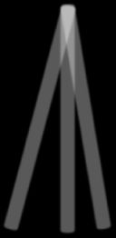
[参与者] [虚拟自身]
[身体]

[图30.] [全身错觉。参与者的背部被抚摸；一台摄像机] [从后面记录这一过程并传输到头戴式视频眼镜，使] [参与者看起来站在自己的面前。在] [背部施加的触摸随后被感觉为位于参与者面前的那个虚拟身体上(触摸] [也可以被看作施加在假身体上或施加在非身体物体上] [(Lenggenhager, Tadi et al. 2007).]

[参与者] [实验者]

[图31.] [通过交换视觉视角进行身体交换；参与者站在左侧，] [通过眼镜体验实验者的视觉视角，实验者站在] [右侧；体验就像占据实验者的身体，与] [自己握手(Petkova and Ehrsson 2008).]


自然的脆弱镜像 [235]
我在实验室和课堂上多次重现了这一点，体验的一部分是，如果随后引入触觉元素(如敲击参与者的手臂)，那么真的会感觉就像它被施加到另一个人的身体上，参与者正在体验居住在其中。这种程度如此之深，以至于如果在这种条件下触摸一个人的真实手臂，但在实验者的手臂上没有明显地施加触摸，而实验者的手臂看起来就是一个人自己的，那么就会有一种诡异的感觉，仿佛有一根看不见的手指在触摸一个人新获得的、看起来奇怪的手臂。
这种全身错觉有限制吗？当物体像身体时确实有助于错觉，但它可能是非常不寻常的。Ehrsson的小组已经为一个比参与者小得多的玩偶诱发了全身错觉；这种错觉如此有说服力，以至于有随后的运动效应(van der Hoort, Guterstam et al. 2011)。在我们的实验室中，我们已经能够产生参与者拥有一个微小的、有关节的木制身体的体验。通过在有关节的玩偶头部绑上一个小摄像头，我们可以给人们提供俯视玩偶正面的视角。在玩偶肚子上和人身上的同步敲击诱发了在木制胃部被触摸的错觉。这种错觉如此有说服力，以至于当一只玩具蜘蛛被放在玩偶上时，人们会因体验到一只巨型蜘蛛在胸前爬行而感到惊吓(未发表数据，见图32)。
橡胶手错觉和全身错觉还有许多其他版本。关于错觉的限制仍存在争议，即我们对身体意象的先验信念能被违反到什么程度。但新出现的情况是，通过仔细且有时是渐进的操纵，我们能接受作为触觉接受者的物体类型以及世界中物体影响我们的方式几乎没有限制。看起来我们偏好简单假设来有效抑制感觉预测误差，这种偏好轻易地覆盖了原本极其熟悉的身体意象。我们幸运的是这种情况在日常生活中很少发生。这是预测误差最小化方案带来的脆弱性，在这种情况下它触及了我们身体自我意识的核心。
现在让我们回到这种脆弱性相对无关紧要的反对意见。我们大多数人似乎不仅在生活中没有让脆弱的感知世界破碎，还有一些证据表明这些扭曲的身体意象无法延续到运动中，也就是说，错觉期间感知推理中预测误差最小化的方式无法影响主动推理(Kammers, de Vignemont et al. 2009)。这延续了第7章中提到的观点，即许多错觉似乎都以这种方式被隔离(例如Ebbinghaus错觉似乎不会强烈影响抓握任务)。然而，可以从三个方面回应，所有这些都表明脆弱性并非无关紧要。首先，令人惊讶的是，我们中很大一部分人实际上会有严重的干扰，这些干扰似乎与错觉中调节的身体意象和自我意识有关，即各种精神障碍，如精神分裂症、厌食症、身体变形障碍等。其次，如第7章所述，感知推理和主动推理可能存在不同的学习约束，这意味着并非所有感知信息都会传递到运动控制中。第三，实际上存在错觉(如橡胶手)确实会影响运动的情况(Kammers, Kootker et al. 2010; Paton, Hohwy et al. 2011; Palmer, Paton et al. 2013; 见第164页)。
从橡胶手错觉和全身错觉的研究中得到的总体印象是，感知的身体意象具有高度可塑性。为了解释感觉输入，我们会接受我们习惯体验身体方式的非常奇怪的变形。感知的脆弱性甚至适用于我们自己的身体感知，并强调了我们的身体自我意识本身被视为一种内部模型的观点，该模型对我们如何最小化其假设的预测误差很敏感。

[图32. 测试全身错觉的一种险恶方式，人们居住在小木偶的身体中。摄像头固定在木偶的头部，将其视角传递给参与者的护目镜；当录像让他们体验到他们体现了木偶时，蜘蛛看起来就显得巨大。]
我一直在强调感知推理的脆弱性，并给出了一种感知关系的特征描述，强烈强调了其间接性。当代思想中有一个有影响力且重要的潮流强烈抵制这种间接性叙述。这是一种观点，认为我们的感知努力似乎最好用我们的大脑与我们如何组织和利用环境之间的密切互动来解释，为身体提供了关键作用。Andy Clark注意到预测误差方案与情境性之间的初始张力，但正确地看到了更深层联系的潜力：
至少从表面上看，预测处理故事似乎追求一种相当狭隘的神经中心主义焦点，尽管这种焦点揭示了感知和行动之间一些真正亲密的联系。但深入挖掘后我们发现的是一个神经功能关键方面的模型，它使构建我们的世界真正与构建我们的大脑和塑造我们的行动连续。(Clark 2013: 194)
Clark这样描述这种联系：
在多个时间尺度上，使用各种各样的手段(包括词语、方程式、图表、其他代理、图片，以及现代消费电子产品的所有工具)，我们因此堆积筹码，以便我们能够更容易地在从购物和社交到天文学、哲学和逻辑的无数赋权背景级联中最小化代价高昂的预测误差。(同上：195)
这其中有很多是正确的：我们组织环境来促进预测误差最小化。但在我看来，有可能以一种强调间接性的方式捕捉到所有这些。
如果我们回想预测可能被扰乱的多种方式(第7章)，共同主题是感知”游戏”充满了不确定性，预测误差机制不同方面的核心任务是导航不确定性并确保感知不会破碎。许多不确定性是由作为大脑的有机组织中的噪声引起的，但至少当感觉数据进入大脑时预测误差最小化可以开始，即使被感觉噪声阻碍。这是因为只有当系统获得两个关键量——它自己的预测和实际输入——的访问时，它才能开始处理感知问题。但有一个主要的不确定性源位于这个过程之外——即世界状态本身与感觉输入之间的因果联系。
脆弱的自然镜像 [237]
这可以用第2章中解释预测误差最小化的简化方案来说明。预测误差在基于大脑内部模型产生的假设与感觉输入（世界如何影响感官）之间被最小化。
这产生了对感觉输入的隐藏环境（或身体）原因的因果推断，即对世界事态的推断。尽管大脑可以优化其内部预测误差的精度，但它受制于从世界事态到影响它的感觉输入的因果链接中的信号强度。如果从世界到感官的信号强度很差，那么大脑当时就无法对此做太多事情。
由于大脑被隔离在感觉输入的面纱之后，因此设计出优化从世界到感官信息通道的方法对它是有利的。这是一个很简单的观点：通过主动推理(active inference)，大脑不仅可以通过我们迄今为止描述的方式改变感觉输入（即选择预测的感觉输入）来最小化预测误差，还可以通过增加感觉输入的精度来实现；例如，照亮黑暗房间以增加视觉信噪比。这通常可以通过消除环境中的噪声源和放大信号强度来实现。举个类比，传统计算机芯片中的电压保持在令人惊讶的高水平（约5v），正是为了通过最小化噪声可能干扰信号传输的可能性来使芯片可靠（电压例子来自Eliasmith 2000）。
在我看来，我们在技术和文化方面与世界互动的许多方式都可以用试图使感觉输入与原因之间的联系更加精确（或更少不确定）的尝试来描述。这包括建筑环境的好处（让我们不受风雨干扰地进行主动推理），技术和电子设备（例如，收音机让我们直接听到事物，而不是通过许多因果的、不可靠的证言链接），甚至可能包括语言（当我告诉孩子们”用语言表达”时我想到了这一点）。
这样考虑，我们与环境的互动应该用一阶和二阶统计来描述，有点像我们对感知和注意力所做的那样。二阶主动推理是优化感觉输入，这样我们就可以自信地进行我们的活动和感知推理。我在这里要强调的关键点是，这是一幅突出预测误差最小化机制的间接性、颅骨束缚本质的图景。因此对我来说，情境认知(situated cognition)概念中的主要真理是，情境化的心智通过文化和技术被拉近与世界的距离，其基本意义是改善世界事件与感觉输入之间的互信息。文化和技术以这种方式促进推理。但这总是在心智与世界其他部分坚固对立的情况下发生的。实际上，我们对以这种方式组织环境的专注正是在脆弱性背景下才有意义的。正是因为心智-世界关系是脆弱的，我们需要尽一切努力
在我们能够占据而不使感知崩溃的狭窄状态集合内优化信号传输。
因此，我同意Clark的观点，即情境性使环境和大脑”真正连续”，但仅限于它使从感官到世界的因果链接更加可靠的意义上。也就是说，只有在因果因子能够真正连续的意义上，它才是真正连续的。由于这种因果关系在上述意义上也是间接的，心智仍然与世界的隐藏原因隔绝，尽管我们巧妙地使用文化和技术让我们能够将这些原因带入更清晰的焦点，从而促进我们对它们的推理。
在某些方面，这场辩论反映了对预测误差最小化大脑解释中重点放在哪里的意见——是放在大脑与世界很好协调的方式上，还是放在故事的推理方面。但在这场辩论背后存在一个有原则的、更深层的认识论观点，我认为这迫使我们将心智在世界中位置的隐蔽本质在解释上置于优先地位。
考虑以下日常例子，取自Peter Lipton对最佳解释推理的讨论（Lipton 2004）。有一天你回到家，观察到窗外雪地上一些意外的脚印。一个窃贼曾经来过的假设最好地解释了脚印证据的出现，所以你开始相信一个窃贼曾经来过。同时，脚印成为窃贼假设的证据。通过最小化（解释掉）令人惊讶的证据，人们最大化了进行解释的假设的证据。我认为Lipton的例子可以以简化的形式捕捉预测误差最小化核心的机器学习洞察，Friston这样表达：“[惊]讶被称为（负）模型证据。这意味着如果我们将主体视为其世界的模型，那么最小化惊讶与最大化主体存在的感觉证据是一回事。”（Friston 2010: 128-9）。
也就是说，内部生成模型中维持的假设与感官输入正好处于这种解释-证据关系中：假设解释掉了感官输入，因此感官输入成为假设和生成它们的模型的证据。考虑到模型的存在与相关智能体存在之间的密切关系，这成为了一个相当深刻的观点。它告诉我们，作为一个原则问题，感官输入解释了智能体的存在，而感官输入之外的原因都必须作为模型推断出的外部实体进入解释中。从这个角度来看，很难模糊内在与外在之间的界线。
解释-证据关系看起来危险地循环，但除非用来对抗某种特定类型的怀疑，即关于证据发生的怀疑，否则这种循环是良性的。如果有人反对说脚印可能是针对你的精心骗局的一部分，那么你不能理性地通过诉诸你对窃贼假设的信念来回应。那将是恶性循环。换句话说，有某些可能性，只有当你有额外的、条件独立的证据（例如，关于骗子在场的证据）时，你才能区分它们。没有获得条件独立证据的途径，怀疑在认识论上是不可克服的。应用于大脑的情况，这意味着如果对感官证据整体的发生产生怀疑——正如在唯我论或恶魔式怀疑论担忧中可能出现的那样——那么就没有办法回应。这告诉我们，大脑与世界之间的感官边界不是任意的，而是识别在知觉和主动推理中什么在推断什么的原则性的、不可或缺的、认识论上关键的要素。
在本章中，我试图传达知觉推理是脆弱的这种意义，尽管对我们大多数人在大多数时候来说它似乎是稳健的。这种脆弱性导致对知觉心智-世界关系的因果理解。这既令人不安又令人安慰。
它令人不安，因为它将我们描绘为仅仅是因果棋子，受制于我们充分利用感官困境的方式。有时，这可能严重误导我们，当我们在解释输入的探索中选择非常不可能的假设时；正如我们所看到的，这甚至可能影响我们的身体自我意识。但这也是一幅令人安慰的图景，因为我们的知觉假设只能通过实际很好地拟合传入输入的预测来逃脱惩罚。
这些双重方面捕捉了因果知觉关系既是间接的又是直接的这种意义。整体图景是，我们往往（撇开邪恶科学家欺骗我们的怀疑论情景不谈）表征世界接近它真实的样子。然而，这不是因为我们为了真理本身而寻求真理。相反，我们寻求预测误差最小化，并在此过程中大多获得真理。这种图景的一个后果是，许多情境认知和延展认知的案例开始变得有意义，仅仅作为大脑试图优化其感官输入的案例，这样它作为与世界相对的定位，能够更好地最小化误差。
在下一章，也是最后一章中，我将视角扩展到我们心理生活的深层方面：情感、内省、自我意识和心理隐私。心理的所有这些方面都受到知觉脆弱性的约束。
[第227页][. [][”][我们因此似乎权衡实际] [. . .] [”][] 这里我声称我们中的许多人] [患有精神障碍。这里是支持这一声明的一些证据。重度抑郁症的终生] [患病率，即一个人的情感世界破碎时，男性为5] [–] [12%，女性为10][–][25%；精神分裂症的终生发病风险] [约为7] [–][8/1,000，西方世界自闭症的发病率] [约为60] [–][70/10,000，且似乎在上升 (American Psychiatric Association, 2000;] [McGrath, Saha et al. 2008; Zaroff and Uhm 2012).]
[第239页][. [] [”][我因此同意Clark] [. . .] [”][] 要使心智完全情境化或] [延展化，预测误差最小化的所有方面都需要相对于一个分布式系统发生，该系统从外在于它的隐藏原因获取输入。这不是不可想象的。可能存在分布式预测误差最小化机制，也许一些现有系统可以被这样描述。我被告知，当矿工使用遥控机器人时，他们有时在倒车时会碾压自己。这可能发生是因为他们的世界生成模型是分布式的，包括主动机器人。他们可能相对于包括他们自己和机器人的系统最小化预测误差，而忘记将自己建模为自主智能体。然而，我不确定这是延展预测误差最小化的有力例子，因为当矿工碾压自己时模型会破碎。总的来说，我怀疑Clark和其他人强调的那类例子的最佳解释是，它们是预测误差相对于神经系统被优化（在第一阶和第二阶统计意义上）的案例。]
[进入预测心智]
在这最后一章中，预测错误机制被深入扩展到心灵的更深层问题。我将考虑对情绪、内省、心理隐私和自我的看法。这些方面的预测错误最小化应用确实变得更加微妙。然而，预测错误最小化理念，特别是在其广义的自由能公式化和与统计物理学相关的形式中(Friston 2010)，具有极其广泛的解释范围。正如著名神经科学家Stanislas Dehaene（其工作在第9章中讨论过）所说：“这是我们在认知神经科学中第一次拥有如此强度、广度和深度的理论…大多数其他模型，包括我的，只是大脑一个小方面的模型，范围非常有限。这个理论更接近一个宏大理论”（引用自New Scientist 2658: 30–33, 2008）。
鉴于这种最大化的解释范围，似乎有理由预期，即使只是简要地，它对心理活动的进一步深层方面会有什么说法。结果表明，通过应用预测错误方案，产生了新的、有趣的、看似具有解释力的观点。
一个著名的情绪理论源自William James和Carl Lange，根据他们的观点，感觉状态作为对身体唤醒状态的反应而产生，包括心率上升、出汗等。在这种说法中，我们”因为哭泣而感到难过，因为攻击而愤怒，因为颤抖而恐惧”，所以”不是因为我们难过、愤怒或恐惧而哭泣、攻击或颤抖”(James 1890: Vol. 2, pp. 449–50)。这种情绪的广泛观点在心理学(Schacter and Singer 1962; Scherer 1999)、神经科学(Damasio 1996)和哲学(Griffiths 1997; Prinz 2004)中得到了有影响力的发展和讨论。
这个理念是，内感受输入的类型及其发生的上下文作为其原因的线索，推理这个过程就是决定我们特定情绪体验的因素。这是一个挑衅性的理论，因为它不仅颠倒了情绪的常识因果作用（正如James的引言所清楚表明的），而且将所有情绪简化为基本的内感受状态，并用我们对它们的认知反应来解释情绪分化。结果是，在某种意义上，情绪作为对我们自身内部状态的一种感知推理而产生(cf. Prinz 2004)。很难不从预测错误最小化的角度来考虑这个问题(Hohwy 2011; Seth, Suzuki et al. 2012)。
关键是将内感受信号视为内部生成的、高度模糊的预测错误，通过分层的内感受期望来解释，这些期望可以利用整个预测错误景观中的各种统计规律。也就是说，内感受状态，如唤醒水平，在世界和身体状态的大量假设之间高度模糊（其中一些假设对我有利，另一些有害）。这类似于耳石状态在世界状态之间可能模糊的方式（即在你是倾斜还是向前加速之间，如前一章所述）。然后，情绪在内感受预测错误实际被解释掉时产生。情绪分化的发生就像其他类型的模糊线索的感知分化一样，通过诉诸先验信念和上下文。例如，你的唤醒水平上升，被老板大声训斥的上下文消除了该信号在愤怒和快乐之间的歧义。类似地，当得到鸭子正在吃兔子的信息时，你可能会相应地消除双重鸭兔图（图16）的歧义。在情绪的情况下，这可能导致情绪错觉。在一个著名的研究中，当参与者遇到实验者的有魅力的同伙时，他们将高唤醒状态体验为性吸引，而实际上唤醒是由先前与跑过危险桥梁相关的焦虑诱发条件引起的(Dutton and Aron 1974)。
一般来说，高度唤醒被认为是预测错误，因为我们期望占据由许多不同外生输入定义但心率、出汗等水平相对稳定、统一的状态。因此，似乎内感受领域的预测错误最小化是广义James–Lange情绪观的自然概念归宿。
从某种意义上说，James–Lange观点的当代发展是概念主义的（例如，Scherer 1999）。情绪成为对身体状态产生概念性反应的结果。这在某种程度上不太吸引人，因为情绪似乎也是某种非常基本的状态，可以被非概念性生物和那些意识障碍、概念装置受损的个体所拥有(Panksepp, Normansell et al. 1994; Griffiths 2003; Panksepp 2005; Merker 2007)。幸运的是，感知和概念之间的明确区别在感知层次中开始消失。概念只是相当不变的长期期望，感知是相当变化的、依赖视角的短期期望（如第3章所讨论的）。两者都可以用于自上而下解释情感预测错误的尝试。在我看来，生物不需要有语言才能在这种模糊的意义上被认为是概念性的。这意味着具有很少正统概念装置的个体也可以有情绪，即使在这种情绪观点下也是如此。这确实意味着情绪体验的特征应该根据给定生物能够用来解释唤醒的自上而下预测而改变。
这种关于情绪的一般性预测误差观点可以通过不同方式发展。最近一个有趣的提议将其与内感受(interoception)的新兴研究联系起来，并认为现象学的存在感与内感受预测误差最小化的精确性相关。大致上，你对自己身体状态越不感到意外，你与世界的疏离感就越少。当预测误差不精确潜入时，在世界中的存在感就会减弱，这可能发生在人格解体障碍中的陌生感和非真实感中(Seth, Suzuki et al. 2012)。
通过诉诸情绪推理的预测误差机制，理解情绪处理的新机会开始出现。回想第3、7、9章，我们为精确性优化创造了重要作用，特别是期望精确性和学习。精确性的概念直接与注意力相关，使得注意力不过是层级推理中的精确性优化(Feldman and Friston 2010)。这些机制方面也应该适用于内部推理过程。因此我们被邀请思考我们对唤醒相关预测误差精确性的期望，即情绪注意的作用。
这为经典的James-Lange自上而下概念性情绪评估图景增加了新的处理层次。我们应该预期，有时是我们对唤醒或内感受精确性的期望决定了我们最终的情绪状态——不同情境差别性地调节内感受信号的增益，从而对自上而下的解释提出不同要求。特别是，在这个框架内，我认为有充分理由期待各种注意现象的情绪类似物(其中一些在第9章中讨论过)。也许我们可以开始将某些情绪处理案例视为非注意性情绪盲视(关于这方面的研究，见Wayand, Levin et al. 2005)，作为情绪变化盲视，或者揭示内源性情绪注意与情绪抓取之间的差异，以及情绪Troxler消失与情绪对比增强之间的差异。在精神疾病背景下研究这些与注意相关的情绪构念将特别有趣，如情绪障碍和其他痛苦如述情障碍(alexithymia)。
进入预测心智 [245]
有时我们忙于自己的事情，在过程中感知世界。有时我们将注意力转向内部，参与关于自己、记忆、情绪和计划的思考和想象。然而，有时我们将注意力指向我们的心理状态本身。这就是内省。例如，你可能将注意力指向你脚趾感受到的疼痛，想知道它是否已经从尖锐刺痛转变为更钝的疼痛，或者你可能在看到某些艺术作品时为体验到的绚烂色彩而愉悦。
这里我考虑预测误差最小化方案如何应用于内省。这对内省在我们心理经济中发挥的功能给出了某种非正统的观点。这很重要，因为内省的功能并未得到很好的描述——不清楚为什么我们需要能够内省自己的经验，而不仅仅是拥有它。这种方法也将内省与感知的其他方面很好地统一起来。这很重要，因为内省有时被视为与感知根本不同；例如，在一些人认为内省具有的特殊和私人特权方面。
如果内省是无意识概率推理，那么内省必须被构造为存在一些隐藏原因、一些隐藏的感觉效应，以及一个可以发生预测误差的生成模型。对许多人来说，这将使推理作为内省的解释成为非起始点，因为有意识的经验本身似乎不太可能是作用于内省感觉器官的隐藏原因。尽管有这种直接反应，但有一种合理的方式让内省进入预测误差最小化的范围。
起点必须是考虑经验性预测误差如何产生。我们的经验是否曾经违背我们对它们的期望？我认为在经验的所有领域都存在这样的案例。个体可能会对轻微踢到椅子腿时脚趾经历的疼痛尖锐程度感到惊讶，内省那个经验本身，并基于内省得出判断，认为脚趾断了需要医疗注意。个体可能会惊讶于相对于某个经验的正常主动推理没有产生通常的效果(例如，抓挠痒处引起疼痛感觉，所以个体内省以确定它是痒还是实际上是疼痛；或者，绕过某物让阳光从后面照来没有产生使颜色更清晰的预期效果，所以在内省中重新审视颜色经验)。或者，个体可能会对经验的精确性感到惊讶(这杯意式浓缩咖啡应该尝起来像咖啡，但个体开始难以识别咖啡味道——这可能作为胰腺癌的征象发生——因此内省味觉感受)。内省惊讶似乎也发生在精神疾病中，例如在精神病前驱期，患者说诸如”我的眼睛对光线变得明显过敏。普通颜色看起来太亮了，阳光看起来令人眩目”(Freedman 1974)。
也许这些都是系统中存在预测误差的情况，但对世俗事物的关注和重新审视并不能立即有助于解释这种预测误差。在这些情况下，将体验本身视为呈现给概率推理的原因是有意义的。就上一章提到的镜子类比而言，有时考虑镜子本身存在故障或变化的可能性，而不是世界的问题，可能是有价值的。
如果接受体验期望可能被违背，那么就存在体验预测误差，那么使用体验的生成模型和基于这些模型的体验预测就是有意义的。当这些元素结合在一起时，体验本身的预测误差最小化就出现了：使期望与体验保持一致，以防止它们在未来被违背。这种内省推理的想法并没有什么不当之处。它只是一个推理过程，将感知推理的结果视为模型输入的原因。当然，感知推理本身的结果在任何情况下都是世界中的原因。例如，在双眼竞争中，系统当前的结果可能是那里有一张脸，我们可以假设，这种体验部分地导致参与者按下”脸”按钮而不是”房子”按钮。在内省中，体验也被视为原因，但这次是体验模型输入的原因——监控体验而不是世界的模型。
反对允许这种内省推理的第一个反对意见是，它需要不合理程度的双重记账。将事物体验两次似乎是一种能量浪费，既在我们的感知推理中体验，又在我们的感知推理模型中再次体验。而且这似乎与我们的现象学不符：感知似乎并不总是被内省所跟随。
对此有三点回应。首先，一旦我们接受体验期望可能被违背，那么就必须有体验的内在表征；从那里到内省推理的步骤似乎是不可避免的。其次，对体验内在模型的现象学意识只需要在体验预测误差的情况下出现。也就是说，我们只有在模型偏离标准体验时才会意识到模型的运作。这种情况可能不会经常发生，因为我们的预测误差大多可以归因于环境原因本身的感知推理问题，只有当我们怀疑预测误差不是由于世界的状况而是由于感知推理本身的某些问题时，内省才会被调用。第三，有一些理由认为对体验状态的内省意识是心智相互作用以及心智与自身随时间相互作用的关键要素。这种作用将通过这里论证的内省推理类型来适应——我将在下一节中扩展私人内省推理的这种社会方面。
相信像我们这样的生物会内省有一个更基本的理由。这与主动推理和我们通过行动控制环境的能力有关。特别是，任何表征自己行动的主体必须在某种意义上进行内省。行动的表征或环境的控制是一个微妙的问题，可能只是高等生物的能力；表征自己的行动对于简单的反射或稳态平衡来说并不必要——然而对于像我们这样从事规划和考虑假设结果的生物来说，这变得至关重要（参见Hohwy 2011年对这个想法的进一步理由）。请注意，在主动推理中，行动本身是物理世界的真实状态，不仅仅是大脑表征的隐藏状态。这意味着心智中的行动表征与物理世界中的实际运动轨迹之间存在根本区别。一旦我们对自己的行为进行推理，我们的推理就与我们的自我联系起来，我们就本质上变成了元表征的。我将在本章最后一节中回到代理和自我行为的这个核心方面，该节重点关注自我的性质。
接下来我想考虑这个将内省作为预测误差最小化类型的提议如何应对我称之为内省失调的问题。内省失调是我对我们对内省的矛盾态度的标签，这种态度推动了很多哲学辩论。当我们内省时，被内省的状态似乎很容易获得，例如，疼痛或颜色体验就在那里；内省似乎是确定的，有时甚至毫无疑问（如果疼痛或我体验到蓝色，对这种事态没有真正的怀疑）。但同样，当我们内省时，内省很容易变得难以捉摸、转瞬即逝和不确定：当试图精确描述体验是这样还是那样时，我们语塞；我们发现很难在内省中稳定地维持一种体验任何时间长度，当我们关注其个别方面时，体验经常似乎从掌握中滑走。当我们内省时，我们似乎同时持有两种态度：内省似乎既可获得又确定，又不可获得又不确定。这是内省中的一种失调。
当人们回顾关于内省的许多经典和当代辩论时，失调的迹象比比皆是。在我自己实际尝试内省时，失调也似乎是明显的，几乎是令人恼火的：
在粗粒度的分析层面上，很容易对我所体验的内容进行分类，但很难确定内省状态更细粒度的特征实际上是什么。
如果内省失调(introspective dissonance)如此普遍，那么它似乎需要得到解释。因此，一个能够为我们内省努力的两个方面都留出空间的内省解释将是可取的。预测误差方法可以实现这一点。
内省中的”确定性声音”出现是因为首先也是最重要的内省推理目标的知觉推理是当前的概率获胜者——它基于享有最高后验概率的假设。因此，它将涉及知觉层次的更高层级，因此以某种程度的不变性和视角独立性为特征：它将在更长期的时间规律性下被表征，因此噪声更少，细节更少。在层次中处于高位也意味着其不同的感官属性将得到良好整合，并被视为世界中的统一原因。这一切都与内省的轻松和确定获取相符合。如果获取的体验被处理为概率获胜者，相对不变且无噪声，那么内省提供对体验的轻松和确定获取就不足为奇了。
然而，内省中的”不确定性声音”也得到了照顾。详细分析内省所提供内容的挑战是深入知觉层次的挑战，即分解获胜推理。但这意味着访问推理中标记有更多方差、更多噪声和更多分解的部分。难怪当试图解构知觉推理时，内省会提供更混乱和更不确定的判断。这更是如此，因为这种”向后”的知觉推理违背了不同证据源的评估应该条件独立才能最大程度地提供信息的想法。例如，在内省我对腹语术错觉的听觉组成部分的体验时，我的判断受到最初的、整合的视听知觉的影响。
内省失调中的两种声音都可以在内省预测推理的概念中得到允许。呈现统一解释的一种方式是通过关注内省作为注意现象，在我们偏爱的注意作为精确优化的意义上。之所以有初始确定性，是因为我们对自己体验的内容相当确定，然后我们关注这种体验，以便优化体验的参数，从而获得对体验是什么样的更细粒度、视角依赖的理解。但这个过程引发了日益增长的不确定性，因为体验的分解是具有挑战性的。换句话说，内省注意注定要失败，因为不受并发感官证据约束的高级表征的存在本身依赖于感官层面精确性的抑制（例如在做梦中）。
换句话说，内省注意很快遇到精确感官细节的下界，否则这些细节会颠覆推理的内省性质。
总体而言，预测误差最小化方案带来的内省图景最初看起来并不吸引人。但一旦我们接受可能存在体验期望的违反，这幅图景似乎就不可避免了，然后有方法使其更具吸引力。此外，这幅图景作为我所称的内省失调的解释有一定前景。
当我们进行内省时，还有一个现象学方面：意识体验似乎对体验个体来说是固有私人的。这是意识的一个定义特征，目前仍未得到解释。我想从心智作为法庭的认识论视角来探讨这一点，这是我在第7章中提出的。具体来说，我将建议隐私在心智相互作用时发挥认识论作用。结论是意识是私人的，这样它才能是社会性的。
在西方知识史上，人们广泛认同意识体验是私人的、主观的、第一人称视角的，不受他人观察。有一些哲学家，主要从维特根斯坦(Wittgenstein, 1953)开始，以及其他研究者出于各种原因不同意这一点。我认为他们是错误的，因此支持历史上的多数观点。例如，这里是笛卡尔的观点：“没有任何情况下我们对任何事物的了解，不会同时以更大的确定性导致对我们自己心智的知识”(Descartes 1644 [1983], I.XI)。洛克赞同：
人虽然有各种各样的思想，其他人和他自己都可能从中获得益处和快乐；然而它们都在他自己的胸中，对他人不可见和隐藏。一个人的心智不能进入另一个人的身体，去感知那些器官产生了什么样的表象。
康德通过指出隐私威胁要破坏任何适当的心智科学来预见行为主义：
[另一个思维主体[不会]以符合我们目的的方式服从于我们的调查][…] [[心智研究]因此永远不能成为内在感官的历史性自然学说以外的任何东西，][即]对灵魂的自然描述，而不是灵魂的科学，甚至不是心理学实验学说。
约翰·斯图尔特·密尔指出心智隐私所构成的固有怀疑主义挑战
[我凭什么证据知道存在其他有感知的生物；我所看到和听到的行走和说话的身影，具有感觉和思想，换句话说，拥有心智？(Mill 1865: Ch XII).]
正如我们在第7章中看到的，他提出了一个解决方案，即类比论证，通过类比自己在相同行为时对私人经验的了解，从他人的行为中推断他们的意识生活：“我从某些事物中得出结论，这些事物通过我对自己感受状态的经验向我证明是意识的标志”(同上)。
很难准确定义意识的这种私密性具体包含什么，只能说其他人对你自己意识状态的接触比你内省时更加间接和受限。
但私密性本身就是一个谜题。如果意识经验如此私密——对除了经验主体本身之外的任何人都如此隐秘——那么很难理解它的作用是什么。尼采雄辩地表达了这种情感：
[意识的问题首先在我们开始意识到我们能够在没有它的情况下做多少事情时confronts我们；现在我们通过生理学和自然科学得出了这个初步认识。因为我们可以在所有这些词汇的含义上思考、感受、意愿、记忆，也可以’行动’，然而所有这一切都不必’进入我们的意识’(如人们形象地说)。整个生活都可以在不看到自己在镜子中的情况下进行；直到今天，我们生活的主要部分实际上是在没有这种镜像的情况下展开的——当然也包括我们的思考、感受和意愿生活，对老哲学家来说这可能听起来很冒犯。如果意识基本上是多余的，那么它的存在到底有什么目的？(Nietzsche 1882/1887: 354)]
这就是私密性的谜题：它起什么作用？我将提供的答案是，意识是私密的，这样它就可以是社会性的。我将援引概率论的一个基本要素来证实这个说法。然而，首先，我将通过指出意识社会功能这个较少被讲述的故事来设置背景。
意识经验具有社会功能的想法并不新鲜。在上面的引用中，笛卡尔和洛克都在讨论我们交流思想的能力时对意识的私密性表示遗憾。在同一个世纪写作的霍布斯承认了这种私密性，但通过突出意识概念的社会方面走得更远：
[当两个或更多的人知道同一个事实时，他们被说成是彼此意识到它的；这就相当于共同知道它。而且因为这样的人最适合作为彼此事实的见证人，所以任何人违背良心说话，过去是、现在是、将来也会被认为是非常邪恶的行为。后来，人们metaphorically地使用同一个词来表示对他们自己秘密事实和秘密思想的了解。(Hobbes 1651 [1994]: I, Ch VII, p36)]
尼采，在很晚的时候，提供了一个社会功能作为他在上面引用中提出的问题的解决方案：
预测心智 [251]
[如果有人愿意听我的答案和它可能奢侈的推测，在我看来，意识的微妙性和强度总是与一个人(或动物)的交流能力相关。一般来说，意识只是在交流需要的压力下才发展起来；在最初，意识是必要的，是有用的，只是在人与人之间。意识实际上只是一个连接一个人与另一个人的网络——只有在这种能力中它才需要发展；孤独和掠食性的人不会需要它。(同上)]
我想让尼采的情感与当代”意识是为他人而存在”的观点接触，正如Chris Frith所论证的，他特别关注意识的功能。他解释说：
[可分享的知识(即意识的内容)是语言和交流发展的必要基础。大多数意识理论的主要错误是试图从一个孤立有机体的角度发展解释。(Frith 1995: 682-3)]
与Uta Frith一起，这种观点发展为与社会认知密切相关：“元认知在人类社会互动中起着关键作用，并为人类意识提供了基础”(Frith and Frith 2012)。
我在这里假设这种观点是正确的：意识的功能在某种意义上是社会性的。然而，这使得意识的私密性变得更加令人困惑。如果意识的功能本质上是社会性的，那么为什么它本质上是私密的？我的提议，如上面已经宣传的，是意识是私密的，这样它就可以是社会性的。
在大脑内部，表征通过使用感官提供的多种证据源进行感知推理而发生。推理可以被赋予社会维度，这样在个体之间，推理通过使用每个个体在交流中提供的多种证据源而发生。这种在不同语境中依赖多种证据源的要素允许我们援引非常基本的贝叶斯考虑。
正如我们在第6-7章中看到的，现在有非常充分的证据表明，大脑内部通过不同感官传递的证据以最优贝叶斯方式整合，这依赖于精确度优化。最近，这种图景已经扩展到相互作用的心智。当两个人必须讨论并就他们都看到的微弱视觉刺激的位置达成一致时，他们会交流对自己估计的信心，在此基础上以信心加权的最优方式整合他们的感知估计(Bahrami, Olsen et al. 2010)。
在这两种情况下，整合后的估计都比任何单独的估计更可靠。也就是说，在感知估计来自世界中一个共同原因的模型下，最好依赖大脑内部多个相当可靠的感觉证据来源，以及来自不同大脑的多个证据来源。
那么关键问题是，神经处理流之间或相互作用的心智之间的最优贝叶斯整合需要什么条件？为了回答这个问题，我们可以再次考虑贝叶斯法庭类比。
贝叶斯最优法庭的一个基本要求是，证人报告在给定案件的条件下是概率独立的。如果证人A说抢劫犯是Naughty先生，但只是因为他听到证人B这样说才这样说，那么我们不应该将他的证词视为加强了对Naughty先生不利的案件。也就是说，在Naughty先生是抢劫犯这一问题的条件下，获得证人A报告的概率不应该受到获得任何其他报告(报告B)或任何其他事态(B)的影响，在相关事实(A)的条件下(例如，Bovens and Olsson 2000: 690)。
我在第7章中论证，这种条件独立性要求也适用于大脑内部发生的情况，这激发了与Fodor模块化相关的信息封装(Fodor 1983)。关键点是，这种独立性要求也适用于相互作用的心智之间发生的情况。导致每个个体估计的过程应该彼此条件独立。如果不是这样，那么它们的贝叶斯最优整合就会受到损害。
大脑内部的条件独立性通过大脑的有机结构来实现，这种结构阻止了皮层层级较低部分处理流之间的信息流动——在神经科学中，这被称为功能分离。这与法庭上将证人分别关在不同房间并阻止他们相互通话的做法没有太大不同。
但是，虽然这种分离可以在像大脑这样基因控制的身体器官内部以及在有序的法律系统世界中实现，但对于个体之间日常的流动互动来说，建立这种分离要困难得多。我们的交流方式非常灵活和不规则(例如，想想热闹鸡尾酒会上快速变化的对话流，或者电子邮件、手机和社交媒体的侵入性和冲动性质)。
自然界需要用其他工具来补救这种情况，以便使相互作用的心智之间的条件独立性成为可能。意识的私密性可能就是这个工具。自然界进化出体验的私人、主观特征，使我们每个人都能独立于他人的报告来报告世界对我们的显现方式。
当我们内省当前的有意识体验时，我们能够以一种让我们感知到对世界推理信心的方式，获得大脑对世界的最佳估计。内省的内容不被他人看到，由于是第一人称视角的，它不受他人关于相关事件报告的影响。也就是说，意识是私密的，因此它可以在相互作用心智之间的最优推理中发挥其社会作用。相反，如果我们将有意识的体验展现在外——如果它们是公开的而不是私密的——那么它们可能会不当地影响其他个体的报告，我们就不会从整合我们的报告与他们的报告中获益。
我们可以想象一种反事实情况，感知估计无法被报告访问，也就是说，“内部是黑暗的”。在那种情况下，必须有不同的方法来促进条件独立性。也许在这种假设情境中，我们相互交流的方式会像大脑中的感觉处理流一样规范化。如果不是这样，这种反事实情境中的生物就不会从相互作用中获得贝叶斯益处。
我们在交流中向彼此报告的不是有意识体验本身，因为那是私密的。相反，我们依靠内省来报告感兴趣的参数(“Gabor斑块出现在左上角”；“我看到Naughty先生拿着枪进入银行”)，并报告我们估计的信心(“我确信…”，“我认为…”等)。也就是说，我们交流我们估计的后验精确度。
当然，我们交流努力的一部分也致力于建立共同基础，即确保我们对世界有相同的模型(“在所谓抢劫案的那个晚上你在哪里？”)。这对应于法庭的”确立案件事实”。这也对应于多感觉整合的共同原因模型选择(Körding, Beierholm et al. 2007)。这有助于排除我们看到了不同事物因而不应该开始整合我们估计的情况。
意识的私密性所带来的概率独立性并不是完全的和永恒的。随着时间推移，其他人和事件可能会对产生意识感知内容的无意识感知推理产生影响。从这个意义上说，我现在看到的可能有条件地依赖于其他人之前看到的（关于某些影响程度的分类，参见Clark和Yuille 1990: 72-83）。
关键点在于，我对当前意识体验的报告很有可能独立于其他人现在的体验，特别是针对所讨论的特定事件。这正是获得相互作用心灵的贝叶斯益处所需要的：我的估计独立于其他人的估计，仅有条件地依赖于当前所讨论的事态（例如，如果一位初级和一位高级放射科医生最优地整合他们对面前X光图像的估计，他们的估计在过去一起看过的X光图像条件下不是独立的，但在当前图像条件下是独立的）。
如果意识是私密的，以便它能发挥这种社会作用，那么我们应该期待内省报告在估计体验参数和我们的信心方面效果最好，而在报告实际体验本身的特质方面不太可靠。这也许部分解释了前一节讨论的内省失调。同样，令人惊讶的是，许多联觉者似乎在他们生活的大部分时间里都没有意识到他们的意识体验与大多数人如此不同：他们可以完美地交流，但由于他们只需要告知其他人体验参数和他们的信心水平，他们联觉体验的独特特质可以隐藏多年。
我在本节开始时提出了这样的问题：如果意识如此私密，它有什么用？考虑到意识功能在某种意义上是社会性的这一观点，私密性特别令人困惑。当我们承认意识的社会功能是以最优贝叶斯方式整合对世界的感知估计时，这个困惑就得到了解决。关键点在于，意识的私密性可以促进这种整合所需的估计的条件独立性。那么格言就是，意识是私密的，以便它能发挥其社会作用。
我们是对世界具有第一人称视角的生物，我们对所发生的事情做出情感反应，我们能够内省并报告我们自己而不是他人的心理状态。我们能记住过去，体验现在，并将我们的心理生活投射到未来。我们决定做什么，有时从错误中学习。我们的所有这些核心方面表明我们是自我——具有第一人称视角的实体，会反应、内省和体验，是被记住事件的主体，被投射到未来并做出决策。但这个自我的本质深深令人困惑，至少自休谟著名地未能在内省中发现自我以来，一直是激烈哲学和心理学思辨的主题：
就我而言，当我最深入地进入我称之为自己的东西时，我总是碰到某种特定的知觉或其他东西，热或冷，光或影，爱或恨，痛苦或快乐。我从来无法在任何时候捕捉到没有知觉的自己，也从来无法观察到除了知觉之外的任何东西。（Hume 1739-40: Pt 4; Sect 6）
这令人困惑，因为一方面我们都有一种拥有或成为自我的强烈感觉，然而我们无法在内在感知中轻易确定它。有些人认为这是自我作为什么样的实体——或者更确切地说是非实体——的功能：
我们都是大师级小说家，发现自己参与各种行为，或多或少统一，但有时不统一，我们总是尽我们所能地给它最好的”面孔”。我们试图让我们所有的材料凝聚成一个好故事。那个故事就是我们的自传。那本自传中心的主要虚构人物就是自己。（Dennett 1992）
这是一个有趣但隐喻性的建议。一个更完善的提议来自托马斯·梅津格(Thomas Metzinger)，他认为自我只是一个表征：它是代表自己的内部模型的部分。休谟无法在感知中捕捉自己的原因是自我模型是透明的，我们”透过”它看世界本身。虽然梅津格不赞同丹尼特的隐喻，但主体在世界中轨迹的内部模型是充实叙事观念的好方法，结果再次表明不存在作为自我的实体：没有自我，有一个现象自我模型，其内容是自我(Ego)（Metzinger 2004; Metzinger 2009）。
我认为这是处理自我概念的一种合理方式。这是因为它的许多方面都符合预测误差最小化的观点。具体来说，正如我们在第4章中看到的，为了使主动推理成为可能，我们需要关于自己作为世界中因果轨迹的模型，这些轨迹会对我们自己的感官输入产生非线性影响。当预测误差最小化通过作用于世界同时坚持对世界的反事实假设来实现时，行动就会产生。为了使这种策略可行，我们需要对如何以这种方式最小化误差的政策进行排序。这些政策是关于当我们在世界中移动时误差流如何被最小化的期望。这些期望必须依赖于分层自我模型下的假设，包括我们自己的心理状态作为连贯统一的因果轨迹。这回到了第10章关于知觉统一性的论述，现在我们可以看到这种在更广阔时间视角下的统一性如何与自我相连接。此外，这种因果自我与agency不可分割地联系在一起，这使得自我深度参与决策的想法变得合理。我们最终成为什么样的人——我们最终描述什么样的轨迹——部分地受到我们如何管理知觉推理和主动推理之间平衡的方式所塑造：如果我们倾向于在宽松的惊讶界限下行动，与倾向于在更严格的惊讶界限下行动相比，我们会得到不同的轨迹（参见第7章）。简而言之，我是我所居住世界的模型，根据定义，它不能是你世界的模型。
因此，从预测误差故事的角度来看，自我模型的存在是有意义的。这是一个相当去魅的想法，因为它将自我简化为一个人感官输入的分层描述隐因。虽然不是立即显而易见的，这也满足了休谟的困境，即我们无法在内省中捕捉到自我（以及也许Metzinger的透明性概念）。我们需要因果自我模型的原因是，我们需要预测作用于世界如何迫使新的感官输入产生在我们身上。这意味着自我模型的主要处理任务是预测体验的变化（例如，当我们在场景中移动时场景将如何变化，或者当我们进入新的同伴群体时情绪将如何变化）。那么，这正是休谟在最深入地进入自己内心时所看到的——只是更多的体验——就不足为奇了，因为这正是自我主要关注的。关键点是，这些体验应该被视为休谟自己与世界因果交往的结果，因此是他必须维持的自我模型的一部分，以成为一个agent（这些主题在Hohwy 2007b中得到进一步发展）。
我们可以在这个自我账户中添加一个进一步的部分。我们通常给自我的工作的一部分是成为一个agent——通过身体运动使事情发生的实体。即使是这一点，休谟在内视时也无法捕捉到。从预测误差最小化的角度来看，这并不奇怪。正如我们在第4章（第83页）中看到的，agency不是由某些神经元第一推动者触发的，而是通过优化本体感觉输入的期望精度来触发的。使一个生物成为agent而不是被动的、藤壶般的感知者的，无非是学习自然界中的一个规律性：从长远来看，期望实际本体感觉输入不精确会导致长期的平均预测误差最小化。
尽管这个提议无疑可以进一步发展，但它似乎能够开始解释自我的令人困惑的方面。自我可能很好地符合整体预测误差最小化机制。
本章的挑战是真正扩展心智根本上只是预测误差最小化机制这一想法的解释引擎。如果这是真的，它应该至少能对感知和行动之外的心理现象提供合理且有趣的解释。对情绪、内省、隐私、agency和自我的简要讨论表明确实存在这样的解释前景。
正在出现的图景是，即使是心智的这些深层方面也源于我们与世界的因果交往以及大脑试图阻止预测误差的尝试。情绪只是对内感受状态的预测推理，内省与体验期望被违反时发生的情况相关联，心智的隐私是确保社会贝叶斯推理所必需的，而自我是一个与agent绑定的感官轨迹。
走向预测性心智 [257]
[第243页][. [][”][在某种意义上，当代][…][”][] 在这里我提出了]
[情绪参与改变情绪体验的观点。关于这方面的经验证据]
[支持，例如，参见(Hariri, Bookheimer et al. 2000)，他们说][”][更高的]
[[皮层]区域在大脑的最基本水平上减弱情绪反应，并表明通过]
[解释和标签来调节情绪体验的神经基础][”][.]
[第244页][. [][”][这种一般的预测误差观点][…][”][] 扩展]
[预测误差在情绪中作用的另一种方式是在情绪][内省]
[的探索中使用它][。这首先要承认我们情绪内省的变异性和难以捉摸性]
[（Schwitzgebel 2008）。该项目是通过知觉推理的动态性质来解释这种内省]
[变异性。情绪的内省本身是主动推理中的一个时刻，在这个时刻心理状态]
[在关于它是什么的某种假设下被探索。在那个主动过程中，输入必须改变，因此]
[预测误差景观在内省中发生变化。这意味着]
在内省中对情绪的持续关注应当会揭示一种不断演化、变化的情绪状态(Hohwy 2011)。
有时我们忙于自己的事务……内省长久以来一直是哲学家们关注的焦点。它被理解为对心理状态的判断，或对心理状态的内在感知(一种指向体验的”内在之眼”)。其他方法更具消解性，将内省处理为真正只是对心理状态在世界中所表征内容的增强关注(对我的树木体验的内省只是更仔细地关注树木本身)。关于对有意识知觉状态的内省是否可靠也存在争论，一些人认为它深度不可靠，而另一些人认为它是可靠的(综述见Schwitzgebel 2010)。
接下来我想考虑……欣赏内省失调的最佳方式是通过Eric Schwitzgebel的工作，他非常有力地提出了这一点，并用它来论证内省的不可靠性(Schwitzgebel 2011)。我认为可以接受失调的存在而不必赞同Schwitzgebel的内省怀疑主义(Hohwy 2011)。
尼采后来提出……尼采以特有的沉着结束了他关于意识社会用途的提议：“进入意识的一切因此变得浅薄、稀薄、相对愚蠢、一般化，成为一个符号，一个群体标记”(1882/1887: 354)。尽管这个挑衅性的结论没有得到广泛支持，但意识社会功能的总体思想正开始进入当代意识研究方法。例如，Humphrey(2007)直接引用尼采，并指出欺骗是隐私的一种社会驱动功能。另一方面，Gopnik(1993)将隐私分析为专业知识的错觉，从而消除了私人和公共获取心理状态之间的区别。这些观点中有很多有趣之处，但它们似乎没有捕捉到意识真正的社会功能。
我在第7章中论证这……有趣的是注意到Fodor也从认识论角度支持模块性。例如，信息封装有助于通过一个相当稳健的理论-观察区别确保科学探究的客观性(Fodor 1983; Fodor 1984)。
心智存在于预测之中。我们对世界的知觉体验产生于我们试图预测自己当前感觉输入的努力中。这个概念扩展到注意和能动性。知觉、注意和能动性是做同一件事的三种不同方式：在颅骨限制之内尽我们所能地解释感觉输入。我们在这方面大多做得很好，但这是一个不稳定和脆弱的过程，因为我们是先验信念、噪音大脑、来自世界的不确定感觉传递以及大脑高效消除预测误差冲动的人质。
心智被我们如何管理这些预测努力所塑造。我们持续需要调整、调节和重新审视预测的平衡和制约。我们的做法决定了我们如何绑定感觉属性，以及我们的先入之见能在多大程度上渗透体验；更慢性的、系统性的预测管理失败可能使我们陷入精神疾病。
预测心智具有极强的解释力。有意识的统一性、情绪、自我和内省似乎都可以纳入维持和塑造心智的预测误差最小化机制之下。通过这种机制，我们既可以将自己视为自然因果机制中的齿轮，也可以视为与世界相对立的心理孤岛，世界隐藏在感觉输入的面纱之后。
这就是本书所展现的心智图景。首先，我依靠新兴的研究文献来帮助我获得机制的关键要素——知觉推理、期望精确性、主动推理和复杂性减少——以及这些要素如何在大脑皮层层级中的信息传递中得到利用。然后我仅仅使用这些要素来解释和统一一套心智和有意识体验的特征，既狭义地聚焦于对世界的知觉体验，也更广义地聚焦于心智深层的、令人困惑的方面。
在应用预测误差最小化机制的过程中，出现了许多关于心智的新颖而有趣的方法。这是令人印象深刻的，因为所需要的只是诉诸预测误差最小化的核心机制。这种策略通过成为最佳解释推理中的一步来支持这个框架。我们汇集了一套需要解释的核心现象，并发现对它们都有很好的解释。具体而言，预测误差最小化解释了它们。使预测误差解释成为最佳解释的是它具有一些传统的最佳制造者：它统一，它在理论和实验上富有成果，它在机制上和跨层级上解释，既详细又宽泛——而且它是美丽的。
图3改编自《视觉研究》，47(21)，Ngo, T.T., G. B. Liu, et al.，“热量前庭刺激揭示了一致性竞争和眼睛竞争的离散神经机制：一个元竞争模型”，2685-2699。版权所有(2007)，经Elsevier许可使用。
[图4改编自] [Cognition][，108(3)，Hohwy, J., A. Roepstorff, et al.，] [”][预测编码解释双眼竞争：一个认识论综述][”] [687][–][701。] [Copyright (2008)，经Elsevier许可使用。]
[图6改编自Springer，] [Pattern Recognition and Machine] [Learning，] [2006，Christopher Bishop，图1.4，第7页，经Springer] [Science and Business Media B.V.许可使用。]
[图11改编自] [Trends in Cognitive Sciences][，12(10)，Ross, J. and D. Burr，] [”][了解的视觉自我][”] [363][–][364。Copyright (2008)，经Elsevier许可使用。]
[图12经Manuel Cazzaniga许可改编（][fl][ickr.com/] [ezioman）。]
[图16重印自Jensen, M. S. and K. E. Mathewson (2011)] [”][同时感知歧义] [fi][gures的两种解释][”] [Perception] [40(8)：]
[1009][–][1011经Pion Ltd, London, <www.pion.co.uk>和<www.许可使用]
[图18来自Whitson, J. A. and A. D. Galinsky (2008)] [”][缺乏控制] [增加幻觉模式感知][”] [Science] [322(5898): 115][–][117。经] [AAAS许可重印。]
[图19经Macmillan Publishers Ltd许可改编：Nature Neuro-][science 7(3)，Carrasco, M., S. Ling, et al.，] [”][注意力改变外观][”] [308][–][313，] [Copyright (2004)。]
[图22和23重印自Frith, C. D. and R. J. Dolan (1997)。] [”][大脑] [与感知自上而下过程相关的机制。][”] [Philosophical Trans-][actions of the Royal Society London B] [352: 1221][–][1230，经皇家] [学会许可使用。]
[图24重印自Hohwy, J. and B. Paton (2010)，基于Creative] [Commons Attribution许可证。]
[图28改编自Jiang, Y., P. Costello, et al.] [”][隐形图像的性别和性取向依赖的空间注意效应][”] [Proceedings of] [the National Academy of Sciences] [103(45): 17048][–][17052。Copyright (2006) National] [Academy of Sciences, U.S.A.]
[图29改编自Schwabe, L. and O. Blanke (2008)，基于Creative] [Commons Attribution许可证。]
[Adams, R. A., L. U. Perrinet and K. Friston (2012).] [”][平滑追踪和视觉]
[遮挡：精神分裂症中的主动推理和眼动控制。][”] [PloS One 7]
[(10): e47502.]
[Adams, W. J., E. W. Graf and M. O. Ernst (2004).] [”][经验可以改变] [’][光-]
[从-上方][’] [先验。][”] [Nature Neuroscience 7][(10): 1057][–][8.] [Aglioti, S., J. F. X. DeSouza and M. A. Goodale (1995).] [”][尺寸对比错觉欺骗]
[眼睛但不欺骗手。] [”] [Current Biology 5][(6): 679][–][85.] [Aimola Davies, A. M., R. C. White and M. Davies (2013).] [”][非视觉自我触摸错觉和视觉橡胶手错觉的空间限制：错觉的主观体验]
[和本体感觉漂移。] [”] [Consciousness and Cognition] [22: 613][–][36.] [al-Haytham, I. A. (ca. 1030; 1989).] [伊本·海塞姆光学][。A. I.]
[Sabra翻译。London: Warburg Institute.]
[Alais, D. and D. Burr (2004).] [”][腹语术效应源于近乎最优的]
[双模态整合。][”] [Current Biology. 14][: 257.] [Alink, A., C. M. Schwiedrzik, A. Kohler, W. Singer and L. Muckli (2010).] [”][刺激]
[可预测性降低初级视觉皮层的反应。][”] [J. Neurosci. 30][(8): 2960][–][6.] [American Psychiatric Association (2000).] [精神疾病诊断与统计手册]
[(第4版，文本修订版). Arlington, VA: American Psychiatric]
[Association.]
[Armel, K. C. and V. S. Ramachandran (2003).] [”][将感觉投射到外部]
[物体：来自皮肤电导反应的证据。][”] [Proceedings of the Royal Society]
[of London. Series B: Biological Sciences 270][(1523): 1499][–][506.] [Armstrong, D. (1973).] [信念、真理与知识][. Cambridge: Cambridge University]
[Press.]
[Arnold, D. H. (2011).] [”][为什么双眼竞争不常见？现实世界中不一致的单眼]
[图像。][”] [Frontiers in Human Neuroscience 5][: 116.] [Ashby, W. R. (1947).] [”][自组织动态系统的原理。][”] [The Journal]
[of General Psychology 37][(2): 125][–][8.]
[Baars, B. J. (1989).] [意识的认知理论][. Cambridge: Cambridge]
[University Press.]
[Badcock, P. B. (2012).] [”][进化系统理论：心理科学的统一元理论。][”] [Review of General Psychology 16][(1): 10][–][23.] [Bahrami, B., K. Olsen, P. E. Latham, A. Roepstorff, G. Rees and C. D. Frith (2010).]
[”][最优互动的心智。][”] [Science 329][(5995): 1081][–][5.] [Bar, M. (2011).] [大脑中的预测：使用我们的过去生成未来][. Oxford:]
[Oxford University Press.]
[Barlow, H. (1961).] [”][感觉信息转换背后可能的原理。] [”] [在] [感觉传播][中，W. A. Rosenblith编. Cambridge, MA:]
[MIT Press: 217][–][34.]
[Barlow, H. (1990).] [”][多功能学习的条件，Helmholtz][’][的无意识推理，以及感知的任务。][”] [Vision Research. 30][: 1561][–][71.]
262 参考文献
[Barlow, H. B. (1958).] [”][感觉机制、冗余的减少和智能。][”] [National Physical Laboratory 4][(1): 1][–][25.] [Bayne, T. (2010).] [意识的统一性][. Oxford: Oxford University Press.] [Bell, V., V. Reddy, P. Halligan, G. Kirov and H. Ellis (2007).] [”][相对抑制
[magical thinking: a transcranial magnetic stimulation study.][”] [Cortex 43][(4): 551][–][7.]
[Bishop, C. M. (2007).] [Pattern Recognition and Machine Learning][. Dordrecht: Springer.]
[Blake, R. and H. Wilson (2011).] [”][Binocular vision.][”] [Vision Research 51][(7): 754][–][70.]
[Blanke, O., T. Landis, L. Spinelli and M. Seeck (2004).] [”][Out-of-body experience and autoscopy of neurological origin.][”] [Brain 127][(2): 243][–][58.]
[Block, N. (1995).] [”][The mind as the software of the brain.][”] [In] [An Invitation to Cognitive Science][, D. Osherson, L. Gleitman, S. Kosslyn, E. Smith, and S. Sternberg (eds.).] [Cambridge, Mass.: MIT Press.]
[Block, N. (2005).] [”][Review of Alva Noë,] [Action in Perception.][”] [The Journal of Philosophy CII][(5): 259][–][72.]
[Block, N. (2010).] [”][Attention and mental paint.][”] [Philosophical Issues 20][(1): 23][–][63.]
[Bortolotti, L. (2009).] [Delusions and Other Irrational Beliefs][. Oxford: Oxford University Press.]
[Botvinick, M. and J. Cohen (1998).] [”][Rubber hands] [’][feel][’] [touch that eyes see.][”] [Nature 391][(6669): 756][–][756.]
[Bovens, L. and S. Hartmann (2003).] [Bayesian Epistemology][. Oxford: Oxford University Press.]
[Bovens, L. and E. Olsson (2000).] [”][Coherentism, reliability and Bayesian networks.][”] [Mind 109][(436): 685] [–][719.]
[Braddon-Mitchell, D. and F. Jackson (2006).] [The Philosophy of Mind and Cognition: An Introduction][. Oxford: Wiley-Blackwell.]
[Brascamp, J. W. and R. Blake (2012).] [”][Inattention abolishes binocular rivalry: perceptual evidence.][”] [Psychological Science 23][: 1159][–][67.]
[Brock, J. (2012).] [”][Alternative Bayesian accounts of autistic perception: comment on Pellicano and Burr.][”] [Trends in Cognitive Sciences 16][(12): 573][–][4.]
[Brown, H., R. Adams, I. Parees, M. Edwards and K. Friston (in press).] [”][Active inference, sensory attenuation and illusions.] [”] [Cognitive Processing][.]
[Brown, H. and K. J. Friston (2012).] [”][Free-Energy and illusions: the Cornsweet effect.][”] [Frontiers in Psychology 3][: 43.]
[Brugger, P., M. Regard, T. Landis, N. Cook, D. Krebs and J. Niederberger (1993).] [“’][Meaningful][’] [patterns in visual noise: Effects of lateral stimulation and the observer] [’][s belief in ESP.][”] [Psychopathology 26][(5][–][6): 261][–][5.]
[Bruner, J. S., J. J. Goodnow and A. George (1956).] [A Study of Thinking][. New York: John Wiley & Sons.]
[Bruno, N. and V. H. Franz (2009).] [”][When is grasping affected by the Müller-Lyer illusion?: A quantitative review.][”] [Neuropsychologia 47][(6): 1421][–][33.]
[Bubic, A., D. Y. Von Cramon and R. I. Schubotz (2010).] [”][Prediction, cognition and the brain.][”] [Frontiers in Human Neuroscience 4][: 25. doi: 10.3389/fnhum.2010.00025]
[Carrasco, M., S. Ling and S. Read (2004).] [”][Attention alters appearance.][”] [Nature Neuroscience 7][(3): 308][–][13.]
[Cascio, C. J., J. H. Foss-Feig, C. P. Burnette, J. L. Heacock and A. A. Cosby (2012).] [”][The rubber hand illusion in children with autism spectrum disorders: delayed influence of combined tactile and visual input on proprioception.][”] [Autism 16][(4): 406][–][19.]
[Chabris, C. F., A. Weinberger, M. Fontaine and D. J. Simons (2011).] [”][You do not talk about Fight Club if you do not notice Fight Club: Inattentional blindness for a simulated real-world assault.][”] [iPerception 2][(2): 150][–][3.]
[Chadha, M. (2009).] [”][An independent, empirical route to nonconceptual content.][”] [Consciousness and Cognition 18][(2): 439][–][48.]
[Chalmers, D. (1996).] [The Conscious Mind][. Harvard: Oxford University Press.]
[Chater, N., J. B. Tenenbaum and A. Yuille (2006).] [”][Probabilistic models of cognition: Conceptual foundations.] [”] [Trends in Cognitive Sciences 10][(7): 287.]
[Churchland, P. M. (1979).] [Scientific Realism and The Plasticity of Mind][. Cambridge: Cambridge University Press.]
[Churchland, P. M. (1988).] [”][Perceptual plasticity and theoretical neutrality: a reply to Jerry Fodor.] [”] [Philosophy of Science 55][(2): 167][–][87.]
[Churchland, P. M. (1998).] [”][Conceptual similarity across sensory and neural diversity: the Fodor/Lepore challenge answered.][”] [The Journal of Philosophy 95][(1): 5][–][32.]
[Chwe, M. S.-Y. (2000).] [”][Communication and coordination in social networks.][”] [The Review of Economic Studies 67][(1): 1][–][16.]
[Chwe, M. S. Y. (1999).] [”][Structure and strategy in collective action.][”] [The American Journal of Sociology 105][(1): 128][–][56.]
[Clark, A. (2012).] [”][Dreaming the whole cat: generative models, predictive processing, and the enactivist conception of perceptual experience.][”] [Mind 121][: 753][–][71.]
[Clark, A. (2013).] [”][Whatever next? Predictive brains, situated agents, and the future of cognitive science.] [”] [Behavioral & Brain Sciences 36][(3): 181][–][204.]
[Clark, J. J. and A. L. Yuille (1990).] [Data Fusion for Sensory Information Processing Systems][. Dordrecht: Kluwer Academic Publishers.]
[Cohen, M. A., G. A. Alvarez, et al. (2011).] [”][Natural-scene perception requires attention.][”] [Psychological Science 22][(9): 1165][–][72.]
[Colombo, M. and P. Seriés (2012).] [”][Bayes in the brain—On Bayesian modelling in neuroscience.][”] [The British Journal for the Philosophy of Science 63][: 697][–][723.]
[Coltheart, M., R. Langdon and R. Mckay (2011).] [”][Delusional belief.][”] [Annual Review of Psychology 62][(1): 271][–][98.]
[Coltheart, M., P. Menzies and J. Sutton (2009).] [”][Abductive inference and delusional belief.][”] [Cognitive Neuropsychiatry 15][(1][–][3): 261][–][87.]
[Conant, R. C. and W. R. Ashby (1970).] [”][Every good regulator of a system must be a
[模型的那个系统。] [”] [国际系统科学期刊 1][(2): 89][–][97.] [Corlett, P. R., J. R. Taylor, X. J. Wang, P. C. Fletcher and J. H. Krystal (2010).] [”][Toward a]
[妄想的神经生物学。] [”] [美国神经精神药理学院 92][: 345][–][69.] [Cover, T. M. and J. A. Thomas (2006).] [信息论基础][. 新泽西:]
[John Wiley & Sons.]
[Cox, R. T. (1946).] [”][概率、频率和合理期望。][”] [美国]
[物理学期刊 14][: 1][–][13.]
[Craver, C. (2007).] [解释大脑：机制和神经科学的马赛克统一性][. 哈佛: 牛津大学出版社.] [Cummins, R. (1991).] [意义和心理表征][. 马萨诸塞州剑桥: MIT]
[出版社.]
[Damasio, A. R. (1994).] [笛卡尔][’][错误：情感、理性和人类大脑][. 纽约: Putnam.]
264 参考文献
[Davies, M. (2000).] [”][无还原的相互作用：个人和亚个人描述水平之间的关系。][”] [心理与社会 1][: 87][–][105.] [Davies, M. and M. Coltheart (2000).] [”][引言：信念病理学。][”] [心理与]
[语言 15][(1): 1][–][46.]
[Dawkins, R. (2009).] [地球上最伟大的表演：进化的证据][. 纽约: Free Press.]
[Dayan, P. and L. F. Abbott (2001).] [理论神经科学][. 马萨诸塞州剑桥: MIT 出版社.] [Dayan, P., G. E. Hinton, R. M. Neal and R. S. Zemel (1995).] [”][Helmholtz机器。][”]
[神经计算 7][: 889][–][904.]
[de Gardelle, V. and C. Summer][fi][eld (2011).] [”][感知判断中的稳健平均化][.”] [美国国家科学院院刊 108][(32): 13341][–][6.] [de Witt, L. H., J. Kubilius, J. Wagemans and H. P. Op de Beeck (2012).] [”][双稳态]
[格式塔减少整个V1的活动，而不仅仅是视网膜拓扑预测的]
[部分。][”] [视觉期刊 12][(11). doi: 10.1167/12.11.12] [Dehaene, S. (2008).] [”][意识和无意识过程：证据的不同形式]
[积累？][”][, 庞加莱研讨会 XII: 89][–][114.] [Dehaene, S. and J.-P. Changeux (2011).] [”][意识处理的实验和理论方法。][”] [神经元 70][(2): 200][–][27.] [DeLoache, J. S., D. H. Uttal and K. S. Rosengren (2004).] [”][尺度错误为]
[生命早期感知-行动分离提供证据。] [”] [科学 304][(5673): 1027][–][9.] [den Ouden, H. E., J. Daunizeau, J. Roiser, K. J. Friston and K. E. Stephan (2010).] [”][纹状体]
[预测误差调节皮层耦合。] [”] [科学期刊 30][: 3210][–][19.] [den Ouden, H. E., K. J. Friston, N. D. Daw, A. R. McIntosh and K. E. Stephan (2009).] [”][在联想学习中]
[预测误差的双重作用。] [”] [大脑皮层 19][: 1175][–][85.] [den Ouden, H. E., P. Kok and F. P. De Lange (2012).] [”][预测误差如何塑造]
[感知、注意力和动机。][”] [心理学前沿 3][: 548.] [Denison, R. N., E. A. Piazza and M. A. Silver (2011).] [”][预测语境影响]
[双眼竞争中的感知选择。][”] [人类神经科学前沿]
[5][: 166.]
[Dennett, D. (1992).] [”][作为叙事重心的自我。][”] [见] [自我与意识：]
[多重视角][, F. Kessel, P. Cole, and D. Johnson (eds.). Hillsdale, NJ: Erlbaum.] [Descartes, R. (1644 [1983]).] [哲学原理][. Dordrecht: Riedel.] [Desimone, R. and J. Duncan (1995).] [”][选择性视觉注意的神经机制。][”]
[神经科学年度评论. 18][: 193.] [Diaz-Caneja, E. (1928).] [”][关于双眼交替。][”] [眼科年报 165][: 721][–][31.] [Doorn, G., J. Hohwy, and M. Symmons (ms).] [”][如果你与]
[别人交换身体，你能挠自己痒吗？] [”]
[Doya, K. (2007).] [贝叶斯大脑：神经编码的概率方法][. 剑桥，马萨诸塞州: MIT 出版社.]
[Dretske, F. (1983).] [知识与信息流][. 马萨诸塞州剑桥: MIT 出版社.] [Dutton, D. G. and A. P. Aron (1974).] [”][高焦虑条件下性吸引增强的]
[一些证据。] [”] [人格与社会心理学期刊 30][(4):]
[510] [–][17.]
[Edelman, G. M. and G. Tononi (2000).] [意识宇宙：物质如何]
[成为想象][. 伦敦, Allen Lane.]
参考文献 [265]
[Ehrsson, H. H. (2007).] [”][出体体验的实验诱导。][”]
[科学 317][(5841): 1048.]
[Ehrsson, H. H. (2009).] [”][多少只手臂构成一对？拥有额外]
[肢体的感知错觉。][”] [感知 38][(2): 310.] [Eliasmith, C. (2000).] [神经元如何意指：表征内容的神经计算理论][. 博士学位论文，圣路易斯华盛顿大学.] [Eliasmith, C. (2003).] [”][超越隐喻：理解心灵的本质。][”] [哲学期刊 C][(10): 493][–][520.] [Eliasmith, C. (2005).] [”][表征问题的新视角。][”] [认知科学期刊 6][: 97][–][123.]
[Eliasmith, C. (2007).] [”][如何构建大脑：从功能到实现。][”] [综合 159][(3): 373][–][88.]
[Fang, F., D. Kersten and S. O. Murray (2008).] [”][人类视觉皮层中的感知分组和逆向fMRI]
[活动模式。][”] [视觉期刊 8][(7): 1][–][9.] [Feldman, H. and K. Friston (2010).] [”][注意力、不确定性和自由能。][”] [前沿]
[人类神经科学 4][: 215.]
[Fenton, N., M. Neil and D. A. Lagnado (2013).] [”][使用贝叶斯网络的关于证据的]
[法律论证的一般结构。][”] [认知科学 37][(1): 61][–][102.] [Fletcher, P. C. and C. D. Frith (2009).] [”][感知即信念：解释精神分裂症]
[阳性症状的贝叶斯方法。][”] [自然神经科学评论]
[10][(1): 48][–][58.]
Fodor, J. A. (1983). The Modularity of Mind. Cambridge, Mass.: MIT Press.
Fodor, J. A. (1984). “Observation reconsidered.” Philosophy of Science 51(1): 23-43.
Fodor, J. A. (1988). “A reply to Churchland’s ‘Perceptual Plasticity and Theoretical Neutrality’.” Philosophy of Science 55(2): 188-98.
Fodor, J. A. (1990). A Theory of Content and Other Essays. Cambridge, Mass.: MIT Press.
Folegatti, A., A. Farnè, R. Salemme and F. de Vignemont (2012). “The Rubber Hand Illusion: two’s a company, but three’s a crowd.” Consciousness and Cognition 21(2): 799-812.
Freedman, B. J. (1974). “The subjective experience of perceptual and cognitive disturbances in schizophrenia. A review of autobiographical accounts.” Archives of General Psychiatry 30: 333-40.
Frege, G. (1892). “Über Sinn und Bedeutung.” Zeitschrift für Philosophie und philosophische Kritik. 100: 25-50.
Friston, K. (2002a). “Beyond phrenology: What can neuroimaging tell us about distributed circuitry?” Annual Review of Neuroscience 25(1): 221-50.
Friston, K. (2002b). “Functional integration and inference in the brain.” Progress in Neurobiology 68: 113-43.
Friston, K. (2003). “Learning and inference in the brain.” Neural Networks 16(9): 1325-52.
Friston, K. (2005a). “A theory of cortical responses.” Philosophical Transactions of the Royal Society of London. Series B: Biological Sciences 360: 815-36.
Friston, K. (2005b). “A theory of cortical responses.” Philosophical Transactions of the Royal Soceity B: Biological Sciences 369(1456): 815-36.
Friston, K. (2008). “Hierarchical models in the brain.” PLoS Computational Biology 4(11): e1000211.
Friston, K. (2009). “The free-energy principle: a rough guide to the brain?” Trends in Cognitive Sciences 13(7): 293-301.
Friston, K. (2010). “The free-energy principle: a unified brain theory?” Nature Reviews Neuroscience 11(2): 127-38.
Friston, K. (2012). “Embodied inference and spatial cognition.” Cognitive Processing 13(0): 171-7.
Friston, K., R. Adams, L. Perrinet and M. Breakspear (2012). “Perceptions as hypotheses: saccades as experiments.” Frontiers in Psychology 3: 151.
Friston, K., M. Breakspear and G. Deco (2012). “Perception and self-organised instability.” Frontiers in Computational Neuroscience 6: 44.
Friston, K., J. Daunizeau, J. Kilner and S. Kiebel (2010). “Action and behavior: a free-energy formulation.” Biological Cybernetics 102(3): 227-60.
Friston, K., and S. Kiebel (2009). “Predictive coding under the free-energy principle.” Philosophical Transactions of the Royal Society B: Biological Sciences 364(1521): 1211-21.
Friston, K., R. Lawson and C. Frith (2013). “On hyperpriors and hypopriors: comment on Pellicano and Burr.” Trends in Cognitive Science 17(1): 1.
Friston, K., S. Samothrakis and R. Montague (2012). “Active inference and agency: optimal control without cost functions.” Biological Cybernetics 106(8): 523-41.
Friston, K. and K. Stephan (2007). “Free energy and the brain.” Synthese 159(3): 417-58.
Friston, K., C. Thornton and A. Clark (2012). “Free-energy minimization and The Dark Room Problem.” Frontiers in Psychology 3:130.
Friston, K. J., J. Daunizeau and S. J. Kiebel (2009). “Reinforcement Learning or Active Inference?” PLoS ONE 4(7): e6421.
Frith, C. D. (1992). The Cognitive Neuropsychology of Schizophrenia. Hillsdale, NJ: Lawrence Erlbaum Ass.
Frith, C. D. (1995). “Consciousness is for other people.” Behavioral and Brain Sciences 18(4): 682-3.
Frith, C. D. (2007). Making Up the Mind: How the Brain Creates Our Mental World. Oxford: Blackwell.
Frith, C. D. and R. J. Dolan (1997). “Brain mechanisms associated with top-down processes in perception.” Philosophical Transactions of the Royal Society B: Biological Sciences 352: 1221-30.
Frith, C. D. and U. Frith (2012). “Mechanisms of Social Cognition.” Annual Review of Psychology 63(1): 287-313.
Frith, U. (2003). Autism: Explaining the Enigma. Oxford: Blackwell.
Frith, C. D. and Wentzer, T. S. (in press) “Neural hermeneutics.” In B. Kaldis (ed.), Encyclopedia of Philosophy and the Social Sciences, vol. 1. London: Sage.
Fuentes, C., S. Mostofsky and A. Bastian (2010). “No Proprioceptive Deficits in Autism Despite Movement-Related Sensory and Execution Impairments.” Journal of Autism and Developmental Disorders 41(10): 1352-61.
Fuster, J. M. (2001). “The prefrontal cortex—an update: time is of the essence.” Neuron 30(2): 319-33.
Gaillard, R. l., S. Dehaene, C. Adam, S. p. Clémenceau, D. Hasboun, M. Baulac, L. Cohen and L. Naccache (2009). “Converging intracranial markers of conscious access.” PLoS Biol 7(3): e1000061.
Gallagher, S. (2005). How the Body Shapes the Mind. Oxford: Oxford University Press.
Garrido, M. I., K. J. Friston, S. J. Kiebel, K. E. Stephan, T. Baldeweg and J. M. Kilner (2008). “The functional anatomy of the MMN: A DCM study of the roving paradigm.” NeuroImage 42(2): 936-44.
Garrido, M. I., J. M. Kilner, S. J. Kiebel, K. E. Stephan, T. Baldeweg and K. J. Friston (2009). “Repetition suppression and plasticity in the human brain.” NeuroImage 48(1): 269-79.
George, D. and J. Hawkins (2009). “Towards a mathematical theory of cortical micro-
[circuits.”][”] [PLoS Computational Biology 5][(10): e1000532.] [Gigerenzer, G. and R. Selten, Eds. (2001).] [Bounded Rationality: The Adaptive Toolbox][.]
[Cambridge, Mass.: MIT Press.]
[Gilovich, T. (1993).] [How We Know What Isn][’][t So: The Fallibility of Human Reason in]
[Everyday Life][. New York: Free Press.] [Gold, I. and J. Hohwy (2000).] [”][Rationality and schizophrenic delusion.][”] [Mind and]
[Language 15][: 146][–][67.]
[Goodale, M. A. and A. D. Milner (1992).] [”][Separate visual pathways for perception and]
[action.][”] [Trends in Neurosciences 15][(1): 20][–][5.] [Gopnik, A. (1993).] [”][How we know our minds: The illusion of] [fi][rst-person knowledge]
[of intentionality.] [”] [Behavioral and Brain Sciences 16][(1): 1][–][14.] [Gregory, R. L. (1980).] [”][Perceptions as hypotheses.][”] [Philosophical Transactions of the]
[Royal Society B: Biological Sciences 290][(1038): 181] [–][97.] [Gregory, R. L. (1997).] [”][Knowledge in perception and illusion.][”] [Philosophical Transac-]
[tions of the Royal Society B: Biological Sciences 352][(1358): 1121][–][7.] [Gregory, R. L. (1998).] [Eye and Brain][. Oxford: Oxford University Press.] [Grif][fi][ths, P. E. (1997).] [What Emotions Really Are: The Problem of Psychological]
[Categories][. Chicago: University of Chicago Press.] [Grif][fi][ths, P. E. (2003).] [”][Basic emotions, complex emotions, Machiavellian emotions.][”]
[Royal Institute of Philosophy Supplement 52][(1): 39] [–][67.] [Grif][fi][ths, T. L., N. Chater, C. Kemp, A. Perfors and J. B. Tenenbaum (2010).] [”][Probabil-]
[istic models of cognition: exploring representations and inductive biases.][”] [Trends in]
[Cognitive Sciences 14][(8): 357][–][64.]
[Grush, R. (2004).] [”][The emulation theory of representation: motor control, imagery,]
[and perception.][”] [Behavioral and Brain Sciences 27][: 377][–][442.] [Grush, R. (2006).] [”][How to, and how not to, bridge computational cognitive neuroscience]
[and Husserlian phenomenology of time consciousness.][”] [Synthese 153][(3): 417][–][50.] [Guterstam, A., V. I. Petkova and H. H. Ehrsson (2011).] [”][The Illusion of Owning a]
[Third Arm.][”] [PloS One 6][(2): e17208.] [Hammeke, T. A., M. P. McQuillen and B. A. Cohen (1983).] [”][Musical hallucinations]
[associated with acquired deafness.] [”] [Journal of Neurology, Neurosurgery & Psychiatry 46]
[(6): 570][–][2.]
[Happé, F. and U. Frith (2006).] [”][The weak coherence account: Detail-focused cognitive]
[style in autism spectrum disorders.] [”] [Journal of Autism and Developmental Disorders]
[36][(1): 5] [–][25.]
[Hariri, A. R., S. Y. Bookheimer and J. C. Mazziotta (2000).] [”][Modulating emotional responses:]
[effects of a neocortical network on the limbic system.][”] [Neuroreport 11][(1): 43][–][8.] [Harrison, L., S. Bestmann, M. J. Rosa, W. Penny and G. G. R. Green (2011).] [”][Time scales]
[of representation in the human brain: weighing past information to predict future]
[events.][”] [Frontiers in Human Neuroscience 5][: 37.]
[Hat][fi][eld, G. (2002).] [”][感知作为无意识推理][”][. In] [感知与物理]
[世界][. D. Heyer and R. Mausfeld (eds.). New Jersey: John Wiley & Sons, Ltd: 113][–][43.] [Hawkins, J. and S. Blakeslee (2005).] [论智能][. New York: Owl Books.] [Helmholtz, H. (1855; 1903).] [”][关于人类的视觉 (1855).][”] [In] [Hermann Helmholtz的演讲和]
[讲话.] [第5版. Vol.1. Braunschweig: F. Vieweg: 85][–][117.] [Helmholtz, H. v. (1867).] [生理光学手册][. Leipzig: Leopold Voss.] [Hesselmann, G., S. Sadaghiani, K. J. Friston and A. Kleinschmidt (2010).] [”][预测]
[编码还是证据积累？错误推理和神经元] [fl][波动.][”] [PloS]
[One 5][(3): e9926.]
[Hillis, J., M. Ernst, M. Banks and M. Landy (2002).] [”][结合感官信息：]
[感觉内强制融合，但非跨感觉融合.][”] [Science 298][: 1627ff.] [Hinton, G. E. (2007).] [”][学习多层表征.][”] [Trends in Cognitive]
[Sciences 11][(10): 428][–][34.]
[Hinton, G. E. and T. J. Sejnowski (1983).] [”][最优感知推理.][”] [Proceedings]
[of the IEEE Conference on Computer Vision and Pattern Recognition][. Washington]
[1983: 448][–][453.]
[Hobbes, T. (1651 [1994]).] [利维坦][. Indianapolis: Hackett Publishing Company.] [Hobson, J. A. and K. J. Friston (2012).] [”][清醒和梦境意识：神经-]
[生物学和功能考量.] [”] [Progress in Neurobiology 98][(1): 82][–][98.] [Hohwy, J. (2004).] [”][妄想形成中的自上而下和自下而上.][”] [Philosophy,]
[Psychiatry and Psychology 11][(1): 65][–][70.] [Hohwy, J. (2007a).] [”][功能整合与心智.][”] [Synthese 159][(3): 315][–][28.] [Hohwy, J. (2007b).] [”][在行动和感知现象学中的自我感知.][”]
[”][Psyche 13][(1): 1-20.]
[Hohwy, J. (2009).] [假设检验大脑：一些哲学含义][. 9th]
[Conference of the Australasian Society for Cognitive Science, Sydney: Macquarie]
[Centre for Cognitive Science.]
[Hohwy, J. (2011).] [”][现象变异性和内省可靠性.][”] [Mind &]
[Language 26][(3): 261][–][86.]
[Hohwy, J. (2012).] [”][假设检验大脑中的注意和意识知觉]
[.][”] [Frontiers in Psychology 3][: 96.] [Hohwy, J. (2013).] [”][不确定性下的妄想、幻觉和推理.][”] [Mind &]
[Language 28][(1): 57][–][71.]
[Hohwy, J. and C. Frith (2004).] [”][神经科学能够解释意识吗？][”] [Journal of]
[Consciousness Studies 11][: 180][–][98.] [Hohwy, J. and B. Paton (2010).] [”][解释身体：超自然]
[触碰体验和橡胶手错觉中非手部物体触碰][”]
[PLoS ONE 5][(2): e9416.]
[Hohwy, J., A. Roepstorff and K. Friston (2008).] [”][预测编码解释双眼]
[竞争：一个认识论综述。] [”] [认知 108][(3): 687][–][701.] [Hohwy, J. and R. Rosenberg (2005).] [”][异常体验、现实检验和控制错觉。]
[”] [心智与语言 20][(2): 141][–][62.] [Howson, C. and P. Urbach (1993).] [科学推理：贝叶斯方法][. Open]
[Court: LaSalle.]
[Huang, Y. and R. P. N. Rao (2011).] [”][Predictive coding.][”] [Wiley跨学科]
[评论：认知科学 2][(5): 580][–][93.]
[Hume, D. (1739][–][40).] [人性论][. Oxford: Clarendon Press.] [Humphrey, N. (2007).] [”][自我的社会。][”] [英国皇家学会哲学汇刊]
[B：生物科学 362][(1480): 745] [–][54.] [Hurley, S. L. (1998).] [行动中的意识][. Cambridge, Mass.: Harvard University]
[Press.]
[Jackendoff, R. (1987).] [意识与计算心智][. Cambridge, Mass.:]
[MIT Press.]
[Jackson, F. (2003).] [”][心智与幻觉。][”] [皇家哲学研究所增刊 53][:]
[251] [–][71.]
[Jackson, F. (2007).] [”][描述主义者角度的指称与描述。][”] [哲学]
[书籍 48][: 17][–][26.]
[Jagnow, R. (2012).] [”][表征主义与知觉体验的视角特征]
[。][”] [哲学研究 157][(2): 227][–][49.] [James, W. (1890).] [心理学原理][. New York: Holt.] [Jensen, M. S. and K. E. Mathewson (2011).] [”][同时知觉歧义图形的两种]
[解释。][”] [知觉 40][(8): 1009][–][11.] [Jiang, Y., P. Costello, F. Fang, M. Huang and S. He (2006).] [”][不可见图像的性别和性取向依赖性空间注意效应。][”] [国家科学院院刊 103][(45): 17048] [–][52.] [Kahneman, D., P. Slovic and A. Tversky (1982).] [不确定性下的判断：启发式]
[与偏见][. Cambridge: Cambridge University Press.] [Kammers, M., J. Kootker, H. Hogendoorn and H. Dijkerman (2010).] [”][我们能掌握多少]
[运动性身体表征？][”] [实验脑研究 202][(1):]
[203][–][12.]
[Kammers, M. P. M., F. de Vignemont, L. Verhagen and H. C. Dijkerman (2009).] [”][橡胶手错觉]
[在行动中。][”] [神经心理学 47][(1): 204][–][11.] [Kant, I. (1781).] [纯理性批判][. Hamburg: Felix Meiner.] [Kant, I. (1983 [1977]).] [未来形而上学导论][. Indianapolis: Hackett]
[Publishers.]
[Kaplan, D. M. (2011).] [”][计算神经科学中的解释与描述。][”]
[综合 183][: 339][–][73.]
[Kawato, M., H. Hayakawa and T. Inui (1993).] [”][视觉皮层区域间]
[相互连接的前向-逆向光学模型。][”] [网络：神经系统中的计算 4][: 415] [–][22.]
[Kersten, D., P. Mamassian and A. Yuille (2004).] [”][作为贝叶斯]
[推理的物体知觉。][”] [心理学年度评论 55][(1): 271][–][304.] [Kiebel, S. J., J. Daunizeau and K. J. Friston (2008).] [”][时间尺度的层次结构与]
[大脑。][”] [PLoS计算生物学 4][(11): e1000209.] [Kilner, J. M., K. J. Friston and C. D. Frith (2007).] [”][镜像神经元系统：]
[贝叶斯视角。][”] [神经报告 18][(6): 619][–][23.] [Kim, J. (2008).] [”][还原与还原性解释：一个可能而另一个]
[不可能吗？][”] [收录于] [被还原][. J. Hohwy and J. Kallestrup (eds.). Oxford: Oxford]
[University Press.]
[Knill, D. C. and W. Richards (1996).] [知觉作为贝叶斯推理][. Cambridge:]
[Cambridge University Press.]
[Koch, C. (2004).] [意识探求：神经生物学方法][. Engle-]
[wood, Col.: Robert and Company Publishers.]
[Koch, C. (2013).] [”][大脑研究的开始之终结。][”] [科学 339][(6121): 759][–][60.] [Kok, P., Janneke F. M. Jehee and Floris P. de Lange (2012).] [”][少即是多：期望]
[锐化初级视觉皮层中的表征。][”] [神经元 75][(2): 265][–][70.] [Kok, P., D. Rahnev, J. F. M. Jehee, H. C. Lau and F. P. de Lange (2011).] [”][注意]
[逆转预测在抑制感觉信号中的效应。][”] [大脑皮层 22][(9):]
[2197][–][206.]
[Körding, K. P., U. Beierholm, W. J. Ma, S. Quartz, J. B. Tenenbaum and L. Shams (2007).]
[”][多感觉知觉中的因果推理。][”] [Plos One 2][(9): e943.] [Kouider, S., V. de Gardelle, J. Sackur and E. Dupoux (2010).] [”][意识有多丰富]
[？部分觉知假说。][”] [认知科学趋势 14][(7): 301][–][7.] [Kripke, S. (1972/1980).] [命名与必然性][. Cambridge, Mass.: Harvard University]
[Press.]
[Kripke, S. (1982).] [Wittgenstein论规则与私人语言][. Oxford: Oxford]
[University Press.]
[Kusch, M. (2006).] [意义与规则的怀疑主义指南：为Kripke的]
[Wittgenstein辩护][. Chesham: Acumen.] [Lagnado, D. A., N. Fenton and M. Neil (2012).] [”][法律习语：]
[证据推理框架。][”] [论证与计算 4][(1): 1][–][18.] [Lee, T. S. and D. Mumford (2003).] [”][视觉]
[皮层中的层次贝叶斯推理。][”] [美国光学学会杂志，A 20][: 1434][–][48.] [Lenggenhager, B., T. Tadi, T. Metzinger and O. Blanke (2007).] [”][Video ergo sum(视频故我在)：]
[操控身体自我意识。][”] [科学 317][(5841): 1096.] [Lenoir, T. (2006).] [”][操作化康德：Helmholtz]
[知觉理论中的流形、模型与数学。][”] [收录于] [十九世纪科学中的康德遗产][. M. Friedman and A. Nordmann (eds.). Cambridge, Mass.: MIT Press,]
[141][–][210.]
[Leopold, D. A. and N. K. Logothetis (1999).] [”][多稳态现象：知觉中的]
[变化观点。][”] [认知科学趋势][.] [3][: 254][–][64.] [Levine, J. (2001).] [紫色迷雾：意识之谜][. Oxford: Oxford University]
[Press.]
[Lewis, D. (1970)] [”][如何定义理论术语.][”] [The Journal of Philosophy 67][(13):]
[427][–][46.]
[Lewis, D. (1973).] [”][因果关系.][”] [The Journal of Philosophy 70][(17): 556][–][67.] [Lindberg, D. C. (1976).] [视觉理论：从Al Kindi到开普勒][. Chicago: Chicago]
[University Press.]
[Linsker, R. (1988).] [”][感知网络中的自组织.][”] [Computer 21][: 105][–][17.] [Lipton, P. (2004).] [最佳解释推理][. London: Routledge.] [Lloyd, D., E. Lewis, J. Payne and L. Wilson (2012).] [”][感知剥夺诱发的感觉]
[现象的定性分析.][”] [Phenomenology and the Cognitive]
[Sciences 11][(1): 95] [–][112.]
[Lloyd, D. M. (2007).] [”][触觉传递到异体肢体的空间限制可能反映]
[手部周围视觉-触觉近体感空间的边界.] [”] [Brain and]
[Cognition 64][(1): 104][–][9.]
[Locke, J. (1690).] [人类理解论][. London: Everyman.] [Logothetis, N. K., D. A. Leopold and D. L. Sheinberg (1996).] [”][双眼竞争中]
[什么在竞争？][”] [Nature 380][: 621][–][4.]
参考文献 [271]
[MacKay, D. M. (1956).] [”][自动机的认识论问题.][”] [In] [自动机]
[研究][. C. E. Shannon and J. McCarthy (eds.). Princeton: Princeton University]
[Press: 235][–][51.]
[Macpherson, F. (2012).] [”][颜色体验的认知渗透：从间接机制角度]
[重新思考这个问题.][”] [Philosophy and Phenomenological Research]
[84][(1): 24] [–][62.]
[Maher, B. A. (1974).] [”][妄想思维和感知障碍.][”] [Journal of Indi-]
[vidual Psychology 30][: 98][–][113.]
[Maier, A. (2008).] [”][清醒猴子感知抑制期间V1区域fMRI和神经信号的]
[分歧.][”] [Nature Neuroscience. 11][: 1193][–][200.] [McCauley, R. N. and J. Henrich (2006).] [”][对Müller-Lyer错觉的易感性，]
[理论中性观察，以及视觉输入系统的历时渗透性]
[.] [”] [Philosophical Psychology 19][(1): 79][–][101.] [McClelland, J. L., M. M. Botvinick, D. C. Noelle, D. C. Plaut, T. T. Rogers, M. S.]
[Seidenberg and L. B. Smith (2010).] [”][让结构涌现：连接主义和]
[动力系统认知方法.] [”] [Trends in Cognitive Sciences 14][(8):]
[348][–][56.]
[McDowell, J. H. (1994).] [心灵与世界][. Harvard: Harvard University Press.] [McGrath, J., S. Saha, D. Chant and J. Welham (2008).] [”][精神分裂症：发病率、]
[患病率和死亡率的简要概述.][”] [Epidemiological Reviews 30][: 67][–][76.] [McKay, R. (2012).] [”][妄想推理.][”] [Mind & Language 27][(3): 330][–][55.] [Melnyk, A. (2003).] [物理主义宣言][. Cambridge: Cambridge University Press.] [Merker, B. (2007).] [”][无大脑皮层的意识：对神经科学]
[和医学的挑战.][”] [Behavioral and Brain Sciences 30][(1): 63][–][81.] [Metzinger, T. (2004).] [成为无人：主观性的自我模型理论][. Cambridge,]
[Mass.: MIT Press.]
[Metzinger, T. (2009).] [自我隧道][. New York: Basic Books.] [Mill, J. S. (1865).] [对威廉·汉密尔顿爵士哲学的考察][. London:]
[Longmans.]
[Morgan, M., C. Chubb and J. A. Solomon (2008).] [”][基于方向变异的纹理]
[识别的’舀取’函数.][”] [Journal of Vision 8][(11): Article 9.] [Morgenstern, Y., R. F. Murray and L. R. Harris (2011).] [”][人类视觉系统]
[对光线来自上方的假设是微弱的.][”] [Proceedings of the National]
[Academy of Sciences 108][(30): 12551] [–][3.] [Muckli, L., A. Kohler, N. Kriegeskorte and W. Singer (2005).] [”][初级视觉皮层]
[沿表观运动轨迹的活动反映错觉感知.][”] [PLoS Biology]
[3][(8): e265.]
[Mumford, D. (1992).] [”][新皮层计算结构. II. 皮层-皮层]
[环路的作用.][”] [Biological Cybernetics 66][: 241][–][51.] [Murray, S. O., D. Kersten, B. A. Olshausen, P. Schrater and D. L. Woods (2002).]
[”][形状感知降低人类初级视觉皮层的活动.][”] [Proceedings of]
[the National Academy of Science 99][(23): 15164][–][9.] [Naber, M., S. Frässle and W. Einhäuser (2011).] [”][感知竞争：反射揭示]
[视觉意识的渐进性质.][”] [PloS One 6][(6): e20910.] [Nagel, T. (1974).] [”][成为蝙蝠是什么感觉？][”] [Philosophical Review 83][: 435][–][50.]
[Nardini, M., R. Bedford and D. Mareschal (2010).] [”][视觉线索的融合在]
[儿童中不是强制性的.][”] [Proceedings of the National Academy of Sciences 107][(39): 17041][–][6.] [Neander, K. (2006).] [”][指称的自然主义理论.][”] [In] [语言哲学]
[布莱克威尔指南][, M. Devitt and M. Hanley (eds.). Oxford: Blackwell, 374][–][91.] [Neisser, U. (1967).] [认知心理学][. New York: Appleton-Century-Crofts.] [Nietzsche, F. (1882/1887).] [快乐的科学，附韵律前奏和歌曲]
[附录][. New York: Random House.] [Noë, A. (2004).] [感知中的行动][. Cambridge, Mass.: MIT Press.] [Norwich, K. H. (1993).] [信息、感觉和感知][. San Diego: Academic Press.] [O] [’][Regan, J. K. and A. Noë (2001).] [”][视觉和视觉意识的感觉运动]
[解释.] [”] [Behavioral and Brain Sciences 24][(5): 939][–][73.] [O] [’][Shea, R. P. (2011).] [”][双眼竞争刺激很常见但竞争并非如此.][”]
[Frontiers in Human Neuroscience 5][.] [Oddie, G. (2008).] [”][真实性.][”] [Stanford Encyklopedia of Philosophy][. E. N. Zalta (ed.).] [Palmer, C., B. Paton, J. Hohwy and P. Enticott (2013).] [”][自闭症谱系障碍中的急动差异]
频谱作为精确期望的标志。］［“审查中。］［Panksepp, J. (2005).］［”
动物和人类的情感意识：核心情感感受。］［“意识与认知 14：30-80。］［Panksepp, J., L. Normansell, J. F. Cox and S. M. Siviy (1994).］［”新生儿去皮质对幼鼠社会性游戏的影响。］［“生理学与行为 56(3): 429-43。］［Paton, B., J. Hohwy and P. Enticott (2011).］［”橡胶手错觉揭示了自闭症谱系障碍中的本体感觉和感觉运动差异。］［“自闭症与发育障碍杂志 42(9): 1-14。］［Pearl, J. (1988).］智能系统中的概率推理：合理推理网络。旧金山：Morgan Kaufmann Publishers。］［Pearl, J. (2000).］因果关系。剑桥：剑桥大学出版社。］［Peled, A., A. Pressman, A. B. Geva and I. Modai (2003).］［”精神分裂症患者橡胶手错觉期间的体感诱发电位。］［“精神分裂症研究 64(2-3): 157-63。
Peled, A., M. Ritsner, S. Hirschmann, A. B. Geva and I. Modai (2000).］［“精神分裂症患者的触觉错觉。］［”生物精神病学 48(11): 1105-8。］［Pellicano, E. and D. Burr (2012).］［“当世界变得过于真实：自闭症感知的贝叶斯解释。］［”认知科学趋势 16(10): 504-10。］［Petkova, V. I. and H. H. Ehrsson (2008).］［“如果我是你：身体交换的感知错觉。］［”PLoS ONE 3(12): e3832。］［Phillips, W. A. (2012).］［“从Jaynes概率论观点看自组织复杂性和连贯信息最大化。］［”信息 3(1): 1-15。］［Piccinini, G. and A. Scarantino (2011).］［“信息处理、计算和认知。］［”生物物理学杂志 37(1): 1-38。］［Plewan, T., R. Weidner, S. B. Eickhoff and G. R. Fink (2012).］［“Müller-Lyer错觉感知期间的腹侧和背侧流相互作用：来自fMRI和动态因果建模的证据。］［”认知神经科学杂志 24(10): 2015-29。
Porta, J.B. (1593).］光学中的折射。九本书。那不勒斯：Salviani。］［Posner, M. I. (1980).］［“注意的定向。］［”实验心理学季刊 32: 3。
参考文献 [273]
Prinz, J. J. (2004).］直觉反应：情感的感知理论。哈佛：牛津大学出版社。
Prinz, J. J. (2012).］有意识的大脑：注意如何产生体验。牛津：牛津大学出版社。
Pylyshyn, Z. (1999).］［“视觉与认知是连续的吗？：视觉感知认知不可渗透性的论证。］［”行为与大脑科学 22(03): 341-65。］［Qian, N. and R. M. Lipkin (2011).］［“理解自闭症行为的学习风格理论。］［”人类神经科学前沿 5: 77。］［Quiroga, R. Q., L. Reddy, G. Kreiman, C. Koch and I. Fried (2005).］［“人类大脑中单个神经元的不变视觉表征。］［”自然 435(7045): 1102-7。］［Rao, R. and D. Ballard (1999).］［“视觉皮质中的预测编码：一些额外经典感受野效应的功能解释。］［”自然神经科学 2: 79-87。］［Rao, R. P. N. and D. H. Ballard (1999).］［“视觉皮质中的预测编码：一些额外经典感受野效应的功能解释。］［”自然神经科学 2(1): 79-87。
Rao, R. P. N., B. A. Olshausen and M. S. Lewicki (2002).］大脑的概率模型。剑桥，马萨诸塞州：MIT出版社。］［Rescorla, M. (出版中).］［“贝叶斯感知心理学］［”。在感知哲学牛津手册中。M. Matthen (编辑）。牛津：牛津大学出版社。］［Riesenhuber, M. and T. Poggio (1999).］［“皮质中物体识别的分层模型。］［”自然神经科学 2(11): 1019。］［Rock, I. (1983).］感知的逻辑。剑桥，马萨诸塞州：MIT出版社。］［Roepstorff, A., J. Niewöhner and S. Beck (2010).］［“通过模式化实践文化化大脑。］［”神经网络 23(8-9): 1051-9。］［Rogers, S. J. and S. Ozonoff (2005).］［“我们对自闭症中感觉功能障碍了解什么？经验证据的批判性回顾。］［”儿童心理学与精神病学杂志 46(12): 1255-68。
Rohde, M., M. Di Luca and M. O. Ernst (2011).］［“橡胶手错觉：所有权感觉和本体感觉漂移并不携手并进。］［”PloS One 6(6): e21659。］［Rolls, E. T. (2012).］［“不变视觉物体和面部识别：神经和计算基础，以及模型VisNet。］［”计算神经科学前沿 6: 35。］［Rolls, E. T. and G. Deco (2010).］噪声大脑。牛津：牛津大学出版社。］［Roskies, A. L. (1999).］［“绑定问题。］［”神经元 24: 7。］［Ross, J. and D. Burr (2008).］［“知觉的视觉自我。］［”认知科学趋势 12(10): 363-4。
Rumelhart, D. E., G. E. Hinton and R. J. Williams (1986).］［“通过反向传播错误学习表征。］［”自然 323(6088): 533-6。］［Russell, B. (1905).］［“论指称。］［”心灵 14(4): 479-93。］［Schacter, S. and J. E. Singer (1962).］［“情感状态的认知、社会和生理决定因素。］［”心理学评论 69: 379-99。］［Schellenberg, S. (2008).］［“感知的情境依赖性。］［”哲学杂志 105(2): 55-84。
Schellenberg, S. (2010).］［“感知内容的辩护。］［”Nous 45(4): 714-50。］［Scherer, K. R. (1999).］［“评价理论。］［”在认知与情感手册中。T. Dalgliesh and M. J. Power (编辑）。苏塞克斯：John Wiley & Sons: 637-63。］ 274 参考文献
Schroeter, L. and J. Bigelow (2009). “Jackson’s classical model of meaning.” In Mind, Ethics, and Conditionals: Themes from the Philosophy of Frank Jackson. I. Ravenscroft (ed.). Oxford: Oxford University Press. 85–109.
Schwabe, L. and O. Blanke (2008). “The vestibular component in out-of-body experiences: a computational approach.” Frontiers in Human Neuroscience 2 (Article 17): 1–10.
Schwitzgebel, E. (2008). “The unreliability of naive introspection.” The Philosophical Review 117(2): 245–73.
Schwitzgebel, E. (2010) “Introspection.” The Stanford Encyclopedia of Philosophy (Winter 2012 Edition), Edward N. Zalta (ed.), http://plato.stanford.edu/archives/win2012/entries/introspection/.
Schwitzgebel, E. (2011). Perplexities of Consciousness. Cambridge, MA: MIT Press.
Searle, J. R. (1980). “Minds, brains, and programs.” Behavioral and Brain Sciences 3(03): 417–24.
Seth, A. K., K. Suzuki and H. D. Critchley (2012). “An interoceptive predictive coding model of conscious presence.” Frontiers in Psychology 2: 395.
Simmons, D. R., A. E. Robertson, L. S. McKay, E. Toal, P. McAleer and F. E. Pollick (2009). “Vision in autism spectrum disorders.” Vision Research 49(22): 2705–39.
Simons, D. J. and C. F. Chabris (1999). “Gorillas in our midst: sustained inattentional blindness for dynamic events.” Perception 28(9): 1059–74.
Skewes, J., A. Roepstorff and C. Frith (2011). “How do illusions constrain goal-directed movement: perceptual and visuomotor influences on speed/accuracy trade-off.” Experimental Brain Research 209(2): 247–55.
Smart, J. J. C. (1959). “Sensations and brain processes.” Philosophical Review 68: 141–756.
Smith, F. W. and L. Muckli (2010). “Nonstimulated early visual areas carry information about surrounding context.” Proceedings of the National Academy of Sciences 107(46): 20099–103.
Sotiropoulos, G., A. R. Seitz and P. Seriés (2011). “Changing expectations about speed alters perceived motion direction.” Current Biology: CB 21(21): R883–4.
Spratling, M. W. (2008). “Predictive coding as a model of biased competition in visual attention.” Vision Research 48(12): 1391–408.
Stephan, K. E., K. J. Friston and C. D. Frith (2009). “Dysconnection in schizophrenia: from abnormal synaptic plasticity to failures of self-monitoring.” Schizophrenia Bulletin 35(3): 509–27.
Stokes, D. (in press). “Cognitive penetrability of perception.” Philosophy Compass.
Summerfield, C. and T. Egner (2009). “Expectation (and attention) in visual cognition.” Trends in Cognitive Sciences 13(9): 403–9.
Summerfield, C. and T. Egner (in press). “Attention and decision-making.”
Summerfield, C. and E. Koechlin (2008). “A neural representation of prior information during perceptual inference.” Neuron 59(2): 336–47.
Synofzik, M., P. Thier, D. T. Leube, P. Schlotterbeck and A. Lindner (2010). “Misattributions of agency in schizophrenia are based on imprecise predictions about the sensory consequences of one’s actions.” Brain 133(1): 262–71.
Tenenbaum, J. B. and T. L. Griffiths (2001). “Generalization, similarity, and Bayesian inference.” Behavioral and Brain Sciences 24(04): 629–40.
Tenenbaum, J. B., C. Kemp, T. L. Griffiths and N. D. Goodman (2011). “How to grow a mind: statistics, structure, and abstraction.” Science 331(6022): 1279–85.
Todorovic, A., F. van Ede, E. Maris and F. P. de Lange (2011). “Prior expectation mediates neural adaptation to repeated sounds in the auditory cortex: an MEG study.” The Journal of Neuroscience 31(25): 9118–23.
Tononi, G. (2005). “Consciousness, information integration, and the brain.” Progress in Brain Research 150: 109–26.
Tononi, G. (2010). “Information integration: its relevance to brain function and consciousness.” Archives italiennes de biologie 148(3): 299–22.
Trappenberg, T. (2010). Fundamentals of Computational Neuroscience. Oxford: Oxford University Press.
Treisman, A. (1996). “The binding problem.” Current Opinion in Neurobiology 6(2): 171–8.
Treisman, A. and H. Schmidt (1982). “Illusory conjunctions in the perception of objects.” Cognitive Psychology 14(1): 107–41.
Treisman, A. M. and G. Gelade (1980). “A feature-integration theory of attention.” Cogn. Psychol. 12: 97–136.
Tribus, M. (1961). Thermostatistics and Thermodynamics. Princeton NJ: D. van Nostrand Company, Inc.
Tsakiris, M., L. Carpenter, D. James and A. Fotopoulou (2010). “Hands only illusion: multisensory integration elicits sense of ownership for body parts but not for non-corporeal objects.” Experimental Brain Research 204(3): 343–52.
Tsakiris, M. and P. Haggard (2005). “The rubber hand illusion revisited: visuotactile integration and self-attribution.” Journal of Experimental Psychology. Human Perception and Performance 31(1): 80.
Tsuchiya, N. and C. Koch (2004). “Continuous flash suppression.” Journal of Vision 4(8): 61.
Usher, M. (2001). “A Statistical Referential Theory of Content: Using Information Theory to Account for Misrepresentation.” Mind & Language 16(3): 311–34.
van Boxtel, J. J., N. Tsuchiya and C. Koch (2010). “Consciousness and attention: on
sufficiency and necessity.” Frontiers in Psychology 1: 217. van der Hoort, B., A. Guterstam and H. H. Ehrsson (2011). “Being Barbie: The Size of One’s Own Body Determines the Perceived Size of the World.” PloS One 6(5): e20195.
von der Malsburg, C. (1981). “The correlation theory of brain function.” Internal Report, Dept Neurobiology, MPI for Biophysical Chemistry. Vuilleumier, P., J. L. Armony, J. Driver and R. J. Dolan (2003). “Distinct spatial frequency sensitivities for processing faces and emotional expressions.” Nature Neuroscience. 6: 624–31.
Wacongne, C., E. Labyt, V. van Wassenhove, T. Bekinschtein, L. Naccache and S. Dehaene (2011). “Evidence for a hierarchy of predictions and prediction errors in human cortex.” Proceedings of the National Academy of Sciences 108(51): 20754–9. Wade, N. J. (1998). A Natural History of Vision. Cambridge, Mass.: MIT Press. Wade, N. J. (2005). “Ambiguities and rivalries in the history of binocular vision.” In Binocular Rivalry. D. Alais and R. Blake (eds.). Cambridge, Mass.: MIT Press: 29–46.
Ware, E. A., D. H. Uttal and J. S. DeLoache (2010). “Everyday scale errors.” Developmental Science 13(1): 28–36.
Wayand, J. F., D. T. Levin and D. A. Varakin (2005). “Inattentional blindness for a noxious multimodal stimulus.” The American Journal of Psychology 118(3): 339–52. Wheatstone, C. (1838). “Contributions to the physiology of vision. Part I. On some remarkable, and hitherto unobserved, phenomena of binocular vision.” Philosophical Transactions of the Royal Society B: Biological Sciences 128: 371–94. Whitson, J. A. and A. D. Galinsky (2008). “Lacking control increases illusory pattern perception.” Science 322(5898): 115–17. Wiese, W. and T. Metzinger (2013). “Desiderata for a mereotopological theory of consciousness: First steps towards a formal model for the unity of consciousness.” In Being in Time, S. Elderman, T. Fekete, and N. Zach (eds.). Amsterdam: John Benjamins B. V., pp. 185–210.
Winterer, G. and D. R. Weinberger (2004). “Genes, dopamine and cortical signal-to-noise ratio in schizophrenia.” Trends in Neurosciences 27(11): 683–90. Wittgenstein, L. (1953). Philosophical Investigations. Oxford: Basil Blackwell. Wolpert, D. M., Z. Ghahramani and J. R. Flanagan (2001). “Perspectives and problems in motor learning.” Trends in Cognitive Sciences 5(11): 487. Woodward, J. (2003). Making Things Happen. New York: Oxford University Press. Yu, A. J. and P. Dayan (2005). “Uncertainty, Neuromodulation, and Attention.” Neuron 46(4): 681.
Zaroff, C. and S. Uhm (2012). “Prevalence of autism spectrum disorders and influence of country of measurement and ethnicity.” Social Psychiatry and Psychiatric Epidemiology 47(3): 395–8.
Zhang, P., K. Jamison, S. Engel, B. He and S. He (2011). “Binocular rivalry requires visual attention.” Neuron 71(2): 362–9. Zhou, W., Y. Jiang, S. He and D. Chen (2010). “Olfaction modulates visual perception in binocular rivalry.” Current Biology 20(15): 1356–8.
Abbott, L. F. 6, 56, 58 bistable perception(双稳感知) 39, 130 aboutness(关于性) 173 Blake, R. 23, 218 accuracy(准确性) 43, 92, 144, 203 Blakemore, S. J. 84 action(动作) 73, 75, 77, 83–4, 256 Blakeslee, S. 56 action failure(动作失败) 178 Blanke, O. 225–6, 233 active inference(主动推理) 81, 90, 104, 119, 155, 165, 169, 178, 200, 207, 214, 238, 247 Block, N. 97, 136, 186 Adams, R. 79, 93 body dysmorphic disorder(身体畸形障碍) 236 Adams, W. 30, 138 body image(身体意象) 230–6 agency(能动性) 75–6, 79, 81, 85, 89–90, 165, 167, 214; 另见 active inference body swap illusion(身体交换错觉) 233–4 Aglioti, S. 96, 142 Brascamp, J. 218 Alais, D. 132 Brock, J. 171 alexithymia(述情障碍) 244 Bortolotti, L. 170 al Haytham, I. 5, 39, 56 Botvinick, M. 8, 105 Alink, A. 56, 74 Bovens, L. 40, 154, 170, 252 Aristotle 56 Braddon-Mitchell, D. 39 Armel, K. C. 231 Breakspear, M. 97, 222 Armstrong, D. 38 Brown, H. 83, 94 Arnold, D. 20 Brugger, P. 134–5 arousal(唤醒) 82, 242–44 Bruner, J. 5 artificial intelligence(人工智能) 23 Bruno, N. 169 Ashby, W. R. 86, 88 Bubic, A. 6 associative learning(联想学习) 93 Burr, D. 114, 132, 170 attention(注意) 2, 4, 7, 61, 70, 83, 96, 103, 111–14, 135–7, 159, 191–205, 207, 213, 217–18, 244, 248 Carpenter, L. 231 autism(自闭症) 72, 92, 156, 161–5, 167, 170, 241 Cascio, C. 164 Baars, B. 212 Clark, A. 7, 86, 116, 228, 229, 237, 239, 241 Badcock, P. 88 Clark, J. J. 6, 38, 253 Bahrami, B. 251 Carrasco, M. 136 Ballard, D. 6, 56 causal hierarchy(因果层级) 30, 39, 101; 另见 perceptual hierarchy Bar, M. 6 causal regularity(因果规律性) 16, 27, 29–30, 32, 55, 72, 102, 131, 144, 169, 183–4, 199 Barlow, H. 6, 51, 56 causal theory of representation(表征的因果理论) 182 Bayne, T. 209–10, 211, 219 causation(因果关系) 6, 77, 80, 216 Bayesian brain(贝叶斯大脑) 24, 55, 95, 217 Chabris, C. 199 Bayes optimal weighting(贝叶斯最优权重) 132–4, 139, 143–4, 154, 251–52 Chadha, M. 72 Bayes’ rule(贝叶斯定理) 3, 15, 17–18, 23–5, 34–7, 40, 46, 54–5, 80, 95, 131 Chalmers, D. 202, 206, 208 Beierholm, U. 133 Changeux, J.-P. 211, 212, 222 belief(信念) 72, 89 Chater, N. 8, 38 Bell, V. 135 Chinese room argument(中文房间论证) 185–7 Berra, Y. 107 Chubb, C. 114 binding problem(绑定问题) 4, 101–6, 110, 112, 115, 207 Churchland, P. 118, 130, 188 binocular rivalry(双眼竞争) 19–23, 25, 37, 41, 108–9 cognitive impenetrability(认知不可穿透性) 4, 118, 121, 124, 126–7, 132, 145, 147, 155, 169 cognitive science(认知科学) 3, 4, 7–9, 42, 87, 94, 101, 118, 185 Cohen, J. 105
[116, 193, 204, 217, 219, 246] [Cohen, M. 199] [Bishop, C. M. 33, 44, 58] [Colombo, M. 39]
278 索引
[Coltheart, M. 157, 170] [Dutton, D. G. 243] [复杂性 3, 92, 95] [–][7, 110][–][11, 141, 259] [[意识的动态核心理论 211, 213]]
[共同原因 77, 80, 102, 105, 110, 220,]
[231, 251, 253] [Ebbinghaus错觉 142, 169, 235] [通讯 253] [Edelman, G. 211] [Conant, R. C. 86] [Egner, T. 6, 194] [概念 72] [[Eliasmith, C. 7, 24, 49, 50, 173, 174, 179, 182]]
[条件独立性 152, 240,] [具身认知 96, 220][–]1
[248, 252] [经验贝叶斯 33, 61, 184] [连接主义 7] [情感 5, 242] [–][4, 256]– [意识 178, 184, 188, 191] [–][3, 201][–][13,] [情感注意 244]
[215, 217, 221][–][2, 249][–][54, 257] [情感错觉 243] [意识统一性 207；] [另见] [知觉统一性] [情感内省 257] [阴谋论 36] [内隐知觉 96] [连续性] [flash][闪现抑制 204] [内源性注意 113, 195][–][8, 200, 205,] [Corlett, P. 157, 160] [217][–][18, 244] [反事实 6, 82] [–][3, 198, 215, 255] [熵 57, 86, 180][–][1, 187, 227] [法庭类比 2, 152, 154][–][6, 249, 252] [Ernst, M. 116, 133] [Cover, T. 56, 58] [Ehrsson, H. 139, 232][–]4 [Craver, C. 39] [证据架构 152] [Cummins, R. 173] [证据隔离 153][–][5, 157]
[进化 93]
[暗室问题 86][–][7, 90, 175][–][6, 178] [外源性注意 196][–][7, 200][–][201, 204][–]5 [Darwin, C. 93] [解释消除 48, 68][–][9, 104, 110, 127][–][8,] [Daunizeau, J. 28, 88, 93, 132, 169] [141, 152, 220, 239] [Davies, M. 39, 157] [解释-证据关系 239] [–][40] [Dawkins, R. 93] [期望 72, 117] [Deco, G. 160, 222] [[期望精度 45, 65, 92, 113, 123, 136,]]
[Dehaene, S. 211][–][13, 219, 222, 242] [139, 145, 158, 193, 198] [Deloache, J. 129, 139] [外感受 82, 84, 90, 107] [Denison, R. 22] [外投射理论 56] [Descartes, R. 249] [超感知觉 134] [表征的描述理论 182]
[欲望 89] [–][90] [Fang, F. 56, 74] [Diaz Caneja, E. 21] [Farné, A. 233] [Dayan, P. 6, 56, 58, 147, 160] [特征检测 7, 19, 225] [确定描述 182] [Feldman, H. 66, 93, 194, 196, 197, 244] [de Gardelle, V. 138, 147] [Fenton, N. 170] [de Lange, F. 67, 93] [第一人称视角 26, 29][–][30, 37, 40, 75,] [妄想, 8, 128, 140, 156][–][61, 164,] [96, 111, 184, 207, 252, 254]
[170, 227] [Fletcher, P. 160, 170] [Dennett, D. 254] – [[Fodor, J. 6, 38, 118, 120, 130, 152, 173, 179,]]
[den Ouden, H. 6, 93] [252, 257] [去人格化障碍 244] [Follegatti, A. 233] [抑郁症 241] [前向模型 90, 170] [Desimone, R. 196] [脆弱性 160, 211, 221, 224][–][7, 229][–][33,] [de Vignemont, F. 235] [235][–][8, 240] [de Witt, 74] [自由能 4, 7, 52][–][3, 58, 93, 95, 173, 180, 242] [适应方向 76, 166, 178] [Freedman, B. 246] [Dolan, R. 148] [Frege, G. 188] [多巴胺 160] [[Friston, K. 4, 21, 28, 31, 34, 40, 47, 49, 51, 56,]]
[背侧流 143] [[61, 66, 79, 86, 88, 93, 97, 132, 157, 169, 171,]]
[Doya, K. 6] [194, 197, 222, 229, 239, 242, 244] [做梦 97] [[Frith, C. 6, 8, 148, 157, 160, 163, 170, 171, 250]]
[Dretske, F. 6, 50] [Frith, U. 138, 161, 250] [鸭兔图 130][–][1, 136, 243] [Fuentes, C. 171]
索引 [279]
[功能主义 24, 221] [超先验 71, 116] [全身错觉 233][–]4 [假设 16, 35；] [处处] [Fuster, J. 40]
[点燃 212][–][14]
[Gaillard, R. 212] [错觉 124, 130, 141, 143, 172] [Galinski, A. 134] [错觉结合 113] [Gallagher, S. 230] [[不当的大小恒常性 125, 142, 169]]
[Garrido, M. 93] [注意盲视 199] [–][202, 205] [生成模型 8, 42, 51, 54, 60, 88, 96,] [间接知觉 48, 49][–][50, 90, 173, 179,]
[180, 228, 239] [183, 219, 224, 227][–][9, 237] [George, D. 56] [[最佳解释推理 25, 39, 95,]]
[Ghahramani, Z. 90] [112, 192, 239, 259] [Gigerenzer, G. 40] [信息论 51][–][2, 56, 58, 63, 76,] [Gilovich, T. 107] [180][–][1, 188, 221] [全局神经工作空间 211, 219, 222] [整合信息 188, 221] [Gold, I. 8] [内感受 82, 84, 90, 155,] [Goodale, M. 143] [242][–][4, 256] [良好调节器假设 86] [双眼间组合 108] [Gopnik, A. 257] [干预 77, 216] [Gregory, R. 6, 47, 56, 74, 77, 125, 156, 215] [内投射理论 56] [Griffiths, P. 242, 243] [内省 5, 8, 131, 191, 210, 216][–][17,] [Griffiths, T. L. 8] [245][–][9, 253][–]6 [Grush, R. 7] [内省不协调 247, 254] [Guterstam, A. 139, 233, 235] [不变知觉 29, 72, 111]
[游走漂泊 83]
[Haggard, P. 231]
[幻觉 69][–][70] [Jackendoff, R. 97, 178] [Hammeke, T. A. 147] [Jackson, F. 39, 184, 188, 221] [Happé, F. 161] [Jagnow, R. 40] [意识的困难问题 202, 206, 208] [James, W. 192, 197, 242, 244] [Hariri, A. R. 257] [Jaynes, E. T. 56] [Harrison, L. 40] [Jensen, M. 130] [Hartmann, S. 40, 154, 170] [急动 164] [Hatfield, G. 6, 39] [Jiang, Y. 204] [Hawkins, J. 56] [权宜故事 93] [–][4, 107][–][8, 116] [Helmholtz, H. v. 5, 23, 26, 38] [–][9, 40, 47, 74,]
[77, 79, 97, 117, 138, 192] [Kahneman, D. 18, 40] [Henrich, J. 121, 125] [Kammers, M. 235, 236] [Hesselmann, G. 74, 213] [Kant, I. 5, 249] [层次推理 26；] [另见] [知觉] [Kaplan, D. 24]
[层次结构] [Kawato, M. 90] [Hillis, J. M. 133] [Kersten, D. 6, 34, 38, 48, 56, 74] [Hinton, G. 6, 8, 56, 61, 138] [Kiebel, S. 28, 31] [Hobbes, T. 250] [Kilner, J. 93, 163] [Hobson, A. 47, 97] [Kim, J. 39] [Hohwy, J. 22, 103, 105, 116, 118, 128, 149,] [运动感觉 83]
[157, 160, 164, 170, 184, 193, 203, 210, 228,] [Klein, C. 116]
[232, 236, 243, 247, 256, 257] [Knill, D. 6, 38] [homeostasis 84] [Koch, C. 94, 97, 178, 192, 203] [homunculus 48, 187, 228] [Koechlin, E. 56, 74] [Howson, C. 40] [Kouider, S. 138] [Huang, Y. 6] [Kok, P. 48, 196] [Hume, D. 6, 254, 256] [Körding, K. 133, 253] [Humphrey, N. 257] [Kripke, S. 38, 173, 180, 188] [Hurley, S. 219] [Kullback-Leibler divergence 52, 58, 96] [hyperparameter 61] [Kusch, M. 180]
280 索引
[Lagnado, D. 170] [Morgenstern, Y. 30, 120, 138] [Langdon, R. 157] [Mostofski, S. 171] [Lange, C. 242, 244] [运动指令 82] [Lawson, R. 171] [运动控制 89, 212] [Lee, T. S. 31, 47, 56, 61] [Muckli, L. 56] [法律理论 170] [Müller-Lyer错觉 124] [Lenggenhager, B. 233] [多感觉整合 107, 131, 137, 143, 154, 164, 226, 253] [Lenoir, T. 5] [Mumford, D. 6, 31, 47, 56, 61] [Leopold, D. 178] [Murray, S. 56] [Levine, J. 206, 208] [互信息 50] [Lewis, D. 6, 188] [光从上方先验 30, 116, 120, 138] [似然性 16, 36, 46; 另见贝叶斯定理] [Ling, S. 135] [Lindberg, D. C. 39, 56] [Naber, M. 218] [Linsker, R. 51] [Naccache, L. 211] [Lipkin, R. 162] [Nagel, T. 206] [Lipton, P. 39, 95, 239] [Nardini, M. 133] [Lloyd, D. 69, 231] [Neander, K. 188] [Locke, J. 56, 249] [Neisser, U. 6, 56] [Logothetis, N. 21, 178] [网络分析 183] [Lucretius 56] [神经拟人化 23, 24, 55] [神经精神病学 8]
[Nietzsche, F. 250]
[机器学习 6-7, 46, 56, 239] [Noë, A. 97] [McCauley, R. N. 121, 125] [噪声熵 57] [McDowell, J. 72] [Norwich, K. 58] [Mackay, D. 56]
[MacPherson, F. 118] [奥卡姆剃刀 92] [Maher, D. 157] [Oddie, G. 177] [Maier, A. 94] [Olsen, K. 251] [Mamassian, P. 6, 34, 38, 48] [Olshausen, B. 6] [边际概率 36] [Olsson, E. J. 252] [Mathewson, K. 130] [最优控制理论 89] [Melnyk, A. 39] [视动性眼震 218] [心理化 162] [O’Shea, R. 20] [Menzies, P. 170] [O’Regan, K. 97] [Merker, B. 243] [耳石 225] [信息传递 24, 31-2, 38, 40, 61, 88, 155] [体外体验 225, 233] [Metzinger, T. 40, 74, 82, 97, 170, 208, 213, 216, 222, 227, 233, 255] [过拟合 44, 45, 92]
[Mill, J. S. 163, 249] [Palmer, C. 164, 236] [Milner, A. D. 143] [Panksepp, J. 243] [心-世界关系 90, 227-9, 237-40; 另见脆弱性，间接知觉] [部分意识 138] [Paton, B. 105, 149, 164, 169, 231, 232, 236] [镜像 228-9] [噪声中的模式 134, 153] [失配负性波 93] [Pearl, J. 6, 77, 216] [错觉 141, 146, 166, 172, 176] [Peled, A. 164] [模型 35, 37, 52, 63, 229] [Pellicano, L. 170] [模型证据 152, 239] [知觉层级 26, 28, 30-3, 37, 40, 47, 50, 54, 60-1, 65-8, 72, 75, 81, 96, 102-3, 109, 111, 120-1, 123, 127-8, 131, 133, 141, 144, 149, 153, 155, 165, 181-3, 202, 214, 226, 243, 248] [模型拟合 44, 65, 177] [模型反演 54, 187] [知觉统一性 207, 209, 214-17, 219, 221-3, 255] [模块性 152, 252, 257] [Petkova, V. 233] [表征模式 181-3] [情绪障碍 244] [Morgan, M. 114]
索引 281
[现象学 1, 13, 18, 25-6, 30-1, 41, 48, 75, 133, 141, 168, 184-5, 187, 207, 246] [橡胶手错觉 104-5, 107, 110, 115-16, 126, 149, 164, 226, 230-3] [Phillips, W. A. 39, 56, 198] [Rumelhart, D. E. 7] [Piccinini, G. 50]
[表型 52, 86] [Sadaghiani, S. 74] [Plewan, T. 142] [尺度错误 129] [Poggio, T. 103] [Scarantino, A. 50] [Porta, G. d. 19] [怀疑主义 178-9, 221, 240] [Posner, J. 195] [Schacter, D. 242] [Posner范式 195-6, 204] [Schellenberg, S. 40] [后验概率 36; 另见贝叶斯定理] [Scherer, K. 242, 243] [精确性 64, 103, 107, 112, 135, 139, 144, 160, 194, 238, 253; 另见期望精确性] [精神分裂症 72, 92, 158, 160, 167, 236, 241] [预测误差 43; 各处] [Schmidt, H. 112] [预测误差最小化 24, 42, 45, 各处] [Schroeter, L. 188] [Prinz, J. 97, 178, 242, 243] [Schwabe, L. 225-6] [先验概率 17, 36, 50; 另见贝叶斯定理] [Schwiedrzik, C. 56, 74] [意识的私密性 5, 249] [Schwitzgebel, E. 257] [概率论 15, 17-18, 24, 36-7, 250] [Searle, J. 185] [本体感觉 83-4, 105-7, 115, 131, 143, 155, 159, 164, 171, 215, 226, 232, 256] [Sejnowski, T. 56] [自我 5, 81, 254-6] [精神病 156, 246; 另见精神分裂症] [自我实现预言 84, 86-8, 90, 198, 225] [Pylyshyn, Z. 6, 118-19, 135] [自信息 51] [自组织 84, 86, 180, 187] [Qian, N. 162] [存在感 244] [Quiroga, Q. 178] [感觉剥夺 69]
[Seriés, P. 39] [Ramachandran, V. S. 231] [Seth, A. 210, 243, 244] [Ramsey句子 188] [信噪比 114, 160, 197, 238] [Rao, R. 6, 56] [Silver, M. 22] [Reid, T. 39] [Simmons, S. 161] [现实检验 4, 30, 71, 138, 141, 147-9, 151-5] [Simons, D. 199] [Singer, J. E. 242] [情境认知 96, 237-40, 241] [Skewes, J. 142, 169]
[157][–][60, 172, 178, 198, 202, 208, 231] [睡眠 47, 97, 225] [realization(实现) 24, 55] [Smart, J. C. C. 188] [识别 54, 60, 88] [Smith, F. W. 56] [Reichenbach, H. 7, 38] [Sober, E. 7, 38] [强化学习 89] [唯我论 240] [推理回归 71, 146] [Solomon, J. A. 114] [回归器 43] [Sotiropoulos, G. 138] [重复抑制 93] [Spratling, M. 194] [表征 173] [状态依赖噪声 66, 71, 194] [–][5,] [表征主义 184, 188] [197, 202] [Rescorla, M. 39] [统计推理 63] [–][4, 71, 77, 146, 158,] [奖励 89] [160, 174, 186, 194][–][5, 202, 205, 222] [Riesenhuber, M. 103] [统计模型 42][–][5, 64] [Rock, I. 6] [统计网络分析 183] [Roepstorff, A. 8, 21, 116, 142, 169, 193, 229] [统计物理学 181, 227, 242] [Rogers, S. J. 161] [Stephan, K. 8, 51, 88, 157] [Rohde, M. 116] [Stokes, M. 118] [Rolls, E. 29, 103, 160] [Summer][fi][eld, C. 56, 74, 147, 194] [Rosenberg, R. 8, 128, 160] [超自然体验 151] [Roskies, A. 102] [惊讶值 51][–][3, 57, 85, 175][–][6, 180] [Ross, J. 114] [Symmons, M. 84] [Russell, B. 188] [联觉者 254]
282 索引
[突触活动 49, 96] [van Boxtel, J. 192, 203] [突触效][fi][力 49, 96] [[van der Hoort, B. 139, 235]]
[突触增益 49, 96, 113, 123, 199；] [另见] [van Doorn, G. 84]
[预期精度] [变异性 64] [Synofzik, M. 170] [腹侧流 143]
[腹语术错觉 131, 141,]
[Tedi, T. 233] [153, 248] [目的论 181] [[变异知觉 28, 72, 111]]
[目的语义学 188] [意志性注意 197] [Tenenbaum, J. 8, 38, 40] [[von der Malsburg, G. 102]]
[热力学 180] [Vuilleumier, P. 206] [Thomas, J. 56, 58]
[Thornton, C. 86] [Wacongne, C. 40] [思维 72] [Wade, N. 19] [搔痒 84] [Ware, E. 139] [时间尺度 27] [Wayand, J. 244] [Todorovic, A. 74, 93] [[弱中央统合 161]]
[Tononi, G. 188, 211, 221] [Wentzer, T. 163] [Trappenberg, S. 58] [Wheatstone, C. 19, 39] [Treisman, A. 102, 112][–][14] [Whitson, J. 134] [Tribus, M. 51] [Wiese, W. 222] [真理性 177] [Wilson, H. 23] [Tsakiris, M. 107, 231] [Winterer, G. 160] [Tsuchiya, N. 192, 203, 204] [Wittgenstein, L. 180, 249]
[Wolpert, D. 84, 90]
[无意识知觉推理 18，] [处处] [Woodward, J. 6, 77] [统一性论题 210]
[Urbach, P. 40] [Yu, A. 147, 160] [Usher, M. 7, 50, 173, 174, 179,] [Yuille, A. 6, 38, 253]
[188, 224]
[效用 89] [Zhang, P. 217] [–][18] [Uttal, D. 129, 139] [Zhou, W. 22]